denotara la cantidad de elementos de
A.
denotara la cantidad de elementos de
A.
Usaremos R para denotar el conjunto de los numeros reales, Z para denotar el conjunto de los numeros enteros, N para denotar el conjunto de los numeros naturales y ω para denotar al conjunto N ∪{0}.
Dado un conjunto A, usaremos 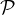(A) para denotar el conjunto formado por todos los subconjuntos de A, es decir:
| (A) = {S : S ⊆ A} |
Si A es un conjunto finito, entonces denotara la cantidad de elementos de
A.
Para x,y ∈ ω, definamos
x y = y = 
|
Dados x,y ∈ ω diremos que x divide a y cuando haya un z ∈ ω tal que y = z.x. Notar que 0 divide a 0, 3 divide a 0 y 0 no divide a 23. Escribiremos x∣y para expresar que x divide a y. Dados x,y ∈ ω, diremos que x e y son coprimos cuando 1 sea el unico elemento de ω que divide a ambos. Notese que x e y no son son coprimos sii existe un numero primo p ∈ ω que los divide a ambos
Si bien no hay una definicion natural en matematica de cuanto vale 00 (0 elevado a la 0), por convencion para nosotros 00 = 1
Supondremos que el lector sabe las nociones basicas sobre conjuntos, aunque resaltaremos algunas de las mas importantes para que el lector las repase.
La propiedad de extensionalidad nos dice que, dados conjuntos A,B, se tiene que A = B si y solo si para cada objeto x se da que
| x ∈ A si y solo si x ∈ B |
Esta propiedad es importante metodologicamente ya que a la hora de probar que dos conjuntos A,B son iguales, extensionalidad nos asegura que basta con ver que se dan las dos inclusiones A ⊆ B y B ⊆ A.
Otro tema importante es manejar correctamente la notacion cuando definimos un conjunto usando llaves y mediante propiedades que caracterizan la pertenencia al mismo. Algunos ejemplos
Dejamos al lector la tarea de entender en forma precisa que conjunto se esta denotando en cada caso.
Dados conjuntos A1,...,An, con n ≥ 2, usaremos A1 × ... × An para denotar el producto Cartesiano de A1,...,An, es decir el conjunto formado por todas las n-uplas (a1,...,an) tales que a1 ∈ A1,...,an ∈ An. Si A1 = ... = An = A, con n ≥ 2, entonces escribiremos An en lugar de A1 × ... × An. Para n = 1, definimos An = A, es decir A1 = A. Usaremos ♢ para denotar la unica 0-upla. Definimos entonces A0 = {♢}. Si A es un conjunto denotaremos con AN al conjunto formado por todas las infinituplas (a1,a2,...) tales que ai ∈ A para cada i ∈ N. Por ejemplo
| (1,2,3,4,...) ∈ ωN |
donde (1,2,3,4,...) es una forma intuitiva de denotar la infinitupla cuyo i-esimo elemento es el numero natural i.
Si (A1,A2,...) es una infinitupla de conjuntos, entonces usaremos ⋃ i=1∞Ai o ⋃ i≥1Ai para denotar al conjunto
| {a : a ∈ Ai, para algun i ∈ N} |
Un alfabeto es un conjunto finito de simbolos. Notese que ∅ es un alfabeto. Si Σ es un
alfabeto, entonces Σ* denotara el conjunto de todas las palabras formadas con
simbolos de Σ. La unica palabra de longitud 0 es denotada con ε. Ya que en ε no
ocurren simbolos, tenemos que ε ∈ Σ*, para cualquier alfabeto, mas aun notese que
∅* = {ε}. Usaremos  para denotar la longitud de la palabra α. Usaremos Σ+ para
denotar al conjunto Σ*-{ε}. Notese que funciones, n-uplas y palabras son
objetos de distinto tipo, por lo cual ∅, ♢ y ε son tres objetos matematicos
diferentes.
para denotar la longitud de la palabra α. Usaremos Σ+ para
denotar al conjunto Σ*-{ε}. Notese que funciones, n-uplas y palabras son
objetos de distinto tipo, por lo cual ∅, ♢ y ε son tres objetos matematicos
diferentes.
Si α1,...,αn ∈ Σ*, con n ≥ 0, usaremos α1...αn para denotar la concatenacion de las palabras α1,...,αn (notese que cuando n = 0, resulta que α1...αn = ε). Si α1 = ... = αn = α, entonces escribiremos αn en lugar de α1...αn. O sea que α0 = ε.
Diremos que α es subpalabra (propia) de β cuando (α {ε,β} y) existan palabras
δ,γ tales que β = δαγ. Diremos que β es un tramo inicial (propio) de α si hay una
palabra γ tal que α = βγ (y β
{ε,β} y) existan palabras
δ,γ tales que β = δαγ. Diremos que β es un tramo inicial (propio) de α si hay una
palabra γ tal que α = βγ (y β {ε,α}). En forma similar se define tramo final
(propio).
{ε,α}). En forma similar se define tramo final
(propio).
Dados i ∈ ω y α ∈ Σ* definamos
![[α]](apunte6x.png) i = 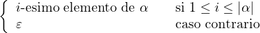 i = 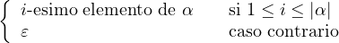
|
Dada γ ∈ Σ*, definamos
| γR = |
La palabra γR es llamada la resiproca de γ.
Dadas palabras α,β ∈ Σ*, con  ,
, ≥ 1, y un natural i ∈{1,...,
≥ 1, y un natural i ∈{1,..., }, se dice que α
ocurre a partir de i en β cuando se de que existan palabras δ,γ tales que β = δαγ y
}, se dice que α
ocurre a partir de i en β cuando se de que existan palabras δ,γ tales que β = δαγ y
 = i - 1.
= i - 1.
Notese que una palabra α puede ocurrir en β, a partir de i, y tambien a partir de j, con i≠j. En virtud de esto, hablaremos de las distintas ocurrencias de α en β. Por ejemplo hay dos ocurrencias de la palabra aba en la palabra
| cccccccabaccccabaccccc |
y tambien hay dos ocurrencias de la palabra aba en la palabra
| cccccccababacccccccccc |
En el primer caso diremos que dichas ocurrencias de aba son disjuntas, en cambio en el segundo caso puede apreciarse que las dos ocurrencias se superponen en una posicion. No definiremos en forma matematica precisa el concepto de ocurrencia pero el lector no tendra problemas en comprenderlo y manejarlo en forma correcta.
A veces diremos que una ocurrencia esta contenida o sucede dentro de otra. Por ejemplo la segunda ocurrencia de ab en babbbfabcccfabccc esta contenida en la primer ocurrencia de fabc en babbbfabcccfabccc. Tambien haremos reemplazos de ocurrencias por palabras. Por ejemplo el resultado de reemplazar la primer ocurrencia de abb en ccabbgfgabbgg por oolala es la palabra ccoolalagfgabbgg. El resultado de reemplazar todas las ocurrencias de aba en ccabagfgabaggaba por $$ es la palabra cc$$gfg$$gg$$. En algunos casos deberemos especificar que los reemplazos se hagan simultaneamente. Por ejemplo hablaremos del resultado de reemplazar en γ, simultaneamente, todas las ocurrencias de α1 por β1 y todas las de α2 por β2. Aqui la aclaracion de simultaneidad es importante ya que si primero reemplazaramos las ocurrencias de α1 por β1 y despues las de α2 por β2, el resultado puede cambiar porque en β1 puede haber ocurrencias de α2. Dejamos al lector dar un ejemplo en el cual el reemplazo secuencial y el simultaneo dan distintos resultados.
Si α ∈ Σ* y σ ∈ Σ, usaremos  σ para denotar la cantidad de ocurrencias del
simbolo σ en α.
σ para denotar la cantidad de ocurrencias del
simbolo σ en α.
Nuestro estilo o enfoque matematico pondra enfasis en los objetos, es decir haremos matematica prestando atencion a los distintos objetos matematicos involucrados, los cuales siempre seran definidos en forma precisa en terminos de objetos mas primitivos. Hay ciertos objetos matematicos los cuales no definiremos y supondremos que el lector tiene una idea clara y precisa de los mismos. Por ejemplo un tipo de objeto matematico, quizas el mas famoso, son los numeros. No diremos que es un numero pero supondremos que el lector tiene una intuicion clara acerca de este tipo de objetos y de sus propiedades basicas. Otro tipo de objeto que no definiremos y que sera clave para nuestro enfoque son los conjuntos. Nuevamente, no diremos que es un conjunto pero supondremos que el lector tiene una intuicion clara acerca de estos objetos y sus propiedades basicas. Es importante que en nuestro enfoque, numeros y conjuntos son objetos de distinta naturaleza por lo cual nunca un numero es un conjunto ni un conjunto es un numero. En particular esto nos dice que el numero 0 y el conjunto ∅ son objetos distintos. Otro tipo de objeto matematico muy importante para la matematica discreta son los simbolos. No discutiremos que es un simbolo sino que aceptaremos este concepto en forma primitiva. Tambien constituyen un tipo de objeto matematico las palabras, las cuales intuitivamente hablando son juxtaposiciones de simbolos. Otro tipo de objeto matematico muy importante son los pares ordenados o 2-uplas, es decir los objetos de la forma (a,b), donde a y b son objetos matematicos cualesquiera. Tambien son objetos matematicos y de distinta naturaleza las 3-uplas, las 4-uplas y en general las n-uplas para n un numero natural mayor o igual a 2. Cabe destacar que en nuestro enfoque no habra 1-uplas. Sin envargo, si bien hay una sola 0-upla, ella constituye un tipo de objeto matematico distinto a los antes mensionados. El ultimo tipo de objeto matematico que consideraremos es aquel de las infinituplas.
Tenemos entonces dividido nuestro universo matematico en las distintas categorias de objetos:
Asumiremos que el lector tiene una idea intuitiva del concepto de funcion. Daremos aqui una definicion matematica de dicho concepto. Una funcion es un conjunto f de pares ordenados con la siguiente propiedad
Por ejemplo, si tomamos f = {(x,x2) : x ∈ ω} se puede ver facilmente que f cumple la propiedad (F). Dada una funcion f, definamos
Escribiremos f : S ⊆ A → B para expresar que f es una funcion tal que Df = S ⊆ A y If ⊆ B. Tambien escribiremos f : A → B para expresar que f es una funcion tal que Df = A y If ⊆ B. En tal contexto llamaremos a B conjunto de llegada. Por supuesto B no esta determinado por f ya que solo debe cumplir If ⊆ B.
Muchas veces para definir una funcion f, lo haremos dando su dominio y su regla de asignacion, es decir especificaremos en forma precisa que conjunto es el dominio de f y ademas especificaremos en forma presisa quien es f(x) para cada x de dicho dominio. Obviamente esto determina por completo a la funcion f ya que f = {(x,f(x)) : x ∈ Df}. Por ejemplo si decimos que f es la funcion dada por:

|
para describir a f. Es decir, a veces para hacer mas intuitiva aun la descripcion de la funcion, tambien incluiremos un conjunto de llegada de dicha funcion y a la regla de asignacion la escribiremos usando una flecha. Para dar otro ejemplo, si escribimos sea f dada por:
|
estaremos diciendo que f es la funcion
| {(x,x + 1) : x es par y x ∈ N}∪{(x,x2) : x es impar y x ∈ N} |
Sean f y g dos funciones. Ya que las mismas son conjuntos, tendremos que f sera igual a g si y solo si para cada par (a,b), se tiene que (a,b) ∈ f sii (a,b) ∈ g. Muchas veces sera util el siguiente criterio de igualdad de funciones:
Lema 1. Sean f y g funciones. Entonces f = g sii Df = Dg y para cada x ∈ Df se tiene que f(x) = g(x)
Dado un conjunto A, a la funcion
|
La denotaremos con IdA y la llamaremos la funcion identidad sobre A. Notese que IdA = {(a,a) : a ∈ A}.
Dadas funciones f y g definamos la funcion f ∘ g de la siguiente manera:
Una funcion f es inyectiva cuando no se da que f(a) = f(b) para algun par de lementos distintos a,b ∈ Df. Dada una funcion f : A → B diremos que f es suryectiva cuando If = B. Debe notarse que el concepto de suryectividad depende de un conjunto de llegada previamente fijado, es decir que no tiene sentido hablar de la suryectividad de una funcion f si no decimos respecto de que conjunto de llegada lo es. Muchas veces diremos que una funcion f es sobre para expresar que es suryectiva.
Dada una funcion f : A → B diremos que f es biyectiva cuando f sea inyectiva y suryectiva. Notese que si f : A → B es biyectiva, entonces podemos definir una nueva funcion f-1 : B → A, de la siguiente manera:
| f-1(b) = unico a ∈ A tal que f(a) = b |
La funcion f-1 sera llamada la inversa de f. Notese que f ∘ f-1 = IdB y f-1 ∘ f = IdA. El siguiente lema muestra que esta ultima propiedad caracteriza la inversa.
Lema 2. Supongamos f : A → B y g : B → A son tales que f ∘ g = IdB y g ∘ f = IdA. Entonces f y g son biyectivas, f-1 = g y g-1 = f.
Dada una funcion f : A → B, definamos:
| ker(f) = {(a,b) ∈ A2 : f(a) = f(b)} |
El conjunto ker(f) sera llamado el nucleo de f. Notese que f es inyectiva si y solo si ker(f) = {(a,a) : a ∈ A}.
Sea X un conjunto cualquiera y sea S ⊆ X. Usaremos χSX para denotar la funcion
|
Llamaremos a χSX la funcion caracteristica de S con respecto a X. Muchas veces cuando el conjunto X este fijo y sea claro el contexto, escribiremos χS en lugar de χSX.
Dada una funcion f y un conjunto S ⊆ Df, usaremos f|S para denotar la restriccion de f al conjunto S, i.e. f|S = f ∩ (S × If). Notese que f|S es la funcion dada por

Dadas funciones f1,...,fn, con n ≥ 2, definamos la funcion [f1,...,fn] de la siguiente manera:
![D[f1,...,fn] = Df1 ∩ ...∩ Dfn
[f1,...,fn](e) = (f1(e),...,fn(e))](apunte22x.png)
 × Ifn. Por conveniencia notacional (que el lector
entendera mas adelante) definiremos [f1] = f1. Es decir que hemos definido para
cada sucecion de funciones f1,...,fn, con n ≥ 1, una nueva funcion la cual denotamos
con [f1,...,fn].
× Ifn. Por conveniencia notacional (que el lector
entendera mas adelante) definiremos [f1] = f1. Es decir que hemos definido para
cada sucecion de funciones f1,...,fn, con n ≥ 1, una nueva funcion la cual denotamos
con [f1,...,fn].
Una observacion interesante es que si fi : Ai → Bi, i = 1,...,k, son funciones tales que Ai ∩ Aj = ∅ para i≠j, entonces f1 ∪ ... ∪ fk es la funcion
|
Sea A un conjunto. Por una relacion binaria sobre A entenderemos una relacion binaria que es un subconjunto de A2. Algunos ejemplos:
Notese que si R es una relacion binaria sobre A y A ⊆ B entonces R es una relacion binaria sobre B. Por ejemplo las relaciones dadas en los ejemplos (E1), (E2), (E4) y (E5) tambien son relaciones binarias sobre R
Como es usual, cuando R sea una relacion binaria sobre un conjunto A, algunas veces escribiremos aRb en lugar de (a,b) ∈ R.
Hay algunas propiedades que pueden tener o no las relaciones binarias sobre un conjunto A, las cuales son muy importantes en matematica. Algunas de estas son:
Cuando R cumpla la primer propiedad diremos que R es reflexiva, con respecto a A. Analogamente diremos que R es transitiva, simetrica o antisimetrica, con respecto a A, cuando se den, respectivamente las otras propiedades. Notese que estas propiedades dependen del conjunto A, por ejemplo si tomamos R = {(r,t) ∈ N2 : r ≤ t} entonces R es una relacion binaria sobre N y tambien es una relacion binaria sobre ω, pero es relexiva con respepcto a N y no lo es con respecto a ω ya que (0,0) no pertenece a R. Sin envargo R es transitiva con respecto a N y tambien lo es con respecto a ω.
Una relacion binaria R sobre un conjunto A sera llamada un orden parcial sobre A si es reflexiva, transitiva y antisimetrica respecto de A. Algunos ejemplos:
Notese que las relaciones dadas en (E1) y (E4) son distintas, ademas la relacion dada en (E4) no es un orden parcial sobre R (por que?).
Muchas veces denotaremos con ≤ a una relacion binaria que sea un orden parcial. Esto hace mas intuitiva nuestra escritura pero siempre hay que tener en cuenta que ≤ en estos casos esta denotando cierto conjunto de pares ordenados previamente definido.
Usaremos la siguiente
| {(a,b) ∈ A2 : a < b y no existe z tal que a < z < b} |
Cuando se de a ≺ b diremos que a es cubierto por b o que b cubre a a (respecto de ≤)
Algunos ejemplos:
Ordenes totales sobre un conjunto Sea A un conjunto cualquiera. Por un orden total sobre A entenderemos un orden parcial ≤ sobre A el cual cumpla:
Supongamos A es finito no vacio y ≤ es un orden total sobre A. La propiedad (C) nos permite probar que para cada conjunto no vacio S ⊆ A, hay un elemento s ∈ S el cual cumple s ≤ s′ para cada s′∈ S. Por supuesto, s es unico (por que?) y habitualmente es llamado el menor elemento de S, ya que es menor que todo otro elemento de S.
Si A es finito no vacio y ≤ es un orden total sobre A, podemos definir
recursivamente una funcion f : {1,..., }→ A de la siguiente manera:
}→ A de la siguiente manera:
 - 1}, entonces
- 1}, entonces
Como es habitual, f(i) es llamado el i-esimo elemento de A.
Muchas veces para dar un orden total sobre un conjunto finito A, daremos simplemente sus elementos en forma creciente ya que esto determina el orden por completo. Por ejemplo si A = {1,2,3}, el orden total dado por 2 < 1 < 3 es la relacion ≤ = {(2,1),(1,3),(2,3),(1,1),(2,2),(3,3)}.
Un concepto importante relativo a los ordenes totales es el de sucesor. Si ≤ es un orden total sobre A y a,b ∈ A, diremos que b es el sucesor de a cuando se de que a < b y b ≤ c, para cada c ∈ A tal que a < c, i.e., b es el menor elemento del conjunto {c ∈ A : tal que a < c}. No siempre existe el sucesor de un elemento. Por ejemplo si ≤ es el orden usual de R, entonces ningun elemento tiene sucesor (justifique).
Diagramas de Hasse Dado un orden parcial ≤ sobre un conjunto finito A podemos realizar un diagrama de ≤, llamado diagrama de Hasse, siguiendo las siguientes instrucciones:
La relacion de orden ≤ puede ser facilmente obtenida de su diagrama, a saber, a ≤ b sucedera si y solo si pa = pb o hay una sucesion de segmentos ascendentes desde pa hasta pb.
Ejemplos:
Sea A un conjunto cualquiera. Por una relacion de equivalencia sobre A entenderemos una relacion binaria sobre A la cual es reflexiva, transitiva y simetrica, con respecto a A. Es decir R sera una relacion de equivalencia sobre A si se cumplen:
Algunos ejemplos:
Dada una relacion de equivalencia R sobre A y a ∈ A, definimos:
| a∕R = {b ∈ A : aRb} |
El conjunto a∕R sera llamado la clase de equivalencia de a, con respecto a R. Ejemplos:
Algunas propiedades basicas son:
Lema 3. Sea R una relacion de equivalencia sobre A.
Proof. (1) es muy facil.
(2). Supongamos aRb. Veremos que a∕R ⊆ b∕R. Supongamos c ∈ a∕R. Entonces aRc. Como aRb, tenemos que bRa, por lo cual hemos probado que bRa y aRc, lo cual implica que bRc. O sea que cRb, lo cual nos dice que c ∈ b∕R. Esto prueba que a∕R ⊆ b∕R. Similarmente se prueba que b∕R ⊆ a∕R, con lo cual se tiene que a∕R = b∕R.
Reciprocamente, si a∕R = b∕R, entonces b ∈ a∕R ya que b ∈ b∕R. Pero esto nos dice que aRb.
(3). Supongamos que a∕R∩b∕R no es vacio, es decir hay un c ∈ a∕R∩b∕R. Entonces es facil ver que aRb. Pero entonces por (2) tenemos que a∕R = b∕R. __
Denotaremos con A∕R al conjunto {a∕R : a ∈ A}. Llamaremos a A∕R el cociente de A por R. Ejemplos:
Si R es una relacion de equivalencia sobre A, definamos la funcion πR : A → A∕R por πR(a) = a∕R, para cada a ∈ A. La funcion πR es llamada la proyeccion canonica (respecto de R).
Lema 4. Sea R una relacion de equivalencia sobre A. Entonces kerπR = R. Es decir que πR es inyectiva sii R = {(x,y) ∈ A2 : x = y}
Definicion de funciones con dominio A∕R Supongamos R es una relacion de equivalencia sobre R y supongamos definimos una funcion f : R∕R → R de la siguiente manera:
| f(r∕R) = r2 |
A priori puede pareser que esta definicion es natural y que no esconde ninguna posible complicacion. Pero supongamos que R es tal que 2R6. Entonces tendriamos que 2∕R = 6∕R lo cual produciria la siguiente contradiccion:
Para dar un ejemplo mas concreto de este fenomeno de ambiguedad, supongamos
| R = {(x,y) ∈ Z2 : x - y es multiplo de 2} |
y definimos una funcion f : Z∕R → R de la siguiente manera:
| f(n∕R) = 1∕(n2 + 1) |
Como ya vimos Z∕R = {{t ∈ Z : t es par},{t ∈ Z : t es impar}}, por lo cual facilmente se puede llegar a que la ecuacion f(n∕R) = 1∕(n2 + 1) no define correctamente una funcion. Dejamos al lector explicar esto mas detalladamente.
Sin envargo hay muchos casos en los cuales este tipo de definiciones son inhambiguas y desde luego muy importantes en el algebra moderna. Como un primer ejemplo tenemos el siguiente lema el cual es una de las ideas fundamentales del algebra moderna.
Lema 5. Si f : A → B es sobre, entonces la ecuacion (a∕kerf) = f(a) define en forma inhambigua una funcion : A∕kerf → B la cual es biyectiva.
Proof. Que la ecuacion (a∕kerf) = f(a) define sin ambiguedad una funcion : A∕kerf → B es obvio ya que si a∕kerf = b∕kerf, entonces por definicion de kerf debera suceder que a = b. Dejamos al lector la prueba de que es biyectiva __
Correspondencia entre relaciones de equivalencia y particiones Dado un conjunto A por una particion de A entenderemos un conjunto tal que:
La ultima condicion dice simplemente que la union de todos los elementos de debe ser A. Ejemplos:
| = {{1,5},{2,3},{4}} |
es una particion de A
Una observacion importante es que si es una particion de A, entonces para cada a ∈ A hay un unico S ∈ tal que a ∈ S (por que?). O sea que podemos hablar de EL elemento de que contiene a a.
Dada una particion de un conjunto A podemos definir una relacion binaria asociada a de la siguiente manera:
| R = {(a,b) ∈ A2 : a,b ∈ S, para algun S ∈} |
Lema 6. Sea A un conjunto cualquiera. Entonces:
Proof. (1). Es facil ver que R es reflexiva y simetrica. Veamos que es transitiva. Supongamos que aRb y bRc. O sea que hay S1,S2 ∈ tales que a,b ∈ S1 y b,c ∈ S2. Ya que S1 y S2 tienen un elemento en comun, debera suceder que S1 = S2. Pero entonces tenemos que a,c ∈ S1, lo cual nos dice que aRc.
(2). Sigue facilmente del Lema 3. __
El siguiente teorema da una correspondencia natural entre relaciones de equivalencia sobre A y particiones de A.
Teorema 7. Sea A un conjunto cualquiera. Sean
|
son biyecciones una inversa de la otra.
Proof. Notese que por el Lema 2 basta con probar:
Prueba de (1). Primero veamos que A∕R ⊆. Sea a ∈ A, veremos que a∕R = {b : aRb}∈. Sea S el unico elemento de que contiene a a. Es facil ver de la definicion de R que a∕R = S por lo cual a∕R∈. Veamos ahora que ⊆ A∕R. Sea S ∈. Sea a ∈ S. Es facil ver de la definicion de R que a∕R = S por lo cual S ∈ A∕R.
Prueba de (2). Primero veamos que RA∕R ⊆ R. Supongamos aRA∕Rb. Entonces a,b ∈ c∕R, para algun c ∈ A. Es claro que entonces aRb. Veamos ahora que R ⊆ RA∕R. Supongamos que aRb. Entonces a,b ∈ a∕R, lo cual nos dice que aRA∕Rb. __
El teorema anterior muestra que a nivel de informacion es lo mismo tener una relacion de equivalencia sobre A que tener una particion de A. Esto es muy util ya que muchas veces es mas facil especificar una relacion de equivalencia via su particion asociada. Por ejemplo si hablamos de la relacion de equivalencia sobre {1,2,3,4,5} dada por la particion
| = {{1,5},{4},{2,3}} |
nos estaremos refiriendo a R, es decir a la relacion:
| {(1,1),(2,2),(3,3),(4,4),(5,5),(1,5),(5,1),(2,3),(3,2)} |
Sea A un conjunto. Dado n ∈ ω, por una operacion n-aria sobre A entenderemos una funcion cuyo dominio es An y cuya imagen esta contenida en A. A las operaciones 2-arias (resp. 3-arias, 4-arias) tambien las llamaremos operacion binarias (resp. ternarias, cuaternarias). Algunos ejemplos:
Sea A un conjunto. Dado n ∈ ω, por una relacion n-aria sobre A entenderemos un subconjunto de An. A las relaciones 2-arias (resp. 3-arias, 4-arias) tambien las llamaremos relaciones binarias (resp. ternarias, cuaternarias). Algunos ejemplos:
Sea Σ un alfabeto finito. Dados n,m ∈ ω, usaremos ωn × Σ*m para abreviar la expresion
 × ×
|
Por ejemplo, ω3 ×Σ*4 sera una forma abreviada de escribir ω×ω×ω×Σ*×Σ*×Σ*×Σ*. Debe quedar claro que estamos haciendo cierto abuso notacional ya que en principio si no hacemos esta convencion notacional, ω3 × Σ*4 denota un conjunto de pares y ω × ω × ω × Σ*× Σ*× Σ*× Σ* es un conjunto de 7-uplas.
Notese que cuando n = m = 0, tenemos que ωn × Σ*m denota el conjunto {♢} y si m = 0, entonces ωn × Σ*m denota el conjunto ωn.
Con esta convencion notacional, un elemento generico de ωn × Σ*m es una
(n + m)-upla de la forma (x1,...,xn,α1,...,αm). Para abreviar, escribiremos ( ,
, ) en
lugar de (x1,...,xn,α1,...,αm).
) en
lugar de (x1,...,xn,α1,...,αm).
Definicion de funcion Σ-mixta Sea Σ un alfabeto finito. Dada una funcion f, diremos que f es Σ-mixta si cumple las siguientes propiedades
Algunos ejemplos:
|
es Σ-mixta ya que se cumple (M1) con n = m = 1 y (M2). Notese que f no es {□,%}-mixta ya que no cumple (M1) respecto del alfabeto {□,%}. Sin envargo note que f es {□,%,▴,@}-mixta
|
es Σ-mixta cualesquiera sea el alfabeto Σ
|
es Σ-mixta ya que se cumple (M1) (con n = 0 y m = 1) y (M2)
|
donde D = {(x,ε,ε,ε) : x es impar}, es Σ-mixta (con n = 1 y m = 3 en (M1)). Tambien notese que
|
es Σ-mixta.
Dejamos al lector la facil prueba del siguiente resultado basico.
Una funcion Σ-mixta f es Σ-total cuando haya n,m ∈ ω tales que Df = ωn × Σ*m. El lema anterior nos dice que si Σ ⊆ Γ, entonces toda funcion Σ-mixta es Γ-mixta. Sin envargo una funcion puede ser Σ-total y no ser Γ-total, cuando Σ ⊆ Γ. Por ejemplo tomemos Σ = {□,%,▴} y Γ = {□,%,▴,!}, y consideremos la funcion
|
Es claro que f es Σ-mixta y Σ-total. Tambien es Γ-mixta ya que Df ⊆ ω × Γ* y If ⊆ ω, por lo cual cumple (M1) y (M2). Sin envargo f no es Γ-total ya que Df no es igual a ωn × Γ*m, cualesquiera sean n y m.
Como hemos visto recien, una funcion f puede ser Σ-mixta y Γ-mixta para dos alfabetos distintos Σ y Γ e incluso es facil construir un ejemplo en el cual Σ y Γ sean incomparables como conjuntos, es decir que ninguno incluya al otro. Dejamos al lector convencerse de que si f es una funcion que es Σ-mixta para algun alfabeto Σ, entonces hay un alfabeto Σ0 el cual es el menor de todos los alfabetos respecto de los cuales f es mixta, es decir Σ0 cumple que f es Σ0-mixta y si Γ es tal que f es Γ-mixta, entonces Σ0 ⊆ Γ.
A continuacion daremos algunas funciones Σ-mixtas basicas las cuales seran frecuentemente usadas.
La funcion sucesor es definida por
|
La funcion predecesor es definida por
|
Sea Σ un alfabeto no vacio. Para cada a ∈ Σ, definamos
|
La funcion da es llamada la funcion derecha sub a, respecto del alfabeto Σ.
Sea Σ un alfabeto. Para n,m,i ∈ ω tales que 1 ≤ i ≤ n, definamos
|
Para n,m,i ∈ ω tales que n + 1 ≤ i ≤ n + m, definamos
|
Las funciones pin,m son llamadas proyecciones. La funcion pin,m es llamada la proyeccion n,m,i, respecto del alfabeto Σ. Notese que esta definicion requiere que n + m ≥ 1 ya que i debe cumplir 1 ≤ i ≤ n + m.
Sea Σ un alfabeto. Para n,m,k ∈ ω, y α ∈ Σ*, definamos
|
Notese que Ck0,0 : {♢}→{k} y que Cα0,0 : {♢}→{α}.
Definamos
|
Notese que pr(1) = 2, pr(2) = 3, pr(3) = 5, etc.
Dada una funcion Σ-mixta f, si n,m ∈ ω son tales que Df ⊆ ωn × Σ*m y ademas If ⊆ ω, entonces diremos que f es una funcion de tipo (n,m,#). Similarmente si n,m ∈ ω son tales que Df ⊆ ωn × Σ*m y ademas If ⊆ Σ*, entonces diremos que f es una funcion de tipo (n,m,*). Notese que si f≠∅, entonces hay unicos n,m ∈ ω y s ∈{#,*} tales que f es una funcion de tipo (n,m,s). Sin envargo ∅ es una funcion de tipo (n,m,s) cualesquiera sean n,m ∈ ω y s ∈{#,*}. De esta forma, cuando f≠∅ hablaremos de ”el tipo de f” para refererirnos a esta unica terna (n,m,s). Notese que Suc es de tipo (1,0,#) y da es de tipo (0,1,*).
Tambien notese que la relacion ”f es una funcion de tipo (n,m,s)” no depende del alfabeto Σ (que significa esto?).
Supongamos que k,l,n,m ∈ ω y que F : DF ⊆ ωk × Σ*l → ωn × Σ*m. Supongamos ademas que n + m ≥ 1. Entonces denotaremos con F(i) a la funcion pin,m ∘F. Notar que
| F = [F(1),...,F(n+m)] |
Un predicado Σ-mixto es una funcion f la cual es Σ-mixta y ademas cumple que If ⊆{0,1}. Por ejemplo
|
Operaciones logicas entre predicados Dados predicados P : S ⊆ ωn × Σ*m →{0,1} y Q : S ⊆ ωn × Σ*m →{0,1}, con el mismo dominio, definamos nuevos predicados (P ∨ Q), (P ∧ Q) y P de la siguiente manera
|
|
|
Dado un alfabeto Σ, una familia Σ-indexada de funciones sera una funcion  tal que
D = Σ y para cada a ∈ D se tiene que (a) es una funcion. Algunos
ejemplos:
tal que
D = Σ y para cada a ∈ D se tiene que (a) es una funcion. Algunos
ejemplos:
dada por
|
Claramente es una familia {□,%,▴}-indexada de funciones. Notar
que
|
= {(□,Suc),(%,Suc),(▴,Pred)}
|
Se tiene tambien por ejemplo que (%) = Suc por lo cual tambien es
cierto que (%)(22) = 23, etc.
|
es una familia Σ-indexada de funciones. Notar que
|
= {(a,da) : a ∈ Σ}
|
Si es una familia Σ-indexada de funciones, entonces para a ∈ Σ, escribiremos a en
lugar de (a).
Un conjunto S es llamado Σ-mixto si hay n,m ∈ ω tales que S ⊆ ωn × Σ*m. Notese que S es ∅-mixto sii existe un n ≥ 0, tal que S ⊆ ωn. Por ejemplo,
{(x,α) ∈ ω ×{▴,!}* :  = x} = x}
|
| {(0,▴▴▴,ε),(1,%▴%,▴▴)} |
son conjuntos {▴,%,!}-mixtos. Tambien notese que ∅ y {♢} son conjuntos Σ-mixtos, cualesquiera sea el alfabeto Σ.
Dado un conjunto Σ-mixto S, si n,m ∈ ω son tales que S ⊆ ωn × Σ*m, entonces diremos que S es un conjunto de tipo (n,m). Notese que si S≠∅, entonces hay unicos n,m ∈ ω tales que S es un conjunto de tipo (n,m). Sin envargo ∅ es un conjunto de tipo (n,m) cualesquiera sean n,m ∈ ω. De esta forma, cuando S≠∅ hablaremos de ”el tipo de S” para refererirnos a este unico par (n,m). Notese que ω es de tipo (1,0) y Σ* es de tipo (0,1).
Tambien notese que la relacion ”S es un conjunto de tipo (n,m)” no depende del alfabeto Σ (que significa esto?).
Un conjunto Σ-mixto S es llamado rectangular si es de la forma
| S1 × ... × Sn × L1 × ... × Lm, |
con cada Si ⊆ ω y cada Li ⊆ Σ*. Notar que todo subconjunto de ω es rectangular (es el caso n = 1 y m = 0). Tambien {♢} es rectangular (es el caso n = m = 0). Otros ejemplos:
Tambien notese que ∅ = ∅×∅ por lo cual ∅ es un conjunto rectangular.
El concepto de conjunto rectangular es muy importante en nuestro enfoque. Aunque en general no habra restricciones acerca del dominio de las funciones y predicados, nuestra filosofia sera tratar en lo posible que los dominios de las funciones que utilicemos para hacer nuestro analisis de recursividad de los distintos paradigmas, sean rectangulares. Aunque en principio puede pareser que todos los conjuntos son rectangulares, el siguiente lema mostrara cuan ingenua es esta vision.
Lema 9. Sea S ⊆ ω × Σ*. Entonces S es rectangular si y solo si se cumple la siguiente propiedad:
Proof. Ejercicio. __
Supongamos Σ = {#,▴,%}. Notese que podemos usar el lema anterior para probar por ejemplo que los siguientes conjuntos no son rectangulares
Dejamos como ejercicio para el lector enunciar un lema analogo al anterior pero que caracterice cuando S ⊆ ω2 × Σ*3 es rectangular.
Usaremos la notacion lambda de Church en la forma que se explica a continuacion. Esta notacion siempre depende de un alfabeto finito previamente fijado. En general en nuestro lenguaje matematico utilizamos diversas expresiones las cuales involucran variables que una vez fijadas en sus valores hacen que la expresion tambien represente un determinado valor
En el contexto de la notacion lambda solo se podran utilizar expresiones con caracteristicas muy especiales por lo cual a continuacion iremos describiendo que condiciones tienen que cumplir las expresiones para que puedan ser usadas en la notacion lambda

| x + y + 1 |
tiene dos variables numericas x e y (y ninguna alfabetica). Si le asignamos a x el valor 2 y a y el valor 45, entonces la expresion x + y + 1 produce o representa el valor 48 = 2 + 45 + 1.
 + +  x x
|
la cual tiene una variable numerica x y dos variables alfabeticas α y β.
Supongamos ademas que el alfabeto previamente fijado es {@,%}. Si le
asignamos a x el valor 2, a α el valor @@ y a β el valor %%%, entonces la
expresion  +
+  x produce o representa el valor
x produce o representa el valor  + 2 = 9.
+ 2 = 9.
Pred( ) )
|
no asume valor o no esta definida cuando el valor asignado a α es ε. Otro ejemplo, consideremos la expresion
x∕(y - )2 )2
|
Esta expresion no esta definida o no asume valor para aquellas asignaciones de valores a sus variables en las cuales el valor asignado a y sea igual a la longitud del valor asignado a α.
| βy |
tiene una variable numerica, y, una variable alfabetica, β, y una vez valuadas estas variables produce un valor alfabetico, a saber el resultado de elevar el valor asignado a la variable β, a el valor asignado a y.
| x∕2 |
no cumple la propiedad dada en (6) ya que para ciertos valores de ω asignados a la variable x, la expresion da valores que se salen de ω por lo cual no puede cumpir ni a. ni b.
| @x$y |
no cumple la propiedad dada en (6) ya que por ejemplo cuando le asignamos a x el valor 2 y a y el valor 6, la expresion nos da la palabra @@$$$$$$ la cual no pertenece a Σ* por lo cual no puede cumpir ni a. ni b.
| el menor numero primo que es mayor que x |
Es claro que esta expresion para cada valor de ω asignado a la variable x produce o representa un valor concreto de ω. Otro ejemplo:
| el tercer simbolo de α |
notese que esta expresion, una ves fijado un alfabeto Σ, estara definida o producira un valor solo cuando le asignamos a α una palabra de Σ* de longitud mayor o igual a 3.
x = y + 1 y  ≤ 22 ≤ 22
|
las pensaremos que asumen valores del conjunto {0,1}⊆ ω. Por ejemplo la expresion anterior asume o produce el valor 1 cuando le asignamos a x el valor 11, a y el valor 10 y a α la palabra ε. Las expresiones Booleanas pensadas de esta forma podran ser utilizadas en la notacion lambda si es que tambien cumplen con las anteriores condiciones.
![[E]](apunte69x.png)
Supongamos ya hemos fijado un alfabeto finito Σ y supongamos E es una expresion la cual tiene las caracteristicas descriptas anteriormente. Sea x1,...,xn,α1,...,αm una lista de variables todas distintas tal que las variables numericas que ocurren en E estan todas contenidas en la lista x1,...,xn y las variables alfabeticas que ocurren en E estan en la lista α1,...,αm (puede suceder que haya variables de la lista x1,...,xn,α1,...,αm las cuales no ocurran en E). Entonces
λx1...xnα1...αm![[E ]](apunte70x.png)
|
denotara la funcion definida por:
![[E]](apunte72x.png) (k1,...,kn,β1,...,βm) = valor que asume o representa
E cuando le asignamos a cada xi el valor ki y a cada αi el valor βi.
(k1,...,kn,β1,...,βm) = valor que asume o representa
E cuando le asignamos a cada xi el valor ki y a cada αi el valor βi. Notese que por tener E la propiedad (6) de mas arriba, la funcion
λx1...xnα1...αm![[E ]](apunte73x.png) es Σ-mixta de tipo (n,m,s) para algun s ∈{#,*}. Algunos
ejemplos:
es Σ-mixta de tipo (n,m,s) para algun s ∈{#,*}. Algunos
ejemplos:
|
Aqui el lector puede notar la dependencia de la notacion lambda respecto del alfabeto fijado. Si en lugar de fijar Σ = {@,?,} hubieramos fijado Σ = {%}, entonces λxα denotaria otra funcion, a saber
|
|
![[αβ]](apunte77x.png) es la
funcion
es la
funcion
|
Tambien tenemos que λβα es la funcion
|
Notese que estas funciones son distintas. Por ejemplo λαβ![[αβ]](apunte79x.png) (%,!) = %!
y λβα
(%,!) = %!
y λβα![[αβ]](apunte80x.png) (%,!) =!%
(%,!) =!%
|
Tambien λxyzw[x + w] es la funcion
|
![[P red(|α|)+ Pred(y)]](apunte81x.png) es
es
| D = 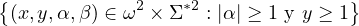 |
Es decir que λxyαβ![[P red(|α|)+ Pred(y)]](apunte83x.png) es la funcion
es la funcion
|
![[x = y]](apunte85x.png) es el predicado
es el predicado
|
y λxα![[Pred(x) = |α|]](apunte87x.png) es el predicado
es el predicado
|
Tambien λαβ![[α = β]](apunte89x.png) es el predicado
es el predicado
|
@@finpagina@@
Llamaremos numerales a los siguientes simbolos
| 0 1 2 3 4 5 6 7 8 9 |
Usaremos Num para denotar el conjunto de numerales. Notese que Num ∩ ω = ∅. Es decir, no debemos confundir los simbolos que usualmente denotan los primeros diez numeros enteros con los numeros que ellos denotan. De hecho en china o japon los primeros diez numeros enteros se denotan con otros simbolos. Similarmente las palabras pertenecientes a Num* denotan (notacion decimal) a los numeros de ω pero debemos tener en cuenta que Num*∩ ω = ∅. Cuando tratamos con palabras de Num*, debemos ser cuidadosos ya que muchas veces en nuestro discurso matematico (es decir las guias, el apunte, lo que escriben los profesores en el pizarron, etc) representamos dos objetos diferentes de la misma forma. Por ejemplo 45 puede estar denotando al numero entero cuarenta y cinco o tambien 45 puede estar denotando la palabra de longitud 2 cuyo primer simbolo es el numeral 4 y cuyo segundo simbolo es el numeral 5, es decir ella misma. Por dar otro ejemplo, el simbolo 1 en nuestro discurso algunas veces se denotara a si mismo y otras veces denotara al numero uno.
Es bien conocido que, en notacion decimal, las siguientes palabras del alfabeto Num, denotan, de menor a mayor, a los numeros de ω
| 0,1,2,3,4,5,6,7,8,9,10,11,12,13,14,15,... |
Por supuesto esta lista de palabras es infinita pero asumimos que el lector sabe como obtener la palabra siguiente a cada miembro de la lista (i.e. sumar 1 en notacion decimal), lo cual determina por completo la lista conociendo que la misma comienza con la palabra 0.
Cabe destacar que debido a la presencia del numeral 0 en la lista, la n-esima palabra representa o denota al numero n- 1 o, dicho de otra forma, el numero n ∈ ω es representado por la (n + 1)-esima palabra de la lista.
Un detalle de la representacion decimal de numeros de ω mediante palabras de Num* es que la misma no nos da una biyeccion entre Num* y ω ya que por ejemplo las palabras 00016 y 16 representan el mismo numero. Dicho de otra forma en la lista anterior no figuran todas las palabras de Num*, a saber estan omitidas todas las palabras que comienzan con el simbolo 0 y tienen longitud mayor que uno. A continuacion daremos una representacion de los numeros de ω mediante palabras, la cual no tendra este problema. El alfabeto que usaremos tendra todos los numerales menos el 0 y ademas tendra un simbolo para denotar al numero diez, a saber el simbolo d. Es decir
 = {1,2,3,4,5,6,7,8,9,d} = {1,2,3,4,5,6,7,8,9,d}
|
Representaremos a los numeros de ω con la siguiente lista infinita de palabras de

ε,1,2,3,4,5,6,7,8,9,d,
11,12,...,1d,21,22,...,2d,...,91,92,...,9d,d1,d2,...,dd,
111,112,...,11d,121,122,...,12d,...
El lector ya se habra dado cuenta de que el siguiente a una palabra α de la lista anterior se obtiene aplicando las siguientes clausulas
Notese que


Como puede notarse en estos primeros veinte y pico numeros solo dos (el 0 y el 20) se representan en forma distinta a la reprentacion decimal clasica. Es natural que ε denote al numero 0 y ademas notese que la palabra 1d (que en la lista representa el 20) puede leerse como ”diecidiez” (es decir la palabra que sigue a ”diecinueve”) que justamente es 20. Por supuesto con esta manera de pensar la palabra 2d deberiamos leerla como ”ventidiez” y si nos fijamos en la lista ella representa al numero treinta lo cual nuevamente es muy natural. Otro ejemplo: a 6d deberiamos leerla como ”sesentidiez” y es natural ya que en la lista representa al setenta. Tambien, la palabra 9d puede leerse noventidiez ya que representa en la lista al numero 100.
La lista anterior va representando los numeros de ω en forma muy natural pero
aunque nuestra intuicion nos diga que no, en principio podria pasar que una misma
palabra del alfabeto  ocurra dos veces en la lista y esto nos diria que una misma
palabra estaria representando a dos numeros distintos. Tambien, en principio podria
suceder que haya una palabra del alfabeto
ocurra dos veces en la lista y esto nos diria que una misma
palabra estaria representando a dos numeros distintos. Tambien, en principio podria
suceder que haya una palabra del alfabeto  la cual nunca figure en la lista. Mas
abajo probaremos que estas dos posibilidades no suceden, es decir muestran
que
la cual nunca figure en la lista. Mas
abajo probaremos que estas dos posibilidades no suceden, es decir muestran
que
 * aparece en la lista
* aparece en la lista
 * aparece mas de una ves
* aparece mas de una vesNotese que la propiedad (S) nos dice que la funcion
|
es sobreyectiva y la propiedad (I) nos garantiza que dicha funcion es inyectiva, por lo
cual entre las dos nos garantizan que dicha representacion establece una biyeccion
entre ω y  *.
*.
Por supuesto, la pregunta que inmediatamente surge es como calcular la inversa
de *. Llamemos # a la inversa de *. Notese que dada una palabra α ∈ *, el
numero #(α) es justamente el numero representado por la palabra α, o dicho
de otra forma #(α) es la posicion que ocupa α en la lista, contando desde
el 0 (es decir α es la (#(α) + 1)-esima palabra de la lista). Por ejemplo:
*, el
numero #(α) es justamente el numero representado por la palabra α, o dicho
de otra forma #(α) es la posicion que ocupa α en la lista, contando desde
el 0 (es decir α es la (#(α) + 1)-esima palabra de la lista). Por ejemplo:
| #(1) = 1 |
la primera ocurrencia del simbolo 1 se refiere al numeral uno, es decir denota una palabra y la segunda ocurrencia se esta refiriendo al numero uno, es decir denota un numero.
Dejamos al lector el ejercicio de ganar intuicion con ejemplos hasta que se convensa de que tal como en el caso de la notacion decimal, el numero #(α) se expresa como una suma de potencias de 10, con los coeficientes dados en funcion de los simbolos de α. Mas concretamente si α = s1s2...sk con k ≥ 1 y s1,s2,...,sk ∈, entonces
| #(α) = #(s1).10k-1 + #(s 2).10k-2 + ... + #(s k).100 |
No daremos aqui una prueba de este hecho ya que lo probaremos abajo para el caso general. Para ganar intuicion sobre el mismo el lector puede ver mas abajo la prueba de las propiedades (S) e (I), desde donde se ve con mas claridad como va aumentando la funcion # a medida que recorremos la lista de izquierda a derecha. Algunos ejemplos
Ahora que sabemos que las palabras de  representan los numeros como suma
de potencias de diez, en forma analoga a la notacion decimal clasica, podemos refozar
aun mas la analogia poniendo nombres adecuados que, tal como en el caso
clasico, nos permitan leer las palabras de describiendo su suma de
potencias asociada. Por ejemplo podriamos llamar ”decenta” al numero
100, por analogia a ”treinta”, ”cuarenta”,...,”noventa”. O sea una decenta
es diez veces diez. De esta forma la palabra d1 se leera ”decenta y uno” y
esto es natural ya que en la lista representa al 101. La palabra dd se leera
”decenta y diez” y esto describe a la perfeccion el numero que representa, i.e.
el 10.10 + 10 = 110. La palabra que sigue en la lista a dd es 111 la cual
representa al 111, es decir aqui como en los otros casos vistos en los cuales no
hay ocurrencias del simbolo d la palabra representa al mismo numero que
representa en la notacion decimal clasica. Por dar otro ejemplo, la palabra 59d3
se leera ”cinco mil novecientos decenta y tres” y representara al numero
6003.
representan los numeros como suma
de potencias de diez, en forma analoga a la notacion decimal clasica, podemos refozar
aun mas la analogia poniendo nombres adecuados que, tal como en el caso
clasico, nos permitan leer las palabras de describiendo su suma de
potencias asociada. Por ejemplo podriamos llamar ”decenta” al numero
100, por analogia a ”treinta”, ”cuarenta”,...,”noventa”. O sea una decenta
es diez veces diez. De esta forma la palabra d1 se leera ”decenta y uno” y
esto es natural ya que en la lista representa al 101. La palabra dd se leera
”decenta y diez” y esto describe a la perfeccion el numero que representa, i.e.
el 10.10 + 10 = 110. La palabra que sigue en la lista a dd es 111 la cual
representa al 111, es decir aqui como en los otros casos vistos en los cuales no
hay ocurrencias del simbolo d la palabra representa al mismo numero que
representa en la notacion decimal clasica. Por dar otro ejemplo, la palabra 59d3
se leera ”cinco mil novecientos decenta y tres” y representara al numero
6003.
Para seguir debemos ponerle nombre a ”diez veces cien”, es decir, ”decientos” (por analogia con ”novecientos = nueve veces cien”) denotara al numero 1000 = 10.100. De esta forma la palabra d51 se leera ”decientos cincuenta y uno” y esto es natural ya que pensando un rato se puede ver que ella representa al 1051. Tambien, la palabra ddd se leera ”decientos decenta y diez” y representara al numero 1110.
Dado que el siguiente a un elemento α de la lista es de la misma longitud que α o
tiene longitud igual a  + 1, podemos representar la lista anterior de la siguiente
manera:
+ 1, podemos representar la lista anterior de la siguiente
manera:
| B0;B1;B2;B3;B4;... |
donde cada Bn es, por definicion, la parte de la lista en la cual las palabras tienen longitud exactamente n. Por ejemplo:
Notese que hasta el momento nada nos asegura que no suceda que para algun n se de que Bn sea una lista infinita, lo cual ademas nos diria que los bloques Bn+1,Bn+2,... son todos vacios. Es decir podria pasar que la lista se estanque en una longitud n y nunca aparezca una palabra de longitud mayor que n. Esto por supuesto obligaria a que se repitan muchas veces palabras de dicha longitud n ya que hay una cantidad finita de las mismas (10n).
Por supuesto nuestra intuicion nos dice que en el bloque Bn estan listadas sin repeticion todas las palabras de * de longitud n, pero debemos justificar esto con argumentos solidos. Algunas propiedades basicas que se pueden probar facilmente son:
estas propiedades son consecuencias inmediatas de como se calcula el elemento siguiente a uno dado en la lista y son dejadas como ejercicio. Otra propiedad importante es la siguiente
Para probar (3) es muy util el siguiente resultado obvio
Lema 10. Sea σ ∈  y supongamos α ∈
y supongamos α ∈  * no es de la forma dn.
Entonces el siguiente a σα es σβ donde β es el siguiente a α
* no es de la forma dn.
Entonces el siguiente a σα es σβ donde β es el siguiente a α
Dejamos como ejercicio al lector hacer la prueba de (3) usando el lema anterior y las propiedades (1) y (2). Ahora es facil usando (3) probar inductivamente que
Pero claramente de (4) se desprenden en forma obvia las propiedades (S) y (I).
Sea Σ un alfabeto no vacio y supongamos ≤ es un orden total sobre Σ. Supongamos
que Σ = {a1,...,an}, con a1 < a2 < ... < an. Inspirados en la lista dada anteriormente
de las palabras de  *, podemos dar la siguiente lista de palabras de
Σ*
*, podemos dar la siguiente lista de palabras de
Σ*
ε,a1,a2,...,an,
a1a1,a1a2,...,a1an,a2a1,a2a2,...,a2an,...,ana1,ana2,...,anan,
a1a1a1,a1a1a2,...,a1a1an,a1a2a1,a1a2a2,...,a1a2an,...,a1ana1,a1ana2,a1anan,
a2a1a1,a2a1a2,...,a2a1an,a2a2a1,a2a2a2,...,a2a2an,...,a2ana1,a2ana2,a2anan,

ana1a1,ana1a2,...,ana1an,ana2a1,ana2a2,...,ana2an,...,anana1,anana2,ananan,
a1a1a1a1,a1a1a1a2,...
El objetivo es probar que la lista anterior enumera sin repeticiones todas las palabras de Σ*, i.e. produce naturalmente una biyeccion entre ω y Σ*. Pero antes debemos definir mas formalmente la lista. Para esto definamos s≤ : Σ*→ Σ* de la siguiente manera
Notese que la definicion de s≤ es correcta ya que una palabra de Σ* ya sea es de la forma (an)m, con m ≥ 0, o es de la forma αai(an)m, con α ∈ Σ*, 1 ≤ i < n y m ≥ 0; y estos dos casos posibles son mutuamente excluyentes.
Claramente se tiene entonces que la lista anterior puede ser escrita de la siguiente manera
| ε,s≤(ε),s≤(s≤(ε)),s≤(s≤(s≤(ε))),s≤(s≤(s≤(s≤(ε)))),... |
Con esta definicion formal de la lista, podemos probar de la misma forma en la que lo hicimos arriba que:
(dejamos al lector los detalles por tratarse de un argumento completamente similar).
Definamos *≤ : ω → Σ* recursivamente de la siguiente manera:
Es claro que entonces *≤(i) nos da el (i + 1)-esimo elemento de la lista, o lo que es lo mismo, el i-esimo elemento de la lista contando desde el 0. O sea que las propiedades (S) y (I) nos garantizan que la funcion *≤ es biyectiva. A continuacion describiremos su inversa. Primero un lema facil pero muy importante.
Lema 11. Sea Σ un alfabeto no vacio y supongamos ≤ es un orden total sobre Σ. Supongamos que Σ = {a1,...,an}, con a1 < a2 < ... < an. Entonces para cada α ∈ Σ*-{ε} hay unicos k ∈ ω y i0,i1,...,ik ∈{1,...,n} tales que
| α = aik...ai0 |
Notar que k del lema anterior es  - 1 y los numeros ik,...,i0 van dando el
numero de orden de cada simbolo de α yendo de izquierda a derecha. Por ejemplo si
Σ = {%,!,@} y ≤ es el orden total sobre Σ dado por % <! < @ (es decir que aqui
a1 = %, a2 =! y a3 = @) entonces para la palabra !%@%@ tenemos k = 4 y i4 = 2,
i3 = 1, i2 = 3, i1 = 1 y i0 = 3. Sin envargo si hubieramos tomado el orden dado por
@ < % <!, para la misma palabra hubieramos tenido i4 = 3, i3 = 2, i2 = 1, i1 = 2 y
i0 = 1.
- 1 y los numeros ik,...,i0 van dando el
numero de orden de cada simbolo de α yendo de izquierda a derecha. Por ejemplo si
Σ = {%,!,@} y ≤ es el orden total sobre Σ dado por % <! < @ (es decir que aqui
a1 = %, a2 =! y a3 = @) entonces para la palabra !%@%@ tenemos k = 4 y i4 = 2,
i3 = 1, i2 = 3, i1 = 1 y i0 = 3. Sin envargo si hubieramos tomado el orden dado por
@ < % <!, para la misma palabra hubieramos tenido i4 = 3, i3 = 2, i2 = 1, i1 = 2 y
i0 = 1.
Ahora podemos definir la funcion #≤ de la siguiente manera
|
Proof. Primero probaremos por induccion en x que
El caso x = 0 es trivial. Supongamos que #≤(*≤(x)) = x, veremos entonces que #≤(*≤(x + 1)) = x + 1. Sean k ≥ 0 y ik,...,i0 tales que *≤(x) = aik...ai0. Ya que #≤(*≤(x)) = x tenemos que x = iknk + ... + i0n0. Hay varios casos.
Caso i0 < n. Entonces *≤(x + 1) = s≤(*≤(x)) = aik...ai0+1 por lo cual
|
Caso ik = ik-1 = ... = i0 = n. Entonces *≤(x + 1) = s≤(*≤(x)) = (a1)k+2 por lo cual
|
Caso i0 = i1 = ... = ih = n, ih+1 ⁄= n, para algun 0 ≤ h < k. Entonces *≤(x + 1) = s≤(*≤(x)) = aik...aih+2aih+1+1(a1)h por lo cual
|
De esta forma hemos probado (a).
Por definicion la inversa de *≤ es la funcion con dominio Σ* que a una palabra α le asocia el unico x ∈ ω tal que *≤(x) = α. Es decir debemos probar que
Pero (b) es una concecuencia inmediata de (a). __
Cabe destacar que dada una palabra α, el numero #≤(α) nos dice en que posicion se hubica α en la lista, es decir α es la (#≤(α) + 1)-esima palabra de la lista.
De los desarrollos hechos se desprende el interesante resultado. Dejamos al lector la prueba como ejercicio.
Lema 13. Sea n ≥ 1 fijo. Entonces cada x ≥ 1 se escribe en forma unica de la siguiente manera:
| x = iknk + i k-1nk-1 + ... + i 0n0, |
con k ≥ 0 y 1 ≤ ik,ik-1,...,i0 ≤ n.
Como hemos visto las biyecciones dadas producen una ”identificacion” entre numeros de ω y palabras del alfabeto Σ. Es decir, en algun sentido identificamos palabras y numeros ya que se corresponden biunivocamente. Supongamos que α es una palabra de Σ*-{ε} y queremos ”verla como un numero”. Entonces en ves de ver sus simbolos vemos los ordenes de aparicion en Σ de los mismos y miramos la suma de potencias asociada.
Supongamos ahora que x es un numero de ω -{0} y ademas supongamos que somos super inteligentes y que cuando vemos a x vemos la secuencia unica de numeros ik,ik-1,...,i0 que nos permite expresarlo como suma de potencias segun el lema anterior. Entonces si queremos ver a x como una palabra simplemente miramos la secuencia ik,ik-1,...,i0 como palabra, reemplazando cada ij por el simbolo ij-esimo de Σ.
Es un ejercicio (dejado al lector) probar que cualquiera sea α ∈ Σ*, se tiene que
Lo mismo sucede con la funcion *≤ la cual fue directamente definida en forma recursiva por las ecuaciones
Podemos extender el orden de Σ a Σ* de la siguiente manera
Es decir α ≤ β sii α = β o α ocurre antes que β en la lista. Dejamos como ejercicio para el lector probar que ≤ es un orden total sobre Σ*.
Deberia ser intuitivamente claro que el orden recien definido sobre Σ* posee las mismas propiedades matematicas que el orden usual de ω. Esto se entendera en forma mas profunda cuando veamos el concepto de isomorfismo de posets en los capitulos de logica. Veamos un ejemplo:
@@finpagina@@
Usaremos ωN para denotar el conjunto de todas las infinituplas con coordenadas en ω. Es decir
ωN =  . .
|
Definamos el siguiente subconjunto de ωN
ω![[N]](apunte124x.png) = . = .
|
Notese que ωN≠ω![[N ]](apunte126x.png) , por ejemplo las infinituplas
, por ejemplo las infinituplas

![[N]](apunte128x.png) . Notese que (s1,s2,...) ∈ ω
. Notese que (s1,s2,...) ∈ ω![[N]](apunte129x.png) si y solo si solo una cantidad
finita de coordenadas de (s1,s2,...) son no nulas (i.e. {i : si≠0} es finito).
si y solo si solo una cantidad
finita de coordenadas de (s1,s2,...) son no nulas (i.e. {i : si≠0} es finito).
Definamos
|
Ntese que pr(1) = 2, pr(2) = 3, pr(3) = 5, etc.
Es bien conocido que todo numero natural es expresable como producto de primos. Por ejemplo si tomamos x = 57596 tenemos que x = 2.2.7.11.11.17. Tambien es un hecho conocido que dicha representacion en producto de primos es unica, si escribimos a los factores primos de menor a mayor, tal como lo hicimos recien con el numero 57596. El Teorema Fundamental de la Aritmetica justamente acevera esta propiedad de factorisacion unica de todo numero natural. Trataremos de escribir este teorema de una forma un poco mas ”cheta”.
Ya que 57596 = 2.2.7.11.11.17, podemos escribir
| 57596 = pr(1)2.pr(4)1.pr(5)2.pr(7)1 |
Notese que ahora cada primo que interviene en la factorizacion de 57596 figura con un exponente que nos dice cuantas veces ocurre en dicha factorizacion. Hay muchos primos que no ocurren en esta factorizacion, es decir ocurren 0 veces en la misma. Pero podemos escribir
| 57596 = pr(1)2.pr(2)0.pr(3)0.pr(4)1.pr(5)2.pr(6)0.pr(7)1.pr(8)0.pr(9)0.pr(10)0.... |
y la igualdad no se altera ya que agregamos factores iguales a 1 (una cantidad infinita!). De esta manera cada primo interviene en la factorizacion. Ademas si vemos la infinitupla de exponentes de dicha factorizacion, es decir
| (2,0,0,1,2,0,1,0,0,0,...) |
obtenemos un elemento de ω[N].
Por supuesto esto lo podemos hacer con cualquier numero natural y siempre la infinitupla de exponentes sera un elemento de ω[N]. Ademas es facil notar que estas representaciones ”chetas” tambien resultan unicas.
Para probar nuestra version del Teorema Fundamental de la Aritmetica necesitaremos el siguiente lema el cual aceptaremos sin demostracion.
Teorema 16. Para cada x ∈ N, hay una unica infinitupla (s1,s2,...) ∈ ω![[N ]](apunte130x.png) tal
que
tal
que
| x = pr(i)si |
(Tiene sentido escribir pr(i)si, ya que en esta productoria solo una cantidad finita de factores son no iguales a 1.)
Proof. Primero probaremos la existencia por induccion en x. Claramente 1 =
 pr(i)0, con lo cual tomando (s1,s2,...) = (0,0,0,...) el caso x = 1 esta
probado. Fijemos ahora un x > 1 y supongamos la existencia vale para cada
y menor que x. Veremos que entonces vale para x. Si x es primo, entonces
x = pr(i0) para algun i0 por lo cual tenemos que x =
pr(i)0, con lo cual tomando (s1,s2,...) = (0,0,0,...) el caso x = 1 esta
probado. Fijemos ahora un x > 1 y supongamos la existencia vale para cada
y menor que x. Veremos que entonces vale para x. Si x es primo, entonces
x = pr(i0) para algun i0 por lo cual tenemos que x =  pr(i)si, tomando
si = 0 si i≠i0 y si0 = 1. Si x no es primo, entonces x = y1.y2, con y1,y2 < x.
Por hipotesis inductiva tenemos que hay (s1,s2,...),(t1,t2,...) ∈ ω
pr(i)si, tomando
si = 0 si i≠i0 y si0 = 1. Si x no es primo, entonces x = y1.y2, con y1,y2 < x.
Por hipotesis inductiva tenemos que hay (s1,s2,...),(t1,t2,...) ∈ ω![[N]](apunte135x.png) tales que
y1 =
tales que
y1 =  pr(i)si y y2 =
pr(i)si y y2 =  pr(i)ti. Tenemos entonces que x =
pr(i)ti. Tenemos entonces que x =  pr(i)si+ti lo
cual concluye la prueba de la existencia.
pr(i)si+ti lo
cual concluye la prueba de la existencia.
Veamos ahora la unicidad. Suponganos que las infinituplas (s1,s2,...),(t1,t2,...) ∈ ω![[N ]](apunte139x.png) son tales que
son tales que
 pr(i)si
= pr(i)si
=  pr(i)ti pr(i)ti
|
y ademas si≠ti para algun i. Si si > ti entonces dividiendo ambos miembros por pr(i)ti obtenemos que pr(i) divide a un producto de primos todos distintos de el, lo cual es absurdo por el lema anterior. Analogamente llegamos a un absurdo si suponemos que ti > si, lo cual nos dice que vale la unicidad. __
Como podra notarse la existencia en el teorema anterior es facil e intuitivamente clara de probar. En realidad la potencia del Teorema Fundamental de la Aritmtica radica en el hecho de que dicha factorizacion es unica.
A continuacion un poco de notacion. Dada una infinitupla (s1,s2,...) ∈ ω![[N]](apunte142x.png) usaremos
usaremos  para denotar al numero
para denotar al numero  pr(i)si. Dado x ∈ N, usaremos (x)
para denotar a la unica infinitupla (s1,s2,...) ∈ ω
pr(i)si. Dado x ∈ N, usaremos (x)
para denotar a la unica infinitupla (s1,s2,...) ∈ ω![[N]](apunte145x.png) tal que
tal que
x =  = =  pr(i)si pr(i)si
|
Ademas para i ∈ N, usaremos (x)i para denotar a si de dicha unica infinitupla. Es decir que
Claramente entonces
![[N ]](apunte149x.png) , se tiene que
, se tiene que
( )i = si, para i ∈ N )i = si, para i ∈ N
|
Es decir que
( ) = (s1,s2,...) ) = (s1,s2,...)
|
(Justifique con palabras las propiedades (3) y (4)). Tenemos entonces el siguiente resultado fundamental
|
son biyecciones una inversa de la otra.
Proof. Llamemos f a la funcion de la izquierda y g a la de la derecha. Notese que
el Lema 2 nos dice que basta con probar que f ∘g = Idω![[N ]](apunte155x.png) y g ∘f = IdN. Pero
(3) justamente nos dice que g ∘ f = IdN y (4) nos dice que f ∘ g = Idω
y g ∘f = IdN. Pero
(3) justamente nos dice que g ∘ f = IdN y (4) nos dice que f ∘ g = Idω![[N]](apunte156x.png) . __
. __
Tal como se hace en la escuela primaria, el siguiente lema nos permite calcular (x)i.
Proof. Ejercicio (aplique el Lema 15). __
Definamos la funcion Lt : N → ω de la siguiente manera:
| Lt(x) = 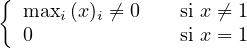 |
Se tienen las siguientes propiedades basicas
Un concepto importante en ciencias de la computacion es el de procedimiento o metodo para realizar alguna tarea determinada. Nos interesan los procedimientos que estan definidos en forma precisa e inambigua, es decir aquellos en los cuales en cada paso a seguir, la tarea a realizar esta objetivamente descripta. Ademas siempre supondremos que el interprete o ejecutante es una persona.
Una caracteristica de los procedimientos que surgen en la tarea cientifica es que hay un conjunto de datos de entrada, es decir, el conjunto de objetos a partir de los cuales puede comenzar a realizarse el procedimiento. Tambien en los procedimientos que surgen en la tarea cientifica tenemos un conjunto de datos de salida, es decir el conjunto de todos los datos que el procedimiento dara como salida en alguna de las posibles ejecuciones al variar los datos de entrada posibles.
Una propiedad importante de los procedimientos es la propiedad de detencion. Si ℙ es un procedimiento y d es un dato de entrada de ℙ, entonces diremos que ℙ se detiene partiendo de d si en algun momento de la ejecucion de ℙ partiendo de d, el ejecutante concluye una tarea encomendada por ℙ y no hay una nueva tarea requerida por ℙ al ejecutante. Puede pasar que para ciertos datos de entrada el procedimiento no se detenga nunca, es decir puede suceder que a medida que se vayan realizando las instrucciones o tareas, siempre el procedimiento direccione a realizar otra tarea especifica y asi sucesivamente.
Cabe destacar que en la gerga computacional a veces se dice ”el procedimiento termina” y en realidad a lo que nos referimos es a que termina de realizar la tarea especifica para la cual fue diseado e inmediatamente se detiene ya que no encomienda mas tareas para hacer. Es decir, en algun sentido terminar es mas fuerte que detenerse ya que el concepto de detencion no presupone la terminacion de ninguna tarea especifica, simplemente se refiere a que el procedimiento llega a un punto en el que no direcciona a ninguna tarea al ejecutante. De todas maneras muchas veces se usara el verbo terminar como sinonimo de detenerse.
Los procedimientos tambien deben ser repetibles, en el sentido de que si realizamos un procedimiento dos veces con el mismo dato de entrada, entonces ambas ejecuciones deben ser identicas, es decir se ralizaran las mismas tareas y en el mismo orden.
Otro aspecto muy importante a considerar es que un procedimiento puede tener pasos a seguir los cuales sean realizables solo en un sentido puramente teorico. Por ejemplo, un procedimiento puede tener una instruccion como la que se muestra a continuacion:
(a, b son datos calculados previamente). Como puede notarse mas alla de este aspecto teorico de la instruccion, su descripcion es clara y objetiva, pero en principio no es claro que se pueda ejecutar dicha instruccion en un sentido efectivo a los fines de seguir realizando las siguientes instrucciones. Un procedimiento sera llamado efectivo cuando cada paso del mismo sea simple y facil de realizar en forma efectiva por cualquier persona.
En general los procedimientos efectivos que nos interesan son en los que el interprete o ejecutante trabaja solo con papel y lapiz. Ademas el conjunto de datos de entrada siempre estara determinado a priori como parte de la descripcion del procedimiento. Cabe destacar que puede ser muy dificil o imposible, en general, conocer con precision el conjunto de datos de salida de un procedimiento (esto lo justificaremos mas adelante).
Tambien supondremos que los elementos de ω que intervienen en los datos de entrada y de salida estaran representados por palabras de Num usando la notacion decimal.
Quisas el procedimiento efectivo mas famoso de la matematica es aquel que se ensea en los colegios para sumar dos numeros naturales expresados en notacion decimal. Notar que el conjunto de datos de entrada de dicho procedimiento es ω2 y el conjunto de datos de salida es el conjunto formado por todas las sumas posibles de pares de elementos de ω, es decir ω. Por supuesto este procedimiento solo usa lapiz, papel y pasos extremadamente simples a seguir en cada momento de la computacion, es decir, en algun sentido, no es necesario ”entender que es lo que se esta haciendo” para llegar al final y obtener la palabra que representa en notacion decimal a la suma de los numeros iniciales. Dejamos al lector repasar este procedimiento asi como el que calcula dado un numero x no nulo de ω, al numero x - 1, los cuales nos haran falta mas adelante en los ejemplos.
Una funcion Σ-mixta f : Df ⊆ ωn × Σ*m → ω sera llamada Σ-efectivamente computable si hay un procedimiento efectivo ℙ tal que
 ,
, ) ∈ Df, entonces ℙ se detiene partiendo de (
) ∈ Df, entonces ℙ se detiene partiendo de ( ,
, ), dando como
dato de salida f(
), dando como
dato de salida f( ,
, ).
).
 ,
, ) ∈ (ωn × Σ*m) - Df, entonces ℙ no se detiene partiendo desde
(
) ∈ (ωn × Σ*m) - Df, entonces ℙ no se detiene partiendo desde
( ,
, )
)Analogamente una funcion Σ-mixta f : Df ⊆ ωn × Σ*m → Σ* sera llamada Σ-efectivamente computable si hay un procedimiento efectivo ℙ tal que
 ,
, ) ∈ Df, entonces ℙ se detiene partiendo de (
) ∈ Df, entonces ℙ se detiene partiendo de ( ,
, ), dando como
dato de salida f(
), dando como
dato de salida f( ,
, ).
).
 ,
, ) ∈ (ωn × Σ*m) - Df, entonces ℙ no se detiene partiendo desde
(
) ∈ (ωn × Σ*m) - Df, entonces ℙ no se detiene partiendo desde
( ,
, )
)En ambos casos diremos que ℙ computa a la funcion f.
Notese que esta definicion para el caso f = ∅ tiene a priori cierta ambiguedad ya que cualesquiera sean n,m ∈ ω y O ∈{ω,Σ*} tenemos que ∅ : ∅⊆ ωn × Σ*m → O ya que D∅ = ∅ y I∅ = ∅. De todas maneras, cualesquiera sean los n,m y O elejidos, siempre hay un procedimiento efectivo que computa a f = ∅, i.e. un procedimiento que nunca se detiene, cualesquiera sea el dato de entrada de ωn × Σ*m. Es decir que la funcion ∅ es Σ-efectivamente computable cualesquiera sea el alfabeto Σ. Cabe destacar que para el caso de una funcion f≠∅, nuestra definicion es inambigua ya que hay unicos n,m ∈ ω y O ∈{ω,Σ*} tales que f : Df ⊆ ωn × Σ*m → O.
Veamos algunos ejemplos:
![[xy]](apunte181x.png) son Σ-efectivamente
computables via los procedimientos clasicos enseados en la escuela
primaria.
son Σ-efectivamente
computables via los procedimientos clasicos enseados en la escuela
primaria.
Dado como dato de entrada un elemento x ∈ ω, realizar lo siguiente:
Etapa 1
Si x = 0, entonces ir a Etapa 3, en caso contrario ir a Etapa 2.
Etapa 2
Correr ℙ-1 con dato de entrada x obteniendo y como dato de salida. Dar y como dato de salida y terminar.
Etapa 3
Si x = 0, entonces ir a Etapa 1.
Como puede notarse el procedimiento anterior es efectivo ya que debemos entender que en la Etapa 2, los sucesivos pasos efectuados al correr ℙ-1 son todos simples y efectivamente realizables ya que ℙ-1 es efectivo. Por supuesto si uno quisiera ser mas prolijo, deberia reemplazar la Etapa 2 por las distintas instrucciones de ℙ-1, referidas a x.
 ] es Σ-efectivamente computable. Como en los
lenguajes de programacion, usaremos variables y asignaciones para
disear el procedimiento. Ademas llamemos ℙ+1 a el procedimiento de la
escuela primaria que dado un numero no nulo x, expresado en notacion
decimal, calcula el numero x + 1, en notacion decimal. Sea ℙ el siguiente
procedimiento.
] es Σ-efectivamente computable. Como en los
lenguajes de programacion, usaremos variables y asignaciones para
disear el procedimiento. Ademas llamemos ℙ+1 a el procedimiento de la
escuela primaria que dado un numero no nulo x, expresado en notacion
decimal, calcula el numero x + 1, en notacion decimal. Sea ℙ el siguiente
procedimiento.
Dado como dato de entrada un elemento α ∈ Σ*, realizar lo siguiente:
Etapa 1: Hacer las siguientes asignaciones

Etapa 2: Si A no es ε, ir a Etapa 3. En caso contrario terminar y dar como salida B.
Etapa 3: Correr ℙ+1 con dato de entrada igual al contenido de B, obteniendo y como salida. Hacer la asignacion

Dejamos como ejercicio convenserse que el uso de asignaciones puede realizarse
usando solo lapiz y papel. Imagine como lo haria en este ejemplo y
corrobore que dicho procedimiento es efectivo y ademas computa a
λα[ ]
]
Etapa 1: Dado el dato de entrada α ∈ Σ*, hacer las siguientes asignaciones

Etapa 2: Si A comiensa con ▴, entonces hacer las siguientes asignaciones
Etapa 3: Si A comiensa con %, entonces hacer las siguientes asignaciones
Etapa 4: Dar como salida F

Dejamos como ejercico para el lector disear procedimientos efectivos que computen las funciones:
(Utilice en el diseo de los respectivos procedimientos a los procedimientos que
computan las funciones λxy![[x + y]](apunte191x.png) , λxy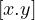 y λxy)
, λxy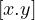 y λxy)
Nota Importante: en lo que sigue muchas veces daremos procedimientos que son efectivos en terminos de otros que ya se han dado, es decir daremos un procedimiento que en principio no es claro que sea efectivo pero el cual se volveria efectivo si reemplazaramos ciertas instrucciones por la manera efectiva de simularlas. Para hacer mas dinamico el discurso no distinguiremos entre este tipo de procedimientos (efectivisables) y los efectivos propiamente dichos.
Hay muchos procesos constructivos que nos sirven para definir o construir una funcion en terminos de otras funciones dadas. Un ejemplo de esto es la composicion de funciones, la cual dadas dos funciones f,g nos permite construir su composicion, a saber f ∘ g. Otro ejemplo es el contructor de predicados que dados dos predicados Σ-mixtos P : S ⊆ ωn × Σ*m →{0,1} y Q : S ⊆ ωn × Σ*m →{0,1}, con el mismo dominio, nos define el predicado
|
Otro constructor muy importante que utilizaremos mucho es aquel que a partir de funciones fi : Dfi → O, i = 1,...,k, tales que Dfi ∩ Dfj = ∅ para i≠j, nos da la nueva funcion f1 ∪ ... ∪ fk, la cual cumple
|
Lema 20. Si P : S ⊆ ωn × Σ*m → ω y Q : S ⊆ ωn × Σ*m → ω son predicados Σ-efectivamente computables, entonces (P ∨ Q), (P ∧ Q) y P lo son tambien.
Dadas funciones Σ-mixtas f,f1,...,fr, con r ≥ 1, diremos que la funcion f ∘ [f1,...,fr] es obtenida por composicion a partir de las funciones f,f1,...,fr. Para probar que la composicion preserva la computabilidad efectiva necesitaremos el siguiente lema.
Lema 21. Supongamos que f,f1,...,fr son funciones Σ-mixtas, con r ≥ 1. Supongamos ademas que f ∘ [f1,...,fr]≠∅. Entonces hay n,m,k,l ∈ ω y s ∈{#,*} tales que
Mas aun, en tal caso la funcion f ∘ [f1,...,fn+m] es de tipo (k,l,s) y:
![{ }
n⋂+m
Df ∘[f1,...,fn+m ] = (⃗x,⃗α) ∈ Dfi : (f1(⃗x,⃗α ),...,fn+m(⃗x,⃗α)) ∈ Df
i=1
f ∘ [f1,...,fn+m ](⃗x,⃗α) = f(f1(⃗x,⃗α),...,fn+m(⃗x,⃗α)).](apunte198x.png)
Proof. Notese que f≠∅ y [f1,...,fr]≠∅ (por que?). Ya que f≠∅ tenemos que hay unicos n,m ∈ ω y s ∈{#,*} tales que f es de tipo (n,m,s). Ya que f ∘ [f1,...,fr]≠∅ y I[f1,...,fr] ⊆ If1 × ... × Ifr, tenemos que
Ya que [f1,...,fr]≠∅ tenemos que D[f1,...,fr] = ⋂ i=1rDfi≠∅, por lo cual los conjuntos Df1,...,Dfn+m deberan ser todos de un mismo tipo, digamos de tipo (k,l). Es decir que fi es de tipo (k,l,#), para cada i = 1,...,n y fi es de tipo (k,l,*), para cada i = n + 1,...,n + m.
Las ultimas observaciones del lema son directas de las definiciones de [f1,...,fn+m] y de composicion de funciones __
Ahora si podemos probar facilmente que se preserva la computabilidad efectiva cuando componemos
Lema 22. Si f,f1,...,fr, con r ≥ 1, son Σ-efectivamente computables, entonces f ∘ [f1,...,fr] lo es.
Proof. Si f ∘ [f1,...,fr] = ∅, entonces claramente es Σ-efectivamente computable. Supongamos entonces que f ∘ [f1,...,fr]≠∅. Por el lema anterior hay n,m,k,l ∈ ω y s ∈{#,*} tales que
Sean ℙ, ℙ1,..., ℙn+m procedimientos efectivos los cuales computen las funciones f,f1,...,fn+m, respectivamente. Usando estos procedimientos es facil definir un procedimiento efectivo el cual compute a f ∘ [f1,...,fn+m]. __
Recordemos que si fi : Dfi → O, i = 1,...,k, son funciones tales que Dfi ∩ Dfj = ∅ para i≠j, entonces f1 ∪ ... ∪ fk es la funcion
|
Lema 23. Sean n,m ∈ ω y O ∈{ω,Σ*}. Supongamos fi : Dfi ⊆ ωn × Σ*m → O, i = 1,...,k, son funciones Σ-efectivamente computables tales que Dfi∩Dfj = ∅ para i≠j. Entonces f1 ∪ ... ∪ fk es Σ-efectivamente computable.
Proof. Haremos el caso O = Σ* y k = 2. Sean ℙ1 y ℙ2 procedimientos efectivos que computen a f1 y f2, respectivamente. Sea ℙ el procedimiento efectivo siguiente:
- Conjunto de datos de entrada de ℙ igual a ωn × Σ*m
- Conjunto de datos de salida de ℙ contenido en Σ*
- Funcionamiento:
Etapa 1
Hacer T = 1
Etapa 2
Correr el procedimiento ℙ1 una cantidad T de pasos. En caso de que termine guardar la salida en la variable X e ir a Etapa 5. Si no termina ir a Etapa 3.
Etapa 3
Correr el procedimiento ℙ2 una cantidad T de pasos. En caso de que termine guardar la salida en la variable X e ir a Etapa 6. Si no termina ir a Etapa 4.
Etapa 4
Hacer T = T + 1 e ir a Etapa 2
Etapa 5
Dar como salida el contenido de X y terminar.
Dejamos al lector corroborar que el procedimiento ℙ computa a la funcion f1 ∪ f2. __
Un conjunto S ⊆ ωn × Σ*m sera llamado Σ-efectivamente computable cuando la funcion χSωn×Σ*m sea Σ-efectivamente computable. Notese que S es Σ-efectivamente computable sii hay un procedimiento efectivo ℙ, el cual computa χSωn×Σ*m , es decir:
 ,
, ) ∈ ωn × Σ*m, ℙ da como salida al numero 1 si (
) ∈ ωn × Σ*m, ℙ da como salida al numero 1 si ( ,
, ) ∈ S y al
numero 0 si (
) ∈ S y al
numero 0 si ( ,
, )
) S.
S.Si ℙ es un procedimiento efectivo el cual computa a χSωn×Σ*m , diremos que ℙ decide la pertenecia a S, con respecto al conjunto ωn × Σ*m.
Notese que esta definicion para el caso S = ∅ tiene a priori cierta ambiguedad ya que cualesquiera sean n,m ∈ ω tenemos que ∅⊆ ωn × Σ*m. De todas maneras, cualesquiera sean los n,m elejidos, siempre hay un procedimiento efectivo que computa a χ∅ωn×Σ*m , i.e. un procedimiento que siempre da como salida 0, cualesquiera sea el dato de entrada de ωn × Σ*m. Es decir que el conjunto ∅ es Σ-efectivamente computable cualesquiera sea el alfabeto Σ. Cabe destacar que para el caso de un conjunto S≠∅, nuestra definicion es inambigua ya que hay unicos n,m ∈ ω tales que S ⊆ ωn × Σ*m.
Dejamos al lector la facil prueba del siguiente resultado.
Lema 24. Sean S1,S2 ⊆ ωn × Σ*m conjuntos Σ-efectivamente computables. Entonces S1 ∪S2,S1 ∩S2 y (ωn × Σ*m) -S1 son Σ-efectivamente computables.
El siguiente lema caracteriza cuando un conjunto rectangular es Σ-efectivamente computable
Lema 25. Supongamos S1,...,Sn ⊆ ω, L1,...,Lm ⊆ Σ* son conjuntos no vacios. Entonces S1 × ... × Sn × L1 × ... × Lm es Σ-efectivamente computable sii S1,...,Sn,L1,...,Lm son Σ-efectivamente computables
Proof. Notese que si n = m = 0, entonces S1 × ... × Sn × L1 × ... × Lm = {♢} el cual es Σ-efectivamente computable por lo cual el lema se cumple. Vemos entonces el caso n + m ≥ 1. Para hacer mas lejible la prueba haremos el caso n = m = 1. La prueba general es completamente analoga.
(⇒) Ya que S1 y L1 son conjuntos no vacios, hay x0 ∈ S1 y α0 ∈ L1. Ya que S1 ×L1 es Σ-efectivamente computable, tenemos que χS1×L1ω×Σ* es Σ-efectivamente computable. Notese que:
| x ∈ S1 sii (x,α0) ∈ S1 × L1 sii χS1×L1ω×Σ* (x,α0) = 1 |
Por lo tanto, es facil usando un procedimiento efectivo que compute a χS1×L1ω×Σ* disear un procedimiento efectivo que compute a χS1ω. En forma similar se prueba que L1 es Σ-efectivamente computable.
(⇐) Es facil, usando procedimientos efectivos que computen a χS1ω y χL1Σ* , armar un procedimiento efectivo que compute a χS1×L1ω×Σ* . __
Un conjunto S ⊆ ωn × Σ*m sera llamado Σ-efectivamente enumerable cuando sea vacio o haya una funcion F : ω → ωn × Σ*m tal que IF = S y F(i) sea Σ-efectivamente computable, para cada i ∈{1,...,n + m}. Notese que para el caso n = m = 0, la condicion de que F(i) sea Σ-efectivamente computable, para cada i ∈{1,...,n + m} se cumple vacuamente y por lo tanto la definicion anterior nos dice que un conjunto S ⊆ ω0 × Σ*0 = {♢} sera Σ-efectivamente enumerable sii es vacio o hay una funcion Σ-efectivamente computable F : ω →{♢}, tal que IF = S. Por supuesto, esto nos dice que ∅ y {♢} son Σ-efectivamente enumerables.
El siguiente resultado nos permite entender mejor la idea subyacente a esta definicion.
Lema 26. Un conjunto no vacio S ⊆ ωn × Σ*m es Σ-efectivamente enumerable sii hay un procedimiento efectivo ℙ tal que
 ,
, ) ∈ S, hay un x ∈ ω tal que ℙ da como salida a (
) ∈ S, hay un x ∈ ω tal que ℙ da como salida a ( ,
, ) cuando lo
corremos con x como dato de entrada)
) cuando lo
corremos con x como dato de entrada)
Proof. El caso n = m = 0 es facil y es dejado al lector. Supongamos entonces que n + m ≥ 1.
(⇒) Supongamos que S ⊆ ωn × Σ*m es Σ-efectivamente enumerable. Ya que S es no vacio, por definicion hay una funcion F : ω → ωn × Σ*m tal que IF = S y cada F(i) es Σ-efectivamente computable. Para cada i ∈{1,...,n+m} sea ℙi un procedimiento efectivo que compute a F(i). Notar que cada ℙi tiene a ω como conjunto de datos de entrada y siempre termina. Sea ℙ el siguiente procedimiento efectivo, con conjunto de datos de entrada igual a ω y conjunto de datos de salida contenido en ωn × Σ*m.
Etapa 1: Correr ℙ1 con dato de entrada x y alojar el dato de salida en la variable X1
Etapa 2: Correr ℙ2 con dato de entrada x y alojar el dato de salida en la variable X2

Etapa n: Correr ℙn con dato de entrada x y alojar el dato de salida en la variable Xn
Etapa n + 1: Correr ℙn+1 con dato de entrada x y alojar el dato de salida en la variable A1
Etapa n + 2: Correr ℙn+2 con dato de entrada x y alojar el dato de salida en la variable A2

Etapa n + m: Correr ℙn+m con dato de entrada x y alojar el dato de salida en la variable Am
Etapa n + m + 1: Detenerse y dar (X1,...,Xn,A1,...,Am) como dato de salida
Dejamos al lector la verificacion de que el procedimiento ℙ es efectivo y cumple las propiedades (1), (2) y (3).
(⇐) Supongamos ℙ es un procedimiento efectivo el cual cumple las propiedades (1), (2) y (3). Definamos F : ω → ωn × Σ*m, de la siguiente manera:
| F(x) = dato de salida de ℙ cuando lo corremos desde x |
Notar que para cada i ∈ {1,...,n + m} la funcion F(i) es Σ-efectivamente computable ya que el siguiente procedimiento efectivo la computa:
Etapa 1: Correr ℙ desde x y guardar la salida en la variable V
Etapa 2: Dar como salida la coordenada i-esima de V __
Cuando un procedimiento ℙ cumpla (1), (2) y (3) del lema anterior, diremos que ℙ enumera a S. O sea que S es Σ-efectivamente enumerable sii es vacio o hay un procedimiento efectivo el cual enumera a S.
Dicho de otra forma un conjunto no vacio S es Σ-efectivamente enumerable sii hay un procedimiento efectivo ℙ el cual tiene conjunto de datos de entrada ω y ademas para los sucesivos datos de entrada 0,1,2,3,..., el procedimiento ℙ produce respectivamente los datos de salida e0,e1,e2,e3,... de manera que S = {e0,e1,e2,...}. Cabe destacar aqui que puede suceder que ei = ej, para ciertos i,j, con i≠j.
Algunos ejemplos:
Etapa 1
Si x = 0, dar como salida el par (0,0) y terminar. Si x≠0, calcular x1 = (x)1 y x2 = (x)2.
Etapa 2
Dar como dato de salida el par (x1,x2) y terminar
Como puede notarse el procedimiento es efectivo y ademas el conjunto de datos de salida es ω × ω ya que si tomamos un par cualquiera (a,b) ∈ ω × ω, el procedimiento lo dara como dato de salida para la entrada x = 2a3b.
Etapa 1
Si x = 0, dar como salida (0,0,ε,ε,ε) y terminar. Si x≠0, calcular
x1 = (x)1
x2 = (x)2
α1 = *≤((x)3)
α2 = *≤((x)4)
α3 = *≤((x)5)
Etapa 2
Dar como dato de salida la 5-upla (x1,x2,α1,α2,α3).
Lema 27. Sean S1,S2 ⊆ ωn × Σ*m conjuntos Σ-efectivamente enumerables. Entonces S1 ∪ S2 y S1 ∩ S2 son Σ-efectivamente enumerables.
Proof. El caso en el que alguno de los conjuntos es vacio es trivial. Supongamos que ambos conjuntos son no vacios y sean ℙ1 y ℙ2 procedimientos que enumeran a S1 y S2. El siguiente procedimiento enumera al conjunto S1 ∪ S2:
Veamos ahora que S1 ∩ S2 es Σ-efectivamente enumerable. Si S1 ∩ S2 = ∅ entonces no hay nada que probar. Supongamos entonces que S1 ∩ S2 es no vacio. Sea e0 un elemento fijo de S1 ∩ S2. Sea ℙ un procedimiento efectivo el cual enumere a ω × ω (ver el ejemplo de mas arriba). Un procedimiento que enumera a S1 ∩ S2 es el siguiente
Etapa 1
Realizar ℙ con dato de entrada x, para obtener un par (x1,x2) ∈ ω × ω.
Etapa 2
Realizar ℙ1 con dato de entrada x1 para obtener un elemento e1 ∈ S1
Etapa 3
Realizar ℙ2 con dato de entrada x2 para obtener un elemento e2 ∈ S2
Etapa 4
Si e1 = e2, entonces dar como dato de salida e1. En caso contrario dar como dato de salida e0.
Dejamos al lector la prueba de que este procedimiento enumera a S1 ∩ S2. __
Dejamos al lector la prueba del siguiente resultado.
Lema 28. Supongamos S1,...,Sn ⊆ ω, L1,...,Lm ⊆ Σ* son conjuntos no vacios. Entonces S1 × ... × Sn × L1 × ... × Lm es Σ-efectivamente enumerable sii S1,...,Sn,L1,...,Lm son Σ-efectivamente enumerables
@@finpagina@@
Proof. Supongamos S≠∅. Sea ( ,γ) ∈ S, fijo. Sea ℙ un procedimiento efectivo
que compute a χSωn×Σ*m
. Ya vimos en el ejemplo anterior que ω2 × Σ*3 es
Σ-efectivamente enumerable. En forma similar se puede ver que ωn×Σ*m lo es.
Sea ℙ1 un procedimiento efectivo que enumere a ωn×Σ*m. Entonces el siguiente
procedimiento enumera a S:
,γ) ∈ S, fijo. Sea ℙ un procedimiento efectivo
que compute a χSωn×Σ*m
. Ya vimos en el ejemplo anterior que ω2 × Σ*3 es
Σ-efectivamente enumerable. En forma similar se puede ver que ωn×Σ*m lo es.
Sea ℙ1 un procedimiento efectivo que enumere a ωn×Σ*m. Entonces el siguiente
procedimiento enumera a S:
Etapa 1
Realizar ℙ1 con x de entrada para obtener ( ,
, ) ∈ ωn × Σ*m.
) ∈ ωn × Σ*m.
Etapa 2
Realizar ℙ con ( ,
, ) de entrada para obtener el valor Booleano e de salida.
) de entrada para obtener el valor Booleano e de salida.
Etapa 3
Si e = 1 dar como dato de salida ( ,
, ). Si e = 0 dar como dato de salida
(
). Si e = 0 dar como dato de salida
( ,γ). __
,γ). __
Como veremos mas adelante en la materia (Proposicion 136), hay conjuntos que son Σ-efectivamente enumerables y no Σ-efectivamente computables. Sin envargo tenemos el siguiente interesante resultado:
Teorema 30. Sea S ⊆ ωn × Σ*m. Son equivalentes
Proof. (a)⇒(b). Por el lema anterior tenemos que S es Σ-efectivamente enumerable. Notese ademas que, dado que S es Σ-efectivamente computable, (ωn × Σ*m) - S tambien lo es (por que?). Es decir que aplicando nuevamente el lema anterior tenemos que (ωn × Σ*m) - S es Σ-efectivamente enumerable.
(b)⇒(a). Si S = ∅ o S = ωn × Σ*m es claro que se cumple (a). O sea que podemos suponer que ni S ni ωn × Σ*m son igual al conjunto vacio. Sea ℙ1 un procedimiento efectivo que enumere a S y sea ℙ2 un procedimiento efectivo que enumere a (ωn × Σ*m) -S. Es facil ver que el siguiente procedimiento computa el predicado χSωn×Σ*m :
Etapa 1
Darle a la variable T el valor 0.
Etapa 2
Realizar ℙ1 con el valor de T como entrada para obtener de salida la upla ( ,).
,).
Etapa 3
Realizar ℙ2 con el valor de T como entrada para obtener de salida la upla ( ,
, ).
).
Etapa 4
Si ( ,) = (
,) = ( ,
, ), entonces detenerse y dar como dato de salida el valor 1. Si
(
), entonces detenerse y dar como dato de salida el valor 1. Si
( ,) = (
,) = ( ,
, ), entonces detenerse y dar como dato de salida el valor 0. Si no
suceden ninguna de las dos posibilidades antes mensionadas, aumentar en 1 el
valor de la variable T y dirijirse a la Etapa 2. __
), entonces detenerse y dar como dato de salida el valor 0. Si no
suceden ninguna de las dos posibilidades antes mensionadas, aumentar en 1 el
valor de la variable T y dirijirse a la Etapa 2. __
Supongamos que k,l,n,m ∈ ω y que F : DF ⊆ ωk × Σ*l → ωn × Σ*m. Supongamos ademas que n + m ≥ 1. Entonces denotaremos con F(i) a la funcion pin,m ∘ F. Notar que

| F = [F(1),...,F(n+m)] |
Teorema 31. Dado S ⊆ ωn × Σ*m, son equivalentes
Proof. El caso n = m = 0 es facil y es dejado al lector. Supongamos entonces que n + m ≥ 1.
(1)⇒(2) es trivial.
(2)⇒(3). Para i = 1,...,n + m, sea ℙi un procedimiento el cual computa a F(i) y sea ℙ un procedimiento el cual enumere a ω × ωk × Σ*l. El siguiente procedimiento computa la funcion f : IF →{1}:
Etapa 1
Darle a la variable T el valor 0.
Etapa 2
Hacer correr ℙ con dato de entrada T y obtener (t,z1,...,zk,γ1,...,γl) como dato de salida.
Etapa 3
Para cada i = 1,...,n + m, hacer correr ℙi durante t pasos, con dato de entrada
(z1,...,zk,γ1,...,γl). Si cada procedimiento ℙi al cabo de los t pasos termino y
dio como resultado el valor oi, entonces comparar ( ,
, ) con (o1,...,on+m) y en
caso de que sean iguales detenerse y dar como dato de salida el valor 1. En el
caso en que no son iguales, aumentar en 1 el valor de la variable T y dirijirse a la
Etapa 2. Si algun procedimiento ℙi al cabo de los t pasos no termino, entonces
aumentar en 1 el valor de la variable T y dirijirse a la Etapa 2.
) con (o1,...,on+m) y en
caso de que sean iguales detenerse y dar como dato de salida el valor 1. En el
caso en que no son iguales, aumentar en 1 el valor de la variable T y dirijirse a la
Etapa 2. Si algun procedimiento ℙi al cabo de los t pasos no termino, entonces
aumentar en 1 el valor de la variable T y dirijirse a la Etapa 2.
(3)⇒(1). Supongamos S≠∅. Sea (,) un elemento fijo de S. Sea ℙ un procedimiento el cual compute a f. Sea ℙ1 un procedimiento el cual enumere a ω × ωn × Σ*m. Dejamos al lector el diseo de un procedimiento efectivo el cual enumere Df. __
Dejamos como ejercicio la prueba de los dos siguientes lemas.
Lema 32. Sean n,m ∈ ω y O ∈{ω,Σ*}. Supongamos f : Df ⊆ ωn × Σ*m →
O es Σ-efectivamente computable y S ⊆ If es Σ-efectivamente enumerable,
entonces f-1(S) = {( ,
, ) : f(
) : f( ,
, ) ∈ S} es Σ-efectivamente enumerable
) ∈ S} es Σ-efectivamente enumerable
Lema 33. Sean n,m ∈ ω y O ∈{ω,Σ*}. Supongamos f : Df ⊆ ωn×Σ*m → O es Σ-efectivamente computable y S ⊆ Df es Σ-efectivamente enumerable, entonces f|S es Σ-efectivamente computable
Una observacion importante es que los conceptos de funcion Σ-efectivamente computable, de conjunto Σ-efectvamente computable y de conjunto Σ-efectivamente enumerable, no dependen del alfabeto Σ. Esto lo establecemos formalmente en los dos siguientes lemas.
Lema 34. Sean Σ y Γ alfabetos cualesquiera. Supongamos una funcion f es Σ-mixta y Γ-mixta, entonces f es Σ-efectivamente computable sii f es Γ-efectivamente computable.
Lema 35. Sean Σ y Γ alfabetos cualesquiera. Supongamos un conjunto S es Σ-mixto y Γ-mixto, entonces S es Σ-efectivamente computable (resp. Σ-efectivamente enumerable) sii S es Γ-efectivamente computable (resp. Γ-efectivamente enumerable).
Dejamos al lector los detalles de las rutinarias pruebas de estos dos lemas.
Ya que el concepto de procedimiento efectivo es un concepto intuitivo, impresiso y a priori no expresado en el formalismo matematico, los conceptos de
tambien son impresisos y estan fuera del formalismo matematico, debido a que los tres se definen en terminos de la existencia de procedimientos efectivos. Por supuesto, los tres conceptos son fundamentales en el estudio teorico de la computabilidad por lo que es muy importante poder dar un modelo o formalizacion matematica de estos conceptos. Pero notese que los dos ultimos se definen en funcion del primero por lo que una formalizacion matematica precisa del concepto de funcion Σ-efectivamente computable, resuelve el problema de modelizar en forma matematica estos a tres conceptos.
En esta seccion daremos las tres formalizaciones matematicas mas clasicas del concepto de funcion Σ-efectivamente computable. La primera y la mas apegada a la idea intuitiva de procedimiento efectivo es la dada por Alan Turing via la matematizacion del concepto de maquina. La segunda, es la dada por Godel en su estudio de sistemas formales de la logica de primer orden. Por ultimo veremos la formalizacion via un lenguaje de programacion imperativo. En honor a la influencia que tuvo Von Neumann en el diseo de la primer computadora de caracter universal (i.e. programable de proposito general), llamaremos a este paradigma el paradigma imperativo de Von Neumann.
Estudiaremos el concepto de maquina de Turing, el cual fue introducido por Alam Turing para formalizar o modelizar matematicamente la idea de procedimiento efectivo. Una vez definidas las maquinas podremos dar modelizacion matematica precisa del concepto de funcion Σ-efectivamente computable. Llamaremos a estas funciones Σ-Turing computables y seran aquellas que (en algun sentido que sera bien presisado matematicamente) pueden ser computadas por una maquina de Turing. Por supuesto, la fidedignidad de este concepto, es decir cuan buena es la modelizacion matematica dada por Turing, puede no ser clara al comienzo pero a medida que vayamos avanzando en nuestro estudio y conozcamos ademas los otros paradigmas y su relacion, quedara claro que el modelo de Turing es acertado.
Vivimos en un mundo plagado de maquinas (ascensores, celulares, relojes, taladros, etc). Una caracteristica comun a todas las maquinas es que tienen distintos estados posibles. Un estado es el conjunto de caracteristicas que determinan un momento concreto posible de la maquina cuando esta funcionando. Por ejemplo un estado posible de un ascensor seria:
donde ponemos etc porque dependiendo del tipo de ascensor (si es con memoria, a que pisos puede ir, etc) habra mas datos que especificar para determinar un estado concreto.
Otra caracteristica comun de las maquinas es que interactuan de distintas formas con el usuario o mas generalmente su entorno. Dependiendo de que accion se ejecute sobre la maquina y en que estado este, la maquina realizara alguna tarea y ademas cambiara de estado. En general las maquinas son deterministicas en el sentido que siempre que esten en determinado estado y se les aplique determinada accion, realizaran la misma tarea y pasaran al mismo estado.
Son un modelo abstracto de maquina con una cantidad finita de estados la cual trabaja sobre una cinta de papel dividida en cuadros e interactua o recibe acciones externas por medio de una cabeza lectora que lee de a un cuadro de la cinta a la ves y ademas puede borrar el contenido del cuadro leido y escribir en el un simbolo. Tambien la cabeza lectora puede moverse un cuadro hacia la izquierda o hacia la derecha. La cinta tiene un primer cuadro hacia su izquierda pero hacia la derecha puede extenderse todo lo necesario. En un cuadro de la cinta podra haber un simbolo o un cuadro puede simplemente estar en blanco. Es decir que habra un alfabeto Γ el cual consiste de todos los simbolos que pueden figurar en la cinta. Esto sera parte de los datos o caracteristicas de cada maquina, es decir, Γ puede cambiar dependiendo de la maquina. La maquina, en funcion del estado en que se encuentre y de lo que vea su cabeza lectora en el cuadro escaneado, podra moverse a lo sumo un cuadro (izquierda, derecha o quedarse quieta), modificar lo que encuentre en dicho cuadro (borrando y escribiendo algun nuevo simbolo) y cambiar de estado (posiblemente al mismo que tenia). Para simplificar supondremos que hay en Γ un simbolo el cual si aparece en un cuadro de la cinta, significara que dicho cuadro esta sin escribir o en blanco. Esto nos permitira describir mas facilmente el funcionamiento de la maquina. En gral llamaremos B a tal simbolo. Tambien por lo general llamaremos Q al conjunto de estados de la maquina.
Tambien cada maquina tendra un estado especial el cual sera llamado su estado inicial, generalmente denotado con q0, el cual sera el estado en el que estara la maquina al comenzar a trabajar sobre la cinta. Hay otras caracteristicas que tendran las maquinas de Turing pero para dar un primer ejemplo ya nos basta. Describiremos una maquina de Turing M que tendra Γ = {@,a,b,B} y tendra dos estados, es decir Q = {q0,q1}. Obviamente q0 sera su estado inicial y ademas su ”comportamiento” estara dado por las siguientes clausulas:
Supongamos ahora que tomamos una palabra α ∈ Γ* y la distribuimos en la cinta dejando el primer cuadro en blanco y luego poniendo los simbolos de α en los siguientes cuadros. Supongamos ademas que ponemos la maquina en estado q0 y con su cabeza lectora escaneando el primer cuadro de la cinta. Esto lo podemos representar graficamente de la siguiente manera
|
donde α1,...,αn son los sucesivos simbolos de α. Supongamos ademas que a ocurre an α. Dejamos al lector ir aplicando las clausulas de M para convencerse que luego de un rato de funcionar M, la situacion sera
|
donde β1...βn es el resultado de reemplazar en α la primer ocurrencia de a por @. Dejmos como ejercicio para el lector averiguar que sucede cuando a no ocurre en α
Una cosa que puede pasar es que para un determinado estado p y un σ ∈ Γ, la maquina no tenga contemplada ninguna accion posible. Por ejemplo sea M la maquina de Turing dada por Q = {q0}, Γ = {@,$,B} y por la siguiente clausula:
Es facil ver que si partimos de una situacion
|
donde α1,...,αn ∈ Γ, entonces si ningun αi es igual a $, la maquina se movera indefinidamente hacia la derecha y en caso contrario se movera i pasos a la derecha y se detendra, donde i es el menor l tal que αi = $.
Otro caso posible de detencion de una maquina de Turing es cuando esta escaneando el primer cuadro de la cinta y su unica accion posible implica moverse un cuadro a la izquierda. Tambien en estos casos diremos que la maquina se detiene ya que la cinta no es extensible hacia la izquierda.
Otra caracteristica de las maquinas de Turing es que poseen un alfabeto de entrada el cual esta contenido en el alfabeto Γ y en el cual estan los simbolos que se usaran para formar la configuracion inicial de la cinta (exepto B). En general lo denotaremos con Σ al alfabeto de entrada y los simbolos de Γ - Σ son considerados auxiliares. Tambien habra un conjunto F contenido en el conjunto Q de los estados de la maquina, cuyos elementos seran llamados estados finales.
Diremos que una palabra w = w1...wn ∈ Σ* es aceptada por M (por alcance de estado final) si partiendo de
|
en algun momento de la computacion M esta en un estado de F. Llamaremos L(M) al conjunto formado por todas las palabras que son aceptadas por alcance de estado final
Diremos que una palabra w = w1...wn ∈ Σ* es aceptada por M (por detencion) si partiendo de
|
en algun momento M se detiene. Llamaremos H(M) al conjunto formado por todas las palabras que son aceptadas por detencion
Si bien las maquinas usadas por Turing para simular procedimientos efectivos son deterministicas, estudiaremos aqui tambien a las maquinas de Turing no deterministicas y sus lenguajes aceptados, dada su importancia en un tema central a las ciencias de la computacion como la complejidad.
Una maquina de Turing es una 7-upla M =  donde
donde
Si bien en nuestra definicion de maquina de Turing no hay ninguna restriccion acerca de la naturaleza de los elementos de Q, para continuar nuestro analisis asumiremos siempre que Q es un alfabeto disjunto con Γ. Esto nos permitira dar definiciones matematicas precisas que formalizaran el funcionamiento de las maquinas de Turing en el contexto de las funciones mixtas. Deberia quedar claro que el hecho que solo analicemos maquinas en las cuales Q es un alfabeto disjunto con Γ, no afectara la profundidad y generalidad de nuestros resultados.
Maquinas de Turing deterministicas Una maquina de Turing M sera llamada deterministica cuando se de que ≤ 1, cualesquiera sean p ∈ Q y σ ∈ Γ.
Descripciones instantaneas
Una descripcion instantanea sera una palabra de la forma αqβ, donde α,β ∈ Γ*,
![[β]](apunte244x.png) ≠B y q ∈ Q. La descripcion instantanea α1...αnqβ1...βm, con α1,...,αn,
β1,...,βm ∈ Γ, n,m ≥ 0 representara la siguiente situacion
≠B y q ∈ Q. La descripcion instantanea α1...αnqβ1...βm, con α1,...,αn,
β1,...,βm ∈ Γ, n,m ≥ 0 representara la siguiente situacion
|
Usaremos Des para denotar el conjunto de las descripciones instantaneas. Definamos la funcion St : Des → Q, de la siguiente manera
| St(d) = unico simbolo de Q que ocurre en d |
La relacion ⊢ Dado α ∈ (Q ∪ Γ)*, definamos de la siguiente manera

 es el resultado de remover de α el tramo final mas grande de la forma
Bn. Dada cualquier palabra α definimos
es el resultado de remover de α el tramo final mas grande de la forma
Bn. Dada cualquier palabra α definimos
| ↷α = α↶ = |
Dadas d1,d2 ∈ Des, escribiremos d1 ⊢ d2 cuando existan σ ∈ Γ, α,β ∈ Γ* y p,q ∈ Q tales que se cumple alguno de los siguientes casos
Caso 1.
Caso 2.
Caso 3.
 d′ si existen d1,...,dn+1 ∈ Des tales que
d′ si existen d1,...,dn+1 ∈ Des tales que
d d′ sii (∃n ∈ ω)d d′. d′ sii (∃n ∈ ω)d d′.
|
Detencion Dada d ∈ Des, diremos que M se detiene partiendo de d si existe d′∈ Des tal que
 d′
d′
Deberia quedar claro que es posible que αpβ ⊬ d, para cada descripcion instantanea d, y que δ(p,[βB]1) sea no vacio.
El lenguaje L(M) Diremos que una palabra w ∈ Σ* es aceptada por M (por alcance de estado final) cuando
  d, con d tal que St(d) ∈ F. d, con d tal que St(d) ∈ F.
|
El lenguage aceptado por M (por alcance de estado final) se define de la siguiente manera
| L(M) = {w ∈ Σ* : w es aceptada por M por alcance de estado final}. |
El lenguaje H(M)
Diremos que una palabra w ∈ Σ* es aceptada por M (por detencion) cuando M se
detiene partiendo de  . El lenguage aceptado por M (por detencion) se define
de la siguiente manera
. El lenguage aceptado por M (por detencion) se define
de la siguiente manera
| H(M) = {w ∈ Σ* : w es aceptada por M por detencion} |
Aceptaremos sin demostracion el siguiente resultado.
Lema 36. Sea L ⊆ Σ*. Entonces son equivalentes
Proof. (1)⇒(2). Dada una maquina M = (Q,Σ,Γ,δ,q0,B,F), costruiremos una
maquina M1 = (Q1,Σ,Γ1,δ1, 0,B,∅) tal que L(M) = H(M1). Tomaremos
Γ1 = Γ ∪{X}, con X un simbolo nuevo no perteneciente a Γ. Para cada a ∈ Σ, sea qa
un estado nuevo, no perteneciente a Q. Sean
0,B,∅) tal que L(M) = H(M1). Tomaremos
Γ1 = Γ ∪{X}, con X un simbolo nuevo no perteneciente a Γ. Para cada a ∈ Σ, sea qa
un estado nuevo, no perteneciente a Q. Sean  0,qr,qd,qB estados nuevos no
pertenecientes a Q. Tomemos entonces
0,qr,qd,qB estados nuevos no
pertenecientes a Q. Tomemos entonces
Q1 = Q ∪{ 0,qr,qd,qB}∪{qa : a ∈ Σ} 0,qr,qd,qB}∪{qa : a ∈ Σ}
|
Finalmente definamos δ1 de la siguiente manera:

(2)⇒(1). Dada M = (Q,Σ,Γ,δ,q0,B,F), dejamos al lector la construccion de una maquina M1 = (Q1,Σ,Γ1,δ1, 0,B,∅) tal que H(M) = L(M1). __
Para poder computar funciones mixtas con una maquina de Turing necesitaremos un
simbolo para representar numeros sobre la cinta. Llamaremos a este simbolo unit y lo
denotaremos con . Mas formalmente una maquina de Turing con unit es una 8-upla
M =  tal que
tal que  es una maquina de Turing y
es un simbolo distingido perteneciente a Γ - ({B}∪ Σ).
es una maquina de Turing y
es un simbolo distingido perteneciente a Γ - ({B}∪ Σ).
Diremos que una funcion f : Df ⊆ ωn × Σ*m → Σ* es Σ-Turing computable si
existe una maquina de Turing deterministica con unit, M =  tal
que:
tal
que:
 ,
, ) ∈ Df, entonces hay un p ∈ Q tal que
) ∈ Df, entonces hay un p ∈ Q tal que

|
y ⊬ d, para cada d ∈ Des
 ,
, ) ∈ ωn × Σ*m - Df, entonces M no se detiene partiendo de
) ∈ ωn × Σ*m - Df, entonces M no se detiene partiendo de
| . |
En forma similar, una funcion f : Df ⊆ ωn × Σ*m → ω, es llamada Σ-Turing computable si existe una maquina de Turing deterministica con unit, M = , tal que:
 ,
, ) ∈ Df, entonces hay un p ∈ Q tal que
) ∈ Df, entonces hay un p ∈ Q tal que

|
y ⊬ d, para cada d ∈ Des
 ,
, ) ∈ ωn × Σ*m - Df, entonces M no se detiene partiendo de
) ∈ ωn × Σ*m - Df, entonces M no se detiene partiendo de
Cuando M y f cumplan los items (1) y (2) de la definicion anterior, diremos que la funcion f es computada por M.
Por supuesto esta definicion no tendria sentido como modelo matematico del concepto de funcion Σ-efectivamente computable si no sucediera que toda funcion Σ-Turing computable fuera Σ-efectivamente computable. Este hecho es intuitivamente claro y lo expresamos en forma de proposicion.
Proposition 37. Sean n,m ∈ ω y O ∈ {ω,Σ*}. Si f : Df ⊆ ωn × Σ*m → O es computada por una maquina de Turing deterministica con unit M = , entonces f es Σ-efectivamente computable.
Proof. Haremos el caso O = Σ*. Sea ℙ el siguiente procedimiento efectivo.
- Conjunto de datos de entrada de ℙ igual a ωn × Σ*m
- Conjunto de datos de salida de ℙ contenido en O
- Funcionamiento: Hacer funcionar paso a paso la maquina M partiendo de la descripcion instantanea . Si en alguna instancia M termina, dar como salida el resultado de remover de la descripcion instantanea final los dos primeros simbolos.
Notese que este procedimiento termina solo en aquelos elementos ( ,
, ) ∈ ωn × Σ*m
tales que la maquina M termina partiendo desde
) ∈ ωn × Σ*m
tales que la maquina M termina partiendo desde

|
por lo cual termina solo en los elementos de Df ya que M computa a f. Ademas
es claro que en caso de terminacion el procedimiento da como salida f( ,
, ). __
). __
Sin envargo el modelo Turingniano podria a priori no ser del todo correcto ya que podria pasar que haya una funcion que sea computada por un procedimiento efectivo pero que no exista una maquina de Turing que la compute. En otras palabras el modelo Turingniano podria ser incompleto. La completitud de este modelo puede no ser clara al comienzo pero a medida que vayamos avanzando en nuestro estudio y conozcamos ademas los otros paradigmas y su relacion, quedara claro que el modelo de Turing es acertado.
Ya que la nocion de funcion Σ-Turing computable es el modelo matematico de Turing del concepto de funcion Σ-efectivamente computable, nos podriamos preguntar entonces cual es el modelo matematico de Turing del concepto de conjunto Σ-efectivamente enumerable. Si prestamos atencion a la definicion de conjunto Σ-efectivamente enumerable, notaremos que depende de la existencia de ciertas funciones Σ-efectivamente computables por lo cual la siguiente definicion cae de maduro:
Diremos que un conjunto S ⊆ ωn × Σ*m sera llamado Σ-Turing enumerable cuando sea vacio o haya una funcion F : ω → ωn × Σ*m tal que IF = S y F(i) sea Σ-Turing computable, para cada i ∈{1,...,n + m}.
Deberia quedar claro que si el concepto de funcion Σ-Turing computable modeliza correctamente al concepto de funcion Σ-efectivamente computable, entonces el concepto de conjunto Σ-Turing enumerable recien definido modeliza correctamente al concepto de conjunto Σ-efectivamente enumerable. Notese que segun la definicion que acabamos de escribir, un conjunto no vacio S ⊆ ωn × Σ*m es Σ-Turing enumerable si y solo si hay maquinas de Turing deterministicas con unit
Como puede notarse las maquinas M1,...,Mn+m puestas en paralelo a funcionar desde la descripciones instantaneas
Proposition 38. Sea S ⊆ ωn × Σ*m un conjunto no vacio. Entonces S es Σ-Turing enumerable si y solo si hay una maquina de Turing deterministica con unit M = , tal que:
 ,
, ) ∈ S.
) ∈ S.
 ,
, ) ∈ S hay un x ∈ ω tal que M se detiene
partiendo de y llega a una descripcion instantanea de la forma
) ∈ S hay un x ∈ ω tal que M se detiene
partiendo de y llega a una descripcion instantanea de la forma

Proof. Queda como ejercicio ver como construir la maquina M utilizando las maquinas M1,...,Mn+m y reciprocamente ver como a partir de una maquina M con las propiedades (1) y (2) se pueden construir las maquinas M1,...,Mn+m. __
La version Turingniana del concepto de conjunto Σ-efectivamente computable es facil
de dar: un conjunto S ⊆ ωn × Σ*m sera llamado Σ-Turing computable cuando la
funcion χSωn×Σ*m
sea Σ-Turing computable. O sea que S ⊆ ωn × Σ*m es
Σ-Turing computable sii hay una maquina de Turing deterministica con unit
M =  la cual computa a χSωn×Σ*m
, es decir:
la cual computa a χSωn×Σ*m
, es decir:
 ,
, ) ∈ S, entonces hay un p ∈ Q tal que
) ∈ S, entonces hay un p ∈ Q tal que
  
|
y ⊬ d, para cada d ∈ Des
 ,
, ) ∈ (ωn × Σ*m) - S, entonces hay un p ∈ Q tal que
) ∈ (ωn × Σ*m) - S, entonces hay un p ∈ Q tal que
 
|
y  ⊬ d, para cada d ∈ Des
⊬ d, para cada d ∈ Des
Si M es una maquina de Turing la cual computa a χSωn×Σ*m , diremos que M decide la pertenecia a S, con respecto al conjunto ωn × Σ*m.
En esta seccion desarrollaremos el modelo matematico del concepto de funcion Σ-efectivamente computable, dado por Godel. Dichas funciones seran llamadas Σ-recursivas y la idea es partir de una familia de funciones muy simples y obviamente Σ-efectivamente computables y luego obtener nuevas funciones Σ-efectivamente computables usando constructores que preservan la computabilidad efectiva. Las funciones Σ-recursivas seran las que se obtienen con este proceso constructivo. Nos referiremos a este paradigma como el paradigma Godeliano o recursivo. A veces tambien lo llamaremos el paradigma funcional.
La familia de funciones simples y obviamente Σ-efectivamente computables de la que partiremos es la siguiente
| ∪∪ |
Los constructores que usaremos son:
Estos constructores nos permiten dadas ciertas funciones construir o definir una nueva funcion y tienen la propiedad de preservar la computabilidad efectiva en el sentido que si las funciones iniciales son Σ-efectivamente computables, entonces la funcion obtenida tambien lo es. Ya definiremos bien estos constructores pero notese que las funciones
| Suc ∘ Pred Pred ∘ p11,2 Pred ∘ Pred |
se obtienen con el constructor de composicion a partir de funciones del conjunto inicial antes mencionado por lo cual seran Σ-recursivas.
Comensaremos estudiando ciertas funciones Σ-recursivas, llamadas Σ-recursivas primitivas, las cuales son precisamente las que se obtienen a partir de las iniciales y usando solo los constructores de composicion y recursion primitiva. Su roll es clave en el desarrollo de la teoria.
Composicion Dadas funciones Σ-mixtas f,f1,...,fr, con r ≥ 1, diremos que la funcion f ∘ [f1,...,fr] es obtenida por composicion a partir de las funciones f,f1,...,fr. Para probar que la composicion preserva la computabilidad efectiva necesitaremos el siguiente lema.
Lema 39. Supongamos que f,f1,...,fr son funciones Σ-mixtas, con r ≥ 1. Supongamos ademas que f ∘ [f1,...,fr]≠∅. Entonces hay n,m,k,l ∈ ω y s ∈{#,*} tales que
Mas aun, en tal caso la funcion f ∘ [f1,...,fn+m] es de tipo (k,l,s) y:
![{ }
n⋂+m
Df ∘[f1,...,fn+m ] = (⃗x,⃗α) ∈ Dfi : (f1(⃗x,⃗α ),...,fn+m(⃗x,⃗α)) ∈ Df
i=1
f ∘ [f1,...,fn+m ](⃗x,⃗α) = f(f1(⃗x,⃗α),...,fn+m(⃗x,⃗α)).](apunte324x.png)
Proof. Notese que f≠∅ y [f1,...,fr]≠∅ (por que?). Ya que f≠∅ tenemos que hay unicos n,m ∈ ω y s ∈{#,*} tales que f es de tipo (n,m,s). Ya que f ∘ [f1,...,fr]≠∅ y I[f1,...,fr] ⊆ If1 × ... × Ifr, tenemos que
Ya que [f1,...,fr]≠∅ tenemos que D[f1,...,fr] = ⋂ i=1rDfi≠∅, por lo cual los conjuntos Df1,...,Dfn+m deberan ser todos de un mismo tipo, digamos de tipo (k,l). Es decir que fi es de tipo (k,l,#), para cada i = 1,...,n y fi es de tipo (k,l,*), para cada i = n + 1,...,n + m.
Las ultimas observaciones del lema son directas de las definiciones de [f1,...,fn+m] y de composicion de funciones __
Ahora si podemos probar facilmente que el contructor composicion preserva la computabilidad efectiva
Lema 40. Si f,f1,...,fr, con r ≥ 1, son Σ-efectivamente computables, entonces f ∘ [f1,...,fr] lo es.
Proof. Si f ∘ [f1,...,fr] = ∅, entonces claramente es Σ-efectivamente computable. Supongamos entonces que f ∘ [f1,...,fr]≠∅. Por el lema anterior hay n,m,k,l ∈ ω y s ∈{#,*} tales que
Sean ℙ, ℙ1,..., ℙn+m procedimientos efectivos los cuales computen las funciones f,f1,...,fn+m, respectivamente. Usando estos procedimientos es facil definir un procedimiento efectivo el cual compute a f ∘ [f1,...,fn+m]. __
Recursion primitiva La recursion primitiva es un tipo muy particular de recursion. Consideremos por ejemplo las siguientes ecuaciones:
Notese que hay una unica funcion R : ω → ω la cual cumple (1) y (2). Esto es ya que el valor de R en t esta determinado por sucesivas aplicaciones de las ecuaciones (1) y (2). Por ejemplo la ecuacion (1) nos dice que R(0) = 1 pero entonces la ecuacion (2) nos dice que R(1) = 1 + 1 + 12 = 3 por lo cual nuevamente la ecuacion (2) nos dice que R(2) = 1 + 3 + 32 = 13 y asi podemos notar facilmente que R esta determinada por dichas ecuaciones.
Se suele decir que las ecuaciones (1) y (2) definen recursivamente a la funcion R pero hay que tener cuidado porque esto es una manera de hablar ya que la funcion R podria en nuestro discurso ya haber sido definida de otra manera. Mas propio es pensar que dichas ecuaciones determinan a R en el sentido que R es la unica que las cumple. Por ejemplo las ecuaciones:
definen recursivamente a la funcion C501,0 pero esta claro que la definicion de C501,0 en esta materia no fue dada de esta forma.
Hay casos de recursiones en las cuales el valor de R(t + 1) no solo depende de R(t) sino que tambien depende de t. Por ejemplo
De todas maneras deberia quedar claro que las ecuaciones (i) y (ii) determinan una unica funcion R : ω → ω que las satisface.
Tambien podemos generalizar pensando que la funcion R depende no solo de un parametro t sino que su dominio es ω4, es decir depende de t y x1,x2,x3. Por ejemplo
Dejamos al lector convencerse de que (p) y (q) son cumplidas por una unica funcion R : ω4 → ω. Tambien podriamos tener variables alfabeticas. Por ejemplo consideremos
 x2
x2
 +
+  + R(t,x1,x2,α1,α2)
+ R(t,x1,x2,α1,α2)Es claro aqui que las ecuaciones (r) y (s) determinan una unica funcion R : ω3 × Σ*2 → ω que las cumple. Esto se puede explicar de la siguiente manera:
El caso anterior podria generalizarse de la siguiente manera: Si tenemos dadas dos funciones
 ,
, ) = f(
) = f( ,
, )
)
 ,
, ) = g(R(t,
) = g(R(t, ,
, ),t,
),t, ,
, )
)determinan una unica funcion R : ωn+1 × Σ*m → ω que las cumple. Notese que para el caso
El primer caso de recursion primitiva que definiremos a continuacion engloba los ejemplos vistos recien dentro de un marco general.
Recursion primitiva sobre variable numerica con valores numericos Supongamos tenemos dadas funciones

| R : ω × S1 × ... × Sn × L1 × ... × Lm → ω |
la cual cumple las ecuaciones
 ,
, ) = f(
) = f( ,
, )
)
 ,
, ) = g(R(t,
) = g(R(t, ,
, ),t,
),t, ,
, )
)LLamaremos R(f,g) a esta unica funcion que cumple las ecuaciones anteriores. Resumiendo, diremos que las ecuaciones
 ,
, ) = f(
) = f( ,
, )
)
 ,
, ) = g(R(f,g)(t,
) = g(R(f,g)(t, ,
, ),t,
),t, ,
, )
)definen recursivamente a la funcion R(f,g). Tambien diremos que R(f,g) es obtenida por recursion primitiva a partir de f y g.
NOTA IMPOTANTE: No confundirse y pensar que R(f,g) es el resultado de aplicar una funcion R al par (f,g), de hecho hasta el momento no hemos definido ninguna funcion R cuyo dominio sea cierto conjunto de pares ordenados de funciones!
Notese que cuando m = n = 0, se tiene que Df = {♢} y (1) y (2) se transforman en
Veamos algunos ejemplos

![[t+ x1]](apunte362x.png) , lo cual implica que λtx1 = R
, lo cual implica que λtx1 = R
Como era de esperar, este caso del constructor de recursion primitiva preserva la computabilidad efectiva
Proof. Es dejada al lector __
Nota importante: En los ejemplos anteriores y en todos los casos que manejaremos en esta primera etapa, en las aplicaciones del constructor de recursion primitiva (en sus cuatro formas) las funciones iniciales seran Σ-totales (es decir S1 = ... = Sn = ω y L1 = ... = Lm = Σ*). Mas adelante veremos aplicaciones con funciones no Σ-totales.
Recursion primitiva sobre variable numerica con valores alfabeticos Ahora haremos el caso en el que la funcion definida recursivamente tiene imagen contenida en Σ*. Es claro que entonces f y g tambien deberan tener imagen contenida en Σ*. El unico detalle a tener en cuenta en la definicion de este caso es que si solo hicieramos estos cambios y pusieramos las mismas ecuaciones la funcion g no resultaria Σ-mixta en general. Para que la g de la recursion siga siendo Σ-mixta deberemos modificar levemente su dominio en relacion al caso ya hecho
Supongamos Σ es un alfabeto finito. Sean
| R(f,g) : ω × S1 × ... × Sn × L1 × ... × Lm → Σ* |
de la siguiente manera
 ,
, ) = f(
) = f( ,
, )
)
 ,
, ) = g(t,
) = g(t, ,
, ,R(f,g)(t,
,R(f,g)(t, ,
, ))
))Diremos que R(f,g) es obtenida por recursion primitiva a partir de f y g. Notese que cuando m = n = 0, se tiene que Df = {♢} y (1) y (2) se transforman en
Veamos algunos ejemplos
![[αβ]](apunte378x.png) ∘. De la definicion de R(f,g),
obtenemos que
∘. De la definicion de R(f,g),
obtenemos que ![[α t]
1](apunte381x.png) , lo cual implica que λtα1 = R
, lo cual implica que λtα1 = R
La prueba del siguiente lema es completamente analoga a la del lema anterior que fue dejada como ejercicio.
Recursion primitiva sobre variable alfabetica con valores numericos Ya vimos dos casos de recursion donde el parametro que comanda la recursion es numerico. Daremos a continuacion un ejemplo de recursion en el cual el parametro principal es alfabetico. Sea Σ = {%,@,?} y consideremos las siguientes ecuaciones:
Notese que las ecuaciones anteriores determinan una funcion R : Σ*→ ω. Esto es ya que R en ε debe valer 15 y sabiendo esto las ecuaciones (2), (3) y (4) (con α = ε) nos dicen que
Daremos otro ejemplo un poco mas complicado para seguir aproximandonos al caso general. Nuevamente supongamos que Σ = {%,@,?} y supongamos tenemos una funcion
| f : ω × Σ*→ ω |
y tres funciones
%(R(x1,α1,α),x1,α1,α)
@(R(x1,α1,α),x1,α1,α)
?(R(x1,α1,α),x1,α1,α)(Justifique que las ecuaciones anteriores determinan a la funcion R.)
El ejemplo anterior nos muestra que para hacer recursion sobre parametro
alfabetico nos hace falta ”una funcion g por cada simbolo de Σ”. Esto motiva la
siguiente definicion. Dado un alfabeto Σ, una familia Σ-indexada de funciones sera
una funcion tal que D = Σ y para cada a ∈ D se tiene que (a) es una funcion.
Algunos ejemplos:
dada por
|
Claramente es una familia {□,%,▴}-indexada de funciones. Notar
que
|
= {(□,Suc),(%,Suc),(▴,Pred)}
|
Se tiene tambien por ejemplo que (%) = Suc por lo cual tambien es
cierto que (%)(22) = 23, etc.
|
es una familia Σ-indexada de funciones. Notar que
|
= {(a,da) : a ∈ Σ}
|
Si es una familia Σ-indexada de funciones, entonces para a ∈ Σ, escribiremos a
en lugar de (a). Ahora s, nuestro caso de recursion primitiva. Sea
| f : S1 × ... × Sn × L1 × ... × Lm → ω |
con S1,...,Sn ⊆ ω y L1,...,Lm ⊆ Σ* conjuntos no vacios y sea una familia
Σ-indexada de funciones tal que
|
a : ω × S1 × ... × Sn × L1 × ... × Lm × Σ*→ ω
|
para cada a ∈ Σ. Definamos
|
R(f,) : S1 × ... × Sn × L1 × ... × Lm × Σ*→ ω
|
de la siguiente manera
)( ,
, ,ε) = f(
,ε) = f( ,
, )
)(
)
)( ,
, ,αa) = a(R(f,)(
,αa) = a(R(f,)( ,
, ,α),
,α), ,
, ,α)
,α)Diremos que R(f,) es obtenida por recursion primitiva a partir de f y . Notese
que cuando m = n = 0, se tiene que Df = {♢} y (1) y (2) se transforman
en
)(ε) = f(♢)
)(αa) = a(R(f,)(α),α)
Proof. Es dejada al lector __
Recursion primitiva sobre variable alfabetica con valores alfabeticos Supongamos Σ es un alfabeto finito. Sea
| f : S1 × ... × Sn × L1 × ... × Lm → Σ* |
con S1,...,Sn ⊆ ω y L1,...,Lm ⊆ Σ* conjuntos no vacios y sea una familia
Σ-indexada de funciones tal que
|
a : S1 × ... × Sn × L1 × ... × Lm × Σ*× Σ*→ Σ*
|
para cada a ∈ Σ. Definamos
|
R(f,) : S1 × ... × Sn × L1 × ... × Lm × Σ*→ Σ*
|
de la siguiente manera
)( ,
, ,ε) = f(
,ε) = f( ,
, )
)(
)
)( ,
, ,αa) = a(
,αa) = a( ,
, ,α,R(f,)(
,α,R(f,)( ,
, ,α)).
,α)).Diremos que R(f,) es obtenida por recursion primitiva a partir de f y . Notese
que cuando m = n = 0, se tiene que Df = {♢} y (1) y (2) se transforman
en
)(ε) = f(♢)
)(αa) = a(α,R(f,)(α))La prueba del siguiente lema es completamente analoga a la del lema anterior que fue dejada como ejercicio.
Definicion de funcion Σ-recursiva primitiva Intuitivamente hablando ya sabemos que una funcion es Σ-recursiva primitiva si se puede obtener de las iniciales usando los constructores de composicion y recursion primitiva. Daremos ahora una definicion matematica de este concepto. Definamos los conjuntos PR0Σ ⊆ PR1Σ ⊆ PR2Σ ⊆ ... ⊆ PRΣ de la siguiente manera
|
Una funcion es llamada Σ-recursiva primitiva (Σ-p.r.) si pertenece a PRΣ.
Proof. Dejamos al lector la prueba por induccion en k de que si f ∈ PRkΣ, entonces f es Σ-efectivamente computable, la cual sale en forma directa usando los lemas anteriores que garantizan que los constructores de composicion y recursion primitiva preservan la computabilidad efectiva __
Algunas funciones Σ-recursivas primitivas En los siguientes cuatro lemas se prueba bien formalmente que varias funciones bien conocidas son Σ-primitivas recursivas.
Proof. (1) Notese que ∅ = Pred ∘ C00,0 ∈ PR1Σ
(2) Notar que
![[x+ y]](apunte418x.png) = R∈ PR2Σ.
= R∈ PR2Σ.
(3) Primero note que
 ∈ PR1Σ. Tambien note que
∈ PR1Σ. Tambien note que
λtx![[t.x]](apunte422x.png) = R = R![( [ ])
C1,00,λxy[x+ y]∘ p31,0,p33,0](apunte423x.png) , ,
|
lo cual por (2) implica que λtx![[t.x]](apunte424x.png) ∈ PR4Σ.
∈ PR4Σ.
(4) Note que
λx![[x!]](apunte426x.png) = R = R![(C0,0,λxy [x.y]∘[p2,0,Suc ∘p2,0])
1 1 2](apunte427x.png) . .
|
Ya que C10,0 = Suc ∘ C00,0, tenemos que C10,0 ∈ PR1Σ. Por (3), tenemos que
λxy![[x.y]](apunte428x.png) ∘ ∘![[p2,0,Suc ∘p2,0]
1 2](apunte429x.png) ∈ PR5Σ, ∈ PR5Σ,
|
obteniendo que λx![[x!]](apunte430x.png) ∈ PR6Σ. __
∈ PR6Σ. __
Ahora consideraremos dos funciones las cuales son obtenidas naturalmente por recursion primitiva sobre variable alfabetica.
Proof. (a) Ya que
![[αβ]](apunte434x.png) = R, donde a = da ∘ p30,3, para cada a ∈ Σ.
= R, donde a = da ∘ p30,3, para cada a ∈ Σ.
(b) Ya que
![[|α|]](apunte437x.png) = R
= R , donde a = Suc ∘ p11,1, para cada a ∈ Σ.. __
, donde a = Suc ∘ p11,1, para cada a ∈ Σ.. __
Proof. (a) Note que Ck+10,0 = Suc ∘ Ck0,0, lo cual implica Ck0,0 ∈ PRkΣ, para k ≥ 0. Tambien note que Cαa0,0 = da ∘ Cα0,0, lo cual dice que Cα0,0 ∈ PRΣ, para α ∈ Σ*. Para ver que Ck0,1 ∈ PRΣ notar que
a = p11,1, a ∈ Σ. En forma similar
podemos ver que Ck1,0,Cα1,0,Cα0,1 ∈ PRΣ. Supongamos ahora que m > 0. Entonces
Proof. (a) Note que
| λtx = R∈ PRΣ. |
O sea que λxy![[xy]](apunte446x.png) = λtx ∘∈ PRΣ.
= λtx ∘∈ PRΣ.
(b) Note que
| λtα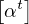 = R∈ PRΣ. |
__
Ahora probaremos que si Σ es no vacio, entonces las biyeciones naturales entre Σ* y ω, dadas en el Lema ??, son Σ-p.r..
Proof. Supongamos Σ = {a1,...,ak} y ≤ es dado por a1 < ... < ak. Ya que
ai = dai+1 ∘ p10,2, para i = 1,...,k - 1 y
ak = da1 ∘ p20,2. O sea que s≤∈ PRΣ. Ya que 
 , donde
, donde
ai = λxy![[x + y]](apunte456x.png) ∘, para i = 1,...,k. ∘, para i = 1,...,k.
|
O sea que #≤∈ PRΣ. __
Dados x,y ∈ ω, definamos
x y = max(x - y,0). y = max(x - y,0).
|
![[x = y]](apunte461x.png) ∈ PRΣ.
∈ PRΣ.
![[x ≤ y]](apunte462x.png) ∈ PRΣ.
∈ PRΣ.
![[α = β ]](apunte463x.png) ∈ PRΣ
∈ PRΣ
Proof. (a) Primero notar que λx![[ ]
x˙- 1](apunte464x.png) = R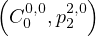∈ PRΣ. Tambien note
que
= R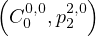∈ PRΣ. Tambien note
que
| λtx = R∈ PRΣ. |
O sea que λxy = λtx∘∈ PRΣ.
(b) Note que λxy![[max (x,y)]](apunte471x.png) = λxy.
= λxy.
(c) Note que λxy![[x = y]](apunte473x.png) = λxy.
= λxy.
(d) Note que λxy = λxy![[1-˙(x˙- y)]](apunte476x.png) .
.
(e) Sea ≤ un orden total sobre Σ. Ya que
| α = β sii #≤(α) = #≤(β) |
tenemos que
λαβ![[α = β ]](apunte477x.png) = λxy = λxy![[x = y]](apunte478x.png) ∘ ∘![[ ]
#≤ ∘ p01,2,# ≤ ∘p02,2](apunte479x.png)
|
lo cual nos dice que λαβ![[α = β ]](apunte480x.png) es Σ-p.r. __
es Σ-p.r. __
Operaciones logicas entre predicados Dados predicados P : S ⊆ ωn × Σ*m → ω y Q : S ⊆ ωn × Σ*m → ω, con el mismo dominio, definamos nuevos predicados (P ∨ Q), (P ∧ Q) y P de la siguiente manera

Lema 51. Si P : S ⊆ ωn × Σ*m → ω y Q : S ⊆ ωn × Σ*m → ω son predicados Σ-p.r., entonces (P ∨ Q), (P ∧ Q) y P lo son tambien.
Proof. Note que
Conjuntos Σ-recursivos primitivos
Un conjunto Σ-mixto S ⊆ ωn × Σ*m es llamado Σ-recursivo primitivo si su
funcion caracteristica χSωn×Σ*m
es Σ-p.r.. (Notese que χSωn×Σ*m
es el predicado
λ
 .)
.)
Proof. Note que
![χωSn×∪SΣ*m = (χωSn×Σ*m ∨χ ωSn× Σ*m )
ω1n× 2Σ*m ω1n×Σ*m 2ωn× Σ*m
χS1∩S2 = (χS1 ∧χ[ S2 ) ]
χωn× Σ*m = λxy [x-˙y]∘ χ ωn× Σ*m ,χωn×Σ*m
S1-S2 S1 S2](apunte486x.png)
Proof. Si S = ∅, entonces es claro que S es Σ-p.r.. Probaremos ahora el lema para el caso en que S tiene un solo elemento. Supongamos entonces
| S = {(z1,...,zn,γ1,...,γm)}. |
Note que χSωn×Σ*m es el siguiente predicado
| . |
Ya que los predicados
 - 1 veces)
para obtener que S es Σ-p.r.. __
- 1 veces)
para obtener que S es Σ-p.r.. __
El siguiente lema caracteriza cuando un conjunto rectangular es Σ-p.r..
Lema 54. Supongamos S1,...,Sn ⊆ ω, L1,...,Lm ⊆ Σ* son conjuntos no vacios. Entonces S1 ×...×Sn ×L1 ×...×Lm es Σ-p.r. sii S1,...,Sn,L1,...,Lm son Σ-p.r.
Proof. (⇒) Veremos por ejemplo que L1 es Σ-p.r.. Sea (z1,...,zn,ζ1,...,ζm) un elemento fijo de S1 × ... × Sn × L1 × ... × Lm. Note que
| α ∈ L1 sii (z1,...,zn,α,ζ2,...,ζm) ∈ S1 × ... × Sn × L1 × ... × Lm, |
lo cual implica que
| χL1Σ* = χS1×...×Sn×L1×...×Lmωn×Σ*m ∘ |
(⇐) Note que χS1×...×Sn×L1×...×Lmωn×Σ*m es el predicado
| . |
__
Dada una funcion f y un conjunto S ⊆ Df, usaremos f|S para denotar la restriccion de f al conjunto S, i.e. f|S = f ∩ (S × If). Notese que f|S es la funcion dada por
| Df|S = S y f|S(e) = f(e), para cada e ∈ S |
Lema 55. Sean n,m ∈ ω y O ∈{ω,Σ*}. Supongamos f : Df ⊆ ωn×Σ*m → O es Σ-p.r.. Si S ⊆ Df es Σ-p.r., entonces f|S es Σ-p.r..
Proof. Supongamos O = Σ*. Entonces
f|S = λxα![[αx ]](apunte492x.png) ∘ ∘
|
lo cual nos dice que f|S es Σ-p.r.. El caso O = ω es similar usando λxy en lugar de λxα. __
Usando el lema anterior en combinacion con el Lema 51 podemos ver que muchos predicados usuales son Σ-p.r.. Por ejemplo sea
| P = λxαβγ. |
Notese que
| DP = ω × Σ*× (Σ*-{ε}) × Σ* |
es Σ-p.r. ya que
| χDPω×Σ*3 = λαβ ∘ |
Tambien note que los predicados
| P = . |
@@finpagina@@
Lema 56. Sean n,m ∈ ω y O ∈{ω,Σ*}. Si f : Df ⊆ ωn×Σ*m → O es Σ-p.r., entonces existe una funcion Σ-p.r. : ωn × Σ*m → O, tal que f = |Df.
Proof. Es facil ver por induccion en k que el enunciado se cumple para cada f ∈ PRkΣ __
Ahora podemos probar el siguiente importante resultado
Proof. Supongamos que S ⊆ ωn × Σ*m.
(⇒) Note que S = DPred∘χSωn×Σ*m.
(⇐) Probaremos por induccion en k que DF es Σ-p.r., para cada F ∈ PRkΣ. El caso k = 0 es facil. Supongamos el resultado vale para un k fijo y supongamos F ∈ PRk+1Σ. Veremos entonces que DF es Σ-p.r.. Hay varios casos. Consideremos primero el caso en que F = R(f,g), donde
| DF = ω × S1 × ... × Sn × L1 × ... × Lm. |
Por hipotesis inductiva tenemos que Df = S1 ×...×Sn ×L1 ×...×Lm es Σ-p.r., lo cual por el Lema 54 nos dice que los conjuntos S1,...,Sn, L1,...,Lm son Σ-p.r.. Ya que ω es Σ-p.r., el Lema 54 nos dice que DF es Σ-p.r..
Los otros casos de recursion primitiva son dejados al lector.
Supongamos ahora que F = g ∘ [g1,...,gr] con g,g1,...,gr ∈ PRkΣ. Si F = ∅, entonces es claro que DF = ∅ es Σ-p.r.. Supongamos entonces que F no es la funcion ∅. Tenemos entonces que r es de la forma n + m y

| gi = i|Dg i, para i = 1,...,n + m. |
Por hipotesis inductiva los conjuntos Dg, Dgi, i = 1,...,n + m, son Σ-p.r. y por lo tanto
| S = ⋂ i=1n+mD gi |
lo es. Notese que
| χDFωk×Σ*l = (χDgωn×Σ*m ∘ ∧ χSωk×Σ*l ) |
lo cual nos dice que DF es Σ-p.r.. __
Lema de division por casos para funciones Σ-p.r. Una observacion interesante es que si fi : Dfi → O, i = 1,...,k, son funciones tales que Dfi ∩ Dfj = ∅ para i≠j, entonces f1 ∪ ... ∪ fk es la funcion
|
Lema 58. Sean n,m ∈ ω y O ∈{ω,Σ*}. Supongamos fi : Dfi ⊆ ωn × Σ*m → O, i = 1,...,k, son funciones Σ-p.r. tales que Dfi ∩Dfj = ∅ para i≠j. Entonces f1 ∪ ... ∪ fk es Σ-p.r..
Proof. Supongamos O = Σ* y k = 2. Sean
| i : ωn × Σ*m → Σ*,i = 1,2, |
funciones Σ-p.r. tales que i|Df i = fi, i = 1,2 (Lema 56). Por Lema 57 los conjuntos Df1 y Df2 son Σ-p.r. y por lo tanto lo es Df1 ∪ Df2. Ya que
| f1∪f2 = 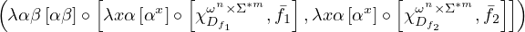|Df 1∪Df2 |
tenemos que f1 ∪ f2 es Σ-p.r..
El caso k > 2 puede probarse por induccion ya que
| f1 ∪ ... ∪ fk = (f1 ∪ ... ∪ fk-1) ∪ fk. |
__
Proof. Supongamos f : Df ⊆ ωn × Σ*m → O, con Df = {e1,...,ek}. Por el Corolario 53, cada {ei} es Σ-p.r. por lo cual el Lema 55 nos dice que Cf(ei)n,m|{ei} es Σ-p.r.. O sea que
| f = Cf(e1)n,m| {e1}∪ ... ∪ Cf(ek)n,m| {ek} |
es Σ-p.r.. __
Recordemos que dados i ∈ ω y α ∈ Σ*, definimos
![[α]](apunte506x.png) i = i = 
|
Proof. Note que
![[ε]i = ε
{ [α]i si i ⁄= |α|+ 1
[αa]i = a si i = |α|+ 1](apunte509x.png) a : ω × Σ*× Σ*→ Σ* es dada
por
a : ω × Σ*× Σ*→ Σ* es dada
por
|
a(i,α,ζ) =
|
O sea que solo resta probar que cada a es Σ-p.r.. Primero note que los conjuntos

|
a = p31,2|
S1 ∪ Ca1,2|
S2
|
el Lema 58 nos dice que a es Σ-p.r., para cada a ∈ Σ. __
Sumatoria, productoria y concatenatoria de funciones Σ-p.r.
Sea Σ un alfabeto finito. Sea f : ω×S1 ×...×Sn×L1 ×...×Lm → ω, con S1,...,Sn ⊆ ω
y L1,...,Lm ⊆ Σ* no vacios. Para x,y ∈ ω y ( ,
, ) ∈ S1 × ... × Sn × L1 × ... × Lm,
definamos
) ∈ S1 × ... × Sn × L1 × ... × Lm,
definamos

f(t, , , ) = ) = 
|
Note que, en virtud de la definicion anterior, el dominio de las funciones
λxy  ![[t∑=y ]
f(t,⃗x,⃗α)
t=x](apunte524x.png) λxy λxy  ![[t∏=y ]
f(t,⃗x,⃗α )
t=x](apunte527x.png) λxy λxy 
|
es ω × ω × S1 × ... × Sn × L1 × ... × Lm.
Lema 61. Sea Σ un alfabeto finito.


![[∑ ]
t=t=yx f(t,⃗x,⃗α)](apunte533x.png) y λxy
y λxy

![[∏t=y ]
t=xf(t,⃗x,⃗α)](apunte536x.png) son Σ-p.r.
son Σ-p.r.


![[⊂t=y f(t,⃗x,⃗α)]
t=x](apunte539x.png) es Σ-p.r.
es Σ-p.r.
Proof. (a) Sea G = λtx
 . Ya que
. Ya que
λxy  ![[i=y ]
∑ f(i,⃗x,⃗α)
i=x](apunte545x.png) = G ∘ = G ∘
|
solo tenemos que probar que G es Σ-p.r.. Primero note que
|
|
tenemos que G = R(h,g). Es decir que solo nos falta probar que h y g son Σ-p.r.. Sean

![[ n+1,m n+1,m n+1,m n+1,m ]
λx ⃗x⃗α[f(0,⃗x,⃗α )] = f ∘ C0 ,p2 ,p3 ,...,pn+1+m
[ n+3,m [ n+3,m n+3,m n+3,m ]]
λAtx⃗x⃗α [A + f(t+ 1,⃗x,⃗α)]) = λxy[x+ y]∘ p1 ,f ∘ Suc ∘p2 ,p4 ,...,pn+3+m](apunte556x.png)

 y λAtx
y λAtx
 ) son Σ-p.r..O sea que
para probar que h y g son Σ-p.r.solo nos falta ver que los conjuntos D1,D2,H1,H2
son Σ-p.r.. y aplicar luego el Lema 55. Veamos que por ejemplo H1 lo es. Es
decir debemos ver que χH1ω3+n×Σ*m
es Σ-p.r.. Ya que f es Σ-p.r. tenemos
que Df = ω × S1 × ... × Sn × L1 × ... × Lm es Σ-p.r., lo cual por el Lema
54 nos dice que los conjuntos S1,...,Sn, L1,...,Lm son Σ-p.r.. Ya que ω es
Σ-p.r., el Lema 54 nos dice que R = ω3 × S1 × ... × Sn × L1 × ... × Lm es
Σ-p.r.. Notese que χH1ω3+n×Σ*m
= (χRω3+n×Σ*m
∧ λztx
) son Σ-p.r..O sea que
para probar que h y g son Σ-p.r.solo nos falta ver que los conjuntos D1,D2,H1,H2
son Σ-p.r.. y aplicar luego el Lema 55. Veamos que por ejemplo H1 lo es. Es
decir debemos ver que χH1ω3+n×Σ*m
es Σ-p.r.. Ya que f es Σ-p.r. tenemos
que Df = ω × S1 × ... × Sn × L1 × ... × Lm es Σ-p.r., lo cual por el Lema
54 nos dice que los conjuntos S1,...,Sn, L1,...,Lm son Σ-p.r.. Ya que ω es
Σ-p.r., el Lema 54 nos dice que R = ω3 × S1 × ... × Sn × L1 × ... × Lm es
Σ-p.r.. Notese que χH1ω3+n×Σ*m
= (χRω3+n×Σ*m
∧ λztx

![[x > t+ 1]](apunte565x.png) ) por
lo cual χH1ω3+n×Σ*m
es Σ-p.r. ya que es la conjuncion de dos predicados
Σ-p.r. __
) por
lo cual χH1ω3+n×Σ*m
es Σ-p.r. ya que es la conjuncion de dos predicados
Σ-p.r. __
Veamos un ejemplo de como se puede aplicar el lema anterior. Sea F = λyx1. Es claro que DF = ω2. Para ver que F es Σ-p.r. aplicaremos el lema anterior por lo cual es importante encontrar la f adecuada a la cual se le aplicara el lema. Tomemos f = λtx1[(x1)t]. Claramente f es Σ-p.r. por lo cual el lema anterior nos dice que
| G = λxyx1 = λxyx1 |
es Σ-p.r.. Claramente G no es la funcion F pero es en algun sentido ”mas amplia” que F ya que tiene una variable mas y se tiene que F(y,x1) = G(0,y,x1), para cada y,x1 ∈ ω. Es facil ver que
| F = G ∘ |
por lo cual F es Σ-p.r..
Cuantificacion acotada de predicados Σ-p.r. con dominio rectangular Ses P : S ×S1 ×...×Sn ×L1 ×...×Lm → ω un predicado, con S,S1,...,Sn ⊆ ω y L1,...,Lm ⊆ Σ* no vacios. Supongamos ⊆ S. Entonces la expresion Booleana
(∀t ∈)t≤xP(t, , , ) )
|
depende de las variables x, ,
, y valdra 1 en una (1 + n + m)-upla (x,
y valdra 1 en una (1 + n + m)-upla (x, ,
, ) cuando
P(t,
) cuando
P(t, ,
, ) sea igual a 1 para cada t ∈{u ∈ : u ≤ x}; y 0 en caso contrario. Tenemos
entonces que el dominio del predicado
) sea igual a 1 para cada t ∈{u ∈ : u ≤ x}; y 0 en caso contrario. Tenemos
entonces que el dominio del predicado
λx 
|
es ω × S1 × ... × Sn × L1 × ... × Lm. En forma analoga se define la forma de interpretar la expresion Booleana
(∃t ∈)t≤xP(t, , , ) )
|
Cabe destacar que
λx  ![[ ]
(∃t ∈S)t≤xP (t,⃗x,⃗α)](apunte585x.png) = λx = λx  ![[ ]
(∀t ∈ S)t≤x P(t,⃗x,⃗α)](apunte588x.png)
|
Tambien podemos cuantificar sobre variable alfabetica. Sea P : S1 × ... × Sn × L1 × ... × Lm × L → ω un predicado, con S1,...,Sn ⊆ ω y L,L1,...,Lm ⊆ Σ* no vacios. Supongamos ⊆ L. Entonces la expresion Booleana
(∀α ∈) ≤xP( ≤xP( , , ,α) ,α)
|
depende de las variables x, ,
, y valdra 1 en una (1 + n + m)-upla (x,
y valdra 1 en una (1 + n + m)-upla (x, ,
, ) cuando
P(
) cuando
P( ,
, ,α) sea igual a 1 para cada α ∈{u ∈ :
,α) sea igual a 1 para cada α ∈{u ∈ :  ≤ x}; y 0 en caso contrario.
Tenemos entonces que el dominio del predicado
≤ x}; y 0 en caso contrario.
Tenemos entonces que el dominio del predicado
λx ![[(∀ α ∈ L)|α|≤xP (⃗x,⃗α,α )]](apunte601x.png)
|
es ω × S1 × ... × Sn × L1 × ... × Lm. En forma analoga se define la forma de interpretar la expresion Booleana
(∃α ∈) ≤xP( ≤xP( , , ,α) ,α)
|
Cabe destacar que
λx  = λx = λx 
|
Lema 62. Sea Σ un alfabeto finito.


![[ ]
(∀t ∈ S)t≤xP(t,⃗x,⃗α )](apunte613x.png) y
λx
y
λx

![[ ]
(∃t ∈S)t≤xP (t,⃗x,⃗α)](apunte616x.png) son predicados Σ-p.r..
son predicados Σ-p.r..


![[ ]
(∀α ∈L )|α|≤xP (⃗x,⃗α,α)](apunte619x.png) y
λx
y
λx

![[ ]
(∃α ∈ L)|α|≤xP (⃗x,⃗α,α )](apunte622x.png) son predicados Σ-p.r..
son predicados Σ-p.r..
Proof. (a) Sea
| = P|×S1×...×Sn×L1×...×Lm ∪ C11+n,m| (ω-)×S1×...×Sn×L1×...×Lm |
Notese que tiene dominio ω × S1 × ... × Sn × L1 × ... × Lm y es Σ-p.r.. Ya que
![[ ] [t=∏x ]
λx⃗x⃗α (∀t ∈ S)t≤xP(t,⃗x,⃗α) = λx⃗x⃗α P(t,⃗x,⃗α )
t=0
[t=∏y ] [ ]
= λxy⃗x⃗α P(t,⃗x,⃗α ) ∘ C10+n,m,p11+n,m ,...,p11++nn,m+m
t=x](apunte623x.png)


![[ ]
(∀t ∈ S)t≤xP (t,⃗x,⃗α)](apunte626x.png) es Σ-p.r..
es Σ-p.r..
Ya que
λx  = λx = λx  ![[ ]
(∀t ∈ S)t≤x P(t,⃗x,⃗α)](apunte632x.png)
|
tenemos que λx

![[ ]
(∃t ∈ S)t≤xP (t,⃗x,⃗α)](apunte635x.png) es Σ-p.r.
es Σ-p.r.
(b) Haremos solo el caso del cuantificador ∀. Primero supongamos que Σ = ∅. Ya que L,L1,...,Lm son no vacios, debera suceder que L = L1 = ... = Lm = {ε}. Ya que ⊆ L, tenemos que = ∅ o = {ε}. Si = ∅, entonces
Si = {ε}, entonces
Ahora supongamos Σ es no vacio. Sea ≤ un orden total sobre Σ. Sea k el cardinal de Σ. Primero notese que
 ≤ x sii #≤(α) ≤∑
ι=1i=xki, cualesquiera sean x ∈ ω y α ∈ Σ*
≤ x sii #≤(α) ≤∑
ι=1i=xki, cualesquiera sean x ∈ ω y α ∈ Σ*(queda como ejercicio probar (*). Sean

![[ ]
P(⃗x,⃗α,*≤(t))](apunte643x.png) . Notese
que
. Notese
que
| DH = #≤(L) × S 1 × ... × Sn × L1 × ... × Lm |
y H es Σ-p.r.. O sea que por (a) tenemos que
λx  = λx = λx 
|
es Σ-p.r.. Llamemos Q al predicado λx
 . Tenemos
que
. Tenemos
que
![[ ] [ ≤ ∑ ≤ ]
λx⃗x⃗α (∀α ∈ L)|α|≤xP(⃗x,⃗α,α) = λx⃗x⃗α (∀t ∈ # (L ))t≤ iι==x1kiP(⃗x,⃗α,* (t)) (por (*))
[ [i∑=x ] ]
= Q ∘ λx⃗x⃗α ki ,p11+n,m,...,p11++nn,+mm
ι=1](apunte653x.png)

 es Σ-p.r. (ejercicio), lo cual nos dice que λx
es Σ-p.r. (ejercicio), lo cual nos dice que λx
 lo es __
lo es __
OBSERVACION: La cuantificacion no acotada no preserva la propiedad de ser
Σ-p.r.. Como veremos mas adelante si elejimos bien al predicado Σ-p.r. P, obtenemos
que el predicado λ
 no solo no es Σ-p.r. sino que tampoco es
Σ-efectivamente computable (Teorema 134).
no solo no es Σ-p.r. sino que tampoco es
Σ-efectivamente computable (Teorema 134).
Algunos ejemplos en los cuales cuantificacion acotada se aplica naturalmente son dados a continuacion.
Lema 63. Sea Σ un alfabeto finito.
![[x divide y]](apunte663x.png) es Σ-p.r..
es Σ-p.r..
![[x es primo ]](apunte664x.png) es Σ-p.r..
es Σ-p.r..
![[α inicial β]](apunte665x.png) es Σ-p.r..
es Σ-p.r..
Proof. (a) Sea P = λtx1x2. Es claro que P es Σ-p.r.. El lema anterior nos
dice que λxx1x2![[(∃t ∈ ω )t≤xP (t,x1,x2)]](apunte667x.png) es Σ-p.r.. Notese que x1 divide x2 si y solo si
hay un t ≤ x2 tal que x2 = t.x1. Esto nos dice que
es Σ-p.r.. Notese que x1 divide x2 si y solo si
hay un t ≤ x2 tal que x2 = t.x1. Esto nos dice que
| λx1x2 = λx1x2 |
Pero
λx1x2![[(∃t ∈ ω)t≤x2P (t,x1,x2)]](apunte670x.png) = λxx1x2∘ = λxx1x2∘![[ 2,0 2,0 2,0]
p2 ,p1 ,p2](apunte672x.png)
|
por lo cual λx1x2![[x1 divide x2]](apunte673x.png) es Σ-p.r.
es Σ-p.r.
(b) Ya que
x es primo sii x > 1 ∧
|
podemos usar un argumento similar al de la prueba de (a).
(c) es dejado al lector. __
La idea fundamental subyacente en las aplicaciones anteriores es que en muchos casos de predicados obtenidos por cuantificacion a partir de otros predicados, la variable cuantificada tiene una cota natural en terminos de las otras variables y entonces componiendo adecuadamente se lo puede presentar como un caso de cuantificacion acotada
@@finpagina@@
Tal como fue explicado anteriormente, para obtener la clase de las funciones Σ-recursivas debemos agregar un nuevo constructor a los ya definidos de composicion y recursion primitiva, a saber el constructor de minimizacion. Tiene dos casos.
Minimizacion de variable numerica
Sea Σ un alfabeto finito y sea P : DP ⊆ ω × ωn × Σ*m → ω un predicado. Dado
( ,
, ) ∈ ωn × Σ*m, cuando exista al menos un t ∈ ω tal que P(t,
) ∈ ωn × Σ*m, cuando exista al menos un t ∈ ω tal que P(t, ,
, ) = 1, usaremos
mintP(t,
) = 1, usaremos
mintP(t, ,
, ) para denotar al menor de tales t′s. Notese que la expresion
mintP(t,
) para denotar al menor de tales t′s. Notese que la expresion
mintP(t, ,
, ) esta definida solo para aquellas (n + m)-uplas (
) esta definida solo para aquellas (n + m)-uplas ( ,
, ) para las cuales
hay al menos un t tal que se da P(t,
) para las cuales
hay al menos un t tal que se da P(t, ,
, ) = 1. Dicho de otra forma, mintP(t,
) = 1. Dicho de otra forma, mintP(t, ,
, ) no
estara definida cuando para cada t ∈ ω se de que (t,
) no
estara definida cuando para cada t ∈ ω se de que (t, ,
, ) no pertenece a DP o
P(t,
) no pertenece a DP o
P(t, ,
, ) = 0. Otro detalle importante a tener en cuenta es que la expresion
mintP(t,
) = 0. Otro detalle importante a tener en cuenta es que la expresion
mintP(t, ,
, ) no depende de la variable t. Por ejemplo, las expresiones
mintP(t,,
) no depende de la variable t. Por ejemplo, las expresiones
mintP(t,, ) y miniP(i,
) y miniP(i, ,
, ) son equivalentes en el sentido que estan definidas
en las mismas (n + m)-uplas y cuando estan definidas asumen el mismo
valor.
) son equivalentes en el sentido que estan definidas
en las mismas (n + m)-uplas y cuando estan definidas asumen el mismo
valor.
Definamos
M(P) = λ 
|
Notese que
Veamos un ejemplo. Recordemos que dados x1,x2 ∈ ω, con x1 no nulo, el cociente de dividir x1 por x2 se define como el maximo elemento del conjunto {t ∈ ω : t.x2 ≤ x1}. Sea
|
Sea P = λtx1x2![[x1 < t.x2]](apunte703x.png) . Notar que
. Notar que
| mint x1 < t.x2 = Q(x1,x2) + 1 |
por lo que M(P) = Suc ∘ Q. Si quisieramos encontrar un predicado P′ tal que M(P′) = Q, entonces podemos tomar P′ = λtx1x2 y con un poco de concentracion nos daremos cuenta que M(P′) = Q. De todas maneras hay una forma mas facil de hacerlo y es tomando P′ de tal forma que para cada (x1,x2) ∈ DQ se de que
| Q(x1,x2) = unico t ∈ ω tal que P′(t,x 1,x2) |
Por ejemplo se puede tomar P′ = λtx1x2 que dicho sea de paso es justo la definicion de cociente dada en la escuela primaria. Dejamos al lector corroborar que M(P′) = Q, para este ultimo P′.
Tal como lo vimos recien muchas veces que querramos encontrar un predicado P tal que M(P) sea igual a una funcion dada F, sera mas facil encontrar un P el cual cumpla
F( , , ) = unico t ∈ ω tal que P(t, ) = unico t ∈ ω tal que P(t, , , ) )
|
es decir un predicado P que caracterice al valor que toma F.
Lema 64. Si P : DP ⊆ ω × ωn × Σ*m → ω es un predicado Σ-efectivamente computable y DP es Σ-efectivamente computable, entonces la funcion M(P) es Σ-efectivamente computable.
Proof. Ejercicio __
Lamentablemente si quitamos la hipotesis en el lema anterior de que DP sea Σ-efectivamente computable, el lema resulta falso. Mas adelante veremos un contraejemplo basado en la tesis de Church (Proposicion 137). Por el momento el lector puede ejercitar su comprencion del tema convenciendose de que aun teniendo un procedimiento efectivo que compute a un predicado P : DP ⊆ ω × ωn × Σ*m → ω, no es claro como construir un procedimiento efectivo que compute a M(P).
Definicion de funcion Σ-recursiva Con este nuevo constructor de funciones estamos en condiciones de definir la clase de las funciones Σ-recursivas. Definamos los conjuntos R0Σ ⊆ R1Σ ⊆ R2Σ ⊆ ... ⊆ RΣ de la siguiente manera
|
Una funcion f es llamada Σ-recursiva si pertenece a RΣ. Cabe destacar que aunque M(P) fue definido para predicados no necesariamente Σ-totales, en la definicion de los conjuntos RkΣ, nos restringimos al caso en que P es Σ-total.
Notese que PRkΣ ⊆ RkΣ, para cada k ∈ ω, por lo cual PRΣ ⊆ RΣ.
Proof. Dejamos al lector la prueba por induccion en k de que si f ∈ RkΣ, entonces f es Σ-efectivamente computable. __
Daremos sin prueba el siguiente conceptualmente importante resultado.
Este resultado no es facil de probar. Mas adelante (Proposicion 106) veremos ejemplos naturales de funciones Σ-recursivas que no son Σ-p.r.. Otro ejemplo natural es la famosa funcion de Ackermann.
Lema de minimizacion acotada de variable numerica de predicados Σ-p.r. Aunque no siempre que P ∈ RΣ, tendremos que M(P) ∈ RΣ (Proposicion 137), el siguiente lema nos garantiza que este es el caso cuando P ∈ PRΣ y ademas da condiciones para que M(P) sea Σ-p.r..
Lema 67. Sean n,m ≥ 0. Sea P : DP ⊆ ω × ωn × Σ*m → ω un predicado Σ-p.r.. Entonces
M(P)( , , ) = mintP(t, ) = mintP(t, , , ) ≤ f( ) ≤ f( , , ), para cada ( ), para cada ( , , ) ∈ DM(P), ) ∈ DM(P),
|
entonces M(P) es Σ-p.r..
Proof. (a) Sea = P ∪ C0n+1,m|(ωn+1×Σ*m)-DP. Note que es Σ-p.r. (por que?). Veremos a continuacion que M(P) = M(). Notese que
{t ∈ ω : P(t, , , ) = 1} = {t ∈ ω : (t, ) = 1} = {t ∈ ω : (t, , , ) = 1} ) = 1}
|
Esto claramente dice que DM(P) = DM() y que M(P)( ,
, ) = M()(
) = M()( ,
, ),
para cada (
),
para cada ( ,
, ) ∈ DM(P)., por lo cual M(P) = M().
) ∈ DM(P)., por lo cual M(P) = M().
Veremos entonces que M() es Σ-recursiva. Sea k tal que ∈ PRkΣ. Ya que es Σ-total y ∈ PRkΣ ⊆ RkΣ, tenemos que M() ∈ Rk+1Σ y por lo tanto M() ∈ RΣ.
(b) Ya que M(P) = M(), basta con probar que M() es Σ-p.r. Primero veremos que DM() es un conjunto Σ-p.r.. Notese que
χDM()ωn×Σ*m
= λ 
|
lo cual nos dice que
χDM()ωn×Σ*m
= λx  ∘ ∘
|
Pero el Lema 62 nos dice que λx
 es Σ-p.r. por lo cual
tenemos que χDM()ωn×Σ*m
lo es.
es Σ-p.r. por lo cual
tenemos que χDM()ωn×Σ*m
lo es.
Sea
P1 = λt  ![[P(t,⃗x,⃗α) ∧(∀j ∈ ω )j≤tj = t∨ P(j,⃗x,⃗α)]](apunte745x.png)
|
Note que P1 es Σ-total. Dejamos al lector usando lemas anteriores probar que P1 es
Σ-p.r. Ademas notese que para ( ,
, ) ∈ ωn × Σ*m se tiene que
) ∈ ωn × Σ*m se tiene que
P1(t, , , ) = 1 si y solo si (, ) = 1 si y solo si (, ) ∈ DM() y t = M()( ) ∈ DM() y t = M()( , , ) )
|
Esto nos dice que
| M() = |D M() |
por lo cual para probar que M() es Σ-p.r. solo nos resta probar que
F = λ 
|
lo es. Pero
F = λxy  ![[∏y ]
tP1(t,⃗x,⃗α)
t=x](apunte760x.png) ∘ ∘
|
y por lo tanto el Lema 61 nos dice que F es Σ-p.r.. __
OBSERVACION: No siempre que P sea Σ-p.r. tendremos que M(P) lo sera. Notese que si M(P) fuera Σ-p.r., cada ves que P lo sea, entonces tendriamos que PRΣ = RΣ (justifique) lo cual contradiria la Proposicion 66. Mas adelante (Corolario 107) veremos un ejemplo de un predicado P el cual es Σ-p.r. pero M(P) no es Σ-p.r.
El lema de minimizacion recien probado es muy util como veremos en los siguientes dos lemas.
Lema 68. Sea Σ un alfabeto finito. Las siguientes funciones son Σ-p.r.:
Q : ω × N | → | ω |
(x,y) | → | cociente de la division de x por y |
R : ω × N | → | ω |
(x,y) | → | resto de la division de x por y |
pr : N | → | ω |
n | → | n-esimo numero primo |
Proof. (a) Ya vimos anteriormente que Q = M(P′), donde P′ = λtx1x2. Ya que P′ es Σ-p.r. y
| Q(x1,x2) ≤ p12,0(x 1,x2), para cada (x1,x2) ∈ ω × N |
(b) del Lema 67 implica que Q ∈ PRΣ.
(b) Notese que
| R = λxy |
y por lo tanto R ∈ PRΣ.
(c) Para ver que pr es Σ-p.r., veremos que la extension h : ω → ω, dada por h(0) = 0 y h(n) = pr(n), n ≥ 1, es Σ-p.r.. Luego pr = h|N resultara Σ-p.r. por ser la restriccion de una funcion Σ-p.r. a un conjunto Σ-p.r.. Primero note que
|
Es decir que solo nos resta ver que g es Σ-p.r.. Pero notese que g = M(P), donde
P = λiAt![[i es primo ∧ i > A]](apunte767x.png) . Claramente P es Σ-p.r. por lo cual para poder aplicar
(b) del lema anterior debemos encontrar una funcion f : ω × ω → ω tal
que
. Claramente P es Σ-p.r. por lo cual para poder aplicar
(b) del lema anterior debemos encontrar una funcion f : ω × ω → ω tal
que
| M(P)(A,t) ≤ f(A,t), para cada (A,t) ∈ ω2 |
Es decir f debera cumplir
mini ≤ f(A,t), para cada (A,t) ∈ ω2 ≤ f(A,t), para cada (A,t) ∈ ω2
|
Definamos f = λAt[A! + 1]. Debemos probar entonces que
| mini ≤ A! + 1, para cada A ∈ ω |
Sea p un primo tal que p divide a A! + 1. Es facil ver que entonces p > A ya que de lo contrario p dividiria a A! lo cual nos diria que p divide a 1 = A! + 1 - A!, lo cual es absurdo. Pero esto claramente nos dice que
mini ≤ p ≤ A! + 1 ≤ p ≤ A! + 1
|
O sea que (b) del Lema 67 implica que g = M(P) es Σ-p.r. __
Proof. Note que Dλxi![[(x)i]](apunte773x.png) = N × N. Sea
= N × N. Sea
| P = λtxi |
Note que P es Σ-p.r. y que DP = ω × ω × N. Dejamos al lector la prueba de
que λxi![[(x)i]](apunte775x.png) = M(P). Ya que (x)i ≤ x, para todo (x,i) ∈ N×N, (b) del Lema
67 implica que λxi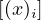 es Σ-p.r..
= M(P). Ya que (x)i ≤ x, para todo (x,i) ∈ N×N, (b) del Lema
67 implica que λxi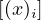 es Σ-p.r..
Veamos que λx es Σ-p.r.. Sea
Q = λtx![[(∀i ∈ N )i≤x (i ≤ t∨(x)i = 0)]](apunte778x.png)
|
Notese que DQ = ω × N y que ademas por el Lema 62 tenemos que Q es Σ-p.r.
(dejamos al lector explicar como se aplica tal lema en este caso). Ademas notese que
λx![[Lt(x)]](apunte779x.png) = M(Q) y que
= M(Q) y que
| Lt(x) ≤ x,para todo x ∈ N |
lo cual por (b) del Lema 67 nos dice que λx![[Lt(x )]](apunte780x.png) es Σ-p.r.. __
es Σ-p.r.. __
Para x1,...,xn ∈ ω, con n ≥ 1, escribiremos  en lugar de
en lugar de
 .
.
Proof. Sea fn = λx1...xn![[⟨x1,...,xn⟩]](apunte784x.png) . Claramente f1 es Σ-p.r.. Ademas note que
para cada n ≥ 1, tenemos
. Claramente f1 es Σ-p.r.. Ademas note que
para cada n ≥ 1, tenemos
| fn+1 = λx1...xn+1. |
O sea que podemos aplicar un argumento inductivo. __
Minimizacion de variable alfabetica
Supongamos que Σ≠∅. Sea ≤ un orden total sobre Σ. Recordemos
que ≤ puede ser naturalmente extendido a un orden total sobre Σ*. Sea
P : DP ⊆ ωn × Σ*m × Σ*→ ω un predicado. Cuando ( ,
, ) ∈ ωn × Σ*m es tal que
existe al menos un α ∈ Σ* tal que P(
) ∈ ωn × Σ*m es tal que
existe al menos un α ∈ Σ* tal que P( ,
, ,α) = 1, usaremos minα≤P(
,α) = 1, usaremos minα≤P( ,
, ,α) para
denotar al menor α ∈ Σ* tal que P(
,α) para
denotar al menor α ∈ Σ* tal que P( ,
, ,α) = 1. Notese que la expresion
minα≤P(
,α) = 1. Notese que la expresion
minα≤P( ,
, ,α) esta definida solo para aquellas (n + m)-uplas (
,α) esta definida solo para aquellas (n + m)-uplas ( ,
, ) para las
cuales hay al menos un α tal que se da P(
) para las
cuales hay al menos un α tal que se da P( ,
, ,α) = 1. Dicho de otra forma,
minα≤P(
,α) = 1. Dicho de otra forma,
minα≤P( ,
, ,α) no estara definida cuando para cada α ∈ Σ* se de que (
,α) no estara definida cuando para cada α ∈ Σ* se de que ( ,
, ,α) no
pertenece a DP o P(
,α) no
pertenece a DP o P( ,
, ,α) = 0. Otro detalle importante a tener en cuenta es que la
expresion minα≤P(
,α) = 0. Otro detalle importante a tener en cuenta es que la
expresion minα≤P( ,
, ,α) no depende de la variable α. Por ejemplo, las expresiones
minα≤P(
,α) no depende de la variable α. Por ejemplo, las expresiones
minα≤P( ,
, ,α) y minβ≤P(
,α) y minβ≤P( ,
, ,β) son equivalentes en el sentido que estan
definidas en las mismas (n + m)-uplas y cuando estan definidas asumen el mismo
valor.
,β) son equivalentes en el sentido que estan
definidas en las mismas (n + m)-uplas y cuando estan definidas asumen el mismo
valor.
Definamos
|
Notese que

Vemos un ejemplo. Sea Σ = {@,a,b,c,d,e} y sea ≤ un orden total sobre Σ. Sea
Dir = {α1 ∈ Σ* :  @ = 1} y definamos U : Dir → Σ* de la siguiente
manera
@ = 1} y definamos U : Dir → Σ* de la siguiente
manera
| U(α1) = unico α tal que α@ es tramo inicial de α1 |
Sea
| P = λα1α[α1 ∈ Dir y α@ es tramo inicial de α1] |
Tenemos que
Lema de minimizacion acotada de variable alfabetica de predicados Σ-p.r.
Lema 71. Supongamos que Σ≠∅. Sea ≤ un orden total sobre Σ, sean n,m ≥ 0 y sea P : DP ⊆ ωn × Σ*m × Σ*→ ω un predicado Σ-p.r.. Entonces
 = ≤ f( = ≤ f( , , ), para cada ( ), para cada ( , , ) ∈ DM≤(P), ) ∈ DM≤(P),
|
entonces M≤(P) es Σ-p.r..
Proof. Sea Q = P ∘. Note que
| M≤(P) = *≤∘ M(Q) |
lo cual por (a) del Lema 67 implica que M≤(P) es Σ-recursiva.
Sea k el cardinal de Σ. Ya que
= ≤ f( , , ), ),
|
para todo ( ,
, ) ∈ DM≤(P) = DM(Q), tenemos que
) ∈ DM≤(P) = DM(Q), tenemos que
M(Q)( , , ) ≤∑
ι=1i=f(,)ki, para cada ( ) ≤∑
ι=1i=f(,)ki, para cada ( , , ) ∈ D
M(Q). ) ∈ D
M(Q).
|
O sea que por (b) del Lema 67, M(Q) es Σ-p.r. y por lo tanto M≤(P) lo es. __
En el ejemplo de recien vimos que U = M(P), con P = λα1α[α@ es tramo inicial de α1] por lo cual, dado que P es Σ-p.r. y ademas
≤ , para cada α1 ∈ Dir , para cada α1 ∈ Dir
|
el lema anterior nos dice que U es Σ-p.r.
Ya que la nocion de funcion Σ-recursiva es el modelo matematico Godeliano del concepto de funcion Σ-efectivamente computable, nos podriamos preguntar entonces cual es el modelo matematico Godeliano del concepto de conjunto Σ-efectivamente enumerable. Si prestamos atencion a la definicion de conjunto Σ-efectivamente enumerable, notaremos que depende de la existencia de ciertas funciones Σ-efectivamente computables por lo cual la siguiente definicion cae de maduro:
Diremos que un conjunto S ⊆ ωn × Σ*m sera llamado Σ-recursivamente enumerable cuando sea vacio o haya una funcion F : ω → ωn × Σ*m tal que IF = S y F(i) sea Σ-recursiva, para cada i ∈{1,...,n + m}.
Deberia entonces quedar claro que si el concepto de funcion Σ-recursiva modeliza correctamente al concepto de funcion Σ-efectivamente computable, entonces el concepto de conjunto Σ-recursivamente enumerable recien definido modeliza correctamente al concepto de conjunto Σ-efectivamente enumerable.
La version Godeliana del concepto de conjunto Σ-efectivamente computable es facil de dar: un conjunto S ⊆ ωn × Σ*m sera llamado Σ-recursivo cuando la funcion χSωn×Σ*m sea Σ-recursiva.
Muchos resultados ya probados para el caso primitivo recursivo pueden ser probados usando basicamente las mismas pruebas e ideas para el caso recursivo. Por ejemplo las pruebas de los siguientes cuatro lemas son identicas a las del caso primitivo recursivo
Lema 72. Si P : S ⊆ ωn × Σ*m → ω y Q : S ⊆ ωn × Σ*m → ω son predicados Σ-r., entonces (P ∨ Q), (P ∧ Q) y P lo son tambien.
Lema 74. Supongamos S1,...,Sn ⊆ ω, L1,...,Lm ⊆ Σ* son conjuntos no vacios. Entonces S1 × ... × Sn × L1 × ... × Lm es Σ-r. sii S1,...,Sn,L1,...,Lm son Σ-r.
Tambien se puede probar una version del lema de division por casos para funciones Σ-recursivas con dominio Σ-recursivo, la cual generaliza el caso Σ-p.r.. La prueba es la misma que la del caso primitivo recursivo aunque al lema previo de existencia de extensiones lo probaremos en forma mas directa que para el caso primitivo recursivo. A saber:
Lema 76. Si f : Df ⊆ ωn × Σ*m → O es Σ-r. y Df es Σ-r., entonces existe una funcion Σ-r. : ωn × Σ*m → O, tal que f = |Df
Proof. Si f = ∅, es facil de probar y dejado al lector. Supongamos entonces f es no vacia. Sin perdida de generalidad podemos suponer que (0,...,0,ε,...,ε) ∈ Df. Sea
|
Ya que
Lema 77. Supongamos fi : Dfi ⊆ ωn × Σ*m → O, i = 1,...,k, son funciones Σ-recursivas tales que cada Dfi es Σ-recursivo y Dfi ∩ Dfj = ∅ para i≠j. Entonces la funcion f1 ∪ ... ∪ fk es Σ-recursiva.
Proof. Completamente analoga a la del caso primitivo recursivo. __
Proof. Supongamos ∅≠S ⊆ ωn × Σ*m. Sea (z1,...,zn,γ1,...,γm) ∈ S fijo. Sea ≤ un orden total sobre Σ. Sea G : ω → ωn × Σ*m dada por
G(x) = 
|
Es claro que cada G(i) es Σ-recursiva y que ImG = ωn × Σ*m.
Para i = 1,...,n, definamos Fi : ω → ω de la siguiente manera
| Fi(x) = |
Para i = n + 1,...,n + m, definamos Fi : ω → Σ* de la siguiente manera
| Fi(x) = |
Usando que S es Σ-recursivo podemos aplicar el lema anterior y ver que cada Fi es Σ-recursiva. Sea F = [F1,...,Fn+m]. Notese que F(i) = Fi para cada i = 1,...,n + m. Esto nos dice que S es Σ-r.e. ya que ImF = S. __
Mas adelante (Lema 135) daremos un ejemplo natural de un conjunto que es Σ-r.e. pero el cual no es Σ-recursivo.
Deberia quedar claro que si el modelo de Godel es correcto, entonces todos los resultados probados dentro del paradigma filosofico de la computabilidad efectiva son ciertos una ves reenunciados de acuerdo al paradigma Godeliano. Tal como vimos arriba muchos de estos resultados se prueban en forma facil en su version recursiva. Sin envargo muchos otros requieren mas trabajo y es necesario utilizar algun paradigma mas constructivo (como el imperativo o el de Turing) para poder probarlos en su version recursiva. Por ejemplo consideremos el teorema siguiente dado en el contexto del paradigma filosofico:
Teorema 79. Sea S ⊆ ωn × Σ*m. Son equivalentes
Se tiene que la version recursiva de (a)⇒(b) es probada sin problemas en el lema anterior pero para probar la version recursiva de (b)⇒(a), nos sera necesario utilizar el paradigma imperativo (Teorema 124). Lo mismo sucede con el lema de division por casos en su forma mas general (Lema 23) y con el teorema de caracterizacion de conjuntos Σ-efectivamente enumerables (Teorema 31), ambos cuando son enunciados en su version recursiva no son faciles de probar con las herramientas desarrolladas hasta ahora y nos sera necesario usar el paradigma imperativo para representar a los objetos recursivos involucrados. Estas pruebas estan en la Seccion 3.6 donde se compilan todos los resultados basicos (expresados en paradigma recursivo) y se obtienen algunos resultados los cuales en esta instancia todavia no se pueden probar ya que para obtenerlos es necesario hacer uso de la formalizacion matematica de ambos paradigmas el funcional y el imperativo (por ejemplo la existencia de un conjunto que es Σ-r.e. pero el cual no es Σ-recursivo).
@@finpagina@@
Dada una funcion h : ω × S1 × ... × Sn × L1 × ... × Lm → ω, con S1,...,Sn ⊆ ω y L1,...,Lm ⊆ Σ*, no vacios, definamos h↓ : ω ×S1 ×...×Sn ×L1 ×...×Lm → ω de la siguiente manera

 ,
, ) ∈ S1 × ... × Sn × L1 × ... × Lm. Entonces h es Σ-r. (resp.
Σ-p.r.) si f y g lo son.
) ∈ S1 × ... × Sn × L1 × ... × Lm. Entonces h es Σ-r. (resp.
Σ-p.r.) si f y g lo son.
Proof. Supongamos f,g son Σ-p.r.. Primero veremos que h↓ es Σ-r. (resp. Σ-p.r.).
Notese que para cada ( ,
, ) ∈ S1 × ... × Sn × L1 × ... × Lm tenemos que
) ∈ S1 × ... × Sn × L1 × ... × Lm tenemos que

h = λix[(x)i] ∘![[ ]
Suc∘ p1+1n,m,h↓](apunte856x.png)
|
lo cual nos dice que h es Σ-r. (resp. Σ-p.r.). __
Probaremos que los conceptos de Σ-recursividad y Σ-recursividad primitiva son en realidad independientes del alfabeto Σ, es decir que si f es una funcion la cual es Σ-mixta y Γ-mixta, entonces f es Σ-recursiva (resp. Σ-p.r.) sii f es Γ-recursiva (resp. Γ-p.r.).
Ya definimos para el caso de un alfabeto Σ≠∅ y ≤ un orden total sobre Σ, las funciones #≤ y *≤. Sea Σ = ∅. Notese que el conjunto ∅ es un orden total sobre Σ (de hecho es el unico orden total sobre Σ). Definamos
|
Ya que Σ* = {ε}, las funciones #∅ y *∅ son biyecciones mutuamente inversas entre {0} y Σ*. Ademas notese que estas funciones son Σ-p.r..
Proof. (a) Si Σ = ∅, entonces es facil ver que *≤ y #≤ son Γ-p.r., y es dejado como ejercicio. Supongamos Σ = {a1,...,ak} con k ≥ 1 y ≤ es dado por a1 < ... < ak. Sea se≤ : Γ*→ Γ* dada por
|
Pero es claro que g es Γ-p.r. por lo cual *≤ es Γ-p.r..
Para ver que #≤ : Σ*→ ω es Γ-p.r., sea #e≤ : Γ*→ ω dada por
(b) El caso Σ = ∅ es facil y queda como ejercicio. Supongamos entonces Σ es no vacio. Sea n el cardinal de Γ. Ya que
![[ ′ ]
# ≤|Σ*(α) = x](apunte862x.png) es
Σ-p.r.. Sea ≤ un orden total sobre Σ. Note que *≤′
|#≤′(Σ*) = M≤(P), lo cual ya
que
es
Σ-p.r.. Sea ≤ un orden total sobre Σ. Note que *≤′
|#≤′(Σ*) = M≤(P), lo cual ya
que
| ≤ x |
nos dice que *≤′ |#≤′(Σ*) es Σ-p.r. (Lema 71). __
Proof. Veamos que R∅ ⊆ RΣ. Probaremos por induccion en k que Rk∅ ⊆ RΣ. El caso k = 0 es trivial. Supongamos entonces que vale la hipotesis inductiva Rk∅ ⊆ RΣ y veamos que Rk+1∅ ⊆ RΣ. Sea F ∈ Rk+1∅- Rk∅ veremos que F ∈ RΣ. Hay varios casos:
Caso F = R(f,), con
= ∅, lo cual nos dice que por definicion
|
Es claro que ωn × Σ*m ×∅* es un conjunto Σ-p.r. por lo cual las funciones pin,m+1|ωn×Σ*m×∅* son Σ-p.r. (aqui las pin,m+1 son respecto de Σ). Ya que
|
R(f,) = f ∘
|
tenemos que F es Σ-recursiva
Caso F = R(f,g), con
 = g ∘ = g ∘
|
(aqui las pi1+n,m+1 y Cε1+n,m+1 son respecto de Σ). Notese que D = ω × S1 × ... × Sn ×∅*m × Σ* y es Σ-recursiva. Ademas es facil ver que F = Rf, ) (respecto del alfabeto Σ) por lo cual F es Σ-recursiva
Caso F = M(P), con P : ω ×ωn ×∅*m → ω, un predicado en Rk∅. Por hipotesis inductiva tenemos que P ∈ RΣ. Sea
| = P ∘ |
Notese que es Σ-total y Σ-recursivo y ademas extiende a P. Sea
| = λxy[x.y] ∘ |
Tambien es Σ-total y Σ-recursivo y extiende a P pero ademas fuera del dominio de
P vale 0. Esto nos dice que M( ) = M(P) por lo cual F es Σ-recursiva ya que M(
) = M(P) por lo cual F es Σ-recursiva ya que M( )
lo es
)
lo es
Los otros casos de recursion primitiva son parecidos a los hechos y el caso de la composicion es trivial.
La prueba de que PR∅⊆ PRΣ es muy similar. Se dejan los detalles como ejercicio para el lector __
Sea Σ un alfabeto finito (puede ser vacio) y sea ≤ un orden total sobre Σ. Para f : Df ⊆ ωn × Σ*m → ω, definamos
| f#≤ = f ∘ |
Similarmente, para f : Df ⊆ ωn × Σ*m → Σ*, definamos
| f#≤ = #≤∘ f ∘ |
Lema 83. Sea Γ un alfabeto finito y sea ≤ un orden total sobre Γ. Dada h una funcion Γ-mixta, son equivalentes
Proof. (2)⇒(1). Supongamos h : Dh ⊆ ωn × Γ*m → Γ* es tal que h#≤ es ∅-recursiva (resp. ∅-p.r.). Dejamos al lector chequear que
| h = *≤∘ h#≤ ∘ |
(aqui las pin,m son respecto de Γ). Por el lema anterior tenemos que h#≤ es Γ-recursiva (resp. Γ-p.r.). Ya que (aun cuando Γ = ∅) tenemos que las funciones *≤ y #≤ son Γ-p.r., tenemos que h es Γ-recursiva (resp. Γ-p.r.) ya que es composicion de funciones Γ-recursivas (resp. Γ-p.r.).
(1)⇒(2). El caso Γ = ∅ es trivial ya que h#≤ se define como composicion de funciones ∅-recursivas (resp. ∅-p.r.). Supongamos entonces que Γ = {a1,...,ar}, con a1 < a2 < ... < ar y r > 0. Probaremos por induccion en k que
El caso k = 0 es facil y dejado al lector. Supongamos (*) vale para un k fijo. Veremos que vale para k + 1. Sea h ∈ Rk+1Γ (resp. h ∈ PRk+1Γ). Hay varios casos
Caso 1. Supongamos h = f ∘ [f1,...,fn], con f,f1,...,fn ∈ RkΓ (resp. f,f1,...,fn ∈ PRkΓ). Por hipotesis inductiva tenemos que f#≤ ,f1#≤ ,...,fn#≤ son ∅-recursivas (resp. ∅-p.r.). Ya que h#≤ = f#≤ ∘, tenemos que h#≤ es ∅-recursiva (resp. ∅-p.r.).
Caso 2. Supongamos h = M(P), con P : ω × ωn × Γ*m → ω, un predicado en RkΓ. Ya que h#≤ = M(P#≤ ), tenemos que h#≤ es ∅-recursiva.
Caso 3. Supongamos h = R(f,), con
 a#≤
son ∅-recursivas (resp. ∅-p.r.).
Sea
a#≤
son ∅-recursivas (resp. ∅-p.r.).
Sea
|
y sea
| B = λx |
(R y Q son definidas en el Lema 68). Note que i0 y B son ∅-p.r. y que
| *≤(x) = *≤(B(x))a i0(x), para x ≥ 1 |
(ejercicio). Tambien tenemos para cada ( ,
, ,t) ∈ S1 ×...×Sn×#≤(L1)×...×#≤(Lm)×ω
se da
,t) ∈ S1 ×...×Sn×#≤(L1)×...×#≤(Lm)×ω
se da

 ,
, ,t + 1) =
ai
0(t+1)#≤
(
,t + 1) =
ai
0(t+1)#≤
( ,
, ,B(t+1),
B(t+1)+1), para
cada (
,B(t+1),
B(t+1)+1), para
cada ( ,
, ,t) ∈ S1 × ... × Sn × #≤(L1) × ... × #≤(Lm) × ω
,t) ∈ S1 × ... × Sn × #≤(L1) × ... × #≤(Lm) × ωA continuacion aplicaremos la idea del Lema 80. Sera mas claro asi ya que para
aplicarlo directamente deberiamos cambiar el orden de los parametros de las
funciones h#≤
, ai#≤
componiendolas adecuadamente y seria muy engorroso
notacionalmente.
Definamos
H = λt
|
Notar que
| DH = ω × S1 × ... × Sn × #≤(L 1) × ... × #≤(L m) |
Tenemos que

 ,
, ) ∈ ω × S1 × ... × Sn × #≤(L1) × ... × #≤(Lm). O sea que si
definimos
) ∈ ω × S1 × ... × Sn × #≤(L1) × ... × #≤(Lm). O sea que si
definimos
| g : ω × ω × S1 × ... × Sn × #≤(L 1) × ... × #≤(L m) → ω |
por
g(A,t, , , ) = ) =
|
tenemos que H = R(λx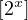 ∘ f#≤ ,g). Note que g es ∅-recursiva (resp. ∅-p.r.), ya que
g = λAt , ,
|
con
![[( G#≤(⃗x,⃗y,B (t+1),(A) ))]
fi = λAt⃗x⃗y A.pr(t+ 2) ai B(t+1)
Pi = λAt⃗x⃗y[i0(t+ 1) = i]](apunte911x.png)
h#≤
= λ  t t
|
Los otros casos en los cuales h es obtenida por recursion primitiva son similares. __
Ahora podemos probar el anunciado resultado de independencia.
Teorema 84. Sean Σ y Γ alfabetos cualesquiera.
Proof. (a) Ya que f es (Σ ∩ Γ)-mixta, podemos suponer sin perdida de generalidad que Σ ⊆ Γ (por que?). Sea ≤ un orden total sobre Σ y sea ≤′ un orden total sobre Γ. Primero supongamos que f es Σ-recursiva (resp. Σ-p.r.). Probaremos que f es Γ-recursiva (resp. Γ-p.r.). Ya que f es Σ mixta, tenemos que f : Df ⊆ ωn × Σ*m → O, con O ∈{ω,Σ*}. Haremos el caso O = Σ*. Ya que las funciones #≤′ |Σ* y *≤′ |#≤′(Σ*) son Σ-p.r. (Lema 81) y ademas
![[ ]
f#≤′ = # ≤′ ∘f ∘ pn+m,0,...,pn+m,0,*≤′ ∘pn+m,0,...,*≤ ′ ∘pn+m,0
1[ n n+1 n+m ]
= # ≤′|Σ* ∘f ∘ pn1+m,0,...,pnn+m,0,*≤′|#≤′(Σ*) ∘pnn++m1,0,...,*≤ ′|#≤′(Σ*) ∘ pnn++mm,0](apunte915x.png)
 #≤
= f#≤′
ya
que f#≤′
es de tipo (n + m,0,#), por lo cual tenemos que f#≤′
es ∅-recursiva (resp.
∅-p.r.). Pero esto por el lema anterior nos dice que f es Γ-recursiva (resp.
Γ-p.r.).
#≤
= f#≤′
ya
que f#≤′
es de tipo (n + m,0,#), por lo cual tenemos que f#≤′
es ∅-recursiva (resp.
∅-p.r.). Pero esto por el lema anterior nos dice que f es Γ-recursiva (resp.
Γ-p.r.).
Supongamos ahora que f es Γ-recursiva (resp. Γ-p.r.). Probaremos que f es Σ-recursiva (resp. Σ-p.r.). Ya que #≤ y *≤ son Γ-p.r. (Lema 81), la funcion
f#≤
= #≤∘ f ∘![[ n+m,0 n+m,0 ≤ n+m,0 ≤ n+m,0]
p1 ,...,pn ,* ∘ pn+1 ,...,* ∘ pn+m](apunte918x.png)
|
es Γ-recursiva (resp. Γ-p.r.). Por el lema anterior  #≤′
es ∅-recursiva (resp.
∅-p.r.). Pero notese que
#≤′
es ∅-recursiva (resp.
∅-p.r.). Pero notese que  #≤′
= f#≤
ya que f#≤
es de tipo (n + m,0,#), por
lo cual f#≤
es ∅-recursiva (resp. ∅-p.r.). Esto por el lema anterior nos dice que f es
Σ-recursiva (resp. Σ-p.r.).
#≤′
= f#≤
ya que f#≤
es de tipo (n + m,0,#), por
lo cual f#≤
es ∅-recursiva (resp. ∅-p.r.). Esto por el lema anterior nos dice que f es
Σ-recursiva (resp. Σ-p.r.).
(b) Supongamos S es Σ-mixto y Γ-mixto. Ya que S es (Σ ∩ Γ)-mixto, podemos suponer sin perdida de generalidad que Σ ⊆ Γ. Que
| S es Σ-r.e. sii S es Γ-r.e. |
sigue directo de (a). Supongamos ahora que S es Σ-recursivo. Veremos que S es Γ-recursivo. Supongamos S es de tipo (n,m) es decir S ⊆ ωn × Σ*m. Por definicion tenemos que χSωn×Σ*m es Σ-recursiva. Pero χSωn×Σ*m es tambien Γ-mixta, por lo cual (a) nos dice que χSωn×Σ*m es Γ-recursiva. Ademas es claro que el conjunto (ωn × Γ*m) - (ωn × Σ*m) es Γ-recursivo. Ya que
| χSωn×Γ*m = χSωn×Σ*m ∪ C0n,m| (ωn×Γ*m)-(ωn×Σ*m) |
los Lemas 75 y 77 nos dicen que χSωn×Γ*m es Γ-recursiva (aqui C0n,m es respecto del alfabeto Γ).
Supongamos ahora que S es Γ-recursivo. Veremos que S es Σ-recursivo. Por definicion tenemos que χSωn×Γ*m es Γ-recursiva. Ya que ωn × Σ*m es Γ-recursivo, tenemos que χSωn×Γ*m |ωn×Σ*m es Γ-recursiva. Por (a) tenemos que χSωn×Γ*m |ωn×Σ*m es Σ-recursiva. Pero χSωn×Σ*m = χSωn×Γ*m |ωn×Σ*m por lo cual χSωn×Σ*m es Σ-recursiva, obteniendo que S es Σ-recursivo.
El caso primitivo recursivo es analogo y dejado al lector. __
@@finpagina@@
En esta seccion daremos una modelizacion matematica del concepto de funcion Σ-efectivamente computable utilizando un lenguaje de programacion teorico el cual depende del alfabeto Σ. Lo llamaremos Σ a dicho lenguaje. Dado que fue el matematico Von Neumann quien contribuyo al desarrollo de la primera computadora de proposito general (es decir a la cual se le pueden hacer correr programas tal como a las computadoras actuales), nos referiremos a este paradigma de computabilidad efectiva como el paradigma de Von Neumann.
Necesitaremos algunas funciones basicas para poder describir la sintaxis de Σ en forma precisa. Llamaremos numerales a los siguientes simbolos
| 0 1 2 3 4 5 6 7 8 9 |
Usaremos Num para denotar el conjunto de numerales. Notese que Num ∩ ω = ∅. Sea S : Num*→ Num* definida de la siguiente manera
↷α = ![{
[α]2...[α]|α| si |α| ≥ 2
ε si |α| ≤ 1](apunte923x.png)
|
La sintaxis de Σ sera dada utilizando solo simbolos del alfabeto Σ ∪ Σp, donde
| Σp = Num ∪. |
Cabe aclarar que la palabra de longitud 0 no es un elemento de Σp sino que la
letra griega ε que usualmente denota esta palabra, lo es. Tambien notese que en Σp
hay simbolos que a veces representan operaciones como por ejemplo + y  , pero
deberia quedar claro que en Σp estan los simbolos + y
, pero
deberia quedar claro que en Σp estan los simbolos + y  y no las operaciones que
ellos denotan.
y no las operaciones que
ellos denotan.
Las palabras de la forma N con k ∈ N, son llamadas variables numericas de Σ. Las palabras de la forma P con k ∈ N, son llamadas variables alfabeticas de Σ. Las palabras de la forma L con k ∈ N, son llamadas labels de Σ.
Una instruccion basica de Σ es una palabra de (Σ ∪ Σp)* la cual es de alguna de las siguientes formas
 1
1
donde a ∈ Σ y k,n ∈ N. Como puede observarse para que las instrucciones basicas sean mas lejibles usamos espacios entre ciertos simbolos. Por ejemplo, hemos escrito N ← N + 1 pero en realidad nos referimos a la palabra
| N←N+1 |
cuya longitud es 2 + 5. Otro ejemplo, hemos escrito IFPBEGINSaGOTOL pero en realidad nos referiamos a la palabra IFPBEGINSaGOTOL cuya longitud es + + 15.
Una instruccion de Σ es ya sea una instruccion basica de Σ o una palabra de la forma αI, donde α ∈{L : n ∈ N} y I es una instruccion basica de Σ. Usaremos InsΣ para denotar el conjunto de todas las instrucciones de Σ. Cuando la instruccion I es de la forma LJ con J una instruccion basica, diremos que L es el label de I. Damos a continuacion, a modo de ejemplo, la interpretacion intuitiva asociada a ciertas instrucciones basicas de Σ:

Un programa de Σ es una palabra de la forma
| I1I2...In |
donde n ≥ 1, I1,...,In ∈ InsΣ y ademas se cumple la siguiente propiedad, llamada la ley de los GOTO,
Usaremos ProΣ para denotar el conjunto de todos los programas de Σ. Como es usual cuando escribamos un programa lo haremos linea por linea, con la finalidad de que sea mas lejible. Por ejemplo, escribiremos
|
en lugar de
L2N12←N12 1P1←↷P1IFN12≠0GOTOL2 1P1←↷P1IFN12≠0GOTOL2
|
Un importante resultado es el siguiente lema que garantiza que los programas pueden ser parseados en forma unica como concatenacion de instrucciones.
Proof. (a) Supongamos In es un tramo final propio de Jm. Notar que entonces n > 1. Es facil ver que entonces ya sea Jm = LIn para algun u ∈ N, o In es de la forma GOTOL y Jm es de la forma wIFPBEGINSaGOTOL donde w ∈{L : n ∈ N}∪{ε}. El segundo caso no puede darse porque entonces el anteultimo simbolo de In-1 deberia ser S lo cual no sucede para ninguna instruccion. O sea que
| I1...In = J1...Jm-1LIn |
lo cual dice que
Es decir que L es tramo final de In-1 y por lo tanto GOTOL es tramo final de In-1. Por (*), GOTO es tramo final de J1...Jm-1, lo cual es impossible. Hemos llegado a una contradiccion lo cual nos dice que In no es un tramo final propio de Jm. Por simetria tenemos que In = Jm, lo cual usando un razonamiento inductivo nos dice que n = m y Ij = Jj para cada j ≥ 1.
(b) Es consecuencia directa de (a). __
(b) del lema anterior nos dice que dado un programa , tenemos univocamente determinados n() ∈ N y I1,...,In()∈ InsΣ tales que = I1...In(). Definamos tambien
| Ii = ε |
cuando i = 0 o i > n(). Notese que las expresiones n(α) y Iiα estan definidas solo cuando α es un programa (y i es un elemento de ω), es decir, cierta palabra del alfabeto Σ ∪ Σp. O sea que cuando usemos notacion lambda que involucre dichas expresiones, el alfabeto respecto del cual usaremos dicha notacion sera Σ ∪ Σp. Esto nos dice entonces que λα[n(α)] tiene dominio igual a ProΣ ⊆ (Σ ∪ Σp)* y λiα[Iiα] tiene dominio igual a ω × ProΣ. Para hacer mas sugestiva la notacion a veces escribiremos λ[n()] y λi[Ii] en lugar de λα[n(α)] y λiα[Iiα].
Sera necesaria la funcion Bas : InsΣ → (Σ ∪ Σp)*, dada por
| Bas(I) = |
Definamos
Un estado es un par
( , , ) = ((s1,s2,...),(σ1,σ2,...)) ∈ ω ) = ((s1,s2,...),(σ1,σ2,...)) ∈ ω![[N]](apunte939x.png) × Σ* × Σ*![[N ]](apunte940x.png) . .
|
Si i ≥ 1, entonces diremos que si es el contenido o valor de la variable N en el
estado (
en el
estado ( ,
, ) y σi es el contenido o valor de la variable P en el estado (
) y σi es el contenido o valor de la variable P en el estado ( ,
, ).
Intuitivamente hablando, un estado es un par de infinituplas que contiene la
informacion de que valores tienen alojados las distintas variables.
).
Intuitivamente hablando, un estado es un par de infinituplas que contiene la
informacion de que valores tienen alojados las distintas variables.
Imaginemos que corremos un programa partiendo de un estado inicial ( ,
, ).
Por supuesto la primera instruccion a realizar sera I1 pero, dado que I1 puede ser
de tipo GOTO, la segunda instruccion que realizaremos puede no ser I2. Es decir en
cada paso iremos decidiendo en funcion de la instruccion ejecutada cual es la
siguiente instruccion a realizar. O sea que mientras corremos , en cada paso la
informacion importante a tener en cuenta es, por una parte, cuales son los
valores que tienen cada una de las variables y, por otra parte, cual es la
instruccion que nos tocara realizar a continuacion. Esto da lugar al concepto de
descripcion instantanea, a saber, un objeto matematico que describe en
un instante dado de la computacion cuales son los valores de las variables
y cual es la instruccion que se debe realizar en el instante siguiente. Mas
formalmente una descripcion instantanea es una terna (i,
).
Por supuesto la primera instruccion a realizar sera I1 pero, dado que I1 puede ser
de tipo GOTO, la segunda instruccion que realizaremos puede no ser I2. Es decir en
cada paso iremos decidiendo en funcion de la instruccion ejecutada cual es la
siguiente instruccion a realizar. O sea que mientras corremos , en cada paso la
informacion importante a tener en cuenta es, por una parte, cuales son los
valores que tienen cada una de las variables y, por otra parte, cual es la
instruccion que nos tocara realizar a continuacion. Esto da lugar al concepto de
descripcion instantanea, a saber, un objeto matematico que describe en
un instante dado de la computacion cuales son los valores de las variables
y cual es la instruccion que se debe realizar en el instante siguiente. Mas
formalmente una descripcion instantanea es una terna (i, ,
, ) tal que (
) tal que ( ,
, ) es
un estado e i ∈ ω. Es decir que ω × ω
) es
un estado e i ∈ ω. Es decir que ω × ω![[N]](apunte951x.png) × Σ*
× Σ*![[N ]](apunte952x.png) es el conjunto formado
por todas las descripciones instantaneas. Intuitivamente hablando, cuando
i ∈{1,...,n()}, la descripcion instantanea (i,
es el conjunto formado
por todas las descripciones instantaneas. Intuitivamente hablando, cuando
i ∈{1,...,n()}, la descripcion instantanea (i, ,
, ) nos dice que las variables estan en
el estado (
) nos dice que las variables estan en
el estado ( ,
, ) y que la instruccion que debemos realizar es Ii. Dado que sera
conveniente para simplificar el tratamiento formal, nos abstraeremos un poco y
cuando i = 0 o i > n() pensaremos tambien que la descripcion instantanea
(i,
) y que la instruccion que debemos realizar es Ii. Dado que sera
conveniente para simplificar el tratamiento formal, nos abstraeremos un poco y
cuando i = 0 o i > n() pensaremos tambien que la descripcion instantanea
(i, ,
, ) nos dice que las variables estan en el estado (
) nos dice que las variables estan en el estado ( ,
, ) y que debemos
realizar Ii = ε (aunque por supuesto no podremos realizarla ya que no es una
instruccion).
) y que debemos
realizar Ii = ε (aunque por supuesto no podremos realizarla ya que no es una
instruccion).
Dado un programa definiremos a continuacion una funcion
S : ω × ω![[N]](apunte961x.png) × Σ* × Σ*![[N]](apunte962x.png) → ω × ω → ω × ω![[N]](apunte963x.png) × Σ* × Σ*![[N]](apunte964x.png)
|
la cual le asignara a una descripcion instantanea (i, ,
, ) la descripcion instantanea
sucesora de (i,
) la descripcion instantanea
sucesora de (i, ,
, ) con respecto a . Cuando i ∈{1,...,n()}, intuitivamente
hablando, S(i,
) con respecto a . Cuando i ∈{1,...,n()}, intuitivamente
hablando, S(i, ,
, ) sera la descripcion instantanea que resulta luego de
realizar Ii estando en el estado (
) sera la descripcion instantanea que resulta luego de
realizar Ii estando en el estado ( ,
, ). Cuando i = 0 o i > n() definiremos
S(i,
). Cuando i = 0 o i > n() definiremos
S(i, ,
, ) = (i,
) = (i, ,), lo cual es bastante intuitivo ya que si estamos en estado (
,), lo cual es bastante intuitivo ya que si estamos en estado ( ,
, ) y
debemos realizar Ii = ε, dado que ε no es una instruccion y por lo tanto no la
podremos realizar, seguiremos en el mismo estado y teniendo que realizar
Ii.
) y
debemos realizar Ii = ε, dado que ε no es una instruccion y por lo tanto no la
podremos realizar, seguiremos en el mismo estado y teniendo que realizar
Ii.
Para darle una semantica mas unificada al concepto de descripcion instantanea sucesora debemos crear un nuevo verbo. El verbo ”realizarp”. Dada una actividad A, diremos que un individuo P realizap la actividad A, si P realiza A, en caso de que pueda hacerlo. O sea realizarp una actividad es realizarla si se puede.
Para dar otro ejemplo de este tipo de verbos, consideremos el verbo ”comprarp”, es decir ”comprar si se puede”. Un hijo le pide a su padre que le compre un determinado juguete y el padre le dice ”si, hijo mio, te lo voy a comprarp”. Luego el padre es despedido de su empleo y su cituacion economica hace que no le sea posible comprar dicho juguete. Sin envargo el padre no mintio ya que si bien no compro dicho juguete, l si lo comprop.
Con este verbo podemos describir intuitivamente S(i, ,
, ):
):
 ,
, ), segun se den distintos
casos posibles.
), segun se den distintos
casos posibles.
Caso i {1,...,n()}. Entonces S(i,,
{1,...,n()}. Entonces S(i,, ) = (i,
) = (i, ,
, )
)
Caso Bas(Ii) = N ← N 1. Entonces
1. Entonces
S(i, , , ) = (i + 1,(s1,...,sk-1,sk1,sk+1,...), ) = (i + 1,(s1,...,sk-1,sk1,sk+1,...), ) )
|
Caso Bas(Ii) = N ← N + 1. Entonces
S(i, , , ) = (i + 1,(s1,...,sk-1,sk + 1,sk+1,...), ) = (i + 1,(s1,...,sk-1,sk + 1,sk+1,...), ) )
|
Caso Bas(Ii) = N ← N. Entonces
S(i, , , ) = (i + 1,(s1,...,sk-1,sn,sk+1,...), ) = (i + 1,(s1,...,sk-1,sn,sk+1,...), ) )
|
Caso Bas(Ii) = N ← 0. Entonces
S(i, , , ) = (i + 1,(s1,...,sk-1,0,sk+1,...), ) = (i + 1,(s1,...,sk-1,0,sk+1,...), ) )
|
Caso Bas(Ii) = IF N ≠0 GOTO L. Entonces tenemos dos subcasos.
Subcaso a. El valor de N en ( ,
, ) es 0. Entonces
) es 0. Entonces
S(i, , , ) = (i + 1, ) = (i + 1, , , ) )
|
Subcaso b. El valor de N en ( ,
, ) es no nulo. Entonces
) es no nulo. Entonces
S(i, , , ) = (min{l : Il tiene label L}, ) = (min{l : Il tiene label L}, , , ) )
|
Caso Bas(Ii) = P ←↷P. Entonces
S(i, , , ) = (i + 1,,(σ1,...,σk-1,↷σ
k,σk+1,...)) ) = (i + 1,,(σ1,...,σk-1,↷σ
k,σk+1,...))
|
Caso Bas(Ii) = P ← P.a. Entonces
S(i, , , ) = (i + 1, ) = (i + 1, ,(σ1,...,σk-1,σka,σk+1,...)) ,(σ1,...,σk-1,σka,σk+1,...))
|
Caso Bas(Ii) = P ← P. Entonces
S(i, , , ) = (i + 1, ) = (i + 1, ,(σ1,...,σk-1,σn,σk+1,...)) ,(σ1,...,σk-1,σn,σk+1,...))
|
Caso Bas(Ii) = P ← ε. Entonces
S(i, , , ) = (i + 1, ) = (i + 1, ,(σ1,...,σk-1,ε,σk+1,...)) ,(σ1,...,σk-1,ε,σk+1,...))
|
Caso Bas(Ii) = IFPBEGINSaGOTOL. Entonces tenemos dos subcasos.
Subcaso a. El valor de P en ( ,
, ) comiensa con a. Entonces
) comiensa con a. Entonces
S(i, , , ) = (min{l : Il tiene label L}, ) = (min{l : Il tiene label L}, , , ) )
|
Subcaso b. El valor de P en ( ,
, ) no comiensa con a. Entonces
) no comiensa con a. Entonces
S(i, , , ) = (i + 1, ) = (i + 1, , , ) )
|
Caso Bas(Ii) = GOTOL. Entonces
S(i, , , ) = (min{l : Il tiene label L}, ) = (min{l : Il tiene label L}, , , ) )
|
Caso Bas(Ii) = SKIP. Entonces
S(i, , , ) = (i + 1, ) = (i + 1, , , ) )
|
La computacion partiendo de un estado
Dado un programa y un estado ( ,
, ) a la infinitupla
) a la infinitupla
((1, , , ),S(1, ),S(1, , , ),S(S(1, ),S(S(1, , , )),S(S(S(1, )),S(S(S(1, , , ))),...) ))),...)
|
la llamaremos la computacion de partiendo del estado ( ,
, ). Diremos
que
). Diremos
que
 1, 1, , , ))...) ))...)
|
es la descripcion instantanea obtenida luego de t pasos, partiendo del estado ( ,
, ).
Si
).
Si
1, , , ))...) = (j,, ))...) = (j,, ) )
|
diremos que ( ,) es el estado obtenido luego de t pasos, partiendo del estado
(
,) es el estado obtenido luego de t pasos, partiendo del estado
( ,
, ).
).
Es claro que en la infinitupla de mas arriba esta toda la informacion de la
”corrida” del programa cuando partimos del estado ( ,
, ). Veamos un ejemplo. Sea
Σ = {▴,#} y sea el siguiente programa
). Veamos un ejemplo. Sea
Σ = {▴,#} y sea el siguiente programa
|
Supongamos que tomamos ( ,
, ) igual al estado
) igual al estado

|
Tendremos entonces que la computacion de partiendo del estado ( ,
, ) es la
siguiente sucesion (de arriba hacia abajo) de descripciones instantaneas:
) es la
siguiente sucesion (de arriba hacia abajo) de descripciones instantaneas:
![(1,(2,1,0,5,3,0,0,0,...),(# ▴##, ε,▴▴,# ▴,#, ε,ε,ε,...))
realizando I1P= N4 ← N4 +1 obtenemos
(2,(2,1,0,6,3,0,0,0,...),(# ▴##, ε,▴▴,# ▴,#, ε,ε,ε,...))
P ↷
realizando I2 = P1 ← P1 obtenemos
(3,(2,1,0,6,3,0,0,0,...),(▴##, ε,▴▴, #▴,#, ε,ε,ε,...))
realizando IP3 = IF P1 BEGINS ▴ GOTOL3 obtenemos
(1,(2,1,0,6,3,0,0,0,...),(▴##, ε,▴▴, #▴,#, ε,ε,ε,...))
P
realizando I1 = N4 ← N4 +1 obtenemos
(2,(2,1,0,7,3,0,0,0,...),(▴##, ε,▴▴, #▴,#, ε,ε,ε,...))
realizando IP = P1 ← ↷P1 obtenemos
2
(3,(2,1,0,7,3,0,0,0,...),(##, ε,▴ ▴,#▴, #,ε,ε,ε,...))
realizando IP3 = IF P1 BEGINS ▴ GOTOL3 obtenemos
(4,(2,1,0,7,3,0,0,0,...),(##, ε,▴ ▴,#▴, #,ε,ε,ε,...))
P
realizando I4 = P3 ← P3.# obtenemos
(5,(2,1,0,7,3,0,0,0,...),(##, ε,▴ ▴#, #▴,#, ε,ε,ε,...))
intentando realizar IP = ε obtenemos
5
(5,(2,1,0,7,3,0,0,0,...),(##, ε,▴ ▴#, #▴,#, ε,ε,ε,...))
intentando realizar IP5 = ε obtenemos
(5,(2,1,0,7,3,0,0,0,...),(##, ε,▴ ▴#, #▴,#, ε,ε,ε,...))
P
intentando realizar I5 = ε obtenemos
(5,(2,1,0,7,3,0,0,0,...),(##, ε,▴ ▴#, #▴,#, ε,ε,ε,...))
..
.](apunte1080x.png)
|
Supongamos que tomamos ( ,
, ) igual al estado
) igual al estado
Tendremos entonces que la computacion de partiendo del estado ( ,
, ) es la
siguiente sucesion (de arriba hacia abajo) de descripciones instantaneas:
) es la
siguiente sucesion (de arriba hacia abajo) de descripciones instantaneas:
![(1,(2,1,0,5,3,0,0,0,...),(▴##, ε,▴▴, #▴,#, ε,ε,ε,...))
realizando IP= N4 ← N4 +1 obtenemos
1
(2,(2,1,0,6,3,0,0,0,...),(▴##, ε,▴▴, #▴,#, ε,ε,ε,...))
realizando IP2 = IF P1 BEGINS ▴ GOTOL3 obtenemos
(1,(2,1,0,6,3,0,0,0,...),(▴##, ε,▴▴, #▴,#, ε,ε,ε,...))
P
realizando I1 = N4 ← N4 +1 obtenemos
(2,(2,1,0,7,3,0,0,0,...),(▴##, ε,▴▴, #▴,#, ε,ε,ε,...))
realizando IP = IF P1 BEGINS ▴ GOTOL3 obtenemos
2
(1,(2,1,0,7,3,0,0,0,...),(▴##, ε,▴▴, #▴,#, ε,ε,ε,...))
realizando I1P= N4 ← N4 +1 obtenemos
(2,(2,1,0,8,3,0,0,0,...),(▴##, ε,▴▴, #▴,#, ε,ε,ε,...))
P
realizando I2 = IF P1 BEGINS ▴ GOTOL3 obtenemos
(1,(2,1,0,8,3,0,0,0,...),(▴##, ε,▴▴, #▴,#, ε,ε,ε,...))
realizando I1P= N4 ← N4 +1 obtenemos
(2,(2,1,0,9,3,0,0,0,...),(▴##, ε,▴▴, #▴,#, ε,ε,ε,...))
P
realizando I2 = IF P1 BEGINS ▴ GOTOL3 obtenemos
(1,(2,1,0,9,3,0,0,0,...),(▴##, ε,▴▴, #▴,#, ε,ε,ε,...))
.
..](apunte1086x.png)
Definicion matematica de detencion Ahora definiremos matematicamente el concepto de detencion. Cuando la primer coordenada de
1, , , ))...) ))...)
|
sea igual a n() + 1, diremos que se detiene (luego de t pasos), partiendo desde el
estado ( ,
, ). Si ninguna de las primeras coordenadas en la computacion
). Si ninguna de las primeras coordenadas en la computacion
((1, , , ),S(1, ),S(1, , , ),S(S(1, ),S(S(1, , , )),S(S(S(1, )),S(S(S(1, , , ))),...) ))),...)
|
es igual a n() + 1, diremos que no se detiene partiendo del estado ( ,
, ).
).
Cabe destacar que en los conceptos antes definidos por ”1 paso” entendemos ”realizarp una instrucion”, donde tal como se lo explico antes ”realizarp” significa ”realizar si se puede”. Otra observacion importante es que los programas de Σ tienen una sola manera de detenerse, i.e. siempre que se detienen lo hacen habiendo realizado la ultima de sus instrucciones e intentando realizar la instruccion siguiente a su ultima instruccion
Ahora que hemos definido matematicamente la semantica de Σ estamos en condiciones de definir el concepto de funcion Σ-computable, el cual sera una modelizacion matematica del concepto de funcion Σ-efectivamente computable. Intuitivamente hablando una funcion sera Σ-computable cuando haya un programa que la compute. Para precisar este concepto nos sera util la siguiente notacion. Dados x1,...,xn ∈ ω y α1,...,αm ∈ Σ*, con n,m ∈ ω, usaremos

|
para denotar el estado

|
Esta notacion requiere aclarar un poco como debe interpretarse en los casos limite, es decir cuando alguno de los numeros n,m es igual a 0. Notese que por ejemplo
 = =
|
(es el caso n = 1 y m = 0). Tambien
 = = 
|
(es el caso n = 0 y m = 1). En el caso n = m = 0 pensaremos que x1,...,xn,α1,...,αm se transforma en ♢ por lo que se obtiene
| = |
Ademas es claro que
 = =
|
cualesquiera sean i,j ∈ ω.
Dado ∈ ProΣ, definamos para cada par n,m ≥ 0, la funcion Ψn,m,# de la siguiente manera:
|
|
Analogamente definamos la funcion Ψn,m,* de la siguiente manera:
|
|
Ahora si daremos la definicion precisa de funcion Σ-computable. Una funcion Σ-mixta f : S ⊆ ωn × Σ*m → ω sera llamada Σ-computable si hay un programa tal que f = Ψn,m,#. En tal caso diremos que la funcion f es computada por . Analogamente una funcion Σ-mixta f : S ⊆ ωn × Σ*m → Σ* sera llamada Σ-computable si hay un programa tal que f = Ψn,m,*. En tal caso diremos que la funcion f es computada por .
Algunos ejemplos:
|
computa la funcion Pred. Note que este programa tambien computa las funciones Pred ∘ p1n,m, para n ≥ 1 y m ≥ 0.
|
computa la funcion λαβ![[αβ]](apunte1125x.png) .
.
Por supuesto para que el concepto de funcion Σ-computable tenga chance de ser una modelizacion adecuada del concepto de funcion Σ-efectivamente computable, tiene que ser cierto el siguiente resultado.
Proof. Supongamos por ejemplo que f : S ⊆ ωn × Σ*m → ω es computada
por ∈ ProΣ. Un procedimiento efectivo que compute a f puede consistir de
realizar las sucesivas instrucciones de (partiendo de  ) y
eventualmente terminar en caso de que nos toque realizar la instruccion n()+1,
y dar como salida el contenido de la variable N1. Daremos a continuacion una
descripcion mas detallada de dicho procedimiento.
) y
eventualmente terminar en caso de que nos toque realizar la instruccion n()+1,
y dar como salida el contenido de la variable N1. Daremos a continuacion una
descripcion mas detallada de dicho procedimiento.
Fijemos primero un numero natural k que sea mayor que max{n,m} y tal que toda variable que ocurre en este en la lista N1,...,N,P1,...,P. Sea ℙ el siguiente procedimiento efectivo:
- Conjunto de datos de entrada de ℙ igual a ωn × Σ*m
- Conjunto de datos de salida de ℙ contenido en ω
- Funcionamiento:
Etapa 1
Asignar los siguientes valores a las variables I,X1,...,Xk,A1,...,Ak:
|
Etapa 2
Asignar:
I ← 1er coordenada de S(I,(X1,...,Xk,0,...),(A1,...,Ak,ε,...))
Para i = 1,...,k:
Xi ← i-esima coordenada de la segunda coordenada de S(I,(X1,...,Xk,0,...),(A1,...,Ak,ε,...))
Ai ← i-esima coordenada de la tercer coordenada de S(I,(X1,...,Xk,0,...),(A1,...,Ak,ε,...))
Etapa 3
Si I = n() + 1, entonces dar X1 como salida y detenerse. En caso contrario ir a Etapa 2.
Se deja al lector corroborar que ℙ es efectivo. __
Sin envargo nuestro modelo imperativo de funcion Σ-efectivamente computable todavia podria no ser correcto ya que podria pasar que haya una funcion Σ-mixta que sea computada por un procedimiento efectivo pero que no exista un programa de Σ que la compute. En otras palabras el modelo imperativo o Neumanniano podria ser incompleto. Por supuesto este no es el caso y los desarrollos que veremos mas adelante nos convenceran de que el paradigma imperativo es completo.
Supongamos que estamos escribiendo un programa de Σ con el objeto de que realice cierta tarea. Supongamos ademas que nos vendria muy bien para nuestros propositos poder usar una instruccion
| N5 ← N16 + N3 |
la cual por supuesto al correr el programa, deberia producir el efecto de dejar en la variable N5 la suma de los contenidos de las variables N16 y N3, sin modificar el contenido de las variables distintas a N5. Lamentablemente no tenemos en Σ este tipo de instruccion pero podriamos reemplazarla por el siguiente programa
|
donde las variables N1111, N2222 y los labels L1000, L2000, L3000 solo seran usados aqui, es decir no apareceran en el resto de nuestro programa . Notese que este programa cuando es corrido termina dejando en la variable N5 la suma de los contenidos de las variables N16 y N3 y modifica el contenido de las variables N1111 y N2222, lo cual no traera problemas ya que N1111 y N2222 no se usan en el resto de . La variables N1111 y N2222 son auxiliares y se usan justamente para preservar el valor de las variables N16 y N3 ya que ellas son variables protagonistas de nuestro programa y en esta instancia no queremos alterar su contenido sino solo realizar la asignacion N5 ← N16 + N3. Dejamos al lector explicar por que es necesario para que la simulacion sea correcta que los labels L1000, L2000 y L3000 no sean usados en el resto de .
Es decir el programa anterior simula la instruccion N5 ← N16 + N3 que no podiamos usar por no ser una instruccion de Σ, con un costo bastante bajo, es decir el costo de convenir en no usar en el resto de las variables N1111 y N2222 ni los labels L1000, L2000 y L3000.
Ahora supongamos que seguimos escribiendo el programa y nos hace falta simular la instruccion N20 ← N1 + N14. Entonces es claro que podriamos modificar el programa que simulaba N5 ← N16 + N3 haciendole reemplazos adecuados a sus variables y labels. Por ejemplo podriamos escribir
|
donde N9999, N8888, L1001, L2002 y L3003 solo seran usados aqui, es decir no apareceran en el resto de nuestro programa .
Consideremos el siguiente ”molde” que llamaremos M
|
Como puede notarse, cuando reemplazamos en M
obtenemos el programa que simulaba la instruccion N5 ← N16 + N3 dentro de . Similarmente, cuando reemplazamos en M
obtenemos el programa que simulaba la instruccion N20 ← N1 + N14 dentro de . La practicidad de tener el molde M cae de maduro. Ahora en caso de necesitar una instruccion del tipo N ← N + N solo tenemos que reemplazar en M
y reemplazar la variable auxiliar de M y los labels auxiliares de M por una variable concreta y tres labels concretos que no se usen en el programa que estamos realizando. El programa asi obtenido simulara a la instruccion N ← N + N.
En la gerga computacional el molde M suele llamarse macro y los programas obtenidos luego de realizar los reemplazos son llamados expansiones de M. Notese que Ti(M) = PALABRA ya que, como en el caso de los programas, podemos pensar que escribimos a M linea por linea para facilitar su manejo pero que en realidad es una sola palabra, a saber:
V1←V2V4←V3A1IFV4≠0GOTOA2GOTOA3A2V4←V4 1V1←V1+1GOTOA1A3SKIP 1V1←V1+1GOTOA1A3SKIP
|
Es decir, como objeto matematico, M es una palabra. A las palabras de la forma V, con n ∈ N, las llamaremos variables numericas de macro. A las palabras de la forma W, con n ∈ N, las llamaremos variables alfabeticas de macro y a las palabras de la forma A, con n ∈ N, las llamaremos labels de macro. Nuestro macro M no tiene variables alfabeticas de macro pero otros macros por supuesto pueden tener este tipo de variables.
Las variables V1, V2 y V3 son llamadas variables oficiales de M y V4 y V5 son llamadas variables auxiliares de M. Tambien A1, A2 y A3 son llamados labels auxiliares de M ya que son usados solo para su funcionamiento interno y no tienen vinculacion con los labels del programa en el cual se realizara la expansion de M.
En el siguiente ejemplo veremos un macro que tiene un label que no es auxiliar sino oficial. Sea Σ = {@,!}. Supongamos que estamos escribiendo un programa ′ y nos hace falta simular instrucciones de la forma
| IF ≤ N GOTOL |
(por supuesto estas instrucciones no pertenecen al lenguaje Σ pero deberia quedar claro como funcionan). Entonces podemos tomar el macro M′:
|
el cual tiene
Una descripcion intuitiva del macro M′ seria
IF ≤ V1 GOTOA1 ≤ V1 GOTOA1
|
Notese que en las primeras dos lineas el macro M′ guarda los valores de las variables oficiales W1 y V1 en las variables auxiliares W2 y V2, y sigue trabajando con las auxiliares. Esto es para preservar el valor de las variables oficiales. Dado que Σ = {@,!}, las dos siguientes lineas sirven para decidir si el contenido de W2 es ε o no. Dejamos al lector entender el resto del funcionamiento de M′.
Para dar un ejemplo de como usariamos a M′, supongamos que para seguir escribiendo nuestro programa ′ nos hace falta simular la instruccion
IF ≤ N14 GOTOL1 ≤ N14 GOTOL1
|
y supongamos que las variables P1000 y N1000 y los labels L6666, L7777, L8888 y L9999 no se usaron hasta el momento en ′. Entonces podemos reemplazar en M′
y la expansion de M′ asi obtenida simulara la instruccion IF≤ N14 GOTOL1. Cabe destacar que para asegurarnos que la simulacion funcione, tambien deberemos no usar en el resto de ′ las variables P1000 y N1000 y los labels L6666, L7777, L8888 y L9999.
Es decir M′ funciona como un molde con el cual haciendo reemplazos adecuados podemos simular cualquier instruccion del tipo IF≤ N GOTOL, con n,m,k ∈ N.
Deberia quedar claro el caracter oficial del label A1 en M′ ya que el label por el que se lo reemplaza para hacer la expansion es uno de los labels protagonistas del programa que se esta escribiendo.
Cabe destacar que las expansiones de M′ no son programas ya que si bien son concatenaciones de instrucciones, no cumplen la ley de los GOTO (llamada (G) en la definicion de programa) respecto del label que reemplazo a A1.
Nota: Siempre supondremos que la primera instruccion de los macros no es labelada. Esto es porque muchas veces cuando expandamos un macro nos interesara labelar la primera instruccion de dicha expansion. Por supuesto, esto es facil de conseguir ya que si M es un macro, entonces SKIPM es tambien un macro que posee las mismas propiedades.
Como hemos visto recien hay dos tipos de macros:
Ejemplo concreto de uso de macros Ya vimos recien que la palabra
|
es un macro que sirve para simular instrucciones de la forma N ← N + N.
Notemos que este macro es de asignacion ya que cuando es expandido nos da un
programa que simula la asignacion a una variable dada del resultado de aplicar una
funcion a los contenidos de ciertas otras variables. En este caso la funcion es
SUMA = λxy[x + y] por lo cual usaremos ![[V3 ← SU M A(V1,V2)]](apunte1142x.png) para
denotar a dicho macro. Usaremos este macro para dar un programa que
compute a la funcion λxy[x.y]. Notese que podemos tomar igual al siguiente
programa
para
denotar a dicho macro. Usaremos este macro para dar un programa que
compute a la funcion λxy[x.y]. Notese que podemos tomar igual al siguiente
programa
|
donde es una expansion del macro ![[V3 ← SU M A(V1,V2 )]](apunte1146x.png) hecha haciendo el reemplazo de las variables oficiales V3,V1 y V2 por N3,N3 y N1,
respectivamente, y haciendo reemplazos adecuados de sus variables y labels
auxiliares. Hay muchas formas de hacer los reemplazos de variables y labels auxiliares
pero en general no lo especificaremos explicitamente cuando expandamos un
macro ya que es facil imaginar como hacerlo dependiendo del programa que
estemos realizando. Por ejemplo en el caso de podriamos hacer los siguientes
reemplazos:
hecha haciendo el reemplazo de las variables oficiales V3,V1 y V2 por N3,N3 y N1,
respectivamente, y haciendo reemplazos adecuados de sus variables y labels
auxiliares. Hay muchas formas de hacer los reemplazos de variables y labels auxiliares
pero en general no lo especificaremos explicitamente cuando expandamos un
macro ya que es facil imaginar como hacerlo dependiendo del programa que
estemos realizando. Por ejemplo en el caso de podriamos hacer los siguientes
reemplazos:
y claramente esto no afectara la ”logica” o ”idea” de nuestro programa . De esta forma
la expansion ![[N3 ← SU M A (N3, N1)]](apunte1147x.png) es el siguiente programa:
es el siguiente programa:
|
el cual por supuesto esta escrito con espacios y en forma vertical pero es una mera palabra. Tenemos entonces que es el programa:
|
el cual por supuesto esta escrito con espacios y en forma vertical pero es una mera palabra.
Macros asociados a funciones Σ-computables Dada una funcion f : Df ⊆ ωn × Σ*m → ω, usaremos
![[Vn-+-1 ← f(V1,...,V n,W1, ...,W m )]](apunte1151x.png)
|
para denotar un macro M el cual cumpla las siguientes propiedades. Cabe destacar que no siempre existira dicho macro, es decir solo para ciertas funciones f : Df ⊆ ωn × Σ*m → ω habra un tal macro.
| Nk1,...,Nkn,Nkn+1,Pj1,...,Pjm |
(elejidas libremente, es decir los numeros k1,...,kn+1,j1,...,jm son cualesquiera)
Entonces la palabra asi obtenida es un programa de Σ que denotaremos con
el cual debe tener la siguiente propiedad:
![[ ---- -- --- -- ---]
Nkn+1 ← f(Nk1,...,N kn,Pj1,...,Pjm)](apunte1153x.png) partiendo de
un estado e que le asigne a las variables Nk1,...,Nkn,Pj1,...,Pjm
valores x1,...,xn,α1,...,αm, entonces independientemente de los
valores que les asigne e al resto de las variables (incluidas las
que fueron a reemplazar a las variables auxiliares de M) se dara
que
partiendo de
un estado e que le asigne a las variables Nk1,...,Nkn,Pj1,...,Pjm
valores x1,...,xn,α1,...,αm, entonces independientemente de los
valores que les asigne e al resto de las variables (incluidas las
que fueron a reemplazar a las variables auxiliares de M) se dara
que
 Df, entonces
no se detiene
Df, entonces
no se detiene
![[ ---- -- --- -- ---]
Nkn+1 ← f (N k1,...,Nkn,Pj1,...,P jm )](apunte1156x.png) se detiene (i.e. intenta realizar la siguiente a su ultima instrucion) y
llega a un estado e′ el cual cumple:
se detiene (i.e. intenta realizar la siguiente a su ultima instrucion) y
llega a un estado e′ el cual cumple:
El programa es comunmente llamado la expansion del macro con respecto a la eleccion de variables y labels realizada.
Tambien, dada una funcion f : Df ⊆ ωn × Σ*m → Σ*, con
denotaremos un macro el cual cumpla condiciones analogas a las descriptas recien. Dejamos al lector escribirlas en detalle para este caso.
![[Vn-+-1-← f(V1,...,Vn,W1, ...,W m)]](apunte1160x.png)
|
Proof. Probaremos (b) La prueba de (a) es similar. Sea un programa que compute a f. Tomemos un k tal que k ≥ n,m y tal que todas las variables y labels de estan en el conjunto
| {N1,...,N,P1,...,P,L1,...,L}. |
Sea ′ la palabra que resulta de reemplazar en :
Notese que
|
es el macro buscado, el cual tendra sus variables auxiliares y labels en la lista
| Vn + 1,...,Vn + k,Wm + 2,...,Wm + k,A1,...,Ak. |
__
Dejamos al lector probar la resiproca de la proposicion anterior, es decir que si f : Df ⊆ ωn × Σ*m → ω es tal que en Σ hay un macro
entonces f es Σ-computable
Macros asociados a predicados Σ-computables Dado un predicado P : DP ⊆ ωn × Σ*m → ω, usaremos
![[IFP (V1, ...,V n,W1, ...,W m)GOTOA1 ]](apunte1167x.png)
|
para denotar un macro M el cual cumpla las siguientes propiedades. Cabe destacar que no siempre existira dicho macro, es decir solo para ciertos predicados P : DP ⊆ ωn × Σ*m → ω habra un tal macro.
| Nk1,...,Nkn,Pj1,...,Pjm |
(elejidas libremente, es decir los numeros k1,...,kn,j1,...,jm son cualesquiera)
Entonces la palabra asi obtenida es un programa de Σ (salvo por la ley de los GOTO respecto de L) que denotaremos con
el cual debe tener la siguiente propiedad:
 DP, entonces
no se detiene
DP, entonces
no se detiene
![[IF P (Nk1,...,Nkn,-Pj1,...,Pjm) GOTO Lk]](apunte1172x.png) direcciona al label
L quedando en un estado e′ el cual solo puede diferir de e en los
valores que le asigna a las variables que fueron a reemplazar a
las variables auxiliares de M. Al resto de las variables, incluidas
Nk1,...,Nkn,Pj1,...,Pjm no las modifica
direcciona al label
L quedando en un estado e′ el cual solo puede diferir de e en los
valores que le asigna a las variables que fueron a reemplazar a
las variables auxiliares de M. Al resto de las variables, incluidas
Nk1,...,Nkn,Pj1,...,Pjm no las modifica
La palabra es llamada la expansion del macro con respecto a la eleccion de variables y labels realizada
Proof. Por (a) de la proposicion anterior tenemos un macro . Notese que la palabra
| IFVn + 1≠0GOTOA1 |
es el macro buscado. __
Dejamos al lector probar la resiproca de la proposicion anterior, es decir si P : DP ⊆ ωn × Σ*m → ω es tal que en Σ hay un macro
![[IFP (V1, ...,V n,W1, ...,W m)GOTOA1 ]](apunte1178x.png)
|
entonces P es Σ-computable.
Ya que la nocion de funcion Σ-computable es el modelo matematico Neumanniano o imperativo del concepto de funcion Σ-efectivamente computable, nos podriamos preguntar entonces cual es el modelo matematico Neumanniano del concepto de conjunto Σ-efectivamente enumerable. Si prestamos atencion a la definicion de conjunto Σ-efectivamente enumerable, notaremos que depende de la existencia de ciertas funciones Σ-efectivamente computables por lo cual la siguiente definicion cae de maduro:
Un conjunto S ⊆ ωn × Σ*m sera llamado Σ-enumerable cuando sea vacio o haya una funcion F : ω → ωn × Σ*m tal que IF = S y F(i) sea Σ-computable, para cada i ∈{1,...,n + m}.
Deberia entonces quedar claro que si el concepto de funcion Σ-computable modeliza correctamente al concepto de funcion Σ-efectivamente computable, entonces el concepto de conjunto Σ-enumerable recien definido modeliza correctamente al concepto de conjunto Σ-efectivamente enumerable. Notese que segun la definicion que acabamos de escribir, un conjunto no vacio S ⊆ ωn × Σ*m es Σ-enumerable si y solo si hay programas 1,...,n+m tales que
Como puede notarse los programas 1,...,n+m puestos en paralelo a funcionar desde el
estado  producen en forma natural un procedimiento efectivo (con dato de
entrada x ∈ ω) que enumera a S. Por supuesto podemos decir que en tal caso los
programas 1,...,n+m enumeran a S. La siguiente proposicion muestra que tambien
las cosas se pueden hacer con un solo programa
producen en forma natural un procedimiento efectivo (con dato de
entrada x ∈ ω) que enumera a S. Por supuesto podemos decir que en tal caso los
programas 1,...,n+m enumeran a S. La siguiente proposicion muestra que tambien
las cosas se pueden hacer con un solo programa
Proposition 89. Sea S ⊆ ωn × Σ*m un conjunto no vacio. Entonces son equivalentes:
 y llega a un estado
y llega a un estado  , donde (
, donde ( ,
, ) ∈ S.
) ∈ S.
 ,
, ) ∈ S hay un x ∈ ω tal que se detiene partiendo
desde el estado
) ∈ S hay un x ∈ ω tal que se detiene partiendo
desde el estado  y llega al estado
y llega al estado  y
llega a un estado de la forma ((x1,...,xn,y1,...),(α1,...,αm,β1,...)),
donde (x1,...,xn,α1,...,αm) ∈ S.
y
llega a un estado de la forma ((x1,...,xn,y1,...),(α1,...,αm,β1,...)),
donde (x1,...,xn,α1,...,αm) ∈ S.
 y llega a un estado de la forma
((x1,...,xn,y1,...),(α1,...,αm,β1,...))
y llega a un estado de la forma
((x1,...,xn,y1,...),(α1,...,αm,β1,...))
Proof. (1)⇒(2). Ya que S es no vacio, por definicion tenemos que hay una F : ω → ωn × Σ*m tal que IF = S y F(i) es Σ-computable, para cada i ∈{1,...,n + m}. Por la Proposicion 87 tenemos que existen macros:
Sea k tal que las variables de estan todas en la lista N1,...,N,P1,...,P. Sea el siguiente programa:
| Nn + 1 ← 0Nn + 2 ← 0...Nk ← 0Pm + 1 ← εPm + 2 ← ε...Pk ← ε |
Dejamos al lector corroborar que el programa cumple las propiedades a y b
(2)⇒(3). Directo.
(3)⇒(1). Supongamos ∈ ProΣ cumple a y b de (3). Sean


Cuando un programa cumpla las propiedades dadas en (3) de la proposicion anterior respecto de un conjunto S, diremos que enumera a S.
Cabe destacar que (3)⇒(1) de la proposicion anterior es muy util a la hora de probar que un conjunto dado es Σ-enumerable.
La version imperativa del concepto de conjunto Σ-efectivamente computable es facil de dar: un conjunto S ⊆ ωn × Σ*m sera llamado Σ-computable cuando la funcion χSωn×Σ*m sea Σ-computable. O sea que S ⊆ ωn × Σ*m es Σ-computable sii hay un programa ∈ ProΣ el cual computa a χSωn×Σ*m , es decir:
 ,
, ) ∈ S, entonces se detiene partiendo desde
) ∈ S, entonces se detiene partiendo desde  y la variable N1 queda con contenido igual a 1
y la variable N1 queda con contenido igual a 1
 ,
, ) ∈ (ωn × Σ*m) - S, entonces se detiene partiendo desde
) ∈ (ωn × Σ*m) - S, entonces se detiene partiendo desde
 y la variable N1 queda con contenido igual a 0
y la variable N1 queda con contenido igual a 0Si es un programa el cual computa a χSωn×Σ*m , diremos que decide la pertenecia a S, con respecto al conjunto ωn × Σ*m.
Macros asociados a conjuntos Σ-computables La proposicion anterior nos dice que si S ⊆ ωn × Σ*m es un conjunto Σ-computable, entonces, ya que χSωn×Σ*m es Σ-computable, hay un macro
Escribiremos el nombre de este macro de la siguiente manera mas intuitiva:
Notese que las expanciones de este macro, dado que χSωn×Σ*m es Σ-total, ya sea terminan por la ultima instruccion de la expansion o direccionan a la primera instruccion que tenga label igual al label que reemplazo a A1 en la expansion. Es importante notar que para asegurar la existencia de este macro utilizamos que S es Σ-computable lo cual no siempre sucedera para un conjunto S. Por ejemplo, puede pasar que S sea el dominio de una funcion Σ-computable pero que S no sea Σ-computable (esto se vera mas adelante) y en tal caso no existira un macro
![[IF(V1,...,Vn,W1, ...,W m ) ∈ SGOTOA1 ]](apunte1202x.png)
|
ya que si tal macro existiera seria facil hacer un programa que compute a χSωn×Σ*m y S seria Σ-computable. Es muy comun el error de suponer que existe un macro cuando S es el dominio de una funcion Σ-computable.
En esta seccion compararemos los tres paradigmas de computabilidad efectiva que hemos desarrollado anteriormente. Para esto probaremos que cada uno de dichos paradigmas ”vence” al otro en el sentido que incluye por lo menos todas las funciones que incluye el otro en su modelizacion del concepto de funcion Σ-efectivamente computable.
Usando macros podemos ahora probar que el paradigma imperativo de Neumann es por lo menos tan abarcativo como el funcional de Godel. Mas concretamente:
Proof. Probaremos por induccion en k que
El caso k = 0 es dejado al lector. Supongamos (*) vale para k, veremos que vale para k + 1. Sea h ∈ Rk+1Σ - RkΣ. Hay varios casos
Caso 1. Supongamos h = M(P), con P : ω × ωn × Σ*m → ω, un predicado perteneciente a RkΣ. Por hipotesis inductiva, P es Σ-computable y por lo tanto tenemos un macro
lo cual nos permite realizar el siguiente programa
|
Es facil chequear que este programa computa h.
Caso 2. Supongamos h = R(f,), con
 a,
a ∈ Σ, son Σ-computables y por lo tanto podemos hacer el siguiente programa via el
uso de macros
a,
a ∈ Σ, son Σ-computables y por lo tanto podemos hacer el siguiente programa via el
uso de macros
|
Es facil chequear que este programa computa h.
El resto de los casos son dejados al lector. __
Se lleno de macros Cabe destacar que el corolario anterior nos dice que hay macros
![[ ----- ]
[Vn-+-1 ← f(V1, ...,V n,W1,...,W m) ]
W m + 1 ← g(V1, ...,Vn,W1, ...,W m)
[IFP (V1,...,V n,W1,...,W m )GOTOA1 ]](apunte1214x.png)
Proof. Podemos suponer que ni S1 ni S2 son vacios ya que de lo contrario los resultados son triviales. Ademas supondremos que n = 2 y m = 1.
La idea de la prueba es la misma que la que usamos para probar que la union de conjuntos Σ-efectivamente enumerables es Σ-efectivamente enumerable. Daremos usando macros un programa que enumera a S1 ∪ S2 y luego aplicaremos la Proposicion 89. Por hipotesis hay funciones F : ω → ω ×ω × Σ* y G : ω → ω ×ω × Σ* tales que F(1), F(2), F(3), G(1), G(2) y G(3) son Σ-computables, Im(F) = S1 y Im(G) = S2. O sea que hay macros
| [IF Par(V1) GOTO A1] |
el cual escribiremos de la siguiente manera mas intuitiva
| [IF V1 es par GOTO A1] |
Ya que el predicado D = λx[⌊x∕2⌋] es Σ-p.r., el Corolario 91 nos dice que hay un macro:
| [V2 ← D(V1)] |
el cual escribiremos de la siguiente manera mas intuitiva
| [V2 ←⌊V1∕2⌋] |
Sea el siguiente programa:
|
Es facil ver que cumple a y b de (3) de la Proposicion 89 por lo cual S1 ∪ S2 es Σ-enumerable. __
Tal como se vio en este ejemplo, el Corolario 91 junto con nuestra gran coleccion de funciones ya probadamente Σ-recursivas, nos permite simular con programas muchos de los procedimientos efectivos realizados anteriormente. Mas capacidad de simulacion obtendremos luego de ver que Godel vence a Neumann ya que la equivalencia de estos dos paradigmas nos asegura la existencia de macros que permitiran dentro de un programa hablar acerca del funcionamiento de otro programa. Esto sera clave a la hora de simular con programas a procedimientos efectivos que en su funcionamiento involucran el funcionamiento de otros procedimientos.
Para probar que toda funcion Σ-computable es Σ-recursiva debemos hacer un profundo estudio de la recursividad del lenguaje Σ. Primero analizaremos la recursividad de la sintaxis de Σ.
Analisis de la recursividad de la sintaxis de Σ Primero probaremos dos lemas que muestran que la sintaxis de Σ es (Σ ∪ Σp)-recursiva primitiva. Recordemos que S : Num*→ Num* fue definida de la siguiente manera

Proof. Es facil ver que S y son Num-p.r.. Ya que tambien son (Σ∪Σp)-mixtas, el Teorema 84 nos dice que ambas son (Σ ∪ Σp)-p.r.. __
Recordemos que Bas : InsΣ → (Σ ∪ Σp)*, fue definida por
| Bas(I) = |
Definamos Lab : InsΣ → (Σ ∪ Σp)* de la siguiente manera
| Lab(I) = |
Proof. Para simplificar la prueba asumiremos que Σ = {@,▴}. Ya que InsΣ es union de los siguientes conjuntos

L11 = 
|
es (Σ ∪ Σp)-p.r.. Primero notese que α ∈ L11 si y solo si existen k,m ∈ N tales que
| α = IFPBEGINS@GOTOL |
Mas formalmente tenemos que α ∈ L11 si y solo si
| (∃k ∈ N)(∃m ∈ N)α = IFPBEGINS@GOTOL |
Ya que cuando existen tales k,m tenemos que y son subpalabras de α, el lema anterior nos dice que α ∈ L11 si y solo si
(∃k ∈ N)k≤10(∃m ∈ N)m≤10 α = IFPBEGINS@GOTOL α = IFPBEGINS@GOTOL
|
Sea
| P = λmkα |
Ya que Dλk = ω, tenemos que DP = ω2 × (Σ ∪ Σp)*. Notese que
P = λαβ![[α = β]](apunte1234x.png) ∘ ∘
|
donde
f = λα1α2α3α4![[α1α2α3α4]](apunte1236x.png) ∘ ∘
|
lo cual nos dice que P es (Σ ∪ Σp)-p.r..
Notese que
| χL11(Σ∪Σp)* = λα |
Esto nos dice que podemos usar dos veces el Lema 62 para ver que χL11(Σ∪Σp)* es (Σ ∪ Σp)-p.r.. Veamos como. Sea
| Q = λkα |
Por el Lema 62 tenemos que
λxkα![[(∃m ∈ N )m≤xP (m, k,α)]](apunte1240x.png)
|
es (Σ ∪ Σp)-p.r. lo cual nos dice que
| Q = λxkα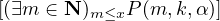 ∘ |
lo es. Ya que
| χL11(Σ∪Σp)* = λα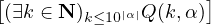 |
podemos en forma similar aplicar el Lema 62 y obtener finalmente que χL11(Σ∪Σp)* es (Σ ∪ Σp)-p.r..
En forma similar podemos probar que L1,...,L14 son (Σ ∪ Σp)-p.r.. Esto nos dice que L1 ∪ ... ∪ L14 es (Σ ∪ Σp)-p.r.. Notese que L1 ∪ ... ∪ L14 es el conjunto de las instrucciones basicas de Σ. Llamemos InsBasΣ a dicho conjunto. Para ver que L15 es (Σ ∪ Σp)-p.r. notemos que
χL15(Σ∪Σp)*
= λα![[(∃k ∈ N)k≤10|α|(∃β ∈ InsBas Σ)|β|≤|α|α = Lkβ ]](apunte1244x.png)
|
lo cual nos dice que aplicando dos veces el Lema 62 obtenemos que χL15(Σ∪Σp)* es (Σ ∪ Σp)-p.r.. Ya que InsΣ = InsBasΣ ∪ L15 tenemos que InsΣ es (Σ ∪ Σp)-p.r.. __
@@finpagina@@
Proof. Sea ≤ un orden total sobre Σ ∪ Σp. Sea L = {L : k ∈ N}∪{ε}. Dejamos al lector probar que L es un conjunto (Σ ∪ Σp)-p.r.. Sea
| P = λIα |
Note que DP = (Σ ∪ Σp)*2. Dejamos al lector probar que P es (Σ ∪ Σp)-p.r..
Notese ademas que cuando I ∈ InsΣ tenemos que P(I,α) = 1 sii α = Bas(I).
Dejamos al lector probar que Bas = M≤ por lo que para ver que Bas es
(Σ∪Σp)-p.r., solo nos falta ver que la funcion Bas es acotada por alguna funcion
(Σ ∪ Σp)-p.r. y (Σ ∪ Σp)-total. Pero esto es trivial ya que  ≤
≤  =
λα[
=
λα[ ](I), para cada I ∈ InsΣ.
](I), para cada I ∈ InsΣ.
Finalmente note que
Lab = M≤![(λIα [αBas (I) = I])](apunte1250x.png)
|
lo cual nos dice que Lab es (Σ ∪ Σp)-p.r.. __
Recordemos que dado un programa habiamos definido Ii = ε, para i = 0 o i > n(). O sea que la funcion (Σ ∪ Σp)-mixta λi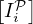 tiene dominio igual a ω × ProΣ. Notese que usamos notacion lambda respecto del alfabeto Σ ∪ Σp. Ademas notese que usamos la variable en la notacion lambda por un tema de comodidad psicologica dado que la expresion Iiα esta definida solo cuando α es un programa pero podriamos haber escrito λiα y sigue siendo la misma funcion.
Proof. Ya que ProΣ = Dλ tenemos que (b) implica (a). Para probar (b) Sea ≤ un orden total sobre Σ ∪ Σp. Sea P el siguiente predicado
λx
(∀t ∈ N)t≤Lt(x)(∀m ∈ N)(L t-final *≤((x)t))∨
Notese que DP = N y que P(x) = 1 sii Lt(x) > 0, *≤((x)t) ∈ InsΣ, para cada
t = 1,...,Lt(x) y ademas ⊂t=1t=Lt(x) *≤((x)t) ∈ ProΣ. Para ver que P es
(Σ ∪ Σp)-p.r. solo nos falta acotar el cuantificador (∀m ∈ N) de la expresion lambda
que define a P. Ya que nos interesan los valores de m para los cuales es
posiblemente una subpalabra de alguna de las palabras *≤((x)j), el Lema 94 nos dice
que una cota posible es 10max{ :1≤j≤Lt(x)}- 1. Dejamos al lector los detalles
de la prueba de que P es (Σ ∪ Σp)-p.r.. Sea
:1≤j≤Lt(x)}- 1. Dejamos al lector los detalles
de la prueba de que P es (Σ ∪ Σp)-p.r.. Sea
Q = λxα![[ t=Lt(x) ≤ ]
P(x)∧ α =⊂ t=1 * ((x)t)](apunte1259x.png) . .
|
Note que DQ = N × (Σ ∪ Σp)*. Claramente Q es (Σ ∪ Σp)-p.r.. Ademas note que DM(Q) = ProΣ. Notese que para ∈ ProΣ, tenemos que M(Q)() es aquel numero tal que pensado como infinitupla (via mirar su secuencia de exponentes) codifica la secuencia de instrucciones que forman a . Es decir
| M(Q)() = |
Por (b) del Lema 67, M(Q) es (Σ ∪ Σp)-p.r. ya que para cada ∈ ProΣ tenemos que
![[(x)]
i](apunte1263x.png) , lo cual dice que λ
, lo cual dice que λ![[n(P)]](apunte1264x.png) y λi
y λi![[IP]
i](apunte1265x.png) son
funciones (Σ ∪ Σp)-p.r.. __
son
funciones (Σ ∪ Σp)-p.r.. __
Analisis de la recursividad de la semantica de Σ Para estudiar la recursividad de la semantica de Σ deberemos definir varias funciones que tienen que ver con el funcionamiento de un programa y estudiar su recursividad.
Las funciones in,m, E#n,m y E*n,m Sean n,m ≥ 0 fijos. Definamos entonces las funciones
![in,m : ω × ωn × Σ *m × ProΣ → ω
En,m : ω × ωn × Σ *m × ProΣ → ω [N]
#
En,*m : ω × ωn × Σ *m × ProΣ → Σ *[N]](apunte1266x.png)

(in,m(t, , , ,),E
#n,m(t, ,),E
#n,m(t, , , ,),E
*n,m(t, ,),E
*n,m(t, , , ,)) ,))
|
es la descripcion instantanea que se obtiene luego de correr una cantidad t de pasos partiendo del estado
| ((x1,...,xn,0,...),(α1,...,αm,ε,...)) |
Es importante notar que si bien in,m es una funcion (Σ ∪ Σp)-mixta, ni E#n,m ni E*n,m lo son.
Definamos para cada j ∈ N, funciones
Para esto primero debemos probar un lema el cual muestre que una ves codificadas las descripciones instantaneas en forma numerica, las funciones que dan la descripcion instantanea sucesora son (Σ ∪ Σp)-p.r.. Dado un orden total ≤ sobre Σ ∪ Σp, codificaremos las descripciones instantaneas haciendo uso de las biyecciones
|
Es decir que a la descripcion instantanea
| (i,(s1,s2,...),(σ1,σ2,...)) |
la codificaremos con la terna
| (i,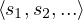,) ∈ ω × N × N |
Es decir que una terna (i,x,y) ∈ ω × N × N codificara a la descripcion instantanea
| (i,((x)1,(x)2,...),(*≤((y) 1),*≤((y) 2),...)) |
Definamos
|
|
|
Notese que la definicion de estas funciones depende del orden total ≤ sobre Σ ∪ Σp.
@@finpagina@@
Proof. Necesitaremos algunas funciones (Σ ∪ Σp)-p.r.. Dada una instruccion I en la cual al menos ocurre una variable, usaremos #V ar1(I) para denotar el numero de la primer variable que ocurre en I. Por ejemplo
#V ar1 = k = k
|
Notese que λI[#V ar1(I)] tiene dominio igual a InsΣ -L, donde L es la union de los siguientes conjuntos
Dada una instruccion I en la cual ocurren dos variables, usaremos #V ar2(I) para denotar el numero de la segunda variable que ocurre en I. Por ejemplo| #V ar2 = m |
Notese que el dominio de λI[#V ar2(I)] es igual a la union de los siguientes conjuntos
λkα![[α ∈ InsΣ ∧ (Nk← ocu α ∨ Nk⁄= ocu α ∨P k← ocu α∨ PkBocu α)]](apunte1289x.png)
|
entonces λI[#V ar1(I)] = M(P) por lo cual λI[#V ar1(I)] es (Σ ∪ Σp)-p.r. Similarmente se puede ver que λI[#V ar2(I)] es (Σ ∪ Σp)-p.r.. Sea
|
Ya que
F (x,j) = (x,j) = 
|
tenemos que F es (Σ ∪ Σp)-p.r.. Sea
es (Σ ∪ Σp)-p.r.. Sea
|
Ya que F+(x,j) = x.pr(j) tenemos que F+ es (Σ ∪ Σp)-p.r.. Sea
|
Ya que F←(x,j,k) = Q(x,pr(j)(x)j).pr(j)(x)k tenemos que F← es (Σ ∪ Σp)-p.r.. Sea
|
Es facil ver que F0 es (Σ ∪ Σp)-p.r.. Para cada a ∈ Σ, sea
|
Es facil ver que Fa es (Σ ∪ Σp)-p.r.. En forma similar puede ser probado que
|
es (Σ ∪ Σp)-p.r.
Dado (i,x,y,) ∈ ω × N × N × ProΣ, tenemos varios casos en los cuales los valores s(i,x,y,),S#(i,x,y,) y S*(i,x,y,) pueden ser obtenidos usando las funciones antes definidas:

 1. Entonces
1. Entonces 


![( P ≤ )
Bas(Ii ) = IFP jBEGINSaGOTOL m ∧ [* ((y)j)]1 ⁄= a](apunte1314x.png) .
Entonces
.
Entonces 


O sea que los casos anteriores nos permiten definir conjuntos S1,...,S15, los cuales son disjuntos de a pares y cuya union da el conjunto ω × N × N × ProΣ, de manera que cada una de las funciones s,S# y S* pueden escribirse como union disjunta de funciones (Σ ∪ Σp)-p.r. restrinjidas respectivamente a los conjuntos S1,...,S15. Ya que los conjuntos S1,...,S15 son (Σ ∪ Σp)-p.r. el Lema 58 nos dice que s,S# y S* lo son. __
Aparte del lema anterior, para probar que las funciones in,m, E#jn,m y E*jn,m
son (Σ ∪ Σp)-p.r., nos sera necesario el siguiente resultado. Recordemos que para
x1,...,xn ∈ ω, usabamos para denotar . Ademas
recordemos que en el Lema 70 probamos que para cada n ≥ 1, la funcion
λx1...xn![[⟨x1,...,xn⟩]](apunte1322x.png) es ∅-p.r.
es ∅-p.r.

 ,
, ) ∈ S1 × ... × Sn × L1 × ... × Lm. Entonces
si las funciones f1,...,fk,g1,...,gk son Σ-p.r., las funciones F1,...,Fk lo
son.
) ∈ S1 × ... × Sn × L1 × ... × Lm. Entonces
si las funciones f1,...,fk,g1,...,gk son Σ-p.r., las funciones F1,...,Fk lo
son.
Proof. Para mayor claridad haremos el caso k = 2. Sea
F = λt  ![[⟨F1(t,⃗x,⃗α),F2(t,⃗x,⃗α)⟩]](apunte1329x.png)
|
Es claro que si F es Σ-p.r., entonces lo es cada Fi. Notese que

![f = λ⃗x⃗α [⟨f1(⃗x,⃗α),f2(⃗x,⃗α)⟩]
g = λAt⃗x⃗α [⟨g1((A )1,(A)2,t,⃗x,⃗α ),g2((A )1,(A)2,t,⃗x,⃗α )⟩]](apunte1331x.png)
@@finpagina@@
Ahora usando los dos lemas anteriores podemos probar el siguiente importante resultado.
Proof. Sea ≤ un orden total sobre Σ ∪ Σp y sean s, S# y S* las funciones definidas previamente al Lema 98. Definamos

![[ ]
En#,mj = λt⃗x⃗αP (Kn#,m(t,⃗x,⃗α,P))j
n,m [ ≤ n,m ]
E*j = λt⃗x⃗αP * ((K* (t,⃗x,⃗α,P ))j)](apunte1334x.png)
Las funciones Haltn,m y Tn,m Dados n,m ∈ ω, definamos:
Haltn,m = λt 
|
Notese que DHaltn,m = ω × ωn × Σ*m × ProΣ (ojo que aqui la notacion lambda es
respecto del alfabeto Σ ∪ Σp). Ademas notese que usamos la variable en la
notacion lambda por un tema de comodidad psicologica dado que in,m esta
definida solo cuando la ultima coordenada es un programa pero podriamos
haber escrito λt
 α y sigue siendo la misma
funcion.
α y sigue siendo la misma
funcion.
Cabe destacar que Haltn,m tiene una descripcion muy intuitiva, ya que dado
(t, ,
, ,) ∈ ω × ωn × Σ*m × ProΣ, tenemos que Haltn,m(t,
,) ∈ ω × ωn × Σ*m × ProΣ, tenemos que Haltn,m(t, ,
, ,) = 1 si y
solo si el programa se detiene luego de t pasos partiendo desde el estado
,) = 1 si y
solo si el programa se detiene luego de t pasos partiendo desde el estado
 .
.
Proof. Notar que Haltn,m = λxy[x = y]∘. __
Ahora definamos Tn,m = M(Haltn,m). Notese que
DTn,m = {( , , ,) : se detiene partiendo de ,) : se detiene partiendo de  } }
|
y para ( ,
, ,) ∈ DTn,m tenemos que Tn,m(
,) ∈ DTn,m tenemos que Tn,m( ,
, ,) = cantidad de pasos necesarios
para que se detenga partiendo de
,) = cantidad de pasos necesarios
para que se detenga partiendo de  . En algun sentido, la
funcion Tn,m mide el tiempo que tarda en detenerse
. En algun sentido, la
funcion Tn,m mide el tiempo que tarda en detenerse
Proof. Es directo del Lema 67 ya que Haltn,m es (Σ ∪ Σp)-p.r. __
Las funciones Φ#n,m y Φ*n,m Para n,m ∈ ω definamos la funcion Φ#n,m de la siguiente manera:
DΦ#n,m = {( , , ,) : se detiene partiendo de ,) : se detiene partiendo de  } }
|
y para cada ( ,
, ,) ∈ DΦ#n,m, se tiene que Φ#n,m(
,) ∈ DΦ#n,m, se tiene que Φ#n,m( ,
, ,) = valor que queda en la
variable N1 cuando se detiene partiendo de .
,) = valor que queda en la
variable N1 cuando se detiene partiendo de .
Similarmente, definamos la funcion Φ*n,m de la siguiente manera:
Proof. Veremos que Φ#n,m es (Σ ∪ Σp)-recursiva. Notar que DTn,m = DΦ#n,m.
Notese que para ( ,
, ,) ∈ DTn,m = DΦ#n,m tenemos que
,) ∈ DTn,m = DΦ#n,m tenemos que
Φ#n,m( , , ,) = E
#1n,m ,) = E
#1n,m
|
lo cual con un poco mas de trabajo nos permite probar que
| Φ#n,m = E #1n,m ∘ |
Ya que la funcion E#1n,m es (Σ ∪ Σp)-p.r. y Tn,m es (Σ ∪ Σp)-r., tenemos que Φ#n,m es (Σ ∪ Σp)-r. __
Godel vence a Neumann Ahora nos sera facil probar que el paradigma de Godel es por lo menos tan abarcativo como el imperativo de Von Neumann. Mas concretamente:
Proof. Haremos el caso O = Σ*. Sea 0 un programa que compute a f. Primero veremos que f es (Σ ∪ Σp)-recursiva. Note que
| f = Φ*n,m ∘ |
donde cabe destacar que p1n,m,...,pn+mn,m son las proyecciones respecto del alfabeto Σ ∪ Σp, es decir que tienen dominio ωn × (Σ ∪ Σp)*m. Ya que Φ*n,m es (Σ ∪ Σp)-recursiva tenemos que f lo es. O sea que el Teorema 84 nos dice que f es Σ-recursiva. __
Un corolario interesante que se puede obtener del teorema anterior es que toda funcion Σ-recursiva puede obtenerse combinando las reglas basicas en una forma muy particular.
Corollary 105. Si f : Df ⊆ ωn×Σ*m → O es Σ-recursiva, entonces existe un predicado Σ-p.r. P : N × ωn × Σ*m → ω y una funcion Σ-p.r. g : N → O tales que f = g ∘ M(P).
Proof. Supongamos que O = Σ*. Sea 0 un programa el cual compute a f. Sea ≤ un orden total sobre Σ. Note que podemos tomar
![n,m ≤ n,m
P = λt⃗x[⃗α[≤Halt ] ((t)1,⃗x,α⃗, P0)∧ (t)2 = # (E*1 ((t)1,⃗x,⃗α,P0))]
g = λt * ((t)2)](apunte1373x.png)
A continuacion veremos ejemplos naturales de funciones (Σ ∪ Σp)-recursivas que no son (Σ ∪ Σp)-recursivas primitivas. Cabe destacar que la prueba se basa en la Proposicion 66 (enunciada sin demostracion) la cual nos dice que cualquiera sea el alfabeto finito Σ, siempre hay una funcion que es Σ-recursiva y no es Σ-recursiva primitiva
Proposition 106. Cualesquiera sean n,m ∈ ω, se tiene que las funciones Tn,m, Φ#n,m y Φ*n,m no son (Σ ∪ Σp)-p.r.
Proof. Fijemos n,m ∈ ω. Probaremos que Φ#n,m es (Σ ∪ Σp)-p.r. sii Φ#0,0 es (Σ ∪ Σp)-p.r.. Sean f1,f2 : ωn × Σ*m → (Σ ∪ Σp)* dadas por
f( , , ,) = f1( ,) = f1( , , )f1( )f1( , , ) )
|
Es facil ver que f es (Σ ∪ Σp)-p.r.. Notese que Φ#n,m = Φ#0,0 ∘ f. Ademas notese que
| Φ#0,0 = Φ #n,m ∘ |
Ya que f y las funciones C00,1,Cε0,1,p10,1 son (Σ ∪ Σp)-p.r., tenemos que Φ#n,m es (Σ ∪ Σp)-p.r. sii Φ#0,0 lo es.
Supongamos ahora que para algunos k,l ∈ ω se tiene que Φ#k,l es (Σ ∪ Σp)-p.r..
Llegaremos a un absurdo. Por lo antes probado tenemos que Φ#n,m es (Σ ∪ Σp)-p.r.,
cualesquiera sean n,m ∈ ω. Notese que de la prueba del teorema anterior
sigue que toda funcion Σ-computable con imagen contenida en ω es de la
forma Φ#n,m ∘![[pn1,m,...,pnn,+mm, CnP,m]
0](apunte1382x.png) , para algunos n,m ∈ ω y 0 ∈ ProΣ.
Pero entonces toda funcion Σ-computable con imagen contenida en ω es
(Σ ∪ Σp)-p.r., lo cual por el Teorema 104 nos dice que toda funcion Σ-computable
con imagen contenida en ω es (Σ ∪ Σp)-p.r.. Esto contradice la Proposicion
66.
, para algunos n,m ∈ ω y 0 ∈ ProΣ.
Pero entonces toda funcion Σ-computable con imagen contenida en ω es
(Σ ∪ Σp)-p.r., lo cual por el Teorema 104 nos dice que toda funcion Σ-computable
con imagen contenida en ω es (Σ ∪ Σp)-p.r.. Esto contradice la Proposicion
66.
Ahora supongamos que hay n,m ∈ ω tales que Tn,m es (Σ ∪ Σp)-p.r.. Llegaremos a un absurdo. Como ya vimos en la prueba de un teorema reciente, se tiene que
| Φ#n,m = E #1n,m ∘ |
Pero entonces ya que E#1n,m es (Σ ∪ Σp)-p.r., tenemos que Φ#n,m es (Σ ∪ Σp)-p.r., lo cual como ya vimos recien no es cierto. El absurdo nos dice que Tn,m no es (Σ ∪ Σp)-p.r.. __
Proof. Por definicion Tn,m = M(Haltn,m). __
Uso de macros asociados a las funciones Haltn,m, E#n,m y E*n,m Aqui veremos, con ejemplos, como ciertos macros nos permitiran dentro de un programa hablar acerca del funcionamiento de otro programa. Esto junto con el hecho que cada funcion Σ-recursiva y cada predicado Σ-recursivo tienen su macro asociado (Corolario 91), sera muy util a la hora del diseo de programas y nos permitira simular dentro del paradigma imperativo muchas ideas usadas para el diseo de procedimientos efectivos. En este sentido la convinacion de los dos paradigmas (recursivo e imperativo) nos permite fortalecer notablemente al paradigma imperativo en su roll modelizador (o simulador) de los procedimientos efectivos. Esto es importante ya que el paradigma mas comodo, amplio e intuitivo, a la hora de decidir si algo es o no computable, es sin duda el filosofico o efectivo.
Veamos el primer ejemplo. Sea Σ = {@,!} y sea 0 ∈ ProΣ tal que 0 ∈ DomΨ01,0,# y Ψ01,0,#(0) = 2. Probaremos que
| S = {x ∈ DomΨ01,0,# : Ψ 01,0,#(x)≠0} |
es Σ-enumerable. Notese que 0 ∈ S. Por definicion de conjunto Σ-enumerable, deberemos encontrar un programa ∈ ProΣ tal que DomΨ1,0,# = ω y ImΨ1,0,# = S. Dicho en palabras, el programa debera cumplir:
 , con x ∈ ω, debe
detenerse y el contenido de la variable N1 bajo detencion debera ser un
elemento de S
, con x ∈ ω, debe
detenerse y el contenido de la variable N1 bajo detencion debera ser un
elemento de S

A continuacion daremos una descripcion intuitiva del funcionamiento de
(pseudocodigo) para luego escribirlo correctamente usando macros. El programa
comenzara del estado  y hara las siguientes tareas
y hara las siguientes tareas
 en (x)2 pasos ir a Etapa 4, en caso
contrario ir a Etapa 6
en (x)2 pasos ir a Etapa 4, en caso
contrario ir a Etapa 6
 , es distinto de 0, entonces ir a Etapa 5. En
caso contrario ir a Etapa 6.
, es distinto de 0, entonces ir a Etapa 5. En
caso contrario ir a Etapa 6.
Notese que la descripcion anterior no es ni mas ni menos que un procedimiento efectivo que enumera a S, y nuestra mision es simularlo dentro del lenguaje Σ. Para esto usaremos varios macros. Ya que la funcion f = λx[(x)1] es Σ-p.r., el Corolario 91 nos dice que hay un macro:
| [V2 ← f(V1)] |
el cual escribiremos de la siguiente manera mas intuitiva:
| [V2 ← (V1)1] |
Similarmente hay un macro:
| [V2 ← (V1)2] |
Tambien, ya que el predicado P = λx[x = 0] es Σ-recursivo, hay un macro:
el cual escribiremos de la siguiente manera:
![[IFV1 = 0GOTOA1 ]](apunte1390x.png)
|
Definamos
| H = λtx |
Notar que DH = ω2 y que H es Σ-mixta. Ademas sabemos que la funcion Halt1,0 es (Σ ∪ Σp)-p.r. por lo cual resulta facilmente que H es (Σ ∪ Σp)-p.r.. Por la Proposicion de Independencia del Alfabeto tenemos que H es Σ-p.r.. O sea que el Corolario 91 nos dice que hay un macro:
Para hacer mas intuitivo el uso de este macro lo escribiremos de la siguiente manera
Sea
| g = λtx |
Ya que g es Σ-recursiva (por que?), hay un macro:
![[V3 ← g(V1,V2)]](apunte1395x.png)
|
Para hacer mas intuitivo el uso de este macro lo escribiremos de la siguiente manera
Ahora si podemos dar nuestro progama que enumera a S:
|
Enumeracion de conjuntos de programas Ya que los programas de Σ son palabras del alfabeto Σ ∪ Σp, nos podemos preguntar cuando un conjunto L de programas es (Σ ∪ Σp)-enumerable. Daremos un ejemplo. Sea Σ = {@,!} y sea
| L = {∈ ProΣ : Ψ 1,0,#(10) = 10} |
Veremos que L es (Σ ∪ Σp)-enumerable, dando un programa ∈ ProΣ∪Σp que
enumere a L, es decir tal que Dom(Ψ 1,0,*) = ω y Im(Ψ1,0,*) = L. Cabe destacar
que aqui hay en juego dos versiones de nuestro lenguaje imperativo, es decir
enumeraremos un conjunto de programas de Σ usando un programa de Σ∪Σp. Sea
≤ un orden total sobre el conjunto Σ ∪ Σp.
1,0,*) = ω y Im(Ψ1,0,*) = L. Cabe destacar
que aqui hay en juego dos versiones de nuestro lenguaje imperativo, es decir
enumeraremos un conjunto de programas de Σ usando un programa de Σ∪Σp. Sea
≤ un orden total sobre el conjunto Σ ∪ Σp.
A continuacion daremos una descripcion intuitiva del funcionamiento de
(pseudocodigo) para luego escribirlo correctamente usando macros. Notese que
SKIP ∈ L. El programa comenzara del estado  y hara las siguientes
tareas
y hara las siguientes
tareas
 en (x)2 pasos
ir a Etapa 4, en caso contrario ir a Etapa 6
en (x)2 pasos
ir a Etapa 4, en caso contrario ir a Etapa 6
 es igual a 10, entonces ir a Etapa 5. En
caso contrario ir a Etapa 6.
es igual a 10, entonces ir a Etapa 5. En
caso contrario ir a Etapa 6.
Notese que la descripcion anterior no es ni mas ni menos que un procedimiento efectivo que enumera a L, y nuestra mision es simularlo dentro del lenguaje Σ∪Σp. Para esto usaremos varios macros. Es importante notar que los macros que usaremos corresponden al lenguaje Σ∪Σp ya que los usaremos en el cual sera un programa de Σ∪Σp.
Ya que las funciones λx[(x)1] y λx[(x)2] son (Σ ∪ Σp)-recursivas el Corolario 91 nos dice que hay macros asociados a estas funciones los cuales escribiremos de la siguiente manera mas intuitiva:
![[V2 ← (V1)1]
[V2 ← (V1)2]](apunte1402x.png)
Por un lema anterior sabemos que ProΣ es un conjunto (Σ ∪ Σp)-p.r. por lo cual χProΣ(Σ∪Σp)* es (Σ ∪ Σp)-p.r., por lo cual hay un macro
el cual escribiremos de la siguiente manera
Ya que el predicado Halt1,0 es (Σ ∪ Σp)-recursivo tenemos un macro asociado a el, el cual escribiremos de la siguiente forma
![[ 1,0 ]
IFHalt (V1, V2,W1 )GOTOA1](apunte1406x.png)
|
Ya que E#11,0 es (Σ ∪ Σp)-recursivo tenemos un macro asociado a ella, el cual escribiremos de la siguiente forma
Tambien usaremos macros
(dejamos al lector hacerlos a mano o tambien se puede justificar su existencia via la proposicion de existencia de macros aplicada a las funciones C100,0 y CSKIP0,0).Ahora si podemos hacer el programa que enumera a L:
|
Cuando Σ ⊇ Σp podemos correr un programa ∈ ProΣ partiendo de un estado
que asigne a sus variables alfabeticas programas (ya que los programas son meras
palabras de Σ*). En particular podriamos correr un programa desde el estado  .
Llamaremos A al conjunto formado por aquellos programas tales que se detiene
partiendo del estado
.
Llamaremos A al conjunto formado por aquellos programas tales que se detiene
partiendo del estado  . Es decir
. Es decir
| A = {∈ ProΣ : ∃t ∈ ω tal que Halt0,1(t,,) = 1} |
Por ejemplo SKIP ∈ A. Dicho rapida y sugestivamente A es el conjunto formado por aquellos programas que se detienen partiendo de si mismos. Dejamos al lector hacer un programa que enumere a A. Como veremos mas adelante este conjunto, si bien es Σ-enumerable, no es Σ-computable.
Para probar que toda funcion Σ-Turing computable es Σ-recursiva debemos estudiar
la recursividad del funcionamiento de las maquinas de Turing. Cabe destacar que tal
como se lo explico en la Subseccion 3.1 supondremos siempre que el conjunto de
estados de una maquina de Turing M =  es un alfabeto disjunto
con Γ.
es un alfabeto disjunto
con Γ.
Primero probaremos algunos lemas basicos.
Lema 108. Sea M =  una maquina de Turing. Entonces
una maquina de Turing. Entonces
Notese que la funcion δ de una maquina de Turing M =  no es
(Γ ∪Q)-mixta. Sin envargo los siguientes predicados (Γ ∪Q)-mixtos contienen toda la
informacion de δ:
no es
(Γ ∪Q)-mixta. Sin envargo los siguientes predicados (Γ ∪Q)-mixtos contienen toda la
informacion de δ:
|
|
|
|
Proof. Ya que los tres predicados tienen dominio finito, el Corolario 59 nos dice que son (Γ ∪ Q)-p.r. __
Recordemos que dado α ∈ (Q ∪ Γ)*, definimos  de la siguiente manera
de la siguiente manera
 es el resultado de remover de α el tramo final mas grande de la forma
Bn.
es el resultado de remover de α el tramo final mas grande de la forma
Bn.
Tambien dada cualquier palabra α definimos
![{ [α] ...[α] si |α | ≥ 2
↷α = ε 2 |α| si |α | ≤ 1
{
α↶ = [α]1 ...[α]|α|-1 si |α | ≥ 2
ε si |α | ≤ 1](apunte1426x.png)
Lema 110. Las funciones λα[ ], λα[↷α] y λα[α↶] son (Γ∪Q)-p.r.. (Notar
que la notacion λ aqui es respecto del alfabeto Γ∪Q por lo cual las tres funciones
tienen dominio igual a (Γ ∪ Q)*.)
], λα[↷α] y λα[α↶] son (Γ∪Q)-p.r.. (Notar
que la notacion λ aqui es respecto del alfabeto Γ∪Q por lo cual las tres funciones
tienen dominio igual a (Γ ∪ Q)*.)
Notese que dada una maquina de Turing M, la expresion d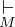 d′ fue definida solo
en el caso en que d y d′ son descripciones instantaneas. Es decir que el predicado
λdd′![[d ⊢ d′]](apunte1429x.png) tiene dominio igual a Des × Des.
tiene dominio igual a Des × Des.
Proof. Sea L : Des × Des × Γ × Γ*× Γ*× Q × Q → ω definido por
 L(d,d′,σ,α,β,p,q) = 1 sii
L(d,d′,σ,α,β,p,q) = 1 sii
d = αpβ ∧ (q,σ,L) ∈ δ![(p,[βB]1)](apunte1433x.png) ∧ α≠ε ∧ d′ = ∧ α≠ε ∧ d′ =
|
Sea  R : Des×Des× Γ × Γ*× Γ*×Q×Q → ω definido por
R : Des×Des× Γ × Γ*× Γ*×Q×Q → ω definido por  R(d,d′,σ,α,β,p,q) = 1
sii
R(d,d′,σ,α,β,p,q) = 1
sii
d = αpβ ∧ (q,σ,R) ∈ δ![(p,[βB]1)](apunte1437x.png) ∧ d′ = ασq↷β ∧ d′ = ασq↷β
|
Sea  K : Des×Des× Γ × Γ*× Γ*×Q×Q → ω definido por
K : Des×Des× Γ × Γ*× Γ*×Q×Q → ω definido por  K(d,d′,σ,α,β,p,q) = 1
sii
K(d,d′,σ,α,β,p,q) = 1
sii
d = αpβ ∧ (q,σ,K) ∈ δ![(p,[βB ]1)](apunte1440x.png) ∧ d′ = ∧ d′ =
|
Se deja al lector la verificacion de que estos predicados son (Γ ∪ Q)-p.r.. Notese que λdd′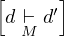 es igual al predicado
λdd′![[ ]
(∃σ ∈ Γ )(∃α,β ∈ Γ *)(∃p,q ∈ Q )(P˜R ∨ ˜PL ∨P˜K )(d,d′,σ,α,β,p,q)](apunte1443x.png)
|
lo cual por el Lema 62 nos dice que λdd′ es (Γ ∪ Q)-p.r. __
Proof. Sea Q = λdd′![[ ′]
d ⊢M d](apunte1446x.png) ∪C00,2|(Γ∪Q)*2-Des2 es decir Q es el resultado de
extender con el valor 0 al predicado λdd′ de manera que este definido en
todo (Γ∪Q)*2. Sea ≤ un orden total sobre Γ∪Q y sea Q1 : N×Des×Des → ω
definido por Q1(x,d,d′) = 1 sii
∪C00,2|(Γ∪Q)*2-Des2 es decir Q es el resultado de
extender con el valor 0 al predicado λdd′ de manera que este definido en
todo (Γ∪Q)*2. Sea ≤ un orden total sobre Γ∪Q y sea Q1 : N×Des×Des → ω
definido por Q1(x,d,d′) = 1 sii
∧*≤((x)1) = d∧
* ≤((x)Lt(x)) = d′∧
Notese que dicho rapidamente Q1(x,d,d′) = 1 sii x codifica una computacion que parte de d y llega a d′. Se deja al lector la verificacion de que este predicado es (Γ ∪ Q)-p.r.. Notese que
| λndd′ = λndd′ |
Es decir que solo nos falta acotar el cuantificador existencial, para poder aplicar el
lema de cuantificacion acotada. Ya que cuando d1,...,dn+1 ∈ Des son tales que
d1 d2
d2 
 dn+1 tenemos que
dn+1 tenemos que
 ≤ + n, para i = 1,...,n ≤ + n, para i = 1,...,n
|
una posible cota para dicho cuantificador es
∏
i=1n+1pr(i) +n
. +n
.
|
O sea que, por el lema de cuantificacion acotada, tenemos que el predicado λndd′ es (Γ ∪ Q)-p.r. __
@@finpagina@@
Proof. Supongamos O = Σ* y sea M =  una maquina de Turing
deterministica con unit la cual compute a f. Sea ≤ un orden total sobre Σ. Notese
que por el Teorema 84, la funcion *≤ es (Γ ∪ Q)-p.r.. Sea P : N × ωn × Σ*m → ω
dado por P(x,
una maquina de Turing
deterministica con unit la cual compute a f. Sea ≤ un orden total sobre Σ. Notese
que por el Teorema 84, la funcion *≤ es (Γ ∪ Q)-p.r.. Sea P : N × ωn × Σ*m → ω
dado por P(x, ,
, ) = 1 sii
) = 1 sii
Dejamos al lector la prueba de que P es (Γ ∪Q)-p.r.. Ya que P es Σ-mixto, el Teorema 84 nos dice que P es Σ-p.r.. Notese que
f = λ  ![[ (( ) )]
*≤ min P(x,⃗x,⃗α)
x 2](apunte1472x.png) , ,
|
lo cual nos dice que f es Σ-recursiva. __
Probaremos que toda funcion Σ-computable es Σ-Turing computable. Para esto probaremos un resultado general que nos enseara a simular el comportamiento de un programa con una maquina de Turing. Es importante notar que la simulacion que nos interesa que haga la maquina simuladora no es a nivel de la funcion que computa el programa sino a un nivel mas general, es decir nos interesa que simule a dicho programa como transformador de estados. En particular y usada adecuadamente, la maquina simuladora nos servira para confeccionar una maquina que compute una funcion computada por un programa dado.
Construccion de la maquina simuladora de un programa Dado ∈ ProΣ, definamos
|
entonces tenemos N() = 4
Sea un programa y sea k fijo y mayor o igual a N(). La construccion de la maquina simuladora dependera de y de k. Notese que cuando se corre desde algun estado de la forma

|
los sucesivos estados por los que va pasando son todos de la forma
es decir en todos ellos las variables con indice mayor que k valen 0 o ε. La razon es simple: ya que en no figuran las variables
La maquina simuladora que construiremos simulara a en cuanto a su
funcionamiento cuando partimos de estados de la forma  .
Necesitaremos tener alguna manera de representar en la cinta los diferentes estados
por los cuales se va pasando, a medida que corremos a . Esto lo haremos de la
siguiente forma: al estado
.
Necesitaremos tener alguna manera de representar en la cinta los diferentes estados
por los cuales se va pasando, a medida que corremos a . Esto lo haremos de la
siguiente forma: al estado

|
lo representaremos en la cinta de la siguiente manera
| B x1 ...B xk Bα1...BαkBBBB.... |
Por ejemplo consideremos el programa mostrado recien y fijemos k = 6. Entonces al estado
lo representaremos en la cinta de la siguiente manera
| BBBBBBB▴B▴▴BB#▴B#B###BBBBB.... |
A lo que queda entre dos blancos consecutivos (es decir que no hay ningun blanco entre ellos) lo llamaremos ”bloque”, por ejemplo en la cinta de arriba tenemos que los primeros 12 bloques son
| ε ▴ ▴▴ ε #▴ # ### |
y despues los bloques siguientes (que son infinitos ya que la cinta es infinita hacia la derecha) son todos iguales a ε.
Una observacion importante es que esta forma de representacion de estados en la cinta depende del k elejido, es decir si tomaramos otro k, por ejemplo k = 9, entonces el estado anterior se representaria de otra forma en la cinta. Aqui se ve claramente que la maquina simuladora que construiremos dependera del k elejido.
Construccion de las maquinas simuladoras de instrucciones Armaremos la maquina simuladora como concatenacion de maquinas las cuales simularan, via la representacion anterior, el funcionamiento de las distintas instrucciones de . Asumiremos que en no hay instrucciones de la forma GOTOL ni de la forma L GOTOL. Esto simplificara un poco la construccion de la maquina simuladora y de hecho lo podemos hacer ya que toda funcion Σ-computable puede ser computada por un programa sin este tipo de instrucciones, tal como lo veremos mas adelante (Lema 114).
Para poder hacer concretamente las maquinas simuladoras de instrucciones deberemos disear antes algunas maquinas auxiliares. Todas las maquinas descriptas a continuacion tendran a como unit y a B como blanco, tendran a Σ como su alfabeto terminal y su alfabeto mayor sera Γ = Σ ∪{B, }∪{ : a ∈ Σ ∪{}}. Ademas tendran uno o dos estados finales con la propiedad de que si q es un estado final, entonces δ(q,σ) = ∅, para cada σ ∈ Γ.
Para cada j ≥ 1, sea Dj la siguiente maquina:
@@figura:figure1.png@@
Notese que
|
siempre que α,γ ∈ Γ*, β1,...,βj ∈ (Γ -{B})*. Es decir la maquina Dj lo unico que hace es mover el cabezal desde el blanco de la izquierda de un bloque determinado, exactamente j bloques a la derecha
Analogamente Ij sera una maquina que desplaza el cabezal j bloques a la izquierda del blanco que esta escaneando. Es decir Ij cumplira que
|
siempre que α,γ ∈ Γ*, β1,...,βj ∈ (Γ -{B})*. Dejamos al lector la manufactura de esta maquina.
Para j ≥ 1, sea TDj una maquina con un solo estado final qf y tal que
|
cada vez que α,γ ∈ Γ* y γ tiene exactamente j ocurrencias de B. Es decir la maquina TDj corre un espacio a la derecha todo el segmento γ y agrega un blanco en el espacio que se genera a la izquierda. Por ejemplo, para el caso de Σ = {a} podemos tomar TD3 igual a la siguiente maquina:
@@figura:figure2.png@@
Analogamente, para j ≥ 1, sea TIj una maquina tal que
|
cada vez que α ∈ Γ*, σ ∈ Γ y γ tiene exactamente j ocurrencias de B. Es decir la maquina TIj corre un espacio a la izquierda todo el segmaneto γ (por lo cual en el lugar de σ queda el primer simbolo de γ). Dejamos al lector la construccion de por ejemplo TI3 para Σ = {a}.
A continuacion describiremos las distintas maquinas simuladoras de instrucciones (y para algunos casos mostraremos concretamente como pueden ser hechas usando las maquinas anteriores).
Para 1 ≤ i ≤ k, sea Mi,k+ una maquina tal que cualesquiera sean x1,...,xk ∈ ω y α1,...,αk ∈ Σ*:
|
donde q0 es el estado inicial y qf es el unico estado final de Mi,k+. Es claro que la
maquina Mi,k+ simula la instruccion N ← N + 1, via la representacion de estados
en la cinta con respecto a k.
Para 1 ≤ i ≤ k, sea Mi,k una maquina tal que cualesquiera sean x 1,...,xk ∈ ω y α1,...,αk ∈ Σ*:
|
donde q0 es el estado inicial y qf es el unico estado final de Mi,k . Es claro que la
maquina Mi,k
. Es claro que la
maquina Mi,k simula la instruccion P ← P
simula la instruccion P ← P 1, via la representacion de estados en
la cinta con respecto a k.
1, via la representacion de estados en
la cinta con respecto a k.
Para 1 ≤ i ≤ k y a ∈ Σ, sea Mi,ka una maquina tal que cualesquiera sean x1,...,xk ∈ ω y α1,...,αk ∈ Σ*:
|
donde q0 es el estado inicial y qf es el unico estado final de Mi,ka. Es claro que la
maquina Mi,ka simula la instruccion P ← P.a, via la representacion de estados en la
cinta con respecto a k. La maquina Mi,ka.puede hacerse de la siguiente
manera:
@@figura:figure3.png@@
Para 1 ≤ i ≤ k, sea Mi,k↷ una maquina tal que cualesquiera sean x1,...,xk ∈ ω y α1,...,αk ∈ Σ*:
|
donde q0 es el estado inicial y qf es el unico estado final de Mi,k↷. Es claro que la
maquina Mi,k↷ simula la instruccion P ← ↷P, via la representacion de estados en
la cinta con respecto a k.
Para 1 ≤ i,j ≤ k, sea Mi←j#,k una maquina tal que cualesquiera sean x1,...,xk ∈ ω y α1,...,αk ∈ Σ*:
|
donde q0 es el estado inicial y qf es el unico estado final de Mi←j#,k. Es claro que la
maquina Mi←j#,k simula la instruccion N ← N, via la representacion de estados en
la cinta con respecto a k.
Para 1 ≤ i,j ≤ k, sea Mi←j*,k una maquina tal que cualesquiera sean x1,...,xk ∈ ω y α1,...,αk ∈ Σ*:
|
donde q0 es el estado inicial y qf es el unico estado final de Mi←j*,k. Es claro que la
maquina Mi←j*,k simula la instruccion P ← P, via la representacion de estados en
la cinta con respecto a k. La maquina Mi←j*,k, para el caso Σ = {a,b} y i < j puede
hacerse de la siguiente manera:
@@figura:figure4.png@@
Para 1 ≤ i ≤ k, sea Mi←0k una maquina tal que cualesquiera sean x1,...,xk ∈ ω y α1,...,αk ∈ Σ*:
|
donde q0 es el estado inicial y qf es el unico estado final de Mi←0k. Es claro que la
maquina Mi←0k simula la instruccion N ← 0, via la representacion de estados en la
cinta con respecto a k.
Para 1 ≤ i ≤ k, sea Mi←εk una maquina tal que cualesquiera sean x1,...,xk ∈ ω y α1,...,αk ∈ Σ*:
|
donde q0 es el estado inicial y qf es el unico estado final de Mi←εk. Es claro que la
maquina Mi←εk simula la instruccion P ← ε, via la representacion de estados en la
cinta con respecto a k.
Sea
| MSKIP = , |
con δ(q0,B) = {(qf,B,K)} y δ = ∅ en cualquier otro caso. Es claro que la maquina MSKIP simula la instruccion SKIP, via la representacion de estados en la cinta con respecto a k (cualquiera sea el k).
Para 1 ≤ j ≤ k, sea IFj,k una maquina con estado inicial q0 y dos estados finales qsi y qno tal que cualesquiera sean x1,...,xk ∈ ω y α1,...,αk ∈ Σ*, si xj≠0, entonces
|
y si xj = 0, entonces
|
Para 1 ≤ i ≤ k y a ∈ Σ, sea IFj,ka una maquina con estado inicial q0 y dos estados finales qsi y qno tal que cualesquiera sean x1,...,xk ∈ ω y α1,...,αk ∈ Σ*, si αj comienza con a, entonces
|
y en caso contrario
|
La maquina IFj,ka puede hacerse de la siguinete manera:
@@figura:figure5.png@@
Ejemplo de maquina simuladora de un programa A continuacion veremos un ejemplo de como se arma la maquina simuladora de un programa dado. Sea Σ = {▴,#} y sea el siguiente programa
|
Tomemos k = 5. Es claro que k ≥ N() = 4. A la maquina que simulara a respecto de k, la llamaremos Msim y sera la siguiente maquina:
@@figura:figure6.png@@
Veamos con un ejemplo como Msim simula a . Supongamos que corremos desde el estado

|
Tendremos entonces la siguiente sucesion de descripciones instantaneas:


La contruccion de la maquina simuladora A continuacion describiremos en general como hacer la maquina simuladora de , respecto de k. Supongamos que = I1...In. Para cada i = 1,...,n, llamaremos Mi a la maquina que simulara el efecto que produce la instruccion Ii, es decir tomemos
 , si Bas(I
i) = N ← N
, si Bas(I
i) = N ← N 1
1
Ya que la maquina Mi puede tener uno o dos estados finales, la representaremos como se muestra a continuacion:
@@figura:figure7.png@@
entendiendo que en el caso en que Mi tiene un solo estado final, este esta representado por el circulo de abajo a la izquierda y en el caso en que Mi tiene dos estados finales, el circulo de abajo a la izquierda corresponde al estado final qno y el circulo de abajo a la derecha corresponde al estado qsi. Para armar la maquina que simulara a hacemos lo siguiente. Primero unimos las maquinas M1,...,Mn de la siguiente manera:
@@figura:figure8.png@@
Luego para cada i tal que Bas(Ii) es de la forma αGOTOL, ligamos con una flecha de la forma

|
el estado final qsi de la Mi con el estado inicial de la Mh, donde h es tal que Ih es la primer instruccion que tiene label L.
El lema de la simulacion A continuacion enunciaremos en forma de lema la existencia de la maquina simuladora y de las propiedades esenciales que usaremos luego para probar que toda funcion Σ-computable es Σ-Turing computable.
Lema 114. Sea ∈ ProΣ y sea k ≥ N(). Supongamos que en no hay instrucciones de la forma GOTOL ni de la forma L GOTOL. Para cada a ∈ Σ ∪{}, sea un nuevo simbolo. Sea Γ = Σ ∪{B, }∪{ : a ∈ Σ ∪{}}. Entonces hay una maquina de Turing deterministica con unit M = la cual satisface

|
sii M se detiene partiendo de la descripcion instantanea

|
y llega al estado
entonces
 
|
Cabe destacar que si bien la veracidad de este lema es sustentada en las explicaciones anteriores, una prueba formal rigurosa del mismo resultaria extremadamente larga y tediosa. La ventaja de que sea un resultado intuitivamente claro nos permite aceptarlo y seguir adelante en nuestro analisis.
Turing vence a Neumann En lo que sigue usaremos la existencia de la maquina simuladora de un programa para probar que toda funcion Σ-computable es Σ-Turing computable. Antes un lema.
Lema 115. Si f : Df ⊆ ωn × Σ*m → Σ* es Σ-computable, entonces hay un programa el cual computa a f y el cual cumple con las siguientes propiedades
ni de la forma
L GOTOL
Proof. Sea un programa que compute a f. Sea r ∈ N tal que r > N(),n,m. Sea
 el resultado de reemplazar en cada instruccion de la forma
el resultado de reemplazar en cada instruccion de la forma
|
αGOTOL
|
con α ∈{ε}∪{L : j ∈ N} por αIF N≠0 GOTOL. Ahora sea el siguiente
programa
|
Es facil ver que tiene las propiedades (1) y (2). __
Por supuesto, hay un lema analogo para el caso en que f llega a ω en lugar de llegar a Σ*. Ahora si, el anunciado teorema:
Proof. Supongamos O = Σ*. Por el Lema 115 existe ∈ ProΣ el cual computa f y tiene las propiedades (1) y (2). Sea k = max{n,m,N()} y sea Msim la maquina de Turing con unit que simula a respecto de k. Como puede observarse, la maquina Msim, no necesariamente computara a f. Sea M1 la siguiente maquina:
@@figura:figure9.png@@
(Cuando n = 0 debemos interpretar que D0 = , con
δ(q0,B) = {(qf,B,K)} y δ = ∅ en cualquier otro caso). Notese que M1 cumple que
para cada ( ,
, ) ∈ ωn × Σ*m,
) ∈ ωn × Σ*m,
 
|
Sea M2 la siguiente maquina
@@figura:figure10.png@@
Notese que M2 cumple que para cada α ∈ Σ*,
 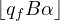 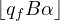
|
Sea M la siguiente maquina:
@@figura:figure11.png@@
A continuacion veremos que M computa a f. Supongamos que ( ,
, ) ∈ (ωn ×Σ*m)-Df.
Deberemos ver que M no termina partiendo de
) ∈ (ωn ×Σ*m)-Df.
Deberemos ver que M no termina partiendo de

Primero notemos que, ya que computa a f, tenemos que no termina partiendo de
 por lo cual no termina partiendo de
por lo cual no termina partiendo de

|
lo cual implica (Lema 114) que
Ahora notese que si hacemos funcionar a M desde la descripcion instantanea dada en (*), llegaremos (via la copia de M1 dentro de M) indefectiblemente (ya que M es deterministica) a la siguiente descripcion instantanea
Luego entonces (**) nos dice que al seguir trabajando M (ahora via la copia de Msim dentro de M), la maquina M nunca terminara.
Para terminar de ver que M computa a f, tomemos ( ,
, ) ∈ Df y veamos
que
) ∈ Df y veamos
que
| 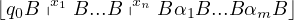 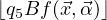 |
y que la maquina M se detiene en  . La maquina M se detiene en
. La maquina M se detiene en
 ya que q5 es el estado final de una copia de M2 y por lo tanto no sale
ninguna flecha desde el. Ya que computa a f y tiene la propiedad (2) del Lema
115, tenemos que termina partiendo de
ya que q5 es el estado final de una copia de M2 y por lo tanto no sale
ninguna flecha desde el. Ya que computa a f y tiene la propiedad (2) del Lema
115, tenemos que termina partiendo de  y llega al estado
y llega al estado
 , o lo que es lo mismo, termina partiendo de
, o lo que es lo mismo, termina partiendo de
y llega al estado
Pero entonces el Lema 114 nos dice que
Como ya lo vimos, si hacemos funcionar a M desde , llegaremos (via la copia de M1 dentro de M) indefectiblemente a la siguiente descripcion instantanea

|
Luego (***) nos dice que, via la copia de Msim dentro de M, llegaremos a
e inmediatamente a . Finalmente, via la copia de
M2 dentro de M, llegaremos a  , lo cual termina de demostrar que M
computa a f __
, lo cual termina de demostrar que M
computa a f __
En virtud de los teoremas ya probados tenemos el siguiente teorema que asegura que los tres paradigmas son equivalentes.
Teorema 117. Sea Σ un alfabeto finito. Dada una funcion f, las siguientes son equivalentes:
Proof. (1)⇒(2) es probado en el Teorema 113. (2)⇒(3) es probado en el Teorema 90. (3)⇒(1) es probado en el Teorema 116. __
Tambien los tres paradigmas son equivalentes con respecto a los dos tipos de conjuntos estudiados, es decir:
Teorema 118. Sea Σ un alfabeto finito y sea S ⊆ ωn × Σ*m. Las siguientes son equivalentes:
Proof. Directo de las definiciones y el teorema anterior. __
Teorema 119. Sea Σ un alfabeto finito y sea S ⊆ ωn × Σ*m. Las siguientes son equivalentes:
Proof. Directo de las definiciones y el teorema anterior. __
Otro modelo matematico de computabilidad efectiva es el llamado lamda calculus, introducido por Church, el cual tambien resulta equivalente a los estudiados por nosotros. El hecho de que tan distintos paradigmas computacionales hayan resultado equivalentes hace pensar que en realidad los mismos han tenido exito en capturar la totalidad de las funciones Σ-efectivamente computables. Esta aseveracion es conocida como la
Tesis de Church: Toda funcion Σ-efectivamente computable es Σ-recursiva.
Si bien no se ha podido dar una prueba estrictamente matematica de la Tesis de Church, es un sentimiento comun de los investigadores del area que la misma es verdadera.
En esta seccion presentaremos varios de los resultados basicos de computabilidad, expresados en el paradigma recursivo, ya que es el mas habitual y comodo. Varios de estos resultados ya han sido establecidos dentro del desarrollo de la computabilidad efectiva en el Capitulo 2. A estos resultados los enunciaremos dentro del paradigma de Godel y daremos pruebas rigurosas matematicas de ellos usando la teoria desarrollada hasta ahora. Sin envargo, veremos que hay otros resultados que son dependientes del desarrollo matematico hecho y aportan nueva informacion al paradigma filosofico (la indecidibilidad del halting problem, por ejemplo).
Lema 120. Supongamos fi : Dfi ⊆ ωn × Σ*m → O, i = 1,...,k, son funciones Σ-recursivas tales que Dfi ∩Dfj = ∅ para i≠j. Entonces la funcion f1 ∪...∪fk es Σ-recursiva.
Proof. Probaremos el caso k = 2 y O = Σ*. Ademas supondremos que n = m = 1. Sean 1 y 2 programas que computen las funciones f1 y f2, respectivamente. Para i = 1,2, definamos
Hi = λtx1α1![[Halt1,1(t,x1,α1,Pi)]](apunte1555x.png)
|
Notar que DHi = ω2 × Σ* y que Hi es Σ-mixta. Ademas sabemos que la funcion Halt1,1 es (Σ ∪ Σp)-p.r. por lo cual resulta facilmente que Hi es (Σ ∪ Σp)-p.r.. Por el Teorema de Independencia del Alfabeto tenemos que Hi es Σ-p.r.. Entonces Hi es Σ-computable por lo cual tenemos que hay un macro:
Para hacer mas intuitivo el uso de este macro lo escribiremos de la siguiente manera
Ya que cada fi es Σ-computable, hay macros
|
Notese que computa la funcion f1 ∪ f2 __
La prueba del lema anterior es de naturaleza imperativa ya que da explicitamente un programa (de todas maneras usa el paradigma recursivo o Godeliano para justificar la existencia de los macros). A continuacion daremos una prueba la cual es mas recursiva (aunque aun usa el paradigma imperativo en la existencia de los programas i).
Proof. Sean 1 y 2 programas que computen las funciones f1 y f2, respectivamente. Sean
![[ n,m P(M ((P ∨P))(⃗x,⃗α),⃗x,⃗α)]
g1 = λ⃗x⃗α E *1 (M ((P1 ∨P2 ))(⃗x,⃗α),⃗x,⃗α,P1) 1 1 2
[ n,m P2(M ((P1∨P2))(⃗x,⃗α),⃗x,⃗α)]
g2 = λ⃗x⃗α E *1 (M ((P1 ∨P2 ))(⃗x,⃗α),⃗x,⃗α,P2)](apunte1564x.png)
g1( , , ) = ) =
|
g2( , , ) = ) =
|
O sea que f1 ∪ f2 = λαβ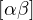 ∘![[g1,g2]](apunte1572x.png) es Σ-recursiva. __
es Σ-recursiva. __
A continuacion probaremos los resultados basicos sobre conjuntos Σ-efectivamente computables y Σ-efectivamente enumerables, dados en las Secciones 2.3 y 2.2, pero enunciados dentro del paradigma de Godel.
Lema 121. Si P : S ⊆ ωn×Σ*m → ω y Q : S ⊆ ωn×Σ*m → ω son predicados Σ-r., entonces (P ∨ Q), (P ∧ Q) y P lo son tambien.
Proof. Note que
![P = λxy [x˙- y]∘ [Cn,1m ,P]
(P ∧ Q) = λxy [x.y]∘[P,Q]
(P ∨ Q) = (P ∧Q ).](apunte1573x.png)
Lema 122. Supongamos S1,S2 ⊆ ωn × Σ*m son conjuntos Σ-recursivos. Entonces S1 ∪ S2, S1 ∩ S2 y S1 - S2 son Σ-recursivos
Proof. Es directa del lema anterior. __
Lema 123. Supongamos S1,S2 ⊆ ωn × Σ*m son conjuntos Σ-r.e.. Entonces
Proof. Podemos suponer que ni S1 ni S2 son vacios ya que de lo contrario los resultados son triviales. Ademas supondremos que n = 2 y m = 1.
(1). La idea de la prueba es la misma que la que usamos para probar que la union de conjuntos Σ-efectivamente enumerables es Σ-efectivamente enumerable. Daremos usando macros un programa que enumera a S1 ∪ S2 y luego aplicaremos la Proposicion 89. Por hipotesis hay funciones F : ω → ω × ω × Σ* y G : ω → ω × ω × Σ* tales que F(1), F(2), F(3), G(1), G(2) y G(3) son Σ-recursivas, Im(F) = S1 y Im(G) = S2. Ya que estas funciones tambien son Σ-computables, hay macros
| [IF Par(V1) GOTO A1] |
el cual escribiremos de la siguiente manera mas intuitiva
| [IF V1 es par GOTO A1] |
Ya que la funcion D = λx[⌊x∕2⌋] es Σ-p.r., tenemos que D es Σ-computable. Es decir que hay un macro:
| [V2 ← D(V1)] |
el cual escribiremos de la siguiente manera mas intuitiva
| [V2 ←⌊V1∕2⌋] |
Sea el siguiente programa:
|
Es facil ver que cumple a y b de (3) de la Proposicion 89 por lo cual S1 ∪ S2 es Σ-enumerable.
(2). Es dejada al lector __
Tal como veremos mas adelante hay conjuntos Σ-recursivamente enumerables los cuales no son Σ-recursivos. Sin envargo tenemos el siguiente interesante resultado.
Teorema 124. Sea S ⊆ ωn × Σ*m. Son equivalentes
Proof. (a)⇒(b). Si S = ∅, por definicion S es Σ-recursivamente enumerable. Supongamos entonces S≠∅. Haremos el caso en el que n = m = 1 y (0,ε) ∈ S. Sea ≤ un orden total sobre Σ. Por hipotesis tenemos que χSω×Σ* es Σ-recursiva por lo cual es Σ-computable. O sea que tenemos un macro
| [IF χSω×Σ* (V1,W1) GOTO A1] |
Ya que la funcion f = λx[(x)1] es Σ-p.r., ella es Σ-computable por lo cual hay un macro
| [V2 ← f(V1)] |
el cual escribiremos de la siguiente manera:
| [V2 ← (V1)1] |
Ya que la funcion g = λx[*≤((x)2)] es Σ-p.r., ella es Σ-computable por lo cual hay un macro
| [W1 ← g(V1)] |
el cual escribiremos de la siguiente manera:
| [W1 ←*≤((V1) 2)] |
(Dejamos al lector entender bien el funcionamiento de estos macros.) Sea el siguiente programa:
|
Notese que Dom() = ω y que Im(![[ ]
Ψ1,0,# ,Ψ1,0,*
P P](apunte1584x.png) ) = S por lo
cual S es Σ-enumerable lo que nos dice que S es Σ-recursivamente enumerable.
) = S por lo
cual S es Σ-enumerable lo que nos dice que S es Σ-recursivamente enumerable.
(b)⇒(a). Haremos el caso en que los conjuntos S y (ωn × Σ*m) -S son no vacios. Tambien supondremos n = m = 1. Por hipotesis hay funciones F : ω → ω × Σ* y G : ω → ω × Σ* tales que F(1), F(2), G(1) y G(2) son Σ-recursivas, Im(F) = S y Im(G) = (ω × Σ*) - S. Ya que estas funciones tambien son Σ-computables, hay macros
| [V1 ← C10,0(♢)] |
(asociado a la funcion Σ-computable C10,0), el cual escribiremos de la siguiente manera
| [V1 ← 1] |
Sea el siguiente programa:
|
Notese que computa a la funcion χSω×Σ* por lo cual χSω×Σ* es Σ-computable lo que nos dice que es Σ-recursiva. Esto por definicion nos dice que S es Σ-recursivo __
Lema 125. Supongamos f : Df ⊆ ωn × Σ*m → O es Σ-recursiva y S ⊆ Df es Σ-r.e., entonces f|S es Σ-recursiva.
Proof. Si S = ∅, entonces f|S = ∅ y por lo tanto f|S es Σ-recursiva. Supongamos S≠∅. Haremos el caso n = m = 1 y O = Σ*. Tenemos que hay una F : ω → ω × Σ* tal que ImF = S y F(1), F(2) son Σ-recursivas. Ya que f, F(1) y F(2) son Σ-computables, hay macros
![[IFV1 ⁄= V2GOTOA1 ]
[IFW1 ⁄= W2GOTOA1 ]](apunte1593x.png)
|
Es facil ver que computa a f|S __
Ahora probaremos el analogo recursivo del Teorema 31.
Teorema 126. Dado S ⊆ ωn × Σ*m, son equivalentes
Proof. El caso n = m = 0 es facil y es dejado al lector. Supongamos entonces que n + m ≥ 1.
(2)⇒(3). Haremos el caso k = l = 1 y n = m = 2. El caso general es completamente analogo. Notese que entonces tenemos que S ⊆ ω2 × Σ*2 y F : DF ⊆ ω × Σ*→ ω2 × Σ*2 es tal que ImF = S y F(1), F(2), F(3), F(4) son Σ-recursivas. Para cada i ∈{1,2,3,4}, sea i un programa el cual computa a F(i). Sea ≤ un orden total sobre Σ. Definamos
| Hi = λtx1α1 |
Notar que DHi = ω2 × Σ* y que Hi es Σ-mixta. Ademas sabemos que la funcion Halt1,1 es (Σ ∪ Σp)-p.r. por lo cual resulta facilmente que Hi es (Σ ∪ Σp)-p.r.. Por la Proposicion de Independencia del Alfabeto tenemos que Hi es Σ-p.r.. Entonces Hi es Σ-computable por lo cual tenemos que hay un macro:
![[IFHi (V2,V1,W1 )GOTOA1 ]](apunte1598x.png)
|
Para hacer mas intuitivo el uso de este macro lo escribiremos de la siguiente manera
Para i = 1,2, definamos
| Ei = λxtx1α1 |
Para i = 3,4, definamos
| Ei = λtx1α1α |
Dejamos al lector probar que las funciones Ei son Σ-p.r.. O sea que son Σ-computables por lo cual para cada i ∈{1,2} hay un macro
![[IFEi(V2,V3,V1, W1)GOTOA1 ]](apunte1602x.png)
|
y para cada i ∈{3,4} hay un macro
Haremos mas intuitiva la forma de escribir estos macros, por ejemplo para i = 1, lo escribiremos de la siguiente manera
Ya que la funcion f = λx[(x)1] es Σ-p.r., ella es Σ-computable por lo cual hay un macro
| [V2 ← f(V1)] |
el cual escribiremos de la siguiente manera:
| [V2 ← (V1)1] |
Similarmente hay macros:
| [W1 ←*≤(V1) 3] |
| [V2 ← (V1)2] |
(dejamos al lector entender bien el funcionamiento de estos macros). Sea el siguiente programa de Σ:
|
Dejamos al lector la tarea de comprender el funcionamiento de este programa y convenserse de que computa la funcion p12,2|S. Pero entonces p12,2|S es Σ-computable por lo cual es Σ-recursiva, lo cual prueba (3) ya que Dom(p12,2|S) = S.
(3)⇒(4). Supongamos S≠∅. Sea (z1,...,zn,γ1,...,γm) ∈ S fijo. Sea un programa el cual compute a f y Sea ≤ un orden total sobre Σ. Sea P : N → ω dado por P(x) = 1 sii
| Haltn,m = 1 |
Es facil ver que P es (Σ ∪ Σp)-p.r. por lo cual es Σ-p.r.. Sea = P ∪C01,0|{0}. Para i = 1,...,n, definamos Fi : ω → ω de la siguiente manera
| Fi(x) = |
Para i = n + 1,...,n + m, definamos Fi : ω → Σ* de la siguiente manera
| Fi(x) = |
Por el lema de division por casos, cada Fi es Σ-p.r.. Es facil ver que F = [F1,...,Fn+m] cumple (4). __
La prueba de (2)⇒(3) del teorema anterior es de naturaleza imperativa ya que da explicitamente un programa (de todas maneras usa el paradigma recursivo o Godeliano para justificar la existencia de los macros). A continuacion daremos una prueba de (2)⇒(3) la cual es mas recursiva (aunque aun usa el paradigma imperativo en la existencia de los programas i).
(2)⇒(3). Para i = 1,...,n + m, sea i un programa el cual computa a F(i) y Sea ≤
un orden total sobre Σ. Sea P : N × ωn × Σ*m → ω dado por P(t, ,
, ) = 1 sii se
cumplen las siguientes condiciones
) = 1 sii se
cumplen las siguientes condiciones

Corollary 127. Supongamos f : Df ⊆ ωn×Σ*m → O es Σ-recursiva y S ⊆ If
es Σ-r.e., entonces f-1(S) = {( ,
, ) : f(
) : f( ,
, ) ∈ S} es Σ-r.e..
) ∈ S} es Σ-r.e..
Proof. Por el teorema anterior S = Dg, para alguna funcion Σ-recursiva g. Note que f-1(S) = Dg∘f, lo cual nuevamente por el teorema anterior nos dice que f-1(S) es Σ-r.e.. __
Dejamos como ejercicio dar una prueba imperativa del corolario anterior. Los Lemas 125 y 123 pueden obtenerse facilmente como corolarios del teorema anterior. Se gana en elegancia y simplicidad pero cabe destacar que se pierde en intuicion
Corollary 128. Supongamos f : Df ⊆ ωn×Σ*m → O es Σ-recursiva y S ⊆ Df es Σ-r.e., entonces f|S es Σ-recursiva.
Proof. Supongamos O = Σ*. Por el teorema anterior S = Dg, para alguna
funcion Σ-recursiva g. Notese que componiendo adecuadamente podemos
suponer que Ig = {ε}. O sea que tenemos f|S = λαβ![[αβ ]](apunte1623x.png) ∘ [f,g]. __
∘ [f,g]. __
Proof. Por el teorema anterior Si = Dgi, con g1,g2 funciones Σ-recursivas.
Notese que podemos suponer que Ig1,Ig2 ⊆ ω por lo que S1 ∩ S2 =
Dλxy![[xy]](apunte1624x.png) ∘[g1,g2] es Σ-r.e.. __
∘[g1,g2] es Σ-r.e.. __
Proof. Supongamos S1≠∅≠S2. Sean F,G : ω → ωn × Σ*m tales que IF = S1, IG = S2 y las funciones F(i) s y G(i) s son Σ-recursivas. Sean f = λx y g = λx. Sea H : ω → ωn × Σ*m dada por
| H(i) = (F(i) ∘ f)|{x:x es par}∪ (G(i) ∘ g)|{x:x es impar} |
Por el Lema 125 y el Lema 120, cada Hi es Σ-recursiva. Ya que IH = S1 ∪ S2.tenemos que S1 ∪ S2 es Σ-r.e. __
A continuacion dejamos un sketch de una prueba alternativa del Teorema 124. Dejamos al lector completar los detalles.
Proof. (a)⇒(b). Note que S = DPred∘χSωn×Σ*m.
(b)⇒(a). Note que χSωn×Σ*m = C1n,m|S ∪ C0n,m|(ωn×Σ*m)-S. __
Los dos siguientes teoremas, nos agregan una equivalencia mas al Teorema 126, para el caso n = 0, m = 1.
Teorema 131. Si L ⊆ Σ* es Σ-r.e., entonces L = L(M) = H(M) para alguna maquina de Turing deterministica M.
Proof. La prueba es similar a la del Teorema 116 asique solo daremos un skech de la misma. Por el Teorema 126 L = Df para alguna funcion f la cual es Σ-recursiva. Notese que podemos suponer que Imf ⊆ Σ*. Ya que f es Σ-recursiva, tambien es Σ-computable. Por el Lema 115 existe ∈ ProΣ el cual computa f y tiene las propiedades (1) y (2). Sea k = N() y sea Msim la maquina de Turing con unit que simula a respecto de k. Sea M1 una maquina de Turing deterministica con un solo estado final qf (del cual no salen flechas) y tal que para todo α ∈ Σ*,
  
|
Note que la concatenacion de M1 con M produce una maquina de Turing deterministica M2 tal que H(M2) = L(M2) = L. Dejamos al lector los detalles de la construccion de M2. __
Proof. Sea P el siguiente predicado (Γ ∪ Q)-mixto
| λnα |
Notese que DP = ω × Γ*. Dejamos al lector probar que P es (Γ ∪ Q)-p.r.. Sea P′ = P|ω×Σ*. Notese que P′(n,α) = 1 sii α ∈ L(M) atestiguado por una computacion de longitud n. Ya que P′ es (Γ ∪ Q)-p.r. (por que?) y ademas es Σ-mixto, el Teorema 84 nos dice que P′ es Σ-p.r.. Ya que L(M) = DM(P′), el Teorema 126 nos dice que L(M) es Σ-r.e.. __
@@finpagina@@
Cuando Σ ⊇ Σp, podemos definir
AutoHaltΣ = λ![[ 0,1 ]
(∃t ∈ ω)Halt (t,P, P)](apunte1632x.png) . .
|
Notar que el dominio de AutoHaltΣ es ProΣ y que para cada ∈ ProΣ tenemos que
 .
.
Proof. Supongamos AutoHaltΣ es Σ-recursivo y por lo tanto Σ-computable. Por la proposicion de existencia de macros tenemos que hay un macro
Sea 0 el siguiente programa de Σ
| L1 |
Note que
lo cual produce una contradiccion si tomamos en (*) = 0. __
Usando el lema anterior y la Tesis de Church podemos probar el siguiente impactante resultado.
Teorema 134. Supongamos Σ ⊇ Σp. Entonces AutoHaltΣ no es Σ-efectivamente computable. Es decir no hay ningun procedimiento efectivo que decida si un programa de Σ termina partiendo de si mismo.
Proof. Si AutoHaltΣ fuera Σ-efectivamente computable, la Tesis de Church nos diria que es Σ-recursivo, contradiciendo el lema anterior. __
Notese que AutoHaltΣ provee de un ejemplo natural en el cual la cuantificacion (no acotada) de un predicado Σ-p.r. con dominio rectangular no es Σ-efectivamente computable
Ahora estamos en condiciones de dar un ejemplo natural de un conjunto A que es Σ-recursivamente enumerable pero el cual no es Σ-recursivo.
Lema 135. Supongamos que Σ ⊇ Σp. Entonces
| A = |
es Σ-r.e. y no es Σ-recursivo. Mas aun el conjunto
| N = |
no es Σ-r.e.
Proof. Para ver que A es Σ-r.e. se lo puede hacer imperativamente dando un
programa (usando macros) que enumere a A. De esta forma probariamos que
A es Σ-enumerable y por lo tanto es Σ-r.e.. Daremos ahora una prueba no
imperativa de este hecho, es decir mas propia del paradigma funcional. Sea
P = λt![[Halt0,1(t,P,P )]](apunte1639x.png) . Note que P es Σ-p.r. por lo que M(P) es Σ-r..
Ademas note que DM(P) = A, lo cual implica que A es Σ-r.e..
. Note que P es Σ-p.r. por lo que M(P) es Σ-r..
Ademas note que DM(P) = A, lo cual implica que A es Σ-r.e..
Supongamos ahora que N es Σ-r.e.. Entonces la funcion C00,1|N es Σ-recursiva ya que C00,1 lo es. Ademas ya que A es Σ-r.e. tenemos que C10,1|A es Σ-recursiva. Ya que
| AutoHaltΣ = C 10,1| A ∪ C00,1| N |
el Lema 120 nos dice que AutoHaltΣ es Σ-recursivo, contradiciendo el Lema 133. Esto prueba que N no es Σ-r.e..
Finalmente supongamos A es Σ-recursivo. Entonces el conjunto
| N = ∩ ProΣ |
deberia serlo, lo cual es absurdo. Hemos probado entonces que A no es Σ-recursivo. __
Cabe destacar aqui que el dominio de una funcion Σ-recursiva no siempre sera un conjunto Σ-recursivo. Por ejemplo si tomamos Σ tal que Σ ⊇ Σp, entonces C10,1|A es una funcion Σ-recursiva ya que es la restriccion de la funcion Σ-recursiva C10,1 al conjunto Σ-r.e. A, pero Dom(C10,1|A) = A no es Σ-recursivo.
Usando la Tesis de Church obtenemos el siguiente resultado.
Proposition 136. Supongamos que Σ ⊇ Σp. Entonces A es Σ-efectivamente enumerable y no es Σ-efectivamente computable. El conjunto N no es Σ-efectivamente enumerable. Es decir, A puede ser enumerado por un procedimiento efectivo pero no hay ningun procedimiento efectivo que decida la pertenencia a A y no hay ningun procedimiento efectivo que enumere a N. Mas aun, si un procedimiento efectivo da como salida siempre elementos de N, entonces hay una cantidad infinita de elementos de N los cuales nunca da como salida
Con los resultados anteriores estamos en condiciones de dar un ejemplo de un predicado Σ-recursivo, cuya minimizacion no es Σ-efectivamente computable (y por lo tanto es no Σ-recursiva).
Proposition 137. Supongamos que Σ ⊇ Σp. Sea P = C10,1|A ∘ λtα|ω×ProΣ. La funcion M(P) no es Σ-efectivamente computable (y por lo tanto es no Σ-recursiva)
Proof. Notese que DM(P) = ProΣ y que para cada ∈ ProΣ se tiene que
| M(P)() = 0 sii ∈ A |
O sea que AutoHaltΣ = λx[x = 0] ∘ M(P) lo cual nos dice que M(P) no es Σ-recursiva ya que si lo fuese lo seria tambien AutoHaltΣ. Por la Tesis de Church M(P) tampoco es Σ-efectivamente computable __
Supongamos Σ ⊇ Σp. Sea f = λ![[T 0,1(P,P)]](apunte1642x.png) . Note que Df = A y f() es la
cantidad de pasos en la que se detiene partiendo de
. Note que Df = A y f() es la
cantidad de pasos en la que se detiene partiendo de  .
.
Proof. Supongamos hay una tal F. Notese
que AutoHaltΣ = λ![[Halt0,1(F (P ),P,P)]](apunte1644x.png) lo cual nos dice que AutoHaltΣ es
Σ-recursiva, llegando a una contradiccion. __
lo cual nos dice que AutoHaltΣ es
Σ-recursiva, llegando a una contradiccion. __
@@finpagina@@
En esta seccion estudiaremos varios clases de estructuras algebraicas en las cuales hay un orden parcial involucrado. Esto tendra una doble utilidad. Por un lado algunos de los resultados probados sobre algebras de Boole (por ejemplo el teorema de Rasiova y Sikorski) seran utilizados mas adelante para la prueba del teorema de completitud de la logica de primer orden. Tambien las diversas estructuras que veamos nos serviran como ejemplos de estructuras de primer orden y muchas de las pruebas dadas en este capitulo seran inspiradoras para definir el concepto de prueba formal en una teoria de primer orden.
Recordamos que tal como se lo definio en la Seccion 1.6.2, una relacion binaria ≤ sobre un conjunto P es llamada un orden parcial sobre P si se cumplen las siguientes condiciones:
(recomendamos antes de leer este tema, leer la Seccion 1.6.2, para familiarizarse con la notacion y las propiedades basicas de los ordenes parciales).
Un conjunto parcialmente ordenado o poset es un par (P,≤) donde P es un conjunto no vacio cualquiera y ≤ es un orden parcial sobre P. Dado un poset (P,≤), el conjunto P sera llamado el universo de (P,≤). Algunos ejemplos:
Usaremos la siguiente
| {(a,b) ∈ A2 : a < b y no existe z tal que a < z < b} |
Cuando se de a ≺ b diremos que a es cubierto por b o que b cubre a a (respecto de ≤)
El mismo tipo de convencion notacional se hara cuando denotemos con ≤′ (o , etc) a un orden parcial sobre A. Es decir tendremos dos relaciones binarias nuevas tacitamente definidas, a saber:

Dado un poset (P,≤), con P un conjunto finito, podemos realizar un diagrama llamado diagrama de Hasse, siguiendo las siguientes instrucciones:
La relacion de orden ≤ puede ser facilmente obtenida a partir del diagrama, a saber, a ≤ b sucedera si y solo si pa = pb o hay una sucesion de segmentos ascendentes desde pa hasta pb.
Algunos ejemplos:
Sea (P,≤) un poset. Diremos que a ∈ P es un elemento maximal de (P,≤) si no existe un b ∈ P tal que a < b. Diremos que a ∈ P es un elemento maximo de (P,≤) si b ≤ a, para todo b ∈ P. En forma analoga se definen los conceptos de elemento minimal y minimo. Algunos ejemplos:
Como lo muestra el ejemplo (E3), no siempre hay elementos maximales o maximos en un poset. Ademas un poset tiene a lo sumo un maximo y un minimo (por que?), los cuales en caso de existir algunas veces seran denotados con 1 y 0, respectivamente. Tambien diremos que (P,≤) tiene un 1 (resp. 0) para expresar que (P,≤) tiene un elemento maximo (resp. minimo). Notese tambien que todo elemento maximo (resp. minimo) de (P,≤) es un elemento maximal (resp. minimal) de (P,≤) (por que?).
Sea (P,≤) un poset. Dado S ⊆ P, diremos que un elemento a ∈ P es cota superior de S en (P,≤) cuando b ≤ a, para todo b ∈ S. Notese que todo elemento de P es cota superior de ∅ en (P,≤). Un elemento a ∈ P sera llamado supremo de S en (P,≤) cuando se den las siguientes dos propiedades
Algunos ejemplos:

Como lo muestra el ejemplo (E1) no siempre existe un supremo de S en (P,≤). Ademas notese que en caso de existir es unico, es decir, si a es supremo de S en (P,≤) y a′ es supremo de S en (P,≤), entonces a = a′ (por que?). Esto nos permite hablar de EL supremo de S en (P,≤), cuando exista. Denotaremos con sup(S) al supremo de S en (P,≤), en caso de que exista. Notese que (E1) nos muestra que no siempre el supremo de un conjunto pertenece al conjunto. Notese ademas que en caso de existir, sup(∅) en (P,≤) es un elemento minimo de (P,≤). Esto es porque todo elemento de P es cota superior de ∅ en (P,≤).
Sea (P,≤) un poset. Dado S ⊆ P, diremos que un elemento a ∈ P es cota inferior de S en (P,≤), cuando a ≤ b, para cada b ∈ S. Notese que todo elemento de P es cota inferior de ∅ en (P,≤). Un elemento a ∈ P sera llamado infimo de S en (P,≤) cuando se den las siguientes dos propiedades
Algunos ejemplos:

 S.
S.
Como lo muestra el ejemplo (E1) no siempre existe un infimo de S en (P,≤). Ademas notese que en caso de existir es unico, es decir, si a es infimo de S en (P,≤) y a′ es infimo de S en (P,≤), entonces a = a′ (por que?). Esto nos permite hablar de EL infimo de S en (P,≤), cuando exista. Denotaremos con inf(S) al infimo de S en (P,≤), en caso de que exista. Notese que (E1) nos muestra que no siempre el infimo de un conjunto pertenece al conjunto. Notese ademas que en caso de existir, inf(∅) en (P,≤) es un elemento maximo de (P,≤).
Sean (P,≤) y (P′,≤′) posets. Una funcion F : P → P′ sera llamada un homomorfismo de (P,≤) en (P′,≤′) si para todo x,y ∈ P se cumple que x ≤ y implica F(x) ≤′F(y). Escribiremos F : (P,≤) → (P′,≤′) para expresar que F es un homomorfismo de (P,≤) en (P′,≤′). Algunos ejemplos:
Una funcion F : P → P′ sera llamada un isomorfismo de (P,≤) en (P′,≤′) si F es
biyectiva, F es un homomorfismo de (P,≤) en (P′,≤′) y F-1 es un homomorfismo
de (P′,≤′) en (P,≤). Escribiremos (P,≤) (P′,≤′) cuando exista un isomorfismo
de (P,≤) en (P′,≤′) y en tal caso diremos que (P,≤) y (P′,≤′) son isomorfos.
Cabe observar que un homomorfismo biyectivo no necesariamente es un isomorfismo
como lo muestra el siguiente ejemplo.
(P′,≤′) cuando exista un isomorfismo
de (P,≤) en (P′,≤′) y en tal caso diremos que (P,≤) y (P′,≤′) son isomorfos.
Cabe observar que un homomorfismo biyectivo no necesariamente es un isomorfismo
como lo muestra el siguiente ejemplo.
El siguiente lema aporta evidencia al hecho de que posets isomorfos tienen las mismas propiedades matematicas.
Lema 139. Sean (P,≤) y (P′,≤′) posets. Supongamos F es un isomorfismo de (P,≤) en (P′,≤′).
Proof. (a) Supongamos que a es cota superior de S. Veamos que entonces F(a) es cota superior de F(S). Sea x ∈ F(S). Sea s ∈ S tal que x = F(s). Ya que s ≤ a, tenemos que x = F(s) ≤ ′F(a). Supongamos ahora que F(a) es cota superior de F(S) y veamos que entonces a es cota superior de S. Sea s ∈ S. Ya que F(s) ≤′F(a), tenemos que s = F-1(F(s)) ≤ F-1(F(a)) = a.
(b) Supongamos existe sup(S). Veamos entonces que F(sup(S)) es el supremo de F(S). Por (a) F(sup(S)) es cota superior de F(S). Supongamos b es cota superior de F(S). Entonces F-1(b) es cota superior de S, por lo cual sup(S) ≤ F-1(b), produciendo F(sup(S)) ≤′b. En forma analoga se ve que si existe sup(F(S)), entonces F-1(sup(F(S))) es el supremo de S.
(c), (d) y (e) son dejados como ejercicio. __
Notese que (e) nos garantiza que si dos posets finitos son isomorfos, entonces pueden representarse con el mismo diagrama de Hasse.
El concepto de reticulado puede ser abordado en dos formas distintas, una geometrica (via posets) y la otra algebraica (via estructuras algebraicas definidas ecuacionalmente). Como veremos mas adelante ambas definiciones son equivalentes.
Diremos que un poset (P,≤) es un reticulado si para todo a,b ∈ P, existen sup({a,b}) e inf({a,b}). Recordemos que dado un conjunto A, por una operacion binaria sobre A entenderemos una funcion cuyo dominio es A2 y cuya imagen esta contenida en A. En un reticulado (P,≤) tenemos dos operaciones binarias naturalmente definidas:
|
Escribiremos asb en lugar de s(a,b) y aib en lugar de i(a,b).
Lema 140. Dado un reticulado (L,≤) y elementos x,y,z,w ∈ L, se cumplen las siguientes.
Proof. Trivial de las definiciones __
Proof. Ejercicio __
Proof. Ya que xiy ≤ x, el lema anterior nos dice que (xiy)sx = x, por lo cual xs(xiy) = x. __
Lema 143. Dado un reticulado (L,≤) y elementos x,y,z ∈ L, se tiene que:
Proof. (1) Notese que xs(ysz) es cota superior de {x,y,z} ya que obviamente x ≤ xs(ysz) y ademas

Lema 144. Dado un reticulado (L,≤) y elementos x,y,z,w ∈ L, se tiene que:
Proof. Ya que

Proof. Ya que
Proof. Por induccion en n. Claramente el resultado vale para n = 2. Supongamos vale para n y veamos entonces que vale para n + 1. Sean x1,...,xn+1 ∈ L. Por hipotesis inductiva tenemos que
Veamos entonces que
Es facil ver que ((...(x1sx2)s...)sxn)sxn+1 es cota superior de {x1,...,xn+1}. Supongamos que z es otra cota superior. Ya que z es tambien cota superior del conjunto {x1,...,xn}, por (1) tenemos que
| (...(x1sx2)s...)sxn ≤ z. |
Pero entonces ya que xn+1 ≤ z, tenemos que
| ((...(x1sx2)s...)sxn)sxn+1 ≤ z, |
con lo cual hemos probado (2). __
Dado que la distribucion de parentesis en una expresion de la forma
| (...(x1sx2)s...)sxn |
es irrelevante (ya queses asociativa), en general suprimiremos los parentesis.
De la diversas propiedades de las operaciones s e i de un reticulado (L,≤) distinguiremos las siguientes:
Podemos abstraernos y pensar que s e i son dos operaciones cualesquiera sobre un conjunto L arbitrario y estudiar cuando se satisfacen y cuando no dichas propiedades. Por ejemplo si tomamos L = R y
|
entonces se cumplen (I2), (I3), (I4) e (I5), pero (I1), (I6) e (I7) no se cumplen. Otro ejemplo, si tomamos L = {1,2} y
|
entonces se cumplen (I3), (I4) e (I5), pero (I1), (I2), (I6) e (I7) no se cumplen. Otro ejemplo, si tomamos L = N y
|
entonces se cumplen (I1), (I2), (I3), (I4), (I5) e (I6), pero (I7) no se cumple. Por supuesto si s e i son las operaciones supremo e infimo dadas por algun orden parcial ≤ sobre L el cual hace de (L,≤) un reticulado, entonces las propedades (I1),...,(I7) se cumplen y esto es justamente lo probado en la ultima serie de lemas. El ultimo ejemplo nos permite ver una sutileza. Notese que en este ejemplo s es la operacion supremo del reticulado (N,≤), donde ≤ es el orden usual de los naturales, e i es la operacion infimo del reticulado (N,|), donde | es el orden de la divisibilidad de los naturales. Sin envargo la ultima propiedad falla y esto se debe a que s e i son supremo e infimo pero respecto de distintos ordenes parciales.
Lo anterior motiva la siguiente definicion: Una terna (L,s,i), donde L es un conjunto no vacio y s e i son dos operaciones binarias sobre L sera llamada reticulado cuando cumpla (I1),...,(I7). Si (L,s,i) es un reticulado, llamaremos a L el universo de L.
Tal como lo vimos recien, las ternas dadas por los tres ejemplos anteriores no son reticulados y si tomamos un poset (L,≤) el cual sea un reticulado, entonces la terna (L,s,i), con s e i definidas como supremo e infimo, es un reticulado. El siguiente teorema muestra que todo reticulado (L,s,i) se obtiene de esta forma.
Teorema 147. (Dedekind) Sea (L,s,i) un reticulado. La relacion binaria definida por:
| x ≤ y si y solo si xsy = y |
es un orden parcial sobre L para el cual se cumple que:
Proof. Dejamos como ejercicio para el lector probar que ≤ es reflexiva y antisimetrica. Veamos que ≤ es transitiva. Supongamos que x ≤ y e y ≤ z. Entonces
| xsz = xs(ysz) = (xsy)sz = ysz = z, |
por lo cual x ≤ z. Veamos ahora que sup({x,y}) = xsy. Es claro que xsy es una cota superior del conjunto {x,y}. Supongamos x,y ≤ z. Entonces
| (xsy)sz = xs(ysz) = xsz = z, |
por lo que xsy ≤ z. Es decir que xsy es la menor cota superior.
Para probar que inf({x,y}) = xiy, probaremos que para todo u,v ∈ L,
| u ≤ v si y solo si uiv = u, |
lo cual le permitira al lector aplicar un razonamiento similar al usado en el caso de la operacion s. Supongamos que usv = v. Entonces uiv = ui(usv) = u. Reciprocamente si uiv = u, entonces usv = (uiv)sv = v, por lo cual u ≤ v. __
 de {(L,≤) : (L,≤)
es un reticulado} en {(L,s,i) : (L,s,i) es un reticulado} la cual sea
biyectiva
de {(L,≤) : (L,≤)
es un reticulado} en {(L,s,i) : (L,s,i) es un reticulado} la cual sea
biyectiva@@finpagina@@
Como vimos el teorema de Dedekind nos dice que un reticulado (L,s,i) es un objeto geometrico ya que si definimos
| ≤ = {(x,y) : xsy = y} |
entonces ≤ es un orden parcial sobre L y las operaciones s e i resultan ser supremo e infimo. Llamaremos a ≤ = {(x,y) : xsy = y} el orden parcial asociado a (L,s,i) y a (L,≤) el poset asociado a (L,s,i). Notese que tambien tenemos que ≤ = {(x,y) : xiy = x} (por que?). Muchos conceptos definidos para posets ahora pueden aplicarse cuando tenemos un reticulado (L,s,i). Por ejemplo si decimos que (L,s,i) tiene elemento maximo, esto significara que el poset (L,≤) tiene elemento maximo.
Usaremos las siguientes practicas convenciones notacionales
entonces ciertas veces usaremos ∪ (resp. ∩) para denotar la operacion binaria sobre L dada por la union (resp. la interceccion). Es decir ∪ e ∩ denotaran las funciones
|
|
entonces ciertas veces usaremos mcm y mcd para denotar las operaciones binarias sobre L dadas por
|
En virtud de las convenciones notacionales anteriores notese que por ejemplo
denotan reticulados pero deberia quedar claro que en los primeros dos ejemplos max denota dos distintas operaciones. Analogamente sucede con min, ∪, ∩, mcm y mcd. Esta ambiguedad no nos traera problemas si estamos atentos al contexto.
Dados reticulados (L,s,i) y (L′,s′,i′) diremos que (L,s,i) es un subreticulado de (L′,s′,i′) si se dan las siguientes condiciones
Sea (L,s,i) un reticulado. Un conjunto S ⊆ L es llamado subuniverso de (L,s,i) si es no vacio y cerrado bajo las operaciones s e i (i.e. xsy, xi y ∈ S, para todo x,y ∈ S). Es importante notar que si bien los conceptos de subreticulado y subuniverso estan muy relacionados, se trata de objetos diferentes ya que los subreticulados de un reticulado dado son reticulados, es decir ciertas ternas y los subuniversos de un reticulado dado son ciertos subconjuntos por lo cual no son ternas. Es facil notar que si S es un subuniverso de (L,s,i), entonces (S,s|S×S,i|S×S) es un subreticulado de (L,s,i) y que todo subreticulado de (L,s,i) se obtiene en esta forma.
Sean (L,s,i) y (L′,s′,i′) reticulados. Una funcion F : L → L′ sera llamada un homomorfismo de (L,s,i) en (L′,s′,i′) si para todo x,y ∈ L se cumple que

 (L′,s′,i′) cuando exista un isomorfismo de (L,s,i) en (L′,s′,i′).
Escribiremos F : (L,s,i) → (L′,s′,i′) cuando F sea un homomorfismo de (L,s,i) en
(L′,s′,i′).
(L′,s′,i′) cuando exista un isomorfismo de (L,s,i) en (L′,s′,i′).
Escribiremos F : (L,s,i) → (L′,s′,i′) cuando F sea un homomorfismo de (L,s,i) en
(L′,s′,i′).
Proof. Solo falta ver que F-1 es un homomorfismo. Sean F(x),F(y) dos elementos cualesquiera de L′. Tenemos que
| F-1(F(x)s′ F(y)) = F-1(F(xsy)) = xsy = F-1(F(x))s F-1(F(y)) |
__
Lema 149. Sean (L,s,i) y (L′,s′,i′) reticulados y sea F : (L,s,i) → (L′,s′,i′) un homomorfismo. Entonces IF es un subuniverso de (L′,s′,i′). Es decir que F es tambien un homomorfismo de (L,s,i) en (IF,s′|IF×IF,i′|IF×IF)
Proof. Ya que L es no vacio tenemos que IF tambien es no vacio. Sean a,b ∈ IF. Sean x,y ∈ L tales que F(x) = a y F(y) = b. Se tiene que
Lema 150. Sean (L,s,i) y (L′,s′,i′) reticulados y sean (L ≤) y (L′,≤ ′) los posets asociados. Sea F : L → L′ una funcion. Entonces F es un isomorfismo de (L,s,i) en (L′,s′,i′) si y solo si F es un isomorfismo de (L,≤) en (L′,≤′).
Proof. Supongamos F es un isomorfismo de (L,s,i) en (L′,s′,i′). Sean x,y ∈ L, tales que x ≤ y. Tenemos que y = xsy por lo cual F(y) = F(xsy) = F(x)s′F(y), produciendo F(x) ≤′F(y). En forma similar se puede ver que F-1 es tambien un homomorfismo de (L′,≤′) en (L,≤). Si F es un isomorfismo de (L,≤) en (L′,≤′), entonces el Lema 139 nos dice que F y F-1 respetan las operaciones de supremo e infimo por lo cual F es un isomorfismo de (L,s,i) en (L′,s′,i′). __
Sea (L,s,i) un reticulado. Una congruencia sobre (L,s,i) sera una relacion de equivalencia θ sobre L la cual cumpla:
Gracias a esta condicion podemos definir sobre L∕θ dos operaciones binarias  e , de la
siguiente manera:
e , de la
siguiente manera:

 ,
, ) es llamada el cociente de (L,s,i) sobre θ y la denotaremos con
(L,s,i)∕θ.
) es llamada el cociente de (L,s,i) sobre θ y la denotaremos con
(L,s,i)∕θ.
Lema 151. (L∕θ, ,
, ) es un reticulado. El orden parcial asociado a este reticulado
cumple
) es un reticulado. El orden parcial asociado a este reticulado
cumple
| x∕θy∕θ sii yθ(xsy) |
Proof. Veamos que la estructura (L∕θ, ,
, ) cumple (I4). Sean x∕θ, y∕θ, z∕θ elementos
cualesquiera de L∕θ. Tenemos que
) cumple (I4). Sean x∕θ, y∕θ, z∕θ elementos
cualesquiera de L∕θ. Tenemos que
|
En forma similar se puede ver que la estructura (L∕θ, , ) cumple el resto de las
identidades que definen reticulado.
) cumple el resto de las
identidades que definen reticulado.
Por definicion, x∕θ y∕θ sii y∕θ = x∕θ
y∕θ sii y∕θ = x∕θ y∕θ, por lo cual x∕θ
y∕θ, por lo cual x∕θ y∕θ sii y∕θ =
(xsy)∕θ. __
y∕θ sii y∕θ =
(xsy)∕θ. __
El reticulado (L∕θ, ,
, ) es llamado el cociente de (L,s,i) sobre θ.
) es llamado el cociente de (L,s,i) sobre θ.
Corollary 152. Sea (L,s,i) un reticulado en el cual hay un elemento maximo
1 (resp. minimo 0). Entonces si θ es una congruencia sobre (L,s,i), 1∕θ (resp.
0∕θ) es un elemento maximo (resp. minimo) de (L∕θ, ,
, ).
).
Proof. Ya que 1 = xs1, para cada x ∈ L, tenemos que 1∕θ = (xs1)∕θ, para cada
x ∈ L, lo cual por el lema anterior nos dice que x∕θ 1∕θ, para cada x ∈ L. __
1∕θ, para cada x ∈ L. __
El siguiente lema nos da una forma natural de encontrar congruencias
Lema 153. Si F : (L,s,i) → (L′,s′,i′) es un homomorfismo, entonces kerF es una congruencia sobre (L,s,i).
Proof. Dejamos al lector ver que kerF es una relacion de equivalencia. Supongamos xkerFx′ y y kerFy′. Entonces
| F(xsy) = F(x)s′F(y) = F(x′)s′F(y′) = F(x′sy′) |
lo cual nos dice que (xsy)kerF(x′sy′). En forma similar tenemos que (xiy)kerF(x′iy′). __
Ya vimos que el nucleo de un homomorfismo es una congruencia. El siguiente lema muestra que toda congruencia es el nucleo de un homomorfismo.
Lema 154. Sea (L,s,i) un reticulado y sea θ una congruencia sobre (L,s,i).
Entonces πθ es un homomorfismo de (L,s,i) en (L∕θ, ,
, ). Ademas kerπθ = θ.
). Ademas kerπθ = θ.
Proof. Sean x,y ∈ L. Tenemos que
πθ(xsy) = (xsy)∕θ = x∕θ y∕θ = πθ(x) y∕θ = πθ(x) πθ(y) πθ(y)
|
por lo cual πθ preserva la operacion supremo. Para la operacion infimo es similar. __
Por un reticulado acotado entenderemos una 5-upla (L,s,i,0,1), tal que (L,s,i) es un reticulado, 0,1 ∈ L, y ademas se cumplen las siguientes identidades
Notese que si (L,≤) es un poset el cual es un reticulado y en el cual hay un maximo 1 y un minimo 0, entonces si tomamos:
|
tenemos que (L,s,i,0,1) es un reticulado acotado. Ademas en virtud del Teorema 147 todo reticulado acotado se obtiene de esta forma.
Dados reticulados acotados (L,s,i,0,1) y (L′,s′,i′,0′,1′) diremos que (L,s,i,0,1) es un subreticulado acotado de (L′,s′,i′,0′,1′) si se dan las siguientes condiciones
Sea (L,s,i,0,1) un reticulado acotado. Un conjunto S ⊆ L es llamado subuniverso de (L,s,i,0,1) si 0,1 ∈ S y S es cerrado bajo las operaciones s e i (i.e. xsy, xi y ∈ S, para todo x,y ∈ S). Es importante notar que si bien los conceptos de subreticulado acotado y subuniverso estan muy relacionados, se trata de objetos diferentes. Es facil notar que si S es un subuniverso de (L,s,i,0,1), entonces (S,s|S×S,i|S×S,0,1) es un subreticulado de (L,s,i,0,1) y que todo subreticulado acotado de (L,s,i,0,1) se obtiene en esta forma.
Sean (L,s,i,0,1) y (L′,s′,i′,0′,1′) reticulados acotados. Una funcion F : L → L′ sera llamada un homomorfismo de (L,s,i,0,1) en (L′,s′,i′,0′,1′) si para todo x,y ∈ L se cumple que
 (L′,s′,i′,0′,1′) cuando exista un isomorfismo de (L,s,i,0,1) en
(L′,s′,i′,0′,1′). Escribiremos F : (L,s,i,0,1) → (L′,s′,i′,0′,1′) cuando F sea un
homomorfismo de (L,s,i,0,1) en (L′,s′,i′,0′,1′).
(L′,s′,i′,0′,1′) cuando exista un isomorfismo de (L,s,i,0,1) en
(L′,s′,i′,0′,1′). Escribiremos F : (L,s,i,0,1) → (L′,s′,i′,0′,1′) cuando F sea un
homomorfismo de (L,s,i,0,1) en (L′,s′,i′,0′,1′).
Lema 155. Si F : (L,s,i,0,1) → (L′,s′,i′,0′,1′) un homomorfismo biyectivo, entonces F es un isomorfismo
Proof. Similar a la prueba del Lemma 148. __
Lema 156. Si F : (L,s,i,0,1) → (L′,s′,i′,0′,1′) es un homomorfismo, entonces IF es un subuniverso de (L′,s′,i′,0′,1′). Es decir que F es tambien un homomorfismo de (L,s,i,0,1) en (IF,s′|IF×IF,i′|IF×IF,0′,1′)
Proof. Ya que F es un homomorfismo de (L,s,i) en (L′,s′,i′) tenemos que IF es subuniverso de (L′,s′,i′) lo cual ya que 0′,1′ ∈ IF implica que IF es un subuniverso de (L′,s′,i′,0′,1′). __
Sea (L,s,i,0,1) un reticulado acotado. Una congruencia sobre (L,s,i,0,1) sera una
relacion de equivalencia θ la cual sea una congruencia sobre (L,s,i). Tenemos
definidas sobre L∕θ dos operaciones binarias  e
e  , de la siguiente manera:
, de la siguiente manera:

 ,
, ,0∕θ,1∕θ) es llamada el cociente de (L,s,i,0,1) sobre θ y la
denotaremos con (L,s,i,0,1)∕θ.
,0∕θ,1∕θ) es llamada el cociente de (L,s,i,0,1) sobre θ y la
denotaremos con (L,s,i,0,1)∕θ.
Lema 157. Sea (L,s,i,0,1) un reticulado acotado y θ una congruencia sobre (L,s,i,0,1).
 ,
, ,0∕θ,1∕θ) es un reticulado acotado.
,0∕θ,1∕θ) es un reticulado acotado.
 ,
, ,0∕θ,1∕θ) cuyo nucleo
es θ.
,0∕θ,1∕θ) cuyo nucleo
es θ.
Proof. (a) (a) Es facil ver que (L∕θ, ,
, ,0∕θ,1∕θ) cumple (I1), (I2),...,(I9) dado
que (L,s,i,0,1) las cumple.
,0∕θ,1∕θ) cumple (I1), (I2),...,(I9) dado
que (L,s,i,0,1) las cumple.
(b) Sigue directamente del Lema 154 __
Lema 158. Si F : (L,s,i,0,1) → (L′,s′,i′,0′,1′) es un homomorfismo de reticulados acotados, entonces kerF es una congruencia sobre (L,s,i,0,1).
Proof. Ya que F es un homomorfismo de (L,s,i) en (L′,s′,i′) tenemos que por un lema anterior kerF es una congruencia sobre (L,s,i) lo cual por definicion nos dice que kerF es una congruencia sobre (L,s,i,0,1). __
Sea (L,s,i,0,1) un reticulado acotado. Dado a ∈ L, diremos que a es complementado cuando exista un elemento b ∈ L (llamado complemento de a) tal que:

Dado un reticulado acotado (L,s,i,0,1) puede haber mas de una operacion unaria g tal que (L,s,i,g,0,1) resulte un reticulado complementado. Intente dar un ejemplo en el cual L tenga 5 elementos. Notese que si tenemos un poset (L,≤) el cual es un reticulado en el cual hay un maximo 1 y un minimo 0 y ademas tenemos una funcion g : L → L tal que

|
y se obtiene que (L,s,i,g,0,1) es un reticulado complementado. Ademas en virtud del Teorema 147 todo reticulado complementado se obtiene de esta forma.
Dados reticulados complementados (L,s,i,c,0,1) y (L′,s′,i′,c′ ,0′,1′) diremos que (L,s,i,c,0,1) es un subreticulado complementado de (L′,s′,i′,c′ ,0′,1′) si se dan las siguientes condiciones
Sea (L,s,i,c,0,1) un reticulado complementado. Un conjunto S ⊆ L es llamado subuniverso de (L,s,i,c,0,1) si 0,1 ∈ S y S es cerrado bajo las operaciones s, i y c (i.e. xsy, xi y, xc ∈ S, para todo x,y ∈ S). Es importante notar que si bien los conceptos de subreticulado complementado y subuniverso estan muy relacionados, se trata de objetos diferentes. Es facil notar que si S es un subuniverso de (L,s,i,c,0,1), entonces (S,s|S×S,i|S×S,c|S,0,1) es un subreticulado complementado de (L,s,i,c,0,1) y que todo subreticulado complementado de (L,s,i,c,0,1) se obtiene en esta forma.
Sean (L,s,i,c,0,1) y (L′,s′,i′,c′ ,0′,1′) reticulados complementados. Una funcion F : L → L′ sera llamada un homomorfismo de (L,s,i,c,0,1) en (L′,s′,i′,c′ ,0′,1′) si para todo x,y ∈ L se cumple que
 para denotar la relacion de isomorfismo. Escribiremos
F : (L,s,i,c,0,1) → (L′,s′, i′,c′
,0′,1′) cuando F sea un homomorfismo
de (L,s,i,c,0,1) en (L′,s′,i′,c′
,0′,1′). Dejamos al lector la prueba de los siguientes
lemas.
para denotar la relacion de isomorfismo. Escribiremos
F : (L,s,i,c,0,1) → (L′,s′, i′,c′
,0′,1′) cuando F sea un homomorfismo
de (L,s,i,c,0,1) en (L′,s′,i′,c′
,0′,1′). Dejamos al lector la prueba de los siguientes
lemas.
Lema 159. Si F : (L,s,i,c,0,1) → (L′,s′,i′,c′ ,0′,1′) un homomorfismo biyectivo, entonces F es un isomorfismo
Proof. Es dejada al lector. __
Lema 160. Si F : (L,s,i,c,0,1) → (L′,s′,i′,c′ ,0′,1′) es un homomorfismo, entonces IF es un subuniverso de (L′,s′,i′,c′ ,0′,1′). Es decir que F es tambien un homomorfismo de (L,s,i,c,0,1) en (IF,s′|IF×IF,i′|IF×IF,c′ ,0′,1′)
Proof. Es dejada al lector. __
Sea (L,s,i,c,0,1) un reticulado complementado. Una congruencia sobre (L,s,i,c,0,1) sera una relacion de equivalencia sobre L la cual cumpla:
Las condiciones anteriores nos permiten definir sobre L∕θ dos operaciones binarias  e
e  ,
y una operacion unaria
,
y una operacion unaria  de la siguiente manera:
de la siguiente manera:

 ,
, ,
, ,0∕θ,1∕θ) es llamada el cociente de (L,s,i,c,0,1) sobre θ
y la denotaremos con (L,s,i,c,0,1)∕θ. Tal como era de esperar tenemos
entonces
,0∕θ,1∕θ) es llamada el cociente de (L,s,i,c,0,1) sobre θ
y la denotaremos con (L,s,i,c,0,1)∕θ. Tal como era de esperar tenemos
entonces
Lema 161. Sea (L,s,i,c,0,1) un reticulado complementado y sea θ una congruencia sobre (L,s,i,c,0,1).
 ,
, , ,0∕θ,1∕θ) es un reticulado complementado.
, ,0∕θ,1∕θ) es un reticulado complementado.
 ,
, ,
, ,0∕θ,1∕θ) cuyo
nucleo es θ.
,0∕θ,1∕θ) cuyo
nucleo es θ.
Proof. (a) Por un lema anterior ya sabemos que (L∕θ, ,
, ,0∕θ,1∕θ) es un
reticulado acotado. Es decir que solo nos falta ver que (L∕θ,
,0∕θ,1∕θ) es un
reticulado acotado. Es decir que solo nos falta ver que (L∕θ, ,
, ,
, ,0∕θ,1∕θ)
sarisface las identidades (I10) y (I11). Veamos por ejemplo que satisface la (I10).
Sea x∕θ un elemento cualquiera de L∕θ. Ya que (L,s,i,c,0,1) satisface la (I10),
tenemos que xsxc = 1. O sea que (xsxc)∕θ = 1∕θ y por lo tanto x∕θ
,0∕θ,1∕θ)
sarisface las identidades (I10) y (I11). Veamos por ejemplo que satisface la (I10).
Sea x∕θ un elemento cualquiera de L∕θ. Ya que (L,s,i,c,0,1) satisface la (I10),
tenemos que xsxc = 1. O sea que (xsxc)∕θ = 1∕θ y por lo tanto x∕θ xc∕θ = 1∕θ.
Pero por definicion de
xc∕θ = 1∕θ.
Pero por definicion de  tenemos que (x∕θ)
tenemos que (x∕θ) = xc∕θ, lo cual nos dice que
x∕θ
= xc∕θ, lo cual nos dice que
x∕θ (x∕θ)
(x∕θ) = 1∕θ. Dejamos al lector ver que (L∕θ,
= 1∕θ. Dejamos al lector ver que (L∕θ, ,
, ,
, ,0∕θ,1∕θ) sarisface la
identidad (I11)
,0∕θ,1∕θ) sarisface la
identidad (I11)
(b) Por el Lema 157 tenemos que πθ es un homomorfismo de (L,s,i,0,1) en
(L∕θ, ,
, ,0∕θ,1∕θ) cuyo nucleo es θ. Notese que por definicion de tenemos que
xc∕θ = (x∕θ)
,0∕θ,1∕θ) cuyo nucleo es θ. Notese que por definicion de tenemos que
xc∕θ = (x∕θ) , es decir πθ(xc) = (πθ(x))
, es decir πθ(xc) = (πθ(x)) , cualquiera sea x ∈ L __
, cualquiera sea x ∈ L __
Lema 162. Si F : (L,s,i,c,0,1) → (L′,s′,i′,c′ ,0′,1′) es un homomorfismo de reticulados complementados, entonces kerF es una congruencia sobre (L,s,i,c,0,1)
Proof. Ya que F es un homomorfismo de (L,s,i,0,1) en (L′,s′,i′,0′,1′) tenemos que por un lema anterior kerF es una congruencia sobre (L,s,i,0,1). Es decir que solo falta probar que para todos x,y ∈ L, se tiene que x∕kerF = y∕kerF implica xc∕kerF = yc∕kerF, lo cual es dejado al lector __
Un reticulado (L,s,i) se llamara distributivo cuando cumpla la siguiente identidad
Diremos que un reticulado acotado (L,s,i,0,1) (resp. complementado (L,s,i,c,0,1)) es distributivo cuando (L,s,i) lo sea. Consideremos la distributividad dual a Dis1, es decir
Proof. Supongamos (L,s,i) satisface Dis1. Notese que

Por un Algebra de Boole entenderemos un reticulado complementado que es distributivo. Algunos ejemplos:
Para probar algunas propiedades fundamentales de un algebra de Boole necesitaremos el siguiente
Lema 164. Si (L,s,i,0,1) un reticulado acotado y distributivo, entonces todo elemento tiene a lo sumo un complemento.
Proof. Supongamos x ∈ L tiene complementos y,z. Se tiene
| y = yi1 = yi(xsz) = (yix)s(yiz) = 0s(yiz) = yiz, |
por lo cual y ≤ z. En forma analoga se muestra que z ≤ y. __
Una propiedad muy importante que se da en las algebras de Boole es
Proof. y = yi1 = yi(xsxc) = (yix)s(yixc) __
Teorema 166. Sea (L,s,i,c,0,1) un lgebra de Boole.
Proof. (1) Es facil ver que xcsyc es un complemento de xiy. Pero ya que (L,s,i,c,0,1) es un reticulado complementado, tenemos que (xiy)c es un complemento de xiy. El lema anterior nos dice que (xiy)c y xcsyc deben ser iguales.
(2) y (3) se prueban en forma similar.
(4) Supongamos xiy = 0. Se tiene

(5) Supongamos x ≤ y. Entonces xiy = x, lo cual por (1) nos dice que xcsyc = xc obteniendo que yc ≤ xc. La resiproca es dejada al lector (hint: use (3) __
@@finpagina@@
Un filtro de un reticulado (L,s,i) sera un subconjunto F ⊆ L tal que:
El nombre ”filtro” es inspirado por la propiedad (3) ya que si un filtro o colador atrapa a cierto objeto x, entonces claramente atrapara a todos los objetos mas grandes que x.
Dado un conjunto S ⊆ L, denotemos con [S) el siguiente conjunto
| {y ∈ L : y ≥ s1i...isn, para algunos s1,...,sn ∈ S, n ≥ 1} |
Lema 167. Supongamos S es no vacio. Entonces [S) es un filtro. Mas aun si F es un filtro y F ⊇ S, entonces F ⊇ [S). Es decir, [S) es el menor filtro que contiene a S.
Proof. Ya que S ⊆ [S), tenemos que [S)≠∅. Claramente [S) cumple la propiedad (3). Veamos cumple la (2). Si y ≥ s1is2i...isn y z ≥ t1it2i...itm, con s1,s2,...,sn, t1,t2,...,tm ∈ S, entonces
| yiz ≥ s1is2i...isnit1it2i...itm |
lo cual prueba (2). __
Llamaremos a [S) el filtro generado por S. Cuando S es finito, ya que existe inf S, es claro que [S) = {y ∈ L : y ≥ inf S}. Cuando S es infinito y existe inf S, en muchos casos se dara que [S) = {y ∈ L : y ≥ inf S} o que [S) = {y ∈ L : y > inf S}, pero no necesariamente esto sucedera siempre. Por ejemplo:
En general, si (L,s,i,0,1) es un reticulado acotado, diremos que F es un filtro de (L,s,i,0,1) cuando F sea un filtro de (L,s,i). Lo mismo sucedera con el concepto de filtro de un reticulado complementado (L,s,i,c,0,1)
Sea (P,≤) un poset. Un subconjunto C ⊆ P sera llamado una cadena si para cada x,y ∈ C, se tiene que x ≤ y o y ≤ x. Por ejemplo
Es importante notar que las cadenas pueden ser infinitas y que dada una cadena infinita C puede no existir una infinitupla (c1,c2,...) tal que C = {cn : n ∈ N} (por que?). El siguiente resultado es una herramienta fundamental en el algebra moderna.
Lema 168. (Zorn) Sea (P,≤) un poset y supongamos cada cadena de (P,≤) tiene una cota superior. Entonces hay un elemento maximal en (P,≤).
Un filtro F de un reticulado (L,s,i) sera llamado primo cuando se cumplan:
Algunos ejemplos:
Teorema 169 (Teorema del Filtro Primo). Sea (L,s,i) un
reticulado distributivo y F un filtro. Supongamos x0 ∈ L - F. Entonces hay un
filtro primo P tal que x0 P y F ⊆ P.
P y F ⊆ P.
Proof. Sea
= {F1 : F1 es un filtro, x0 F1 y F ⊆ F1}. F1 y F ⊆ F1}.
|
Notese que ≠∅, por lo cual (,⊆) es un poset. Veamos que cada cadena en (,⊆)
tiene una cota superior. Sea C una cadena. Si C = ∅, entonces cualquier elemento de
es cota de C. Supongamos entonces C≠∅. Sea
| G = {x ∈ L : x ∈ F1, para algun F1 ∈ C}. |
Veamos que G es un filtro. Es claro que G es no vacio. Supongamos que x,y ∈ G.
Sean F1,F2 ∈ tales que x ∈ F1 y y ∈ F2. Si F1 ⊆ F2, entonces ya que F2 es
un filtro tenemos que xiy ∈ F2 ⊆ G. Si F2 ⊆ F1, entonces tenemos que
xiy ∈ F1 ⊆ G. Ya que C es una cadena, tenemos que siempre xiy ∈ G. En
forma analoga se prueba la propiedad restante por lo cual tenemos que G es
un filtro. Ademas x0 G, por lo que G ∈ es cota superior de C. Por el
lema de Zorn, (,⊆) tiene un elemento maximal P. Veamos que P es un
filtro primo. Supongamos xsy ∈ P y x,y
G, por lo que G ∈ es cota superior de C. Por el
lema de Zorn, (,⊆) tiene un elemento maximal P. Veamos que P es un
filtro primo. Supongamos xsy ∈ P y x,y P. Notese que [P ∪{x}) es un
filtro el cual contiene propiamente a P. Entonces ya que P es un elemento
maximal de (,⊆), tenemos que x0 ∈ [P ∪{x}). Analogamente tenemos que
x0 ∈ [P ∪{y}). Ya que x0 ∈ [P ∪{x}), tenemos que hay elementos p1,...,pn ∈ P,
tales que
P. Notese que [P ∪{x}) es un
filtro el cual contiene propiamente a P. Entonces ya que P es un elemento
maximal de (,⊆), tenemos que x0 ∈ [P ∪{x}). Analogamente tenemos que
x0 ∈ [P ∪{y}). Ya que x0 ∈ [P ∪{x}), tenemos que hay elementos p1,...,pn ∈ P,
tales que
| x0 ≥ p1i...ipnix |
(se deja como ejercicio justificar esto). Ya que x0 ∈ [P ∪{y}), tenemos que hay elementos q1,...,qm ∈ P, tales que
| x0 ≥ q1i...iqmiy |
Si llamamos p al siguiente elemento de P
| p1i...ipniq1i...iqm |
tenemos que
 P. __
P. __
Corollary 170. Sea (L,s,i,0,1) un reticulado acotado distributivo. Si ∅≠S ⊆ L es tal que s1is2i...isn≠0, para cada s1,...,sn ∈ S, entonces hay un filtro primo que contiene a S.
Proof. Notese que [S)≠L por lo cual se puede aplicar el Teorema del filtro primo. __
Lema 171. Sea (B,s,i,c,0,1) un algebra de Boole. Entonces para un filtro F ⊊ B las siguientes son equivalentes:
Proof. (1)⇒(2). Ya que xsxc = 1 ∈ F, (2) se cumple si F es primo.
(2)⇒(1). Ya sabemos por hipotesis que F es un filtro y que F≠B. Supongamos que xsy ∈ F y que x ⁄∈ F. Entonces por (2), xc ∈ F y por lo tanto tenemos que
| y ≥ xciy = (xcix)s(xciy) = xci(xsy) ∈ F, |
lo cual dice que y ∈ F. __
Necesitaremos el siguiente lema.
Lema 172. Sea (B,s,i,c,0,1) un algebra de Boole. Supongamos que b≠0 y a = inf A, con A ⊆ B. Entonces si bia = 0, existe un e ∈ A tal que biec≠0.
Proof. Supongamos que para cada e ∈ A, tengamos que biec = 0. Entonces tenemos que para cada e ∈ A,
| b = bi(esec) = (bie)s(biec) = bie, |
lo cual nos dice que b es cota inferior de A. Pero entonces b ≤ a, por lo cual b = bia = 0, contradiciendo la hipotesis. __
Es claro que si P es un filtro primo de un algebra de Boole (B,s,i,c,0,1), entonces cualquiera sea el conjunto finito S contenido en P, se tiene que inf S ∈ P. Cuando tomamos un subconjunto S ⊆ P el cual es infinito, la cosa cambia sustancialmente. Primero cabe destacar que puede suceder que S no tenga infimo en (B,s,i,c,0,1). Pero tambien puede pasar que S tenga infimo pero que inf S no pertenesca a P. Por ejemplo, si tomamos el algebra de Boole (B,∪,∩,c,∅,ω), donde
| B = {X ⊆ ω : X es finito o ω - X es finito} |
podemos observar que
| P = {X ⊆ ω : ω - X es finito} |
es un filtro primo y que
| S = {ω -{n} : n ∈ ω} |
esta contenido en P pero inf S = ∅ no pertenece a P.
El siguiente teorema sera clave en nuestra prueba del teorema de completitud de la logica de primer orden.
Teorema 173. (Rasiova y Sikorski) Sea (B,s,i,c,0,1) un algebra de Boole. Sea x ∈ B, x≠0. Supongamos que (A1,A2,...) es una infinitupla de subconjuntos de B tal que existe inf(Aj), para cada j = 1,2.... Entonces hay un filtro primo P el cual cumple:
Proof. Sean aj = inf(Aj), j = 1,2,.... Construiremos inductivamente una infinitupla (b0,b1,...) de elementos de B tal que:
Definamos b0 = x. Supongamos ya definimos b0,...,bn, veamos como definir bn+1. Si (b0i...ibn)ian+1≠0, entonces definamos bn+1 = an+1. Si (b0i...ibn)ian+1 = 0, entonces por el lema anterior, tenemos que hay un e ∈ An+1 tal que (b0i...ibn)iec≠0, lo cual nos permite definir bn+1 = ec.
Usando (2) se puede probar que el conjunto S = {b0,b1,...} satisface la hipotesis del primer corolario del Teorema del filtro primo, por lo cual hay un filtro primo P tal que {b0,b1,...}⊆ P. Es claro que x ∈ P y es facil chequear usando (3) que P satisface la propiedad (b). __
En esta seccion desarrolaremos en forma rigurosa como parte del universo de los objetos matematicos ciertos conjuntos de palabras que seran utilizados luego para modelizar matematicamente la actividad matematica misma.
Sea V ar el siguiente conjunto de palabras del alfabeto {X,0,1,...,9,0,1,...,9}:
| V ar = {X1,...,X9,X10,X11,...,X19,X20,X21,...} |
Es decir el elemento n-esimo de V ar es la palabra de la forma Xα donde α es el resultado de reemplazar en la palabra que denota n en notacion decimal, el ultimo numeral por su correspondiente numeral bold y los otros por sus correspondientes italicos. A los elementos de V ar los llamaremos variables. Denotaremos con xi al i-esimo elemento de V ar, para cada i ∈ N.
Recordemos que α es subpalabra (propia) de β cuando (α {ε,β} y) existan palabras
δ,γ tales que β = δαγ.
{ε,β} y) existan palabras
δ,γ tales que β = δαγ.
Por un tipo (de primer orden) entenderemos una 4-upla τ = ( ,,
,, ,a) tal
que:
,a) tal
que:
⊆ Σ1+, ⊆ Σ2+ y ⊆ Σ3+
∀ ∃∨∧→↔ (),≡ X01...901 ...9
∪→ N es una funcion que a cada p ∈∪ le asocia un numero
natural a(p), llamado la aridad de p.
(resp. , ) es subpalabra propia de otra palabra de
(resp. , ).A los elementos de (resp. , ) los llamaremos nombres de constante (resp. nombres
de funcion, nombres de relacion) de tipo τ.
Dado n ≥ 1, definamos
Dado un tipo τ, definamos recursivamente los conjuntos de palabras Tkτ, con k ≥ 0, de la siguiente manera:
| Tτ = ⋃ k≥0Tkτ |
Los elementos de Tτ seran llamados terminos de tipo τ. Un termino t es llamado cerrado si xi no es subpalabra de t, para cada i ∈ N. Definamos
| Tcτ = {t ∈ Tτ : t es cerrado} |
El siguiente lema es la herramienta basica para probar propiedades de los terminos.
Lema 174. Supongamos t ∈ Tkτ, con k ≥ 1. Entonces ya sea t ∈ V ar ∪ o
t = f(t1,...,tn), con f ∈n, n ≥ 1,t1,...,tn ∈ Tk-1τ.
Proof. Por induccion en k.
CASO k = 1: Es directo ya que por definicion
|
T1τ = V ar ∪∪{f(t
1,...,tn) : f ∈n,n ≥ 1,t1,...,tn ∈ T0τ}.
|
CASO k ⇒ k + 1: Sea t ∈ Tk+1τ. Por definicion de Tk+1τ tenemos que
t ∈ Tkτ o t = f(t1,...,tn) con f ∈n, n ≥ 1 y t1,...,tn ∈ Tkτ. Si se da que
t ∈ Tkτ, entonces podemos aplicar hipotesis inductiva y usar que Tk-1τ ⊆ Tkτ.
Esto completa el caso. __
Algunos ejemplos de propiedades de los terminos las cuales se pueden probar facilmente usando el lema anterior son
n, n ≥ 1 y t1,...,tn ∈ Tτ.
![[t]](apunte1749x.png) i =), con i < , entonces
i =), con i < , entonces ![[t]](apunte1751x.png) i+1 = , o
i+1 = , o ![[t]](apunte1752x.png) i+1 = )
i+1 = )
Definamos conjuntos Balk, con k ≥ 1 de la siguiente manera:

| Bal = ⋃ k≥1Balk |
Recordemos que β es un tramo inicial (propio) de α si hay una palabra γ tal que
α = βγ (y β {ε,α}). En forma similar se define tramo final (propio).
{ε,α}). En forma similar se define tramo final (propio).
Lema 175. Sea b ∈ Bal. Se tiene:
 ( -
( - ) = 0
) = 0
 ( -
( - ) > 0
) > 0
 ( -
( - ) < 0
) < 0
Proof. Probaremos por induccion en k, que valen (1), (2) y (3) para cada b ∈ Balk. El caso k = 1 es trivial. Supongamos b ∈ Balk+1. Si b ∈ Balk, se aplica directamente HI. Supongamos entonces que b = (b1...bn), con b1,...,bn ∈ Balk, n ≥ 1. Por HI, b1,...,bn cumplen (1) por lo cual b cumple (1). Veamos que b cumple (2). Sea x un tramo inicial propio de b. Notese que x es de la forma x = (b1...bix1 con 0 ≤ i ≤ n- 1 y x1 un tramo inicial de bi+1 (en el caso i = 0 interpretamos b1...bi = ε). Pero entonces ya que
( - ) = 1 + + ) = 1 + +  ( - ( - ) )
|
tenemos que por HI, se da que  ( -
( - ) > 0. En forma analoga se puede ver
que b cumple (3). __
) > 0. En forma analoga se puede ver
que b cumple (3). __
@@finpagina@@
Dado un alfabeto Σ tal que ( y ) pertenecen a Σ, definamos del : Σ*→ Σ*, de la siguiente manera
Lema 178. Sean s,t ∈ Tτ y supongamos que hay palabras x,y,z, con y≠ε tales
que s = xy y t = yz . Entonces x = z = ε o s,t ∈. En particular si un termino
es tramo inicial o final de otro termino, entonces dichos terminos son iguales.
Proof. Supongamos s ∈. Ya que y≠ε tenemos que t debe comenzar con
un simbolo que ocurre en un nombre de cte, lo cual dice que t no puede
ser ni una variable ni de la forma g(t1,...,tm), es decir t ∈. Supongamos
s ∈ V ar. Si x≠ε tenemos que t debe comenzar con alguno de los siguientes
simbolos
| 01...901 ...9 |
lo cual es absurdo. O sea que x = ε y por lo tanto t debe comenzar con X. Pero esto dice que t ∈ V ar de lo que sigue facilmente que z = ε. Supongamos entonces que s es de la forma f(s1,...,sn). Ya que ) debe ocurrir en t, tenemos que t es de la forma g(t1,...,tm). O sea que del(s),del(t) ∈ Bal. Ya que ) ocurre en y, del(y)≠ε. Tenemos tambien que

 ( -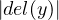) ≤ 0, ( -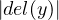) ≤ 0,
|
y la segunda que
 ( - ( - ) ≥ 0, ) ≥ 0,
|
por lo cual
 ( - ( - ) = 0 ) = 0
|
Pero entonces (3) del Lema 175 nos dice que del(y) no puede ser tramo final propio de del(s), por lo cual debe suceder que del(y) = del(s), ya que del(y)≠ε. Claramente entonces obtenemos que del(x) = ε. Similarmente se puede ver que del(z) = ε. Ya que que t termina con ) tenemos que z = ε. O sea que f(s1,...,sn) = xg(t1,...,tm) con del(x) = ε, de lo que se saca que f = xg ya que ( no ocurre en x. De la definicion de tipo se desprende que x = ε. __
Teorema 179. (Lectura unica de terminos). Dado t ∈ Tτ se da una de las siguientes:
n,t1,...,tn ∈ Tτ tales que t = f(t1,...,tn).
Proof. En virtud del Lema 174 solo nos falta probar la unicidad en el punto (2). Supongamos que
| t = f(t1,...,tn) = g(s1,...,sm) |
con n,m ≥ 1,f ∈ n, g ∈ m, t1,...,tn,s1,...,sm ∈ Tτ. Notese que f = g.
O sea que n = m = a(f). Notese que t1 es tramo inicial de s1 o s1 es tramo
inicial de t1, lo cual por el lema anterior nos dice que t1 = s1. Con el mismo
razonamiento podemos probar que debera suceder t2 = s2,...,tn = sn. __
El teorema anterior es importante ya que nos permite definir recursivamente funciones con dominio contenido en Tτ. Por ejemplo podemos definir una funcion F : Tτ → Tτ, de la siguiente manera:
n, con n≠2
2.Notese que si la unicidad de la lectura no fuera cierta, entonces las ecuaciones anterires no estarian definiendo en forma correcta una funcion ya que el valor de la imagen de un termino t estaria dependiendo de cual descomposicion tomemos para t.
Sean s,t ∈ Tτ. Diremos que s es subtermino (propio) de t si (no es igual a t y) s es subpalabra de t. A continuacion veremos de que manera ocurren los subterminos de un termino. Para esto recordemos un poco el concepto de ocurrencia.
Dadas palabras α,β ∈ Σ*, con  ,
, ≥ 1, y un natural i ∈{1,...,
≥ 1, y un natural i ∈{1,..., }, se dice
que α ocurre a partir de i en β cuando se de que existan palabras δ,γ tales que
β = δαγ y
}, se dice
que α ocurre a partir de i en β cuando se de que existan palabras δ,γ tales que
β = δαγ y  = i - 1.
= i - 1.
Notese que una palabra α puede ocurrir en β, a partir de i, y tambien a partir de j, con i≠j. En virtud de esto, hablaremos de las distintas ocurrencias de α en β. Por ejemplo hay dos ocurrencias de la palabra aba en la palabra
| cccccccabaccccabaccccc |
y tambien hay dos ocurrencias de la palabra aba en la palabra
| cccccccababacccccccccc |
En el primer caso diremos que dichas ocurrencias de aba son disjuntas, en cambio en el segundo caso puede apreciarse que las dos ocurrencias se superponen en una posicion. No definiremos en forma matematica precisa el concepto de ocurrencia pero lo describiremos con ejemplos de manera que el lector no tendra problemas en comprenderlo y manejarlo en forma correcta.
A veces diremos que una ocurrencia esta contenida o sucede dentro de otra. Por ejemplo la segunda ocurrencia de ab en babbbfabcccfabccc esta contenida en la primer ocurrencia de fabc en babbbfabcccfabccc. Tambien haremos reemplazos de ocurrencias por palabras. Por ejemplo el resultado de reemplazar la primer ocurrencia de abb en ccabbgfgabbgg por oolala es la palabra ccoolalagfgabbgg. El resultado de reemplazar todas las ocurrencias de aba en ccabagfgabaggaba por $$ es la palabra cc$$gfg$$gg$$. En algunos casos deberemos especificar que los reemplazos se hagan simultaneamente. Por ejemplo hablaremos del resultado de reemplazar en γ, simultaneamente, todas las ocurrencias de α1 por β1 y todas las de α2 por β2. Aqui la aclaracion de simultaneidad es importante ya que si primero reemplazaramos las ocurrencias de α1 por β1 y despues las de α2 por β2, el resultado puede cambiar porque en β1 puede haber ocurrencias de α2. Dejamos al lector dar un ejemplo en el cual el reemplazo secuencial y el simultaneo dan distintos resultados.
Proof. (a) Supongamos la ocurrencia de s comienza en algun tj. Entonces el
Lema 178 nos conduce a que dicha ocurrencia debera estar contenida en tj.
Veamos que la ocurrencia de s no puede ser a partir de un i ∈ {1,..., }.
Supongamos lo contrario. Tenemos entonces que s debe ser de la forma
g(s1,...,sm) ya que no puede estar en V ar ∪. Notese que i≠1 ya que en caso
contrario s seria un tramo inicial propio de t. Pero entonces g debe ser un
tramo final propio de f, lo cual es absurdo. Ya que s no puede comenzar con
parentesis o coma, hemos contemplado todos los posibles casos de comienzo de
la ocurrencia de s en t.
}.
Supongamos lo contrario. Tenemos entonces que s debe ser de la forma
g(s1,...,sm) ya que no puede estar en V ar ∪. Notese que i≠1 ya que en caso
contrario s seria un tramo inicial propio de t. Pero entonces g debe ser un
tramo final propio de f, lo cual es absurdo. Ya que s no puede comenzar con
parentesis o coma, hemos contemplado todos los posibles casos de comienzo de
la ocurrencia de s en t.
(b) y (c) pueden probarse por induccion, usando (a). __
Nota: Es importante notar que si bien no hemos definido en forma presisa el concepto de ocurrencia o de reemplazo de ocurrencias, la prueba del lema anterior es rigurosa en el sentido de que solo usa propiedades del concepto de ocurrencia y reemplazo de ocurrencias las cuales deberan ser comunes a cualquier definicion o formulacion matematica que se hiciera de aquellos conceptos. En este caso, es posible dar una defincion presisa y satisfactoria de dichos conceptos aunque para otros conceptos tales como los de pruebas absolutas de consistencia, aun no se ha encontrado una formulacion matematica adecuada.
Sea τ un tipo. Las palabras de alguna de las siguientes dos formas
|
seran llamadas formulas atomicas de tipo τ.
Dado un tipo τ, definamos recursivamente los conjuntos de palabras Fkτ, con k ≥ 0, de la siguiente manera:
|
Sea
| Fτ = ⋃ k≥0Fkτ |
Los elementos de Fτ seran llamados formulas de tipo τ. El siguiente lema es la herramienta basica que usaremos para probar propiedades acerca de los elementos de Fτ.
Lema 181. Supongamos φ ∈ Fkτ, con k ≥ 1. Entonces φ es de alguna de las siguientes formas
φ = (t ≡ s), con t,s ∈ Tτ.
φ = r(t1,...,tn), con r ∈n, t1,...,tn ∈ Tτ
φ = (φ1ηφ2), con η ∈{∧,∨,→,↔},φ1,φ2 ∈ Fk-1τ
φ = φ1, con φ1 ∈ Fk-1τ
φ = Qvφ1, con Q ∈{∀,∃},v ∈ V ar y φ1 ∈ Fk-1τ.
Proof. Induccion en k. __
Proof. (b) Induccion en k. El caso k = 0 es trivial. Supongamos (b) vale para cada φ ∈ Fkτ y sea φ ∈ Fk+1τ. Hay varios casos de los cuales haremos solo dos
CASO φ = (ψ1ηψ2), con ψ1,ψ2 ∈ Fkτ y η ∈{∨,∧,→,↔}.
Podemos tomar x = ε y φ1 = φ.
CASO φ = Qxiψ, con ψ ∈ Fkτ, i ≥ 1 y Q ∈{∀,∃}.
Por HI hay ∈ ({}∪{Qv : Q ∈ {∀,∃} y v ∈ V ar})* y ψ1 ∈ Fτ tales que ψ = ψ1 y ψ1 es de la forma (γ1ηγ2) o atomica. Entonces es claro que x = Qxi y φ1 = ψ1 cumplen (b). __
Lema 183. Ninguna formula es tramo final propio de una formula atomica, es decir, si φ = xψ, con φ ∈ F0τ y ,ψ ∈ Fτ, entonces x = ε.
Proof. Si φ es de la forma (t ≡ s), entonces  ( -
( - ) < 0 para cada
tramo final propio y de φ, lo cual termina el caso ya que del(ψ) es balanceada.
Supongamos entonces φ = r(t1,...,tn). Notese que ψ no puede ser tramo final
de t1,...,tn) ya que del(ψ) es balanceada y ( -
) < 0 para cada
tramo final propio y de φ, lo cual termina el caso ya que del(ψ) es balanceada.
Supongamos entonces φ = r(t1,...,tn). Notese que ψ no puede ser tramo final
de t1,...,tn) ya que del(ψ) es balanceada y ( - ) < 0 para cada
tramo final y de t1,...,tn). Es decir que ψ = y(t1,...,tn), para algun tramo final
y de r. Ya que en ψ no ocurren cuantificadores ni nexos ni el simbolo ≡ el Lema
181 nos dice ψ = (s1,...,sm), con
) < 0 para cada
tramo final y de t1,...,tn). Es decir que ψ = y(t1,...,tn), para algun tramo final
y de r. Ya que en ψ no ocurren cuantificadores ni nexos ni el simbolo ≡ el Lema
181 nos dice ψ = (s1,...,sm), con  ∈ m, m ≥ 1 y s1,...,sm ∈ Tτ. Ahora
es facil usando un argumento paresido al usado en la prueba del Teorema 179
concluir que m = n, si = ti, i = 1,...,n y es tramo final de r. Por (3) de la
definicion de tipo tenemos que
∈ m, m ≥ 1 y s1,...,sm ∈ Tτ. Ahora
es facil usando un argumento paresido al usado en la prueba del Teorema 179
concluir que m = n, si = ti, i = 1,...,n y es tramo final de r. Por (3) de la
definicion de tipo tenemos que  = r lo cual nos dice que φ = ψ y x = ε __
= r lo cual nos dice que φ = ψ y x = ε __
Proof. Por induccion en el k tal que φ ∈ Fkτ. El caso k = 0 es probado en el lema anterior. Asumamos que el resultado vale cuando φ ∈ Fkτ y veamos que vale cuando φ ∈ Fk+1τ. Mas aun supongamos φ ∈ Fk+1τ - Fkτ. Primero haremos el caso en que φ = Qvφ1, con Q ∈ {∀,∃},v ∈ V ar y φ1 ∈ Fkτ. Supongamos x≠ε. Ya que ψ no comienza con simbolos de v, tenemos que ψ debe ser tramo final de φ1 lo cual nos dice que hay una palabra x1 tal que x = Qvx1 y φ1 = x1ψ. Por HI tenemos que x1 ∈ ({}∪{Qv : Q ∈{∀,∃} y v ∈ V ar})* con lo cual x ∈ ({}∪{Qv : Q ∈{∀,∃} y v ∈ V ar})*. El caso en el que φ = φ1 con φ1 ∈ Fkτ, es similar. Note que no hay mas casos posibles ya que φ no puede comenzar con ( porque en x no ocurren parentesis por hipotesis __
Proposition 185. Si φ,ψ ∈ Fτ y x,y,z son tales que φ = xy, ψ = yz y y≠ε, entonces z = ε y x ∈ ({}∪{Qv : Q ∈{∀,∃} y v ∈ V ar})*. En particular ningun tramo inicial propio de una formula es una formula.
Proof. Ya que φ termina con ) tenemos que del(y)≠ε. Por un lema anterior tenemos que del(φ),del(ψ) ∈ Bal. Ademas
 ( - ( - ) ≤ 0, ) ≤ 0,
|
y la segunda que
 ( - ( - ) ≥ 0, ) ≥ 0,
|
por lo cual
 ( - ( - ) = 0 ) = 0
|
Pero entonces (3) del Lema 175 nos dice que del(y) no puede ser tramo final propio de del(φ), por lo cual debe suceder que del(y) = del(φ), ya que del(y)≠ε. Claramente entonces obtenemos que del(x) = ε. Similarmente se puede ver que del(z) = ε. Pero ψ termina con ) lo cual nos dice que z = ε. Es decir que φ = xψ. Por el lema anterior tenemos que x ∈ ({}∪{Qv : Q ∈{∀,∃} y v ∈ V ar})* _
Teorema 186. (Lectura unica de formulas) Dada φ ∈ Fτ se da una y solo una de las siguientes:
n, t1,...,tn ∈ Tτ
Mas aun, en los puntos (1), (2), (3), (4) y (5) tales descomposiciones son unicas.
Proof. Si una formula φ satisface (1), entonces φ no puede contener simbolos del alfabeto {∧,∨,→,↔} lo cual garantiza que φ no puede satisfacer (3). Ademas φ no puede satisfacer (2) o (4) o (5) ya que φ comienza con (. En forma analoga se puede terminar de ver que las propiedades (1),...,(5) son excluyentes.
La unicidad en las descomposiciones de (4) y (5) es obvia. La de (3) se desprende facilmente del lema anterior y la de los puntos (1) y (2) del lema analogo para terminos. __
Una formula φ sera llamada una subformula (propia) de una formula ψ, cuando φ (sea no igual a ψ y) tenga alguna ocurrencia en ψ.
Proof. Ejercicio. __
Definamos recursivamente la relacion ”v ocurre libremente en φ a partir de i”, donde v ∈ V ar, φ ∈ Fτ y i ∈{1,...,}, de la siguiente manera:

Dados v ∈ V ar, φ ∈ Fτ y i ∈{1,...,}, diremos que ”v ocurre acotadamente en φ a partir de i” cuando v ocurre en φ a partir de i y v no ocurre libremente en φ a partir de i.
Dada una formula φ, sea
| Li(φ) = {v ∈ V ar : hay un i tal que v ocurre libremente en φ a partir de i}. |
Los elementos de Li(φ) seran llamados variables libres de φ. Una sentencia sera una formula φ tal que Li(φ) = ∅. Usaremos Sτ para denotar el conjunto de las sentencias de tipo τ.
Proof. (a) y (b) son triviales de las definiciones y dejadas al lector
(d) Supongamos v ∈ Li((φηψ)), entonces hay un i tal que v ocurre libremente
en (φηψ) a partir de i. Por definicion tenemos que ya sea v ocurre libremente
en φ a partir de i - 1 o v ocurre libremente en ψ a partir de i - , con lo
cual v ∈ Li(φ) ∪ Li(ψ)
, con lo
cual v ∈ Li(φ) ∪ Li(ψ)
Supongamos ahora que v ∈ Li(φ) ∪ Li(ψ). S.p.d.g. supongamos v ∈ Li(ψ).
Por definicion tenemos que hay un i tal que v ocurre libremente en ψ a partir
de i. Pero notese que esto nos dice por definicion que v ocurre libremente en
(φηψ) a partir de i +  con lo cual v ∈ Li((φηψ)).
con lo cual v ∈ Li((φηψ)).
(c) es similar a (d)
(e) Supongamos v ∈ Li(Qxjφ), entonces hay un i tal que v ocurre libremente
en Qxjφ a partir de i. Por definicion tenemos que v≠xj y v ocurre libremente
en φ a partir de i - , con lo cual v ∈ Li(φ) -{xj}
, con lo cual v ∈ Li(φ) -{xj}
Supongamos ahora que v ∈ Li(φ)-{xj}. Por definicion tenemos que hay un i tal que v ocurre libremente en φ a partir de i. Ya que v≠xj esto nos dice por definicion que v ocurre libremente en Qxjφ a partir de i + , con lo cual v ∈ Li(Qxjφ). __
@@finpagina@@
A continuacin introduciremos de manera intuitiva el valor de verdad de una
frmula. Para poder darle sentido a una frmula debemos tener un conjunto A,
llamado universo, sobre el cual tomarn posibles valores las variables. De esta forma
interpretaremos que un cuantificador ∀xi se est refiriendo a que la propiedad que
sigue se cumple para todos los posibles valores de xi en A. Y un cuantificador ∃xi se
estar refiriendo a que al menos para un valor de xi en A la propiedad que sigue a
dicho cuantificador vale. En lo que se refiere a las variables que ocurren
libremente en la frmula, notese que para que la frmula sea verdadera o
falsa deberemos haber asignado valores concretos del conjunto A a cada
una de las variables libres. Por otra parte tambin para darle sentido a una
frmula deberemos tener asociado a cada nombre de funcin de n una
operacion n-aria sobre A, a cada nombre de relacin r ∈n una relacin n-aria
sobre A y a cada nombre de constante un elemento concreto del conjunto
A.
Por ejemplo consideremos el tipo τ1 = ({0,1},{+,.},∅,{(+,2),(.,2)}) y fijemos como universo el conjunto ω. Adems interpretemos el nombre de funcin + como la funcin suma sobre ω, interpretemos el nombre de funcin . cmo la funcion producto sobre ω y a los nombres de constante 0 y 1 como los nmeros 0 y 1 respectivamente. Entonces la formula ∃x5((x2 ≡ .(x5,x3)) sera verdadera si el valor asignado a x2 es divisible por el valor asignado a x3.
En esta seccion definiremos en forma matematica como interpretar las formulas y terminos de un tipo dado. Si bien las nociones que daremos se corresponderan con la idea intuitiva antes descripta, cabe destacar que nuestras definiciones seran rigurosas y precisas como las de cualquier tema clasico de la matematica.
Sea A un conjunto y sea n ∈ N. Por una operacion n-aria sobre A entenderemos una funcion cuyo dominio es An y cuya imagen esta contenida en A. Por una relacion n-aria sobre A entenderemos un subconjunto de An.
Sea τ un tipo. Una estructura o modelo de tipo τ sera un par A = (A,i) tal que:
∪∪, tal que:
, i(c) es un elemento de A
, i(f) es una operacion n-aria sobre A
n, i(r) es una relacion n-aria sobre A.
Sea A = (A,i) una estructura de tipo τ. Una asignacion de A sera un elemento de
AN = {infinituplas de elementos de A}. Si  = (a1,a2,...) es una asignacion, entonces
diremos que aj es el valor que
= (a1,a2,...) es una asignacion, entonces
diremos que aj es el valor que  le asigna a la variable xj.
le asigna a la variable xj.
Dada una estructura A de tipo τ, un termino t ∈ Tτ y una asignacion
 = (a1,a2,...) ∈ AN definamos recursivamente tA[
= (a1,a2,...) ∈ AN definamos recursivamente tA[ ] de la siguiente manera
] de la siguiente manera
 ] = ai
, entonces tA[
] = ai
, entonces tA[ ] = i(c)
n,n ≥ 1 y t1,...,tn ∈ Tτ, entonces
tA[
] = i(c)
n,n ≥ 1 y t1,...,tn ∈ Tτ, entonces
tA[ ] = i(f)(t1A[
] = i(f)(t1A[ ],...,tnA[
],...,tnA[ ])
])El elemento tA[ ] sera llamado el valor de t en la estructura A para la asignacion
] sera llamado el valor de t en la estructura A para la asignacion
 .
.
Lema 188. Sea A una estructura de tipo τ y sea t ∈ Tτ. Supongamos que
 ,
, son asignaciones tales que ai = bi, cada vez que xi ocurra en t. Entonces
tA[
son asignaciones tales que ai = bi, cada vez que xi ocurra en t. Entonces
tA[ ] = tA[
] = tA[ ].
].
Proof. Sea
Teo0 es facil de probar. Veamos Teok ⇒Teok+1. Supongamos t ∈ Tk+1τ - Tkτ y sean
 ,
, asignaciones tales que ai = bi, cada vez que xi ocurra en t. Notese que
t = f(t1,...,tn), con f ∈n,n ≥ 1 y t1,...,tn ∈ Tkτ. Notese que para cada
j = 1,...,n, tenemos que ai = bi, cada vez que xi ocurra en tj, lo cual por Teok nos
dice que
asignaciones tales que ai = bi, cada vez que xi ocurra en t. Notese que
t = f(t1,...,tn), con f ∈n,n ≥ 1 y t1,...,tn ∈ Tkτ. Notese que para cada
j = 1,...,n, tenemos que ai = bi, cada vez que xi ocurra en tj, lo cual por Teok nos
dice que
tjA[ ] = t
jA[ ] = t
jA[ ], j = 1,...,n ], j = 1,...,n
|
Se tiene entonces que
|
__
Dada una asignacion  ∈ AN y a ∈ A, con ↓ia(
∈ AN y a ∈ A, con ↓ia( ) denotaremos la asignacion que
resulta de reemplazar en
) denotaremos la asignacion que
resulta de reemplazar en  el i-esimo elemento por a. A continuacion definiremos
recursivamente la relacion A
el i-esimo elemento por a. A continuacion definiremos
recursivamente la relacion A φ[
φ[ ], donde A es una estructura de tipo τ,
], donde A es una estructura de tipo τ,  es una
asignacion y φ ∈ Fτ. Escribiremos A ⁄
es una
asignacion y φ ∈ Fτ. Escribiremos A ⁄ φ[
φ[ ] para expresar que no se da
A
] para expresar que no se da
A φ[
φ[ ].
].
 φ[
φ[ ] si y solo si tA[
] si y solo si tA[ ] = sA[
] = sA[ ]
] φ[
φ[ ] si y solo si (t1A[
] si y solo si (t1A[ ],...,tmA[
],...,tmA[ ]) ∈ i(r)
]) ∈ i(r) φ[
φ[ ] si y solo si A
] si y solo si A φ1[
φ1[ ] y A
] y A φ2[
φ2[ ]
] φ[
φ[ ] si y solo si A
] si y solo si A φ1[
φ1[ ] o A
] o A φ2[
φ2[ ]
] φ[
φ[ ] si y solo si A
] si y solo si A φ2[
φ2[ ] o A ⁄
] o A ⁄ φ1[
φ1[ ]
] φ[
φ[ ] si y solo si ya sea se dan A
] si y solo si ya sea se dan A φ1[
φ1[ ] y A
] y A φ2[
φ2[ ] o se dan
A ⁄
] o se dan
A ⁄ φ1[
φ1[ ] y A ⁄
] y A ⁄ φ2[
φ2[ ]
] φ[
φ[ ] si y solo si A ⁄
] si y solo si A ⁄ φ1[
φ1[ ]
] φ[
φ[ ] si y solo si para cada a ∈ A, se da que A
] si y solo si para cada a ∈ A, se da que A φ1[↓ia(
φ1[↓ia( )]
)] φ[
φ[ ] si y solo si hay un a ∈ A tal que A
] si y solo si hay un a ∈ A tal que A φ1[↓ia(
φ1[↓ia( )]
)]Cuando se de A φ[
φ[ ] diremos que la estructura A satisface φ en la asignacion
] diremos que la estructura A satisface φ en la asignacion  y en
tal caso diremos que φ es verdadera en A para la asignacion
y en
tal caso diremos que φ es verdadera en A para la asignacion  . Cuando no se de
A
. Cuando no se de
A φ[
φ[ ] diremos que la estructura A no satisface φ en la asignacion
] diremos que la estructura A no satisface φ en la asignacion  y en tal caso
diremos que φ es falsa en A para la asignacion
y en tal caso
diremos que φ es falsa en A para la asignacion  . Tambien hablaremos del valor de
verdad de φ en A para la asignacion
. Tambien hablaremos del valor de
verdad de φ en A para la asignacion  el cual sera igual a 1 si se da A
el cual sera igual a 1 si se da A φ[
φ[ ] y 0 en
caso contrario.
] y 0 en
caso contrario.
Lema 189. Supongamos que  ,
, son asignaciones tales que si xi ∈ Li(φ),
entonces ai = bi. Entonces A
son asignaciones tales que si xi ∈ Li(φ),
entonces ai = bi. Entonces A φ[
φ[ ] sii A
] sii A φ[
φ[ ]
]
Proof. Probaremos por induccion en k que el lema vale para cada φ ∈ Fkτ. El caso k = 0 se desprende del Lema 188. Veamos que Teok implica Teok+1. Sea φ ∈ Fk+1τ - Fkτ. Hay varios casos:
CASO φ = (φ1 ∧ φ2).
Ya que Li(φi) ⊆ Li(φ), i = 1,2, Teok nos dice que A φi[
φi[ ] sii A
] sii A φi[
φi[ ], para
i = 1,2. Se tiene entonces que
], para
i = 1,2. Se tiene entonces que
|
CASO φ = (φ1 ∨ φ2).
Es completamente similar al anterior.
CASO φ = (φ1 → φ2).
Es completamente similar al anterior.
CASO φ = (φ1 ↔ φ2).
Es completamente similar al anterior.
CASO φ = φ1.
Es completamente similar al anterior.
CASO φ = ∀xjφ1.
Supongamos A φ[
φ[ ]. Entonces por (8) en la def de A
]. Entonces por (8) en la def de A φ[
φ[ ] se tiene que
A
] se tiene que
A φ1[↓ ja(
φ1[↓ ja( )], para todo a ∈ A. Notese que ↓ ja(
)], para todo a ∈ A. Notese que ↓ ja( ) y ↓ ja(
) y ↓ ja( ) coinciden en
toda xi de xi ∈ Li(φ1) ⊆ Li(φ1) ∪{xj}, con lo cual por Teok se tiene que
A
) coinciden en
toda xi de xi ∈ Li(φ1) ⊆ Li(φ1) ∪{xj}, con lo cual por Teok se tiene que
A φ1[↓ja(
φ1[↓ja( )], para todo a ∈ A, lo cual por (8) en la def de A
)], para todo a ∈ A, lo cual por (8) en la def de A φ[
φ[ ] nos dice
que A
] nos dice
que A φ[
φ[ ]. La prueba de que A
]. La prueba de que A φ[] implica que A
φ[] implica que A φ[
φ[ ] es similar.
] es similar.
CASO φ = ∃xjφ1.
Es similar al anterior. __
En virtud del corolario anterior tenemos que el valor de verdad de una sentencia
φ en una estructura dada A para una asignacion  no depende de
no depende de  , es
decir este valor es ya sea 1 para todas las asignaciones o 0 para todas las
asignaciones. En el primer caso diremos que φ es verdadera en A (y escribiremos
A
, es
decir este valor es ya sea 1 para todas las asignaciones o 0 para todas las
asignaciones. En el primer caso diremos que φ es verdadera en A (y escribiremos
A φ) y en el segundo caso diremos que φ es falsa en A (y escribiremos
A ⁄
φ) y en el segundo caso diremos que φ es falsa en A (y escribiremos
A ⁄ φ)
φ)
Una sentencia de tipo τ sera llamada universalmente valida si es verdadera en cada modelo de tipo τ.
Dadas φ,ψ ∈ Fτ diremos que φ y ψ son equivalentes cuando se de la siguiente condicion
 φ[
φ[ ] si y solo si A
] si y solo si A ψ[
ψ[ ], para cada modelo de tipo τ, A y cada
], para cada modelo de tipo τ, A y cada
 ∈ AN
∈ ANEscribiremos φ ∽ ψ cuando φ y ψ sean equivalentes. Notese que ∽ es una relacion de equivalencia.
Proof. (a) Tenemos que
|
(b) Es dejado al lector.
(c) Por induccion en el k tal que α ∈ Fkτ. __
@@finpagina@@
Dado un modelo de tipo τ, A = (A,i), para cada s ∈∪∪, usaremos sA para
denotar a i(s). Sean A y B modelos de tipo τ. Una funcion F : A → B sera un
homomorfismo de A en B si se cumplen las siguientes
,
n, a1,...,an ∈
A.
n,
a1,...,an ∈ A.Un isomorfismo de A en B sera un un homomorfismo de A en B el cual sea
biyectivo y cuya inversa sea un homomorfismo de B en A. Diremos que
los modelos A y B son isomorfos (en simbolos: A B), cuando haya un
isomorfismo F de A en B. Diremos que F : A → B es un homomorfismo para
expresar que F es un homomorfismo de A en B. Analogamente diremos que
F : A → B es un isomorfismo para expresar que F es un isomorfismo de A en
B.
B), cuando haya un
isomorfismo F de A en B. Diremos que F : A → B es un homomorfismo para
expresar que F es un homomorfismo de A en B. Analogamente diremos que
F : A → B es un isomorfismo para expresar que F es un isomorfismo de A en
B.
Ejercicio: Pruebe que la relacion  es reflexiva, transitiva y simetrica.
es reflexiva, transitiva y simetrica.
Lema 191. Sea F : A → B un homomorfismo. Entonces
| F(tA[(a 1,a2,...)] = tB[(F(a 1),F(a2),...)] |
para cada t ∈ Tτ, (a1,a2,...) ∈ AN.
Proof. Sea
| F(tA[(a 1,a2,...)] = tB[(F(a 1),F(a2),...)] |
para cada t ∈ Tkτ, (a1,a2,...) ∈ AN.
Teo0 es trivial. Veamos que Teok implica Teok+1. Supongamos que vale Teok y supongamos
F : A → B es un homomorfismo, t ∈ Tk+1τ - Tkτ y  = (a1,a2,...) ∈ AN.
Denotemos (F(a1),F(a2),...) con F(
= (a1,a2,...) ∈ AN.
Denotemos (F(a1),F(a2),...) con F( ). Por Lema 174, t = f(t1,...,tn), con
n ≥ 1,f ∈n y t1,...,tn ∈ Tkτ. Tenemos entonces
). Por Lema 174, t = f(t1,...,tn), con
n ≥ 1,f ∈n y t1,...,tn ∈ Tkτ. Tenemos entonces
|
__
Lema 192. Supongamos que F : A → B es un isomorfismo. Sea φ ∈ Fτ. Entonces
A φ[(a1,a2,...)] sii B φ[(a1,a2,...)] sii B φ[(F(a1),F(a2),...)] φ[(F(a1),F(a2),...)]
|
para cada (a1,a2,...) ∈ AN. En particular A y B satisfacen las mismas sentencias de tipo τ.
Proof. Sea
A φ[(a1,a2,...)] sii B φ[(a1,a2,...)] sii B φ[(F(a1),F(a2),...)] φ[(F(a1),F(a2),...)]
|
para cada (a1,a2,...) ∈ AN
Un tipo τ sera llamado algebraico si no contiene nombres de relacion. Un modelo de un tipo algebraico τ sera llamado una τ-algebra. Ejemplos clasicos de τ-algebras son los grupos (τ = ({e},{.2},∅,a)), los reticulados, los reticulados acotados, las algebras de Boole, etc.
Una propiedad particular de los homomorfismos de τ-algebras es la siguiente
Lema 193. Supongamos τ es algebraico. Si F : A → B es un homomorfismo biyectivo, entonces F es un isomorfismo.
Proof. Solo falta probar que F-1 es un homomorfismo. Supongamos que c ∈. Ya
que F(cA) = cB, tenemos que F-1(cB) = cA, por lo cual F-1 cumple (1)
de la definicion de homomorfismo. Supongamos ahora que f ∈n y sean
b1,...,bn ∈ B. Sean a1,...,an ∈ A tales que F(ai) = bi, i = 1,...,n. Tenemos
que
|
por lo cual F-1 satisface (2) de la definicion de homomorfismo __
Dadas τ-algebras A y B, diremos que A es una subalgebra de B cuando se den las siguientes condiciones
n, n ≥ 1Por ejemplo sea τ = (
Si B es una τ-algebra, entonces un subuniverso de B es un conjunto A el cual cumple las siguientes condiciones:
nEs importante notar que si bien los conceptos de subalgebra y subuniverso estan muy relacionados, se trata de objetos diferentes ya que las subalgebras de un algebra dada son estructuras de tipo τ y por lo tanto son pares ordenados y los subuniversos de un algebra dada son ciertos subconjuntos por lo cual no son pares ordenados. A continuacion presisaremos la relacion que hay entre estos dos conceptos. Notese que dado un subuniverso A de una τ-algebra B podemos definir en forma natural una τ-algebra A de la siguiente manera:
n.Es facil chequear que el algebra A asi definida es una subalgebra de B. Lo anterior nos muestra que los subuniversos de un algebra dada son precisamente los universos de las distintas subalgebras de dicha algebra.
Lema 194. Supongamos τ es algebraico. Si F : A → B es un homomorfismo, entonces IF es un subuniverso de B
Proof. Ya que A≠∅, tenemos que IF≠∅. Es claro que cB = F(cA) ∈ IF, para cada
c ∈. Sea f ∈n y sean b1,...,bn ∈ IF Sean a1,...,an tales que F(ai) = bi,
i = 1,...,n. Tenemos que
| fB(b 1,...,bn) = fB(F(a 1),...,F(an)) = F(fA(a 1,...,an)) ∈ IF |
por lo cual IF es cerrada bajo fB. __
Sea A una τ-algebra. Una congruencia sobre A es una relacion de equivalencia θ sobre A la cual cumple que
| a1θb1,...,anθbn implica fA(a 1,...,an)θfA(b 1,...,bn) |
cualesquiera sean a1,...,an,b1,...,bn ∈ A yf ∈n.
Dada una congruencia θ sobre A se puede formar una nueva algebra A∕θ de la siguiente manera:
n.
A∕θ sera llamada el algebra cociente de A por θ.
Lema 195. Supongamos τ es algebraico. Si F : A → B es un homomorfismo, entonces kerF es una congruencia sobre A
Proof. Sea f ∈n. Supongamos que a1,...,an,b1,...,bn ∈ A son tales que
a1 kerFb1,...,an kerFbn. Tenemos entonces que
|
lo cual nos dice que fA(a1,...,an)kerFfA(b1,...,bn) __
Al mapeo
|
lo llamaremos la proyeccion canonica y lo denotaremos con πθ.
Proof. Sea c ∈. Tenemos que
| πθ(cA) = cA∕θ = cA∕θ |
Sea f ∈n, con n ≥ 1 y sean a1,...,an ∈ A. Tenemos que
|
con lo cual πθ es un homomorfismo. Es trivial que kerπθ = θ __
Proof. Ya que πθ es un homomorfismo, se puede aplicar el Lema 191. __
Teorema 198. Sea F : A → B un homomorfismo sobreyectivo. Entonces
|
define sin ambiguedad una funcion la cual es un isomorfismo de A∕kerF en B
Proof. Notese que la definicion de es inambigua ya que si a∕kerF = a′∕kerF,
entonces F(a) = F(a′). Ya que F es sobre, tenemos que lo es. Supongamos que
(a∕kerF) = (a′∕kerF). Claramente entonces tenemos que F(a) = F(a′), lo cual
nos dice que a∕kerF = a′∕kerF. Esto prueba que es inyectiva. Para ver que es
un isomorfismo, por el Lema 193, basta con ver que es un homomorfismo. Sea
c ∈. Tenemos que
| (cA∕ ker F) = (cA∕kerF) = F(cA) = cB |
Sea f ∈n. Sean a1,...,an ∈ A. Tenemos que
|
con lo cual cunple (2) de la definicion de homomorfismo __
Dadas τ-algebras A,B, definamos una nueva τ-algebra A × B, de la siguiente manera
nLlamaremos a A × B el producto directo de A y B.
Los mapeos
|
seran llamados las proyecciones canonicas asociadas al producto A × B
Proof. Veamos que π1 es un homomorfismo. Primero notese que si c ∈,
entonces
| π1(cA×B) = π 1((cA,cB)) = cA |
Sea f ∈n, con n ≥ 1 y sean (a1,b1),...,(an,bn) ∈ A × B. Tenemos que
|
con lo cual hemos probado que π1 cumple (2) de la definicion de homomorfismo __
Lema 200. Para cada t ∈ Tτ, ((a1,b1),(a2,b2),...) ∈ (A × B)N, se tiene que tA×B[((a1,b1),(a2,b2),...)] = (tA[(a1,a2,...)],tB[(b1,b2,...)])
Probaremos dos teoremas muy importantes que en algun sentido nos dicen que el reemplazo sintactico se lleva bien con la semantica.
Si t es un termino de tipo τ, entonces escribiremos t = dt(v1,...,vn) para declarar que v1,...,vn son variables distintas tales que toda variable que ocurre en t pertenece a {v1,...,vn} (no necesariamente toda vj debe ocurrir en t). El uso de declaraciones de la forma t = dt(v1,...,vn) sera muy util cuando se lo combina con ciertas convenciones notacionales que describiremos a continuacion.
Notese que cuando las palabras Pi′s son terminos, t(P1,...,Pn) es un termino (Lema 180). Ademas notese que en esta convencion notacional, el orden de las variables v1,...,vn es clave. Por ejemplo si τ = (∅,{FU},∅,{(FU,2)}) y t = FU(FU(x2,x16),x3) y declaramos t = dt(x3,x2,x16), entonces t(##,▴#▴,@@) denotara la palabra FU(FU(▴#▴,@@),##). Pero si declaramos t = dt(x16,x3,x2), entonces t(##,▴#▴,@@) denotara la palabra FU(FU(@@,##),▴#▴).
 ], donde
], donde  es una asignacion tal que a cada
vi le asigna el valor ai. (Notese que esta notacion es inhambigua gracias
al Lema 188.)
es una asignacion tal que a cada
vi le asigna el valor ai. (Notese que esta notacion es inhambigua gracias
al Lema 188.)Nuevamente cabe destacar que en esta convencion notacional, el orden de las variables v1,...,vn es clave. Por ejemplo si τ y t son los dados en el ejemplo anterior y A es dado por A = {1,2,3} y FUA(i,j) = j, para cada i,j ∈ A, tenemos que tA[2,1,3] = 2 si declaramos t = dt(x3,x2,x16), pero tA[2,1,3] = 1 si declaramos t = dt(x16,x3,x2).
Para establecer nuestra Convencion Notacional 3, debemos antes enunciar un lema clave el cual el lector no tendra inconvenientes en probar.
Lema 201. Sea τ un tipo cualquiera y supongamos t ∈ Tτ. Si t = dt(v1,...,vn), entonces se da alguna de las siguientes
m y t1,...,tm ∈ Tτ tales que las variables que
ocurren en cada uno de ellos estan en {v1,...,vn}
Proof. Rutina __
Cabe destacar que esta ultima convencion notacional junto con la Convencion Notacional 1, nos dice que cuando se de el caso (3) del Lema 201, si P1,...,Pn son palabras cualesquiera, entonces t(P1,...,Pn) = f(t1(P1,...,Pn),...,tm(P1,...,Pn)).
El siguiente lema se basa en la Convencion Notacional 3 y nos permite darle caracter recursivo a la notacion tA[a1,....,an].
Lema 202. Sea τ un tipo cualquiera y t ∈ Tτ. Supongamos t = dt(v1,...,vn). Sea A un modelo de tipo τ. Sean a1,...,an ∈ A. Se tiene que:
m y t1,...,tm ∈ Tτ, entonces
| tA[a 1,....,an] = fA(t 1A[a 1,....,an],...,tmA[a 1,....,an]) |
Proof. (1) y (2) son triviales.
(3) Sea  una asignacion tal que a cada vi le asigna el valor ai. Tenemos que
una asignacion tal que a cada vi le asigna el valor ai. Tenemos que
Ahora si podemos enunciar y probar el primero de nuestros teoremas de reemplazo
Teorema 203. Supongamos t = dt(w1,...,wk), s1 = ds1(v1,...,vn),...,sk = dsk(v1,...,vn). Todas las variables de t(s1,...,sk) estan en {v1,...,vn} y si declaramos t(s1,...,sk) = dt(s1,...,sk)(v1,...,vn), entonces para cada estructura A y a1,....,an ∈ A, se tiene que
| t(s1,...,sk)A[a 1,....,an] = tA[s 1A[a 1,....,an],...,skA[a 1,....,an]]. |
Proof. Por induccion en el l tal que t ∈ Tlτ. El caso l = 0 es dejado al lector.
Supongamos entonces que el teorema vale siempre que t ∈ Tlτ y veamos que entonces
vale cuando t ∈ Tl+1τ -Tlτ. Por el Lema 201 hay f ∈m y t1,...,tm terminos tales
t = f(t1,...,tm) y las variables que ocurren en cada ti estan en {w1,...,wk}. Por la
unicidad de la lectura de terminos tenemos que t1,...,tm ∈ Tlτ (por que?).
Notese que por nuestra Convencion Notacional 3 asumimos ya hechas las
declaraciones
| t1 = dt1(w1,...,wk),...,tm = dtm(w1,...,wk) |
Por HI tenemos que las variables de cada ti(s1,...,sk) estan en {v1,...,vn}, lo cual nos permite hacer las siguientes declaraciones:
| ti(s1,...,sk) = dti(s1,...,sk)(v1,...,vn), i = 1,...,m |
Por HI tenemos entonces que
ti(s1,...,sk)A[ ] = t
iA[s
1A[ ] = t
iA[s
1A[ ],...,s
kA[ ],...,s
kA[ ]], i = 1,...,m ]], i = 1,...,m
|
Ya que las variables de cada ti(s1,...,sk) estan en {v1,...,vn}, tenemos que las variables de t(s1,...,sk) = f(t1(s1,...,sk),...,tm(s1,...,sk)) estan en {v1,...,vn}. Declaremos entonces t(s1,...,sk) = dt(s1,...,sk)(v1,...,vn). Solo nos falta probar que
| t(s1,...,sk)A[a 1,....,an] = tA[s 1A[a 1,....,an],...,skA[a 1,....,an]]. |
lo cual se detalla a continuacion
|
__
@@finpagina@@
Si φ es una formula de tipo τ, entonces escribiremos φ = dφ(v1,...,vn) para declarar que v1,...,vn son variables distintas tales que Li(φ) ⊆{v1,...,vn}. Tal como para el caso de terminos, el uso de declaraciones de la forma φ = dφ(v1,...,vn) sera muy util cuando se convina con ciertas convenciones notacionales que describiremos a continuacion.
Notese que cuando las palabras Pi′s son terminos, φ(P1,...,Pn) es una formula. Ademas notese que tal como para el caso de terminos, en esta convencion notacional, el orden de las variables v1,...,vn es clave. Es facil dar el ejemplo analogo al dado para terminos.
 φ[a1...,an]
significara que A
φ[a1...,an]
significara que A φ[
φ[ ], donde
], donde  es una asignacion tal que a cada vi le
asigna el valor ai. (Notese que esta definicion es inambigua gracias al Lema
189). En gral A ⁄
es una asignacion tal que a cada vi le
asigna el valor ai. (Notese que esta definicion es inambigua gracias al Lema
189). En gral A ⁄ φ[a1,....,an] significara que no sucede A
φ[a1,....,an] significara que no sucede A φ[a1,....,an]
φ[a1,....,an]Nuevamente cabe destacar que en esta convencion notacional, el orden de las variables v1,...,vn es clave y dejamos al lector encontrar un ejemplo donde esto se vea claramente. Para establecer nuestra Convencion Notacional 6, debemos antes enunciar un lema clave el cual el lector no tendra inconvenientes en probar.
Lema 204. Sea τ un tipo cualquiera y φ ∈ Fτ. Supongamos φ = dφ(v1,...,vn). Entonces se una y solo una de las siguientes:
m y t1,...,tm ∈ Tτ, unicos y tales que las
variables que ocurren en cada ti estan todas en {v1,...,vn}
Proof. Induccion en el k tal que φ ∈ Fkτ __
El siguiente lema se basa en la Convencion Notacional 6 y nos permite darle
caracter recursivo a la notacion A φ[a1,....,an].
φ[a1,....,an].
Lema 205. Supongamos φ = dφ(v1,...,vn). Sea A = (A,i) un modelo de tipo τ y sean a1,...,an ∈ A. Entonces
 φ[a1,....,an] si y solo si tA[a1,...,an] = sA[a1,...,an]
φ[a1,....,an] si y solo si tA[a1,...,an] = sA[a1,...,an] φ[a1,....,an] si y solo si (t1A[a1,...,an],...,tmA[a1,...,an]) ∈ rA
φ[a1,....,an] si y solo si (t1A[a1,...,an],...,tmA[a1,...,an]) ∈ rA φ[a1,....,an] si y solo si A
φ[a1,....,an] si y solo si A φ1[a1,....,an] y A
φ1[a1,....,an] y A φ2[a1,....,an]
φ2[a1,....,an] φ[a1,....,an] si y solo si A
φ[a1,....,an] si y solo si A φ1[a1,....,an] o A
φ1[a1,....,an] o A φ2[a1,....,an]
φ2[a1,....,an] φ[a1,....,an] si y solo si A
φ[a1,....,an] si y solo si A φ2[a1,....,an] o A ⁄
φ2[a1,....,an] o A ⁄ φ1[a1,....,an]
φ1[a1,....,an] φ[a1,....,an] si y solo si ya sea A
φ[a1,....,an] si y solo si ya sea A φ1[a1,....,an] y
A
φ1[a1,....,an] y
A φ2[a1,....,an] o A ⁄
φ2[a1,....,an] o A ⁄ φ1[a1,....,an] y A ⁄
φ1[a1,....,an] y A ⁄ φ2[a1,....,an]
φ2[a1,....,an] φ[a1,....,an] si y solo si A ⁄
φ[a1,....,an] si y solo si A ⁄ φ1[a1,....,an]
φ1[a1,....,an] φ[a1,....,an] si y solo si A
φ[a1,....,an] si y solo si A φ1[a1,....,a,...,an], para todo a ∈ A.
φ1[a1,....,a,...,an], para todo a ∈ A. φ[a1,....,an] si y solo si A
φ[a1,....,an] si y solo si A φ1[a1,....,an,a], para todo a ∈ A.
φ1[a1,....,an,a], para todo a ∈ A. φ[a1,....,an] si y solo si A
φ[a1,....,an] si y solo si A φ1[a1,....,a,...,an], para algun a ∈
A.
φ1[a1,....,a,...,an], para algun a ∈
A. φ[a1,....,an] si y solo si A
φ[a1,....,an] si y solo si A φ1[a1,....,an,a], para algun a ∈ A.
φ1[a1,....,an,a], para algun a ∈ A.
Proof. Rutina. __
Lema 206. Si Qv ocurre en φ a partir de i, entonces hay una unica formula ψ tal que Qvψ ocurre en φ a partir de i.
Proof. Por induccion en el k tal que φ ∈ Fτ. __
Dada una ocurrencia de Qv en una formula φ, la formula ψ del lema anterior sera llamada el alcance de dicha ocurrencia en φ. Notese que dos ocurrencias distintas de Qv en φ pueden tener alcances distintos.
Diremos que v es sustituible por w en φ cuando ninguna ocurrencia libre de v en φ sucede dentro de una ocurrencia de una subformula de la forma Qwψ en φ. En otras palabras v no sera sustituible por w en φ cuando alguna ocurrencia libre de v en φ suceda dentro de una ocurrencia en φ de una formula de la forma Qwψ. Notese que puede suceder que v sea sustituible por w en φ y que sin envargo haya una subformula de la forma Qwψ para la cual v ∈ Li(Qwψ). Dejamos como ejercicio encontrar un ejemplo de esta situacion.
Usando lemas anteriores podemos ver que se dan las siguientes propiedades
substituible por w en φ2
Notese que las propiedades (1),...,(7) pueden usarse para dar una definicion recursiva de la relacion ”v es sustituible por w en φ”.
Ahora si podemos enunciar y probar el primero de nuestros teoremas de reemplazo. Antes una definicion. Dado un termino t, diremos que una variable v es sustituible por t en φ cuando v sea sustituible en φ por cada variable que ocurre en t.
Teorema 207. Supongamos φ = dφ(w1,...,wk), t1 = dt1(v1,...,vn),...,tk = dtk(v1,...,vn) y supongamos ademas que cada wj es sustituible por tj en φ. Entonces
 ∈ An se tiene
∈ An se tiene
A φ(t1,...,tk)[ φ(t1,...,tk)[ ] si y solo si A ] si y solo si A φ[t1A[ φ[t1A[ ],...,t
kA[ ],...,t
kA[ ]] ]]
|
Proof. Probaremos que se dan (a) y (b), por induccion en el l tal que φ ∈ Flτ. El caso l = 0 es una consecuencia directa del Teorema 203. Supongamos (a) y (b) valen para cada φ ∈ Flτ y sea φ ∈ Fl+1τ - Flτ. Notese que se puede suponer que cada vi ocurre en algun ti, y que cada wi ∈ Li(φ), ya que para cada φ, el caso general se desprende del caso con estas restricciones. Hay varios casos
CASO φ = ∀wφ1, con w ⁄∈{w1,...,wk}.
Notese que cada wj ∈ Li(φ1). Ademas notese que w ⁄∈{v1,...,vn} ya que de lo contrario w ocurriria en algun tj, y entonces wj no seria sustituible por tj en φ. Sean
|
Declaremos
j = d j(v1,...,vn,w) j(v1,...,vn,w)
|
Notese que nuestra Convencion Notacional 6 nos dice que tenemos implicitamente hecha la declaracion φ1 = dφ1(w1,...,wk,w). Por (a) de la hipotesis inductiva tenemos que
Li(φ1(t1,...,tk,w)) = Li(φ1( 1,..., 1,..., k, k+1)) ⊆{v1,...,vn,w} k, k+1)) ⊆{v1,...,vn,w}
|
y por lo tanto
| Li(φ(t1,...,tk)) ⊆{v1,...,vn} |
lo cual prueba (a). Finalmente para probar (b) declaremos φ(t1,...,tk) = dφ(t1,...,tk)(v1,...,vn). Se tiene que
|
lo cual pueba (b). Dejamos al lector los casos restantes. __
 φ(t)[a1] si y solo si fA tiene un pto fijo, es decir, fA(a) = a,
para algun a ∈ A
φ(t)[a1] si y solo si fA tiene un pto fijo, es decir, fA(a) = a,
para algun a ∈ A
 φ[tA[a1]] si y solo si a1 esta en la imagen de fA
φ[tA[a1]] si y solo si a1 esta en la imagen de fAlas cuales son condiciones claramente no equivalentes.
Una teoria de primer orden sera un par (Σ,τ), donde τ es un tipo y Σ es un conjunto de sentencias de tipo τ. Los elementos de Σ seran llamados axiomas propios de (Σ,τ). Un modelo de (Σ,τ) sera una estructura de tipo τ la cual satisfaga todos los axiomas propios de (Σ,τ). Hay ejemplos muy naturales de teorias de primer orden, a continuacion damos algunos.
Posets. Sea
| Po = ({A≤R,A≤T,A≤A},τPo) |
donde τPo = (∅,∅,{≤},{(≤,2)}) y
Reticulados. Ahora consideraremos una nueva teoria de primer orden que llamaremos Ret. Sea τRet = (∅,{s2,i2},{≤2},a) y sea ΣRet el siguiente conjunto de sentencias:

De las observaciones anteriores el lector ya se habra dado cuenta que dada una estructura A de tipo τRet son equivalentes
Grafos. Sea τGr = (∅,∅,{r},{(r,2)}) y
Ahora consideremos la siguiente sentencia de tipo τPo
μ = ∀x1∀x2
|
Notese que si A es un modelo de Po (i.e. ”un poset”), entonces la formula ∀x3 x3 ≤ x1 ”dice en A” que ”x1 es un maximo”. Es decir que la sentencia μ dice en A que si x1 y x2 son maximos entonces son iguales. Sabemos que μ es verdadera en todo modelo de Po ya que esto lo probamos elementalmente en la seccion de posets. A continuacion escribiremos la prueba mas formalmente de la mano de la sintaxis de primer orden:
Prueba de μ. Denotemos con a y b un par de elementos de A, fijos. Supongamos
| (∀x3 x3 ≤ a ∧∀x3 x3 ≤ b) |
En particular ∀x3 x3 ≤ b nos dice que a ≤ b y ∀x3 x3 ≤ a nos dice que b ≤ a, por lo cual tenemos que
| a ≤ b ∧ b ≤ a |
Pero el axioma
| φA = ∀x1∀x2((x1 ≤ x2 ∧ x2 ≤ x1) → x1 ≡ x2) |
nos dice que
| (a ≤ b ∧ b ≤ a) → a ≡ b |
obteniendo de esta forma que a ≡ b. O sea que hemos probado que
| (∀x3 x3 ≤ a ∧∀x3 x3 ≤ b) → a ≡ b |
Como a y b eran elementos cualesquiera, obtenemos que vale μ __
Como puede notarse, sacando las aclaraciones en castellano, la prueba anterior solo usa sentencias del tipo ({a,b},∅,{≤},{(≤,2)}), es decir τPo con dos nombres de constante agregados. Ademas la argumentacion es completamente elemental y solida, es decir se basa solo en los axiomas de Po y cada paso es obvio e incuestionable.
Consideremos ahora Ret. Hay muchas propiedades que valen en todos los modelos de Ret las cuales pueden ser probadas con el caracter elemental de la prueba recien dada para Po. Por ejemplo, sea
ψ = ∀x∀y∀z∀w
|
Daremos aqui una prueba de ψ con dicha consigna de hacerla con sentencias de τRet mas simbolos de constante auxiliares y con argumentos solidos y elementales. Por supuesto dicha prueba solo podra usar como hipotesis los axiomas de Ret.
Prueba de ψ. Denotemos con a,b,c,d elementos de A, fijos. Supongamos
Por el axioma AsesC tenemos que
O sea que tenemos
Pero A≤T nos dice que
lo cual nos dice que
Por el axioma AsesC tenemos que
O sea que por (1) y (6) tenemos
Pero A≤T nos dice que
lo cual nos dice que
De (5) y (9) tenemos que
Pero As≤C nos dice que
De donde sacamos
Ya que habiamos asumido que a ≤ c ∧ b ≤ d, lo que hemos probado es
Ya que a,b,c,d eran elementos cualesquiera tenemos que

Como hemos visto en los ejemplos anteriores, dada una teoria (Σ,τ) hay teoremas acerca de los modelos de dicha teoria cuyos enunciados y pruebas se pueden expresar usando solamente sentencias del tipo τ extendido por nombres de constantes y en dichas demostraciones ademas cada paso es solido simple e incuestionable. Otro razgo caracteristico de estas demostraciones es que el matematico que las realiza solo tiene, a manera de hipotesis o punto de partida, una estructura A de tipo τ de la cual solo sabe que satisface las sentencias de Σ y esta es la unica informacion que podra usar en la prueba. A este tipo de pruebas las llamaremos elementales. Por supuesto el concepto de prueba elemental por el momento no es un concepto precisamente definido sino mas bien una idea basada en ciertos ejemplos de la vida real de los matematicos.
En esta seccion daremos una modelizacion matematica del concepto de prueba elemental. A estos objetos matematicos que modelizaran a las pruebas elementales los llamaremos pruebas formales
Tal como lo vimos en los ejemplos anteriores e informalmente hablando, una prueba formal sera una sucecion de sentencias junto con una sucesion de ”justificaciones” las cuales van explicando o justificando por que es licito que cada una de dichas sentencias aparezca en la sucesion. Por supuesto nuestra definicion sera precisa y matematica por lo que deberemos trabajar bastante para poder escribirla correctamente. Como objeto matematico una prueba formal resultara ser un par ordenado de palabras cuya primera coordenada codificara en forma natural la sucesion de sentencias y su segunda coordenada codificara la sucesion de justificaciones.
La formalizacion matematica del concepto de prueba elemental es uno de los grandes logros de la ciencia moderna y este hecho se debe fundamentalmente a que si elejimos bien la teoria, las pruebas elementales no son ni mas ni menos que las pruebas de la matematica misma por lo cual se tiene una definicion matematica de la deduccion matematica misma!
Definiremos una serie de conjuntos los cuales poseen informacion deductiva basica, es decir representan las reglas usuales con las que los matematicos dan pasos dentro de una demostracion.
Recordemos que si τ es un tipo cualquiera, un termino t ∈ Tτ es llamado cerrado si ninguna variable es subtermino de t. Con Tcτ denotamos el conjunto formado por todos los terminos cerrados.
Sean

Sea
| Commutτ = Commut1τ ∪ Commut2τ |
donde
Sean

| DivPorCasτ = {((φ 1 ∨ φ2),(φ1 → ψ),(φ2 → ψ),ψ) : φ1,φ2,ψ ∈ Sτ} |
Diremos que φ se deduce de ψ1, ψ2 y ψ3 por la regla de division por casos, con respecto a τ para expresar que (ψ1,ψ2,ψ3,φ) ∈ DivPorCasτ. Sea
| Reempτ = Reemp1τ ∪ Reemp2τ |
donde
Reemp1τ = {((t ≡ s),γ, ) : s,t ∈ Tcτ,
) : s,t ∈ Tcτ,
γ ∈ Sτ y = resultado de reemplazar en γ una ocurrencia de t por s}
Reemp2τ = {(∀v1...∀vn(φ ↔ ψ),γ, ) : φ,ψ ∈ Fτ, Li(φ) = Li(ψ) = {v1,...,vn},
) : φ,ψ ∈ Fτ, Li(φ) = Li(ψ) = {v1,...,vn},
n ≥ 0, γ ∈ Sτ y = resultado de reemplazar en γ una ocurrencia de φ por ψ}
Diremos que φ se deduce de ψ1y ψ2 por la regla de reemplazo, con respecto a τ, para expresar que (ψ1,ψ2,φ) ∈ Reempτ. Sea
| Transτ = Trans1τ ∪ Trans2τ ∪ Trans3τ |
donde
|
Es importante el siguiente
Lema 208. Si (φ1,φ2) ∈ Generalizτ, entonces el nombre de constante c del cual habla la definicion de Generalizτ esta univocamente determinado por el par (φ1,φ2).
Proof. Notese que c es el unico nombre de constante que ocurre en φ1 y no ocurre en φ2 __
Escribiremos (φ1,φ2) ∈ Generalizτ via c para expresar que (φ1,φ2) ∈ Generalizτ y que c es el unico nombre de constante que ocurre en φ1 y no ocurre en φ2. Diremos que φ2 se deduce de φ1 por la regla de generalizacion con nombre de constante c, con respecto a τ, para expresar que (φ1,φ2) ∈ Generalizτ via c
@@finpagina@@
Sea
|
Elecτ = {(∃vφ(v),φ(e)) : φ =
dφ(v) ∈ Fτ, Li(φ) = {v} y e ∈ no ocurre en φ}
|
Es importante el siguiente
Lema 209. Si (φ1,φ2) ∈ Elecτ, entonces el nombre de constante e del cual habla la definicion de Elecτ esta univocamente determinado por el par (φ1,φ2).
Proof. Notese que e es el unico nombre de constante que ocurre en φ2 y no ocurre en φ1. __
Escribiremos (φ1,φ2) ∈ Elecτ via e para expresar que (φ1,φ2) ∈ Elecτ y que e es el unico nombre de constante que ocurre en φ2 y no ocurre en φ1. Diremos que φ2 se deduce de φ1 por la regla de eleccion con nombre de constante e, con respecto a τ para expresar que (φ1,φ2) ∈ Elecτ via e.
Lema 210. Sea τ un tipo. Todas las reglas exepto las reglas de eleccion y
generalizacion son universales en el sentido que si φ se deduce de ψ1,...,ψk
por alguna de estas reglas, entonces  es una sentencia
universalmente valida.
es una sentencia
universalmente valida.
Proof. Veamos que la regla de existencia es universal. Por definicion, un par de
Existτ es siempre de la forma (φ(t),∃vφ(v)), con φ = dφ(v) y t ∈ Tcτ. Sea A
una estructura de tipo τ tal que A φ(t). Sea tA el valor que toma t en A. Por
el Lema 207 tenemos que A
φ(t). Sea tA el valor que toma t en A. Por
el Lema 207 tenemos que A φ, por lo cual tenemos que A
φ, por lo cual tenemos que A ∃vφ(v).
∃vφ(v).
Veamos que la regla de reemplazo es universal. Debemos probar que si
(ψ1,ψ2,φ) ∈ Reempτ = Reemp1τ ∪ Reemp2τ, entonces  es una
sentencia universalmente valida. El caso en el que (ψ1,ψ2,φ) ∈ Reemp1τ es facil y lo
dejaremos al lector. Para el caso en el que (ψ1,ψ2,φ) ∈ Reemp2τ nos hara falta un
resultado un poco mas general. Veamos por induccion en k que si se dan las
siguientes condiciones
es una
sentencia universalmente valida. El caso en el que (ψ1,ψ2,φ) ∈ Reemp1τ es facil y lo
dejaremos al lector. Para el caso en el que (ψ1,ψ2,φ) ∈ Reemp2τ nos hara falta un
resultado un poco mas general. Veamos por induccion en k que si se dan las
siguientes condiciones
 φ
φ![[⃗a]](apunte2109x.png) si y solo si A
si y solo si A ψ
ψ![[⃗a]](apunte2111x.png) , para cada
, para cada  ∈ AN
∈ ANentonces se da que
 α si y solo si A
α si y solo si A α
α![[⃗a]](apunte2116x.png) , para cada
, para cada  ∈ AN.
∈ AN.CASO k = 0.
Entonces α es atomica y por lo tanto ya que α es la unica subformula de α, la situacion es facil de probar.
CASO α = ∀xiα1.
Si φ = α, entonces la situacion es facil de probar. Si φ≠α, entonces la ocurrencia de φ
a reemplazar sucede en α1 y por lo tanto α = ∀xiα1. Se tiene entonces que para un  dado,
dado,
|
CASO α = (α1 ∨ α2).
Si φ = α, entonces la situacion es facil de probar. Supongamos φ≠α y supongamos que la ocurrencia de φ a reemplazar sucede en α1. Entonces α = (α1 ∨α2) y tenemos que
|
Los demas casos son dejados al lector.
Dejamos al lector el chequeo de la universalidad del resto de las reglas. __
Recordemos que dada una teoria (Σ,τ), los elementos de Σ son llamados axiomas propios y en general no son sentencias universalmente validas. En las pruebas elementales sera necesario usar ciertas verdades universales y obvias las cuales llamaremos axiomas logicos.
Mas concretamente, llamaremos axiomas logicos de tipo τ a todas las sentencias de alguna de las siguientes formas.
donde t ∈ Tcτ, φ ∈ Sτ, ψ ∈ Fτ, v ∈ V ar y Li(ψ) ⊆{v}. Con AxLogτ denotaremos el conjunto
| {φ ∈ Sτ : φ es un axioma logico de tipo τ} |
Notese que hay infinitos axiomas logicos de tipo τ, es decir el conjunto AxLogτ es un conjunto infinito de palabras. Por ejemplo, el formato dado en 1. produce una cantidad infinita de axiomas logicos, a saber todas las sentencias de la forma (φ ↔ φ), donde φ es cualquier sentencia de tipo τ.
Remitimos a la Seccion 3.3.1 por la definicion del alfabeto Num y la funcion : ω → Num* Sea Nombres1 el conjunto formado por las siguientes palabras
| {CONCLUSION,AXIOMAPROPIO,AXIOMALOGICO} |
| {α() : k ∈ N y α ∈ Nombres1} |
| {α(,) : j,k ∈ N y α ∈ Nombres2} |
| {DIVISIONPORCASOS(,,) : j,k,l ∈ N} |
Usaremos JustBas para denotar el conjunto formado por todas las justificaciones basicas. Una justificacion es una palabra que ya sea es una justificacion basica o pertenece a la union de los siguientes conjuntos de palabras
| {HIPOTESIS : k ∈ N} |
| {TESISα : j ∈ N y α ∈ JustBas} |
Usaremos Just para denotar el conjunto formado por todas las justificaciones. Cabe destacar que los elementos de Just son palabras del alfabeto formado por los siguientes simbolos
| ( ) , 0 1 2 3 4 5 6 7 8 9 A B C D E G H I J L M N O P Q R S T U V X Z |
Concatenaciones balanceadas de justificaciones Para construir el concepto de prueba elemental deberiamos trabajar con sucesiones finitas de justificaciones pero el siguiente lema nos dice que podemos reemplazarlas por ciertas palabras, i.e. sus concatenaciones, sin perder informacion.
Proof. Supongamos J1,...,Jn, J1′,...,Jm′, con n,m ≥ 1, son justificaciones tales que J1...Jn = J1′...Jm′. Es facil ver que entonces tenemos J1 = J1′, por lo cual J2...Jn = J2′...Jm′. Un argumento inductivo nos dice que entonces n = m y Ji = Ji′, i = 1,...,n __
Es decir el lema anterior nos dice que la sucesion J1,...,Jn se puede codificar con la palabra J1...Jn sin perder informacion. Dada J ∈ Just+, usaremos n(J) y J1,...,Jn(J) para denotar los unicos n y J1,...,Jn cuya existencia garantiza el lema anterior.
Dados i,j ∈ ω, usaremos  para denotar el conjunto {l ∈ ω : i ≤ l ≤ j}. A los
conjuntos de la forma
para denotar el conjunto {l ∈ ω : i ≤ l ≤ j}. A los
conjuntos de la forma  los llamaremos bloques.
los llamaremos bloques.
Dada J ∈ Just+ definamos

 ∈J, entonces i < j
∈J, entonces i < j
 ,∈J y i = i′, entonces j = j′
,∈J y i = i′, entonces j = j′
 ,
, ∈J y j = j′, entonces i = i′
∈J y j = j′, entonces i = i′
Para construir el concepto de prueba elemental deberiamos trabajar con sucesiones finitas de sentencias pero el siguiente lema nos dice que podemos reemplazarlas por ciertas palabras, i.e. sus concatenaciones, sin perder informacion.
Proof. Solo hay que probar la unicidad la cual sigue de la Proposicion 185. __
Es decir el lema anterior nos dice que la sucesion φ1,...,φn se puede codificar con la palabra φ1...φn sin perder informacion. Dada φ ∈ Sτ+, usaremos n(φ) y φ1,...,φn(φ) para denotar los unicos n y φ1,...,φn cuya existencia garantiza el lema anterior.
Un par adecuado de tipo τ es un par (φ,J) ∈ Sτ+ ×Just+ tal que n(φ) = n(J) y J es balanceada.
Sea (φ,J) un par adecuado de tipo τ. Si  ∈J, entonces φi sera la hipotesis
del bloque
∈J, entonces φi sera la hipotesis
del bloque  en (φ,J) y φj sera la tesis del bloque
en (φ,J) y φj sera la tesis del bloque  en (φ,J). Diremos que
φi esta bajo la hipotesis φl en (φ,J) o que φl es una hipotesis de φi en (φ,J) cuando
haya en J un bloque de la forma el cual contenga a i. Sean i,j ∈
en (φ,J). Diremos que
φi esta bajo la hipotesis φl en (φ,J) o que φl es una hipotesis de φi en (φ,J) cuando
haya en J un bloque de la forma el cual contenga a i. Sean i,j ∈ .
Diremos que i es anterior a j en (φ,J) si i < j y ademas para todo B ∈J se tiene
que i ∈ B ⇒ j ∈ B.
.
Diremos que i es anterior a j en (φ,J) si i < j y ademas para todo B ∈J se tiene
que i ∈ B ⇒ j ∈ B.
Dependencia de constantes en pares adecuados
Sea (φ,J) un par adecuado de tipo τ. Dadas e,d ∈, diremos que e
depende directamente de d en (φ,J) si hay numeros 1 ≤ l < j ≤ n(φ) tales
que
Dados e,d ∈, diremos que e depende de d en (φ,J) si existen e0,...,ek+1 ∈,
con k ≥ 0, tales que
Ahora si estamos en condiciones de definir el concepto de prueba en una
teoria de primer orden. Sea (Σ,τ) una teoria de primer orden. Sea φ una
sentencia de tipo τ. Una prueba formal de φ en (Σ,τ) sera un par adecuado
(φ,J) de algun tipo τ1 = (∪1,,,a), con 1 finito y disjunto con , tal
que
 ∈ J, entonces φj+1 = (φi → φj) y Jj+1 = αCONCLUSION,
con α ∈{ε}∪{TESIS : k ∈ N}
∈ J, entonces φj+1 = (φi → φj) y Jj+1 = αCONCLUSION,
con α ∈{ε}∪{TESIS : k ∈ N}
 ∈J y φi = (φj → φi-1)
y no ocurre en φ1,...,φi-1.
∈J y φi = (φj → φi-1)
y no ocurre en φ1,...,φi-1.
@@finpagina@@
Cuando haya una prueba formal de φ en (Σ,τ), diremos que φ es un teorema de la teoria (Σ,τ) y escribiremos (Σ,τ) ⊢ φ. A continuacion se dan algunos ejemplos de teoremas de la teoria (∅,τ).
|
|
|
|
|
|
| ((∀vφ ↔∃vφ),AXIOMALOGICO) |
es una prueba formal de (∀vφ ↔∃vφ) en la teoria (∅,τ). A continuacion se da una prueba formal en la teoria (∅,τ) de la sentencia (∀vφ ↔∃vφ) la cual no usa el hecho de que (∀vφ ↔∃vφ) sea un axioma logico. Notar que en las primeras 10 lineas se prueba (∃vφ →∀vφ), es decir el contraresiproco de (∀vφ →∃vφ). De la linea 11 hasta la 17 se prueba (∀vφ →∃vφ). En las lineas restantes se prueba la implicacion reciproca de (∀vφ →∃vφ), es decir (∃vφ →∀vφ) y en el ultimo paso se obtiene (∀vφ ↔∃vφ) por la regla de equivalencia-introduccion. Cabe obsservar que esta prueba formal no es natural u obvia, mas bien es dificil de encontrar.
|
En virtud de la prueba formal anterior se tiene que si redujeramos la lista de axiomas logicos sacando las sentencias de la forma (∀vφ ↔∃vφ), el concepto de prueba formal resultante seria equivalente al dado. La razon por la cual se incluyen las sentencias de la forma (∀vφ ↔∃vφ) como axiomas logicos es que nuestra definicion de prueba formal en una teoria intenta modelizar o describir en forma matematica a las pruebas reales de los matematicos y la sentencia (∀vφ ↔∃vφ) es obviamente cierta para un matematico por lo cual seria un detalle artificioso de nuestra definicion si dicha sentencia resultara dificil de probar con el concepto de prueba formalizado. Dicho de otra forma, nuestro concepto de prueba formal no modelizaria en forma natural a las pruebas matematicas reales. No sucede lo mismo con los axiomas de la forma (∃vφ ↔∀vφ) los cuales se pueden probar formalmente en forma directa (y sin usar axiomas de las ultimas dos formas de axiomas logicos) tal como lo haria un matematico. Sin envargo hemos elejido incluir a las sentencias de la forma (∃vφ ↔∀vφ) como axiomas logicos por una cuestion estetica y mnemotecnica ya que ambos axiomas (∀vφ ↔∃vφ) y (∃vφ ↔∀vφ) estan muy emparentados ya que nos dicen como ”eliminar la negacion de un cuantificador”.
Por supuesto los numeros asociados a las hipotesis en una prueba son completamente arbitrarios y pueden cambiarse, es decir:
Lema 213 (Cambio de indice de hipotesis). Sea (φ,J) una prueba formal de φ
en (Σ,τ). Sea m ∈ N tal que Ji≠ HIPOTESIS, para cada i = 1,...,n(φ).
Supongamos que Ji = HIPOTESIS y que Jj = TESISα, con [α]1 Num.
Sea
Num.
Sea  el resultado de reemplazar en J la justificacion Ji por HIPOTESIS
y reemplazar la justificacion Jj por TESISα. Entonces (φ,) es una prueba
formal de φ en (Σ,τ).
el resultado de reemplazar en J la justificacion Ji por HIPOTESIS
y reemplazar la justificacion Jj por TESISα. Entonces (φ,) es una prueba
formal de φ en (Σ,τ).
Tambien podemos cambiar los nombres de cte auxiliares
Lema 214 (Cambio de ctes auxiliares). Sea (φ,J) una prueba formal de φ en
(Σ,τ). Sea 1 el conjunto de nombres de constante que ocurren en φ y que no
pertenecen a . Sea e ∈1. Sea ẽ ∪1 tal que (∪ (1 -{e}) ∪{ẽ},,,a)
es un tipo. Sea
∪1 tal que (∪ (1 -{e}) ∪{ẽ},,,a)
es un tipo. Sea  i = resultado de reemplazar en φi cada ocurrencia de e por ẽ.
Entonces (
i = resultado de reemplazar en φi cada ocurrencia de e por ẽ.
Entonces ( 1...
1... n(φ),J) es una prueba formal de φ en (Σ,τ).
n(φ),J) es una prueba formal de φ en (Σ,τ).
Proof. Sean
 ∪ (1 -{e}) definamos
∪ (1 -{e}) definamos  = c. Notese que el mapeo c →
= c. Notese que el mapeo c → es una
biyeccion entre el conjunto de nombres de constante de τ1 y el conjunto de nombres
de cte de τ2. Para cada t ∈ Tτ1 sea
es una
biyeccion entre el conjunto de nombres de constante de τ1 y el conjunto de nombres
de cte de τ2. Para cada t ∈ Tτ1 sea  = resultado de reemplazar en t cada ocurrencia
de c por , para cada c ∈∪1. Analogamente para una formula ψ ∈ Fτ1, sea
= resultado de reemplazar en t cada ocurrencia
de c por , para cada c ∈∪1. Analogamente para una formula ψ ∈ Fτ1, sea  =
resultado de reemplazar en ψ cada ocurrencia de c por
=
resultado de reemplazar en ψ cada ocurrencia de c por  , para cada c ∈∪1.
Notese que los mapeos t → y ψ →
, para cada c ∈∪1.
Notese que los mapeos t → y ψ → son biyecciones naturales entre Tτ1 y Tτ2 y
entre Fτ1 y Fτ2, respectivamente. Notese que cualesquiera sean ψ1,ψ2 ∈ Fτ1,
tenemos que ψ1 se deduce de ψ2 por la regla de generalizacion con constante c sii
son biyecciones naturales entre Tτ1 y Tτ2 y
entre Fτ1 y Fτ2, respectivamente. Notese que cualesquiera sean ψ1,ψ2 ∈ Fτ1,
tenemos que ψ1 se deduce de ψ2 por la regla de generalizacion con constante c sii  1
se deduce de 2 por la regla de generalizacion con constante
1
se deduce de 2 por la regla de generalizacion con constante  . Para las
otras reglas sucede lo mismo. Notese tambien que c ocurre en ψ sii ocurre
en
. Para las
otras reglas sucede lo mismo. Notese tambien que c ocurre en ψ sii ocurre
en  . Mas aun notese que c depende de d en (φ,J) sii
. Mas aun notese que c depende de d en (φ,J) sii  depende de en
(
depende de en
( ,J), donde = ...
,J), donde = ... . Ahora es facil chequear que ( ,J) es una prueba
formal de φ en (Σ,τ) basandose en que (φ,J) es una prueba formal de φ en
(Σ,τ). __
. Ahora es facil chequear que ( ,J) es una prueba
formal de φ en (Σ,τ) basandose en que (φ,J) es una prueba formal de φ en
(Σ,τ). __
Lema 215. Sea (Σ,τ) una teoria.
Proof. (1) Notese que basta con hacer el caso n = 1. Supongamos entonces que
(Σ,τ) ⊢ φ1 y (Σ ∪{φ1},τ) ⊢ φ. Sea (α1...αh,I1...Ih) una prueba formal de φ1 en
(Σ,τ). Sea (ψ1...ψm,J1...Jm) una prueba formal de φ en (Σ ∪{φ1},τ). Notese que
por los Lemas 213 y 214 podemos suponer que estas dos pruebas no comparten
ningun nombre de constante auxiliar y que tampoco comparten numeros
asociados a hipotesis o tesis. Para cada i = 1,...,m, definamos  de la siguiente
manera.
de la siguiente
manera.
 = αEVOCACION(h)
= αEVOCACION(h)
 {φ1},
entonces
{φ1},
entonces  = αAXIOMAPROPIO.
= αAXIOMAPROPIO.
 = αAXIOMALOGICO
= αAXIOMALOGICO
 = αCONCLUSION.
= αCONCLUSION.
 = αR(l1 + h,...,lk + h)
= αR(l1 + h,...,lk + h)Es facil chequear que
(α1...αhψ1...ψm,I1...Ih ...) ...)
|
es una prueba formal de φ en (Σ,τ)
(2) Supongamos que (Σ,τ) ⊢ φ1,...,φn y que φ se deduce por regla R a partir de φ1,...,φn, con R universal. Notese que
|
es una prueba formal de φ en (Σ ∪{φ1,...,φn},τ), lo cual por (1) nos dice que (Σ,τ) ⊢ φ.
(3) Supongamos (Σ,τ) ⊢ (φ → ψ). Entonces tenemos que (Σ ∪{φ},τ) ⊢ (φ → ψ),φ,
lo cual por (2) nos dice que (Σ ∪{φ},τ) ⊢ ψ. Supongamos ahora que (Σ ∪{φ},τ) ⊢ ψ.
Sea (φ1...φn,J1...,Jn) una prueba formal de ψ en (Σ ∪{φ},τ). Para cada i = 1,...,n,
definamos  de la siguiente manera.
de la siguiente manera.
 = αEVOCACION(1)
= αEVOCACION(1)
 = αAXIOMAPROPIO
= αAXIOMAPROPIO
 = αCONCLUSION
= αCONCLUSION
 = HIPOTESIS
= HIPOTESIS
Sea m tal que ninguna Ji es igual a HIPOTESIS. Notese que  no es de la forma
TESISβ ni de la forma HIPOTESIS (por que?) por lo cual TESIS es una
justificacion. Es facil chequear que
no es de la forma
TESISβ ni de la forma HIPOTESIS (por que?) por lo cual TESIS es una
justificacion. Es facil chequear que
| (φφ1...φn(φ → ψ),HIPOTESIS...TESISCONCLUSION) |
es una prueba formal de (φ → ψ) en (Σ,τ) __
Una teoria (Σ,τ) sera inconsistente cuando haya una sentencia φ tal que (Σ,τ) ⊢ (φ ∧φ). Una teoria (Σ,τ) sera consistente cuando no sea inconsistente.
Lema 216. Sea (Σ,τ) una teoria.
Proof. (1) Si (Σ,τ) es inconsistente, entonces por definicion tenemos que (Σ,τ) ⊢ ψ ∧ψ para alguna sentencia ψ. Dada una sentencia cualquiera φ tenemos que φ se deduce por la regla del absurdo a partir de ψ∧ψ con lo cual (2) del Lema 215 nos dice que (Σ,τ) ⊢ φ
(2) Supongamos (Σ,τ) es consistente y (Σ,τ) ⊢ φ. Si (Σ ∪{φ},τ) fuera inconsistente, entonces (Σ ∪{φ},τ) ⊢ ψ ∧ψ, para alguna sentencia ψ, lo cual por (1) del Lema 215 nos diria que (Σ,τ) ⊢ ψ∧ψ, es decir nos diria que (Σ,τ) es inconsistente.
(3) es dejada al lector. __
Como ya vimos en las secciones anteriores, el concepto matematico de prueba formal en una teoria (Σ,τ) fue hecho como un intento de modelizar ciertas pruebas que realizan los matematicos profecionales, a las que llamamos pruebas elementales. Es claro que cuando un matematico hace una prueba elemental de una setencia φ en una teoria (Σ,τ), comienza imaginando una estructura A de tipo τ la cual satisface todas las sentencias de Σ, y luego, y en forma obvia, las sentencias que van apareciendo tambien valen en A, interpretando adecuadamente los nombres de constante auxiliares introducidos. Esto por supuesto finalmente nos conduce a saber que A satisface tambien φ. En algun sentido la mision de una prueba es justamente eso: justificar con solidez que la sentencia a probar vale en todos los modelos de la teoria.
O sea que si nuestro concepto de prueba formal permitiera probar sentencias que
no sean verdaderas en todos los modelos de la teoria, no seria correcto o fiable. Este
no es el caso y el teorema que asegura que las pruebas formales solo prueban
sentencias verdaderas en todos los modelos se llama Teorema de Correccion. Lo
enunciaremos fomalmente a continuacion aunque no daremos la prueba ya que es
dificultosa. Antes una definicion. Dadas (Σ,τ) una teoria y φ una sentencia de
tipo τ, escribiremos (Σ,τ) φ cuando φ sea verdadera en todo modelo de
(Σ,τ).
φ cuando φ sea verdadera en todo modelo de
(Σ,τ).
Un corolario muy importante es el siguiente.
Proof. Supongamos A es un modelo de (Σ,τ). Si (Σ,τ) fuera inconsistente,
tendriamos que hay una φ ∈ St tal que (Σ,τ) ⊢ (φ∧φ), lo cual por el Teorema
de Correccion nos diria que A (φ ∧φ) __
(φ ∧φ) __
Concluimos la subseccion dando algunos ejemplos que muestran que si hacemos mas permisiva la definicion de prueba formal, esta ya no resulta correcta.
|
Obviamente, si permitieramos que lo anterior fuera una prueba formal, dejaria de valer el teorema de correccion ya que hay muchos modelos de T, los cuales no satisfacen ∀x∀yx ≡ y.
|
Si permitieramos que lo anterior fuera una prueba formal, dejaria de valer el teorema de correccion ya que hay muchos modelos de T (toda estructura es un modelo de T) los cuales no satisfacen ∀xx ≡ 1.
|
Recordemos que dado un tipo τ, con Sτ denotamos el conjunto de las sentencias de tipo τ, es decir
| Sτ = {φ ∈ Fτ : Li(φ) = ∅} |
Sea T = (Σ,τ) una teoria. Podemos definir la siguiente relacion sobre Sτ:
| φ ⊣⊢Tψ si y solo si T ⊢ |
Es decir
⊣⊢T = {(φ,ψ) ∈ Sτ : T ⊢ } }
|
Proof. La relacion es reflexiva ya que (φ ↔ φ) es un axioma logico y por lo
tanto ((φ ↔ φ),AXIOMALOGICO) es una prueba formal de (φ ↔ φ) en T.
Veamos que es simetrica. Supongamos que φ ⊣⊢Tψ, es decir T ⊢ . Ya
que
. Ya
que  se deduce de (φ ↔ ψ) por la regla de commutatividad, (2) del
Lema 215 nos dice que T ⊢
se deduce de (φ ↔ ψ) por la regla de commutatividad, (2) del
Lema 215 nos dice que T ⊢ .
.
Analogamente, usando la regla de transitividad se puede probar que ⊣⊢T es transitiva. __
Una sentencia φ se dice refutable en (Σ,τ) si (Σ,τ) ⊢φ.
Lema 220. Dada una teoria T = (Σ,τ), se tiene que:
Proof. Haremos la prueba de (2) y dejaremos la prueba de (1) como ejercicio. Sean φ,ψ refutables en T, veremos que φ ⊣⊢Tψ. Notese que
|
justifica que (Σ ∪{φ,ψ},τ) ⊢ (φ ↔ ψ) lo cual por (1) del Lema 215 nos dice que (Σ,τ) ⊢ (φ ↔ ψ), obteniendo que φ ⊣⊢Tψ. Para terminar de probar (2) faltaria ver que si φ es refutable en T y φ ⊣⊢Tψ, entonces ψ es refutable en T. Dejamos al lector la prueba. __
Dada una teoria T = (Σ,τ) y φ ∈ Sτ, [φ]T denotara la clase de φ con respecto a la relacion de equivalencia ⊣⊢T. Definiremos sobre Sτ∕⊣⊢T las siguiente operacion binaria sT:
| [φ]TsT[ψ] T = [(φ ∨ ψ)]T |
Una observacion importante es que para que la definicion anterior de la operacion sT sea inambigua, debemos probar la siguiente propiedad
Es decir debemos probar que si T ⊢ y T ⊢ , entonces
T ⊢ ((φ ∨ ψ) ↔ (φ′∨ ψ′)). Pero esto sigue de (1) del Lema 215 ya que
, entonces
T ⊢ ((φ ∨ ψ) ↔ (φ′∨ ψ′)). Pero esto sigue de (1) del Lema 215 ya que
|
atestigua que (Σ ∪{ ,
, },τ) ⊢ ((φ ∨ ψ) ↔ (φ′∨ ψ′)). En forma
analoga se puede ver que las siguientes igualdades definen en forma inambigua
una operacion binaria iT sobre Sτ∕⊣⊢T y una operacion unaria cT
sobre
Sτ∕⊣⊢T:
},τ) ⊢ ((φ ∨ ψ) ↔ (φ′∨ ψ′)). En forma
analoga se puede ver que las siguientes igualdades definen en forma inambigua
una operacion binaria iT sobre Sτ∕⊣⊢T y una operacion unaria cT
sobre
Sτ∕⊣⊢T:
Dada una teoria T = (Σ,τ), denotemos con 1T al conjunto {φ ∈ Sτ : φ es un teorema de T} y con 0T al conjunto {φ ∈ Sτ : φ es refutable en T}. Ya vimos en un lema anterior que 0T y 1T pertenecen a Sτ∕⊣⊢T. Podemos enunciar ahora el siguiente resultado, inspirado en la idea clasica de Boole para el calculo proposicional.
Proof. Por definicion de algebra de Boole, debemos probar que cualesquiera sean φ1,φ2,φ3 ∈ Sτ, se cumplen las siguientes igualdades:
Veamos por ejemplo que se da (10), es decir probaremos que [φ1]TsT1T = 1T, cualesquiera sea la sentencia φ1. Ya que ∀x1(x1 ≡ x1) es un teorema de T, atestiguado por la prueba formal
|
(c es un nombre de cte no perteneciente a y tal que (∪{c},,,a) es un tipo),
tenemos que el Lema 220 nos dice que 1T = {φ ∈ Sτ : φ es un teorema de
T} = [∀x1(x1 ≡ x1)]T. Es decir que para probar (10) debemos probar que para
cualquier φ1 ∈ Sτ, se da que
| [φ1]TsT[∀x 1(x1 ≡ x1)]T = {φ ∈ Sτ : φ es un teorema de T} |
Ya que [φ1]TsT[∀x1(x1 ≡ x1)]T = [φ1 ∨∀x1(x1 ≡ x1)]T, debemos probar que φ1 ∨∀x1(x1 ≡ x1) es un teorema de T, lo cual es atestiguado por la siguiente prueba formal
|
Veamos ahora que se da (6), es decir veamos que
| [φ1]TsT([φ 2]TsT[φ 3]T) = ([φ1]TsT[φ 2]T)sT[φ 3]T |
cualesquiera sean φ1,φ2,φ3 ∈ Sτ. Sean φ1,φ2,φ3 ∈ Sτ fijas. Por la definicion de la operacion sT debemos probar que
| [(φ1 ∨ (φ2 ∨ φ3))]T = [((φ1 ∨ φ2) ∨ φ3)]T |
es decir, debemos probar que
| T ⊢ ((φ1 ∨ (φ2 ∨ φ3)) ↔ ((φ1 ∨ φ2) ∨ φ3)) |
Notese que por (2) del Lema 215, basta con probar que
|
El resto de las propiedades pueden ser probadas en forma similar, algunas de las pruebas formales necesarias han sido dadas en los ejemplos que siguen a la definicion de prueba formal __
@@finpagina@@
Dada una teoria T = (Σ,τ), denotaremos con T al algebra de Boole (Sτ∕⊣⊢T,sT,iT,cT ,0T,1T). El algebra T sera llamada el algebra de Lindenbaum de la teoria T. El siguiente lema nos da una descripcion agradable del orden parcial asociado al algebra T.
Lema 222. Sea T una teoria y sea ≤T el orden parcial asociado al algebra de Boole T (es decir [φ]T ≤T[ψ]T si y solo si [φ]TsT[ψ]T = [ψ]T). Entonces se tiene que
[φ]T ≤T[ψ]
T si y solo si T ⊢
|
Proof. Supongamos que [φ]T ≤T[ψ]T, es decir supongamos que [φ]TsT[ψ]T =
[ψ]T. Por la definicion de sT tenemos que [(φ ∨ ψ)]T = [ψ]T, es decir T ⊢
((φ ∨ ψ) ↔ ψ). Es facil ver entonces que T ⊢ . Reciprocamente si
T ⊢  , entonces facilmente podemos probar que T ⊢ ((φ ∨ ψ) ↔ ψ),
lo cual nos dice que [(φ ∨ ψ)]T = [ψ]T. Por la definicion de sT tenemos que
[φ]TsT[ψ]T = [ψ]T, lo cual nos dice que [φ]T ≤T[ψ]T __
, entonces facilmente podemos probar que T ⊢ ((φ ∨ ψ) ↔ ψ),
lo cual nos dice que [(φ ∨ ψ)]T = [ψ]T. Por la definicion de sT tenemos que
[φ]TsT[ψ]T = [ψ]T, lo cual nos dice que [φ]T ≤T[ψ]T __
Hasta el momento tenemos una definicion matematica de prueba formal que modeliza el concepto intuitivo de prueba elemental, el cual corresponde al mundo real de los matematicos profecionales. Ahora bien, nada nos asegura que no aparesca un matematico que realize una prueba elemental de una sentencia φ en una teoria (Σ,τ), y que no haya una prueba formal de φ en (Σ,τ). En tal caso nuestro concepto de prueba seria incompleto (como modelo) aunque, como ya se vio, el mismo es correcto. Esto podria pasar por ejemplo si nos hubiesemos olvidado de incluir en nuestra definicion de prueba formal alguna regla o accion que el matematico usara para probar dicha φ, es decir nos podria pasar que no podamos ”traducir” dicha prueba elemental a una prueba formal. Parese dificil poder asegurar o probar que nuestro concepto de prueba formal sea completo en el sentido antes descripto ya que el concepto de prueba elemental es empirico puesto que depende de las acciones de la comunidad matematica profecional y ademas no tiene una formulacion precisa. Por otra parte nada nos asegura que los matematicos profecionales no vayan a descubrir en el futuro algun nuevo ”truco” elemental y que nuestro concepto que era completo pase a ser incompleto.
Fue un verdadero desafio cientifico (de los aos cercanos a 1900) lidiar con estos problemas, y el teorema de completitud de Godel resuelve todo de una manera limpia y asombrosa. La razon es muy simple: Godel prueba que si una sentencia φ es verdadera en todos los modelos de (Σ,τ), entonces hay una prueba formal de φ en (Σ,τ). Ya que toda prueba elemental que haga un matematico siempre probara una sentencia que es verdadera en cada modelo de (Σ,τ), el teorema de Godel nos garantiza que para cada prueba elemental habra una prueba formal que pruebe la misma sentencia!
Por supuesto queda la posibilidad de que una prueba elemental dada por algun matematico no sea traducible en forma natural a una prueba formal que pruebe lo mismo (mas alla de que sepamos que hay una). Sin envargo el lector se ira convenciendo que esto es improbable que suceda, a medida que vaya formalizando distintas pruebas elementales clasicas dadas por los matemticos a lo largo de la historia.
Para probar el teorema de completitud necesitaremos algunos resultados.
Lema 223. Sean τ = (,,,a) y τ′ = (′,′,′,a′) tipos.
⊆ ′, ⊆ ′, ⊆ ′ y a′|∪ = a, entonces (Σ,τ) ⊢ φ implica
(Σ,τ′) ⊢ φ
⊆ ′, = ′, = ′ y a′ = a, entonces (Σ,τ′) ⊢ φ implica
(Σ,τ) ⊢ φ, cada vez que Σ ∪{φ}⊆ Sτ.
Proof. (1) Supongamos (Σ,τ) ⊢ φ. Entonces hay una prueba formal (φ1...φn,J1...Jn)
de φ en (Σ,τ). Notese que aplicando varias veces el Lema 214 podemos obtener una
prueba formal ( 1...
1... n,J1...Jn) de φ en (Σ,τ) la cual cumple que si 2 es el conjunto
de nombres de constante que ocurren en
n,J1...Jn) de φ en (Σ,τ) la cual cumple que si 2 es el conjunto
de nombres de constante que ocurren en  1...
1... n y que no pertenecen a ,
entonces:
n y que no pertenecen a ,
entonces:
2 ∩′ = ∅
′∪2,′,′,a′) es un tipoPero entonces ( 1...
1... n,J1...Jn) es una prueba formal de φ en (Σ,τ′), con lo cual
(Σ,τ′) ⊢ φ
n,J1...Jn) es una prueba formal de φ en (Σ,τ′), con lo cual
(Σ,τ′) ⊢ φ
(2) Supongamos (Σ,τ′) ⊢ φ. Entonces hay una prueba formal (φ,J) de φ en
(Σ,τ′). Veremos que (φ,J) es una prueba formal de φ en (Σ,τ). Ya que (φ,J)
es una prueba formal de φ en (Σ,τ′) hay un conjunto finito 1, disjunto
con ′, tal que (′∪1,,,a) es un tipo y cada φi es una sentencia de
tipo (′∪1,,,a). Sea  = 1 ∪ (′-). Notese que ∪
= 1 ∪ (′-). Notese que ∪ = ′∪1
por lo cual (∪,,,a) es un tipo y cada φi es una sentencia de tipo
(∪
= ′∪1
por lo cual (∪,,,a) es un tipo y cada φi es una sentencia de tipo
(∪ ,,,a). Esto nos dice que (φ,J) cumple (1) de la definicion de
prueba formal en (Σ,τ). Todos los otros puntos se cumplen en forma directa,
exepto los puntos (4)(t) y (4)(u)(i) para los cuales es necesario notar que
⊆′. __
,,,a). Esto nos dice que (φ,J) cumple (1) de la definicion de
prueba formal en (Σ,τ). Todos los otros puntos se cumplen en forma directa,
exepto los puntos (4)(t) y (4)(u)(i) para los cuales es necesario notar que
⊆′. __
Lema 224 (Lema del infimo). Sea T = (Σ,τ) una teoria y supongamos que τ tiene una cantidad infinita de nombres de cte que no ocurren en las sentencias de Σ. Entonces para cada formula φ = dφ(v), se tiene que en el algebra de Lindembaum T:
| [∀vφ(v)]T = inf({[φ(t)]T : t ∈ Tcτ}). |
Proof. Haremos primero el caso en que v no ocurre acotadamente en φ. Primero notese que [∀vφ(v)]T ≤T[φ(t)]T, para todo termino cerrado t, ya que podemos dar la siguiente prueba formal:
|
Supongamos ahora que [ψ]T ≤T[φ(t)]T, para todo termino cerrado t. Por hipotesis
hay un nombre de cte c ∈ el cual no ocurre en los elementos de Σ ∪{ψ,φ(v)}. Ya
que [ψ]T ≤T[φ(c)]T, hay una prueba formal (φ1...φn,J1...Jn) de  en T.
Pero entonces es facil de chequear que la siguiente es una prueba formal en
(Σ,(-{c},,,a)) de
en T.
Pero entonces es facil de chequear que la siguiente es una prueba formal en
(Σ,(-{c},,,a)) de  :
:
|
(con m elejido suficientemente grande y τ1 = τ en la definicion de prueba, es decir con c como el unico nombre de cte auxiliar de la prueba). Por el Lema 223 tenemos entonces que T ⊢ . Cabe destacar que es necesaria la asumsion de que v no ocurra acotadamente en φ para que (φ(c),∀vφ(v)) ∈ Generalizτ (por que?).
Ahora supongamos el caso mas general donde v puede ocurrir acotadamente en φ. Sea γ = φ(w), donde w es una variable que no ocurre en φ. Claramente Li(γ) ⊆{w}. Declaremos γ = dγ(w). Notese que w no ocurre acotadamente en γ. Por lo ya probado tenemos que
| [∀wγ(w)]T = inf({[γ(t)]T : t ∈ Tcτ}) |
Pero [∀vφ(v)]T = [∀wγ(w)]T ya que
|
y
|
es claro que
| [∀vφ(v)]T = inf({[φ(t)]T : t ∈ Tcτ}). |
__
Lema 225 (Lema de Coincidencia). Sean τ y τ′ dos tipos cualesquiera y sea
τ∩ = (∩,∩,∩,a∩), donde
∩, fA = fA′
, para cada f ∈∩ y rA = rA′
, para cada
r ∈∩.
 ) ∈ Tτ∩ se tiene que tA[
) ∈ Tτ∩ se tiene que tA[ ] = tA′
[
] = tA′
[ ], para cada
], para cada  ∈ An
∈ An
 ) ∈ Fτ∩ se tiene que
) ∈ Fτ∩ se tiene que
A φ[ φ[ ] si y solo si A′ ] si y solo si A′ φ[ φ[ ]. ].
|
(Σ,τ) φ sii (Σ,τ′) φ sii (Σ,τ′) φ. φ.
|
Proof. Dejamos al lector probar que τ∩ es un tipo, Tτ∩ = Tτ ∩ Tτ′ y Fτ∩ = Fτ ∩ Fτ′ .
(a) y (b) son directos por induccion.
(c) Supongamos que (Σ,τ) φ. Sea A′ un modelo de τ′ tal que A′
φ. Sea A′ un modelo de τ′ tal que A′ Σ. Sea
a ∈ A′ un elemento fijo. Sea A el modelo de tipo τ definido de la siguiente
manera
Σ. Sea
a ∈ A′ un elemento fijo. Sea A el modelo de tipo τ definido de la siguiente
manera
∩,
∩
∩
-∩
-∩, a1,...,aa(f) ∈ A′
-∩Ya que A′ Σ, (b) nos dice que A
Σ, (b) nos dice que A Σ, lo cual nos dice que A
Σ, lo cual nos dice que A φ. Nuevamente por (b)
tenemos que A′
φ. Nuevamente por (b)
tenemos que A′ φ, con lo cual hemos probado que (Σ,τ′)
φ, con lo cual hemos probado que (Σ,τ′) φ __
φ __
Lema 226. Sea τ un tipo. Hay una infinitupla (γ1,γ2,...) ∈ FτN tal que:
 ≤ 1, entonces γ = γj, para algun j ∈ N
≤ 1, entonces γ = γj, para algun j ∈ N
Proof. Notese que las formulas de tipo τ son palabras de algun alfabeto finito A. Dado un orden total ≤ para A, podemos definir

 ≤ 1},
con respecto al orden total de A* inducido por ≤. Claramente entonces la infinitupla
(γ1,γ2,...) cumple (1) y (2). __
≤ 1},
con respecto al orden total de A* inducido por ≤. Claramente entonces la infinitupla
(γ1,γ2,...) cumple (1) y (2). __
Ahora si, el famoso resultado de Godel.
Teorema 227 (Teorema de Completitud). Sea T = (Σ,τ) una teoria de
primer orden. Si T φ, entonces T ⊢ φ.
φ, entonces T ⊢ φ.
Proof. Primero probaremos completitud para el caso en que τ tiene una cantidad
infinita de nombres de cte que no ocurren en las sentencias de Σ. Lo probaremos por
el absurdo, es decir supongamos que hay una sentencia φ0 tal que T φ0 y T ⁄⊢ φ0.
Notese que ya que T ⁄⊢ φ0, tenemos que [φ0]T ⁄= 0T. Por el lema anterior hay una
infinitupla (γ1,γ2,...) ∈ FτN tal que:
φ0 y T ⁄⊢ φ0.
Notese que ya que T ⁄⊢ φ0, tenemos que [φ0]T ⁄= 0T. Por el lema anterior hay una
infinitupla (γ1,γ2,...) ∈ FτN tal que:
 ≤ 1, para cada j = 1,2,...
≤ 1, para cada j = 1,2,...
 ≤ 1, entonces γ = γj, para algun j ∈ N
≤ 1, entonces γ = γj, para algun j ∈ NPara cada j ∈ N, sea wj ∈ V ar tal que Li(γj) ⊆{wj}. Para cada j, declaremos γj = dγj(wj). Notese que por el Lema 224 tenemos que inf{[γj(t)]T : t ∈ Tcτ} = [∀wjγj(wj)]T, para cada j = 1,2,.... Por el Teorema de Rasiova y Sikorski tenemos que hay un filtro primo 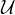 de T, el cual cumple:
Ya que la infinitupla (γ1,γ2,...) cubre todas las formulas con a lo sumo una variable libre, podemos reescribir la propiedad (b) de la siguiente manera
Definamos sobre Tcτ la siguiente relacion:
t s si y solo si [(t ≡ s)]T ∈. s si y solo si [(t ≡ s)]T ∈.
|
Veamos entonces que:
 es de equivalencia.
es de equivalencia.
 s1,
t2
s1,
t2 s2, ..., tn
s2, ..., tn sn, entonces [φ(t1,...,tn)]T ∈ si y solo si [φ(s1,...,sn)]T ∈
.
n, t1,...,tn,s1,...,sn ∈ Tcτ,
sn, entonces [φ(t1,...,tn)]T ∈ si y solo si [φ(s1,...,sn)]T ∈
.
n, t1,...,tn,s1,...,sn ∈ Tcτ,
t1 s1,t2 s1,t2 s2,...,tn s2,...,tn sn implica f(t1,...,tn) sn implica f(t1,...,tn) f(s1,...,sn). f(s1,...,sn).
|
Probaremos (2). Notese que
T ⊢ → φ(s1,...,sn) → φ(s1,...,sn)
|
lo cual nos dice que
| [(t1 ≡ s1)]TiT[(t 2 ≡ s2)]TiT...iT[(t n ≡ sn)]TiT[φ(t 1,...,tn)]T ≤T[φ(s 1,...,sn)]T |
de lo cual se desprende que
| [φ(t1,...,tn)]T ∈ implica [φ(s1,...,sn)]T ∈ |
ya que es un filtro. La otra implicacion es analoga.
Para probar (3) podemos tomar φ = y aplicar (2).
Definamos ahora un modelo A de tipo τ de la siguiente manera:

 , para cada c ∈.
, para cada c ∈.
 ,...,tn∕
,...,tn∕ ) = f(t1,...,tn)∕
) = f(t1,...,tn)∕ , para cada f ∈n, t1,...,tn ∈ Tcτ
, para cada f ∈n, t1,...,tn ∈ Tcτ
 ,...,tn∕
,...,tn∕ ) : [r(t1,...,tn)]T ∈}, para cada r ∈n.
) : [r(t1,...,tn)]T ∈}, para cada r ∈n.Notese que la definicion de fA es inambigua por (3). Probaremos las siguientes propiedades basicas:
tA
[t1∕ ,...,tn∕ ,...,tn∕ ] = t(t1,...,tn)∕ ] = t(t1,...,tn)∕
|
A φ[t1∕ φ[t1∕ ,...,tn∕ ,...,tn∕ ] si y solo si [φ(t1,...,tn)]T ∈. ] si y solo si [φ(t1,...,tn)]T ∈.
|
La prueba de (4) es directa por induccion. Probaremos (5) por induccion en el k tal que φ ∈ Fkτ. El caso k = 0 es dejado al lector. Supongamos (5) vale para φ ∈ Fkτ. Sea φ = dφ(v1,...,vn) ∈ Fk+1τ - Fkτ. Hay varios casos:
CASO φ = .
Notese que por la Convencion Notacional 6, tenemos que φi = dφi(v1,...,vn). Tenemos entonces
|
CASO φ = ∀vφ1, con v ∈ V ar -{v1,...,vn}. Notese que por la Convencion Notacional 6, tenemos que φ1 = dφ1(v1,...,vn,v). Tenemos entonces
|
CASO φ = ∃vφ1, con v ∈ V ar -{v1,...,vn}. Notese que por la Convencion Notacional 6, tenemos que φ1 = dφ1(v1,...,vn,v). Tenemos entonces
|
Pero ahora notese que (5) en particular nos dice que para cada sentencia ψ ∈ Sτ,
A ψ si y solo si [ψ]T ∈. De esta forma llegamos a que A
ψ si y solo si [ψ]T ∈. De esta forma llegamos a que A Σ y A
Σ y A φ0, lo
cual contradice la suposicion de que T
φ0, lo
cual contradice la suposicion de que T φ0.
φ0.
Ahora supongamos que τ es cualquier tipo. Sean s1 y s2 un par de simbolos no pertenecientes a la lista
| ∀ ∃ ∨ ∧ → ↔ ( ) , ≡ X 0 1 ... 9 0 1 ... 9 |
y tales que ninguno ocurra en alguna palabra de ∪∪. Si T φ, entonces usando el
Lema de Coincidencia se puede ver que (Σ,(∪{s1s2s1,s1s2s2s1,...},,,a))
φ, entonces usando el
Lema de Coincidencia se puede ver que (Σ,(∪{s1s2s1,s1s2s2s1,...},,,a)) φ,
por lo cual
φ,
por lo cual
|
(Σ,(∪{s1s2s1,s1s2s2s1,...},,,a)) ⊢ φ.
|
Pero por Lema 223, tenemos que T ⊢ φ. __
Proof. Supongamos (Σ,τ) es consistente y no tiene modelos. Entonces
(Σ,τ)
 , con lo cual por completitud (Σ,τ) ⊢
, con lo cual por completitud (Σ,τ) ⊢  , lo cual es
absurdo. __
, lo cual es
absurdo. __
Corollary 229 (Teorema de Compacidad). Sea (Σ,τ) una teoria.
 φ, entonces hay un subconjunto finito Σ0 ⊆ Σ tal que
(Σ0,τ)
φ, entonces hay un subconjunto finito Σ0 ⊆ Σ tal que
(Σ0,τ) φ.
φ.
Proof. (a) Veamos que (Σ,τ) es consistente. Supongamos lo contrario, es decir
supongamos (Σ,τ) ⊢ , para alguna sentencia φ. Notese que entonces
hay un subconjunto finito Σ0 ⊆ Σ tal que la teoria (Σ0,τ) ⊢
, para alguna sentencia φ. Notese que entonces
hay un subconjunto finito Σ0 ⊆ Σ tal que la teoria (Σ0,τ) ⊢ (Σ0 puede
ser formado con los axiomas de Σ usados en una prueba formal que atestigue
que (Σ,τ) ⊢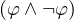). Pero esto es absurdo ya que por hypotesis dicha teoria
(Σ0,τ) tiene un modelo. O sea que (Σ,τ) es consistente por lo cual tiene un
modelo.
(Σ0 puede
ser formado con los axiomas de Σ usados en una prueba formal que atestigue
que (Σ,τ) ⊢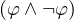). Pero esto es absurdo ya que por hypotesis dicha teoria
(Σ0,τ) tiene un modelo. O sea que (Σ,τ) es consistente por lo cual tiene un
modelo.
(b) Si (Σ,τ) φ, entonces por completitud, (Σ,τ) ⊢ φ. Pero entonces hay
un subconjunto finito Σ0 ⊆ Σ tal que (Σ0,τ) ⊢ φ, es decir tal que (Σ0,τ)
φ, entonces por completitud, (Σ,τ) ⊢ φ. Pero entonces hay
un subconjunto finito Σ0 ⊆ Σ tal que (Σ0,τ) ⊢ φ, es decir tal que (Σ0,τ) φ
(correccion). __
φ
(correccion). __
@@finpagina@@
Usando lo teoremas de correccion y completitud podemos dar una representacion semantica del algebra de Lindembaum. Sea T = (Σ,τ) una teoria. Dada φ ∈ Sτ definamos
| ModT(φ) = {A : A es modelo de T y A ⊨ φ} |
Definamos tambien
| ModT = {A : A es modelo de T} |
Dado S ⊆ ModT definamos
| Sc = Mod T - S |
Proof. Notese que
Lema 231. Dadas φ,ψ ∈ Sτ se tiene:
Proof. (1) Dejamos al lector justificar las siguientes equivalencias:
[φ]T ≤T[ψ]
T sii T ⊢ (φ → ψ) sii T (φ → ψ) sii ModT(φ) ⊆ ModT(ψ) (φ → ψ) sii ModT(φ) ⊆ ModT(ψ)
|
(2) y (3) siguen de (1) __
Ya que {ModT(φ) : φ ∈ Sτ} es un subuniverso de ((ModT),∪,∩,c,∅,ModT), tenemos que ({ModT(φ) : φ ∈ Sτ},∪,∩,c,∅,ModT) es un algebra de Boole. Notese que (2) del lema anterior nos asegura que
|
define en forma inhambigua una funcion. Tenemos entonces el siguiente
|
es un isomorfismo de T en ({ModT(φ) : φ ∈ Sτ},∪,∩,c,∅,ModT).
Proof. Llamemosle f a la funcion del enunciado. Es claro que f es sobre. Ademas (2) del lema anterior nos dice que f es inyectiva. Ademas usando las igualdades de la prueba del Lema 230, facilmente podemos ver que f es un homomorfismo por lo cual es un isomorfismo. __
Una teoria (Σ,τ) sera llamada completa cuando para cada φ ∈ Sτ se de que (Σ,τ) ⊢ φ o (Σ,τ) ⊢φ. Es poco frecuente que una teoria consistente sea completa y esto lo veremos claro despues del siguiente resultado.
Proposition 233. Sea (Σ,τ) una teoria consistente. Son equivalentes
Proof. Supongamos vale (1). Probaremos (2). Supongamos A,B son modelos
de (Σ,τ) y supongamos A φ. Entonces no puede darse (Σ,τ) ⊢ φ (use
correccion) por lo cual tenemos que (Σ,τ) ⊢ φ. Ya que B es modelo de (Σ,τ)
tenemos entonces que B
φ. Entonces no puede darse (Σ,τ) ⊢ φ (use
correccion) por lo cual tenemos que (Σ,τ) ⊢ φ. Ya que B es modelo de (Σ,τ)
tenemos entonces que B φ. Esto prueba que A y B son elementalmente
equivalentes.
φ. Esto prueba que A y B son elementalmente
equivalentes.
Ahora supongamos vale (2). Probaremos (3). Ya que (Σ,τ) es consistente,
tiene al menos un modelo. Sea A uno de ellos. Por correccion todo teorema es
verdadero en A. Reciprocamente si A φ, entonces, por (2), todo modelo de
(Σ,τ) satisface φ, lo cual nos dice que φ es un teorema.
φ, entonces, por (2), todo modelo de
(Σ,τ) satisface φ, lo cual nos dice que φ es un teorema.
Obviamente (3) impica que toda sentencia es o un teorema o refutable y esto nos dice que 0(Σ,τ) ∪ 1(Σ,τ) = Sτ. Ya que 0(Σ,τ) ∩ 1(Σ,τ) = ∅ puesto que (Σ,τ) es consistente, tenemos que vale (4).
Es trivial que (4) implica (1). __
Ya que lo mas comun es que una teoria tenga un par de modelos no elementalmente equivalentes, la mayoria de las teorias no son completas.
En esta seccion desarrollaremos las propiedades basicas de Arit, una teoria de primer orden la cual modeliza a la aritmetica. Esta teoria ha sido paradigmatica en el desarrollo de la logica.
Sea τA = ({0,1},{+2,.2},{≤2},a). Denotemos con ω a la estructura de tipo τA que tiene a ω como universo e interpreta los nombres de τA en la manera usual, es decir
|
Sea Σ el conjunto formado por las siguientes sentencias:
Es facil ver que todas estas sentencias son satisfechas por ω por lo cual ω es un modelo de la teoria (Σ,τA). Definamos
V erdω = {φ ∈ SτA
: ω φ} φ}
|
Es claro que todo teorema de (Σ,τA) pertenece a V erdω (por que?). Un pregunta interesante es si toda sentencia φ ∈ V erdω es un teorema de (Σ,τA), es decir puede ser probada en forma elemental partiendo de los axiomas de Σ. La respuesta es no y lo explicaremos a continuacion. Sea Q≥0 la estructura de tipo τA que tiene a {r ∈ Q : r ≥ 0} como universo e interpreta los nombres de τA en la manera usual. Note que Q≥0 tambien es un modelo de (Σ,τA). Pero entonces todo teorema de (Σ,τA) debe ser verdadero en Q≥0. Pero la sentencia ∀x (x ≤ 1 → (x ≡ 0 ∨x ≡ 1)) es falsa en Q≥0 por lo cual no es un teorema de (Σ,τA) y sin envargo pertenece a V erdω. Es decir los axiomas de Σ son demaciado generales y deberiamos agregarle axiomas que sean mas caracteristicos de la estructura particular de ω. En esa direccion, a continuacion extenderemos el conjunto Σ con axiomas que nos permitiran hacer pruebas por induccion tal como se lo hace en la aritmetica basica.
Dada una formula ψ ∈ FτA y variables v1,...,vn+1, con n ≥ 0, tales que Li(ψ) ⊆{v1,...,vn+1} y vi≠vj siempre que i≠j, denotaremos con Indψ,v1,...,vn+1 a la siguiente sentencia de tipo τA
∀v1...∀vn ((ψ( ,0)∧∀vn+1 (ψ( ,0)∧∀vn+1 (ψ( ,vn+1) → ψ( ,vn+1) → ψ( ,+(vn+1,1)))) →∀vn+1 ψ( ,+(vn+1,1)))) →∀vn+1 ψ( ,vn+1)) ,vn+1))
|
donde suponemos que hemos declarado ψ = dψ(v1,...,vn+1). Notese que si por ejemplo Li(ψ) ⊆{x1,x2,x3}, entonces las seis sentencias
| Indψ,x1,x2,x3 Indψ,x1,x3,x2 Indψ,x2,x1,x3 Indψ,x2,x3,x1 Indψ,x3,x1,x2 Indψ,x3,x2,x1 |
son todas distintas.
Sea ΣA el conjunto que resulta de agregarle a Σ todas las sentencias de la forma Indψ,v1,...,vn+1. Notese que el conjunto ΣA es infinito.
La teoria (ΣA,τA) sera llamada Aritmetica de Peano y la denotaremos con Arit. Es intuitivamente claro que
Proof. Sean ψ ∈ FτA y v1,...,vn+1, con n ≥ 0, tales que Li(ψ) ⊆{v1,...,vn+1} y vi≠vj siempre que i≠j. Veremos que ω ⊨ Indψ,v1,...,vn+1. Declaremos ψ = dψ(v1,...,vn,vn+1). Sea
φ = ((ψ( ,0) ∧∀vn+1 (ψ( ,0) ∧∀vn+1 (ψ( ,vn+1) → ψ( ,vn+1) → ψ( ,+(vn+1,1))) →∀vn+1 ψ(,vn+1)) ,+(vn+1,1))) →∀vn+1 ψ(,vn+1))
|
Declaremos φ = dφ(v1,...,vn). Notese que ω ⊨ Indψ,v1,...,vn+1 si y solo si para cada
a1,...,an ∈ ω se tiene que ω ⊨ φ[ ]. Sean a1,...,an ∈ ω fijos. Probaremos que ω ⊨ φ[
]. Sean a1,...,an ∈ ω fijos. Probaremos que ω ⊨ φ[ ].
Notar que si
].
Notar que si
ω ⊭ (ψ( ,0) ∧∀vn+1 (ψ( ,0) ∧∀vn+1 (ψ( ,vn+1) → ψ( ,vn+1) → ψ( ,+(vn+1,1)))[ ,+(vn+1,1)))[ ] ]
|
entonces ω ⊨ φ[ ] por lo cual podemos hacer solo el caso en que
] por lo cual podemos hacer solo el caso en que
ω ⊨ (ψ( ,0) ∧∀vn+1 (ψ( ,0) ∧∀vn+1 (ψ( ,vn+1) → ψ( ,vn+1) → ψ( ,+(vn+1,1)))[ ,+(vn+1,1)))[ ] ]
|
Para probar que ω ⊨ φ[ ], deberemos probar entonces que ω ⊨∀vn+1 ψ(
], deberemos probar entonces que ω ⊨∀vn+1 ψ( ,vn+1)[
,vn+1)[ ].
Sea S = {a ∈ ω : ω ⊨ ψ(
].
Sea S = {a ∈ ω : ω ⊨ ψ( ,vn+1)[
,vn+1)[ ,a]}. Ya que ω ⊨ ψ(
,a]}. Ya que ω ⊨ ψ( ,0)[
,0)[ ], es facil ver usando el
lema de reemplazo que ω ⊨ ψ(
], es facil ver usando el
lema de reemplazo que ω ⊨ ψ( ,vn+1)[
,vn+1)[ ,0], lo cual nos dice que 0 ∈ S. Ya que
ω ⊨∀vn+1 (ψ(
,0], lo cual nos dice que 0 ∈ S. Ya que
ω ⊨∀vn+1 (ψ( ,vn+1) → ψ(
,vn+1) → ψ( ,+(vn+1,1))[
,+(vn+1,1))[ ], tenemos que
], tenemos que
 ,vn+1)[
,vn+1)[ ,a], entonces ω ⊨
ψ(
,a], entonces ω ⊨
ψ( ,+(vn+1,1))[
,+(vn+1,1))[ ,a].
,a].Pero por el lema de reemplazo, tenemos que ω ⊨ ψ( ,+(vn+1,1))[
,+(vn+1,1))[ ,a] sii
ω ⊨ ψ(
,a] sii
ω ⊨ ψ( ,vn+1)[
,vn+1)[ ,a + 1], lo cual nos dice que
,a + 1], lo cual nos dice que
 ,vn+1)[
,vn+1)[ ,a], entonces ω ⊨ ψ(
,a], entonces ω ⊨ ψ( ,vn+1)[
,vn+1)[ ,a + 1].
,a + 1].Ya que 0 ∈ S y (2) nos dice que a ∈ S implica a + 1 ∈ S, tenemos que S = ω. Es decir
que para cada a ∈ ω, se da que ω ⊨ ψ( ,vn+1)[
,vn+1)[ ,a] lo cual nos dice que
ω ⊨∀vn+1 ψ(
,a] lo cual nos dice que
ω ⊨∀vn+1 ψ( ,vn+1)[
,vn+1)[ ].
].
Es rutina probar que ω satisface los otros 15 axiomas de Arit. __
El modelo ω es llamado el modelo standard de Arit.
Definamos el mapeo : ω →{(),+01}* de la siguiente manera
Proof. Sea τ = ({0,1,▴},{+2,.2},{≤2},a) y sea Σ = ΣA ∪{( ≡▴) : n ∈ ω}. Por el Teorema de Compacidad la teoria (Σ,τ) tiene un modelo A = (A,i). Ya que
A ⊨( ≡▴), para cada n ∈ ω ≡▴), para cada n ∈ ω
|
tenemos que
i(▴)≠ A, para cada n ∈ ω A, para cada n ∈ ω
|
Por el Lema de Coincidencia la estructura B = (A,i|{0,1,+,.,≤}) es un modelo de Arit.
Ademas dicho lema nos garantiza que  B =
B =  A, para cada n ∈ ω, por lo cual tenemos
que
A, para cada n ∈ ω, por lo cual tenemos
que
i(▴)≠ B, para cada n ∈ ω B, para cada n ∈ ω
|
Veamos que B no es isomorfo a ω. Supongamos F : ω → A es un isomorfismo
de ω en B. Es facil de probar por induccion en n que F(n) =  B, para cada
n ∈ ω. Pero esto produce un absurdo ya que nos dice que i(▴) no esta en la
imagen de F. __
B, para cada
n ∈ ω. Pero esto produce un absurdo ya que nos dice que i(▴) no esta en la
imagen de F. __
 A : n ∈ ω}.
A : n ∈ ω}.Lema 236. Las siguientes sentencias son teoremas de la aritmetica de Peano:
Proof. (1) es dejada al lector.
(2)
|
(3)
|
__
Lema 237. Sean n,m ∈ ω y sea t ∈ TcτA. Las siguientes sentencias son teoremas de la aritmetica de Peano:
 ,) ≡)
,) ≡)
 ) ≡)
) ≡)
 → (x ≡ ∨ x ≡ ∨ ... ∨ x ≡
→ (x ≡ ∨ x ≡ ∨ ... ∨ x ≡ ))
))
Proof. Hay cuatro casos.
Caso φ = (t ≡ s), con t,s terminos cerrados.
Ya que ω φ, tenemos que tω = sω y por lo tanto
φ, tenemos que tω = sω y por lo tanto  = . Por el lema
anterior tenemos que Arit ⊢ (t ≡),(s ≡) lo cual, ya que
= . Por el lema
anterior tenemos que Arit ⊢ (t ≡),(s ≡) lo cual, ya que  y
y  son el
mismo termino nos dice por la regla de transitividad que Arit ⊢ (t ≡ s).
son el
mismo termino nos dice por la regla de transitividad que Arit ⊢ (t ≡ s).
Caso φ = (t ≤ s), con t,s terminos cerrados.
Ya que ω φ, tenemos que tω ≤ sω y por lo tanto hay un k ∈ ω tal que
tω + k = sω. Se tiene entonces que = . Por el lema anterior tenemos que
Arit ⊢ +(, ) ≡
φ, tenemos que tω ≤ sω y por lo tanto hay un k ∈ ω tal que
tω + k = sω. Se tiene entonces que = . Por el lema anterior tenemos que
Arit ⊢ +(, ) ≡ lo cual nos dice que
lo cual nos dice que
Arit ⊢ +( , , ) ≡ ) ≡
|
Pero el lema anterior nos dice que
Arit ⊢ (t ≡ ),(s ≡ ),(s ≡ ) )
|
y por lo tanto la regla de reemplazo nos asegura que Arit ⊢ +(t, ) ≡ s. Ya
que
) ≡ s. Ya
que
| ∀x1∀x2(x1 ≤ x2 ↔∃x3x2 ≡ x1 + x3) |
es un axioma de Arit, tenemos que Arit ⊢ (t ≤ s).
Caso φ = (t ≡ s), con t,s terminos cerrados.
Caso φ = (t ≤ s), con t,s terminos cerrados. __
El siguiente lema muestra que en Arit se pueden probar ciertas sentencias las cuales emulan el principio de induccion completa.
Lema 239. Sea φ = dφ( ,v) ∈ FτA. Supongamos v es sustituible por w en φ y
w
,v) ∈ FτA. Supongamos v es sustituible por w en φ y
w {v1,...,vn}. Entonces:
{v1,...,vn}. Entonces:
Arit ⊢∀ ((φ( ((φ( ,0) ∧∀v(∀w(w < v → φ( ,0) ∧∀v(∀w(w < v → φ( ,w)) → φ( ,w)) → φ( ,v))) →∀vφ( ,v))) →∀vφ( ,v)) ,v))
|
Proof. Sea  = ∀w(w ≤ v → φ(
= ∀w(w ≤ v → φ( ,w)). Notar que Li(
,w)). Notar que Li( ) ⊆{v1,...,vn,v}. Declaremos
= d
) ⊆{v1,...,vn,v}. Declaremos
= d (
( ,v). Para hacer la prueba formal usaremos el axioma Ind ,v1,...,vn,v.
Salvo por el uso de algunos teoremas simples y el uso simultaneo de las
reglas de particularizacion y generalizacion, la siguiente es la prueba formal
buscada.
,v). Para hacer la prueba formal usaremos el axioma Ind ,v1,...,vn,v.
Salvo por el uso de algunos teoremas simples y el uso simultaneo de las
reglas de particularizacion y generalizacion, la siguiente es la prueba formal
buscada.
|
__
@@finpagina@@
Dados t,s ∈ Tτ, con t ≈ s denotaremos la siguiente sentencia de tipo τ:
| ∀x1...∀xn(t ≡ s) |
donde n es el menor j tal que {x1,...,xj} contiene a todas las variables que ocurren
en t y s. Notese que este n es 0 cuando t y s son terminos cerrados, es decir que t ≈ s
denota a la sentencia (t ≡ s), cuando t,s ∈ Tcτ. Las sentencias t ≈ s, con t,s ∈ Tτ,
seran llamadas identidades de tipo τ. Notese que A t ≈ s sii tA[
t ≈ s sii tA[ ] = sA[
] = sA[ ], para
cada
], para
cada  ∈ AN. Tambien, si t = dt(x1,...,xm) y s = ds(x1,...,xm), entonces dado una
τ-algebra A, tenemos que A
∈ AN. Tambien, si t = dt(x1,...,xm) y s = ds(x1,...,xm), entonces dado una
τ-algebra A, tenemos que A t ≈ s sii tA
t ≈ s sii tA![[a1,...,am ]](apunte2519x.png) = sA, para cada
(a1,...,am) ∈ Am. (Independientemente de que m sea el menor j tal que {x1,...,xj}
contiene a las variables que ocurren en t y s.)
= sA, para cada
(a1,...,am) ∈ Am. (Independientemente de que m sea el menor j tal que {x1,...,xj}
contiene a las variables que ocurren en t y s.)
Una teoria de primer orden (Σ,τ) sera llamada ecuacional si τ es un tipo algebraico y cada elemento de Σ es una identidad de tipo τ. Por supuesto, el teorema de completitud de Godel nos garantiza que si T es una teoria ecuacional y T ⊨ t ≈ s, entonces hay una prueba formal de t ≈ s en T. Sin envargo, en dicha prueba formal puede haber sentencias las cuales no sean identidades. Una pregunta interesante es la siguiente:
En esta seccion veremos que, tal como lo probo Birkhoff, esto es posible y que la nocion de prueba ecuacional que se puede dar es muy natural y simple, es decir si sabemos que en una teoria todos los axiomas son identidades, entonces a los fines de probar identidades las pruebas de primer orden clasicas pueden ser reemplazadas por pruebas con un formato mucho mas amigable.
Primero introducimos una serie de conjuntos los cuales poseen informacion deductiva ecuacional basica. Sea
| TransEcτ = {(t ≈ s,s ≈ p,t ≈ p) : t,s,p ∈ Tτ} |
Diremos que φ se deduce de ψ1y ψ2 por la regla de transitividad ecuacional, respecto a τ para expresar que (ψ1,ψ2,φ) ∈ TransEcτ. Sea
| SimEcτ = {(t ≈ s,s ≈ t) : t,s ∈ Tτ} |
Diremos que φ se deduce de ψ1 por la regla de simetria ecuacional, respecto a τ para expresar que (ψ1,φ) ∈ SimEcτ. Sea
|
Diremos que φ se deduce de ψ1 por la regla de substitucion ecuacional, respecto a τ para expresar que (ψ1,φ) ∈ SubsEcτ. Sea
|
Diremos que φ se deduce de ψ1 por la regla de reemplazo ecuacional, respecto a τ para expresar que (ψ1,φ) ∈ ReempEcτ.
La identidad x1 ≈ x1 sera llamada axioma logico ecuacional de tipo τ. Notese que dicha identidad no es ni mas ni menos que la sentencia ∀x1(x1 ≡ x1) la cual es universalmente valida.
Definicion de prueba ecuacional Dada una teoria ecuacional (Σ,τ) y una identidad p ≈ q de tipo τ, una prueba ecuacional de p ≈ q en (Σ,τ) sera una palabra φ ∈ Sτ+ tal que
Escribiremos (Σ,τ) ⊢ecp ≈ q cuando haya una prueba ecuacional de p ≈ q en (Σ,τ).
Para probar que el concepto de prueba ecuacional es correcto nos hara falta el siguiente lema.
Lema 240. Todas las reglas introducidas en la seccion anterior son universales en el sentido que si φ se deduce de ψ1,...,ψk por alguna de estas reglas, entonces es una sentencia universalmente valida.
Proof. Veamos que la regla de reemplazo es universal. Basta con ver por induccion en k que
 ] = sA[
] = sA[ ],
para cada
],
para cada  ∈ AN. Entonces rA[
∈ AN. Entonces rA[ ] =
] =  A[
A[ ], para cada
], para cada  ∈ AN, donde
∈ AN, donde  es el resultado de reemplazar algunas ocurrencias de t en r por s.
es el resultado de reemplazar algunas ocurrencias de t en r por s.La prueba de Teo0 es dejada al lector. Asumamos que vale Teok y probemos que vale
Teok+1. Sean t,s ∈ Tτ, r ∈ Tk+1τ - Tkτ y sea A una τ-algebra tal que
tA[ ] = sA[
] = sA[ ], para cada
], para cada  ∈ AN. Sea
∈ AN. Sea  el resultado de reemplazar algunas
ocurrencias de t en r por s. El caso t = r es trivial. Supongamos entonces que t≠r.
Supongamos r = f(r1,...,rn), con r1,...,rn ∈ Tkτ y f ∈n. Notese que
por Lema 180 tenemos que
el resultado de reemplazar algunas
ocurrencias de t en r por s. El caso t = r es trivial. Supongamos entonces que t≠r.
Supongamos r = f(r1,...,rn), con r1,...,rn ∈ Tkτ y f ∈n. Notese que
por Lema 180 tenemos que  = f(
= f( 1,...,
1,..., n), donde cada
n), donde cada  i es el resultado
de reemplazar algunas ocurrencias de t en ri por s. Para
i es el resultado
de reemplazar algunas ocurrencias de t en ri por s. Para  ∈ AN se tiene
que
∈ AN se tiene
que
|
lo cual prueba Teok+1
Veamos que la regla de substitucion es universal. Supongamos A t ≈ s, con
t = dt(x1,...,xn) y s = ds(x1,...,xn). Veremos que entonces A
t ≈ s, con
t = dt(x1,...,xn) y s = ds(x1,...,xn). Veremos que entonces A t(p1,...,pn) ≈ s(p1,...,pn).
Supongamos que pi = dpi(x1,...,xm), para cada i = 1,...,n. Por (a) del Lema 203,
tenemos que
t(p1,...,pn) ≈ s(p1,...,pn).
Supongamos que pi = dpi(x1,...,xm), para cada i = 1,...,n. Por (a) del Lema 203,
tenemos que

|
lo cual nos dice que A t(p1,...,pn) ≈ s(p1,...,pn) __
t(p1,...,pn) ≈ s(p1,...,pn) __
Proof. Sea φ una prueba ecuacional de p ≈ q en (Σ,τ). Usando el lema anterior
se puede probar facilmente por induccion en i que (Σ,τ) φi, por lo cual
(Σ,τ)
φi, por lo cual
(Σ,τ) p ≈ q __
p ≈ q __
Para probar que el concepto de prueba ecuacional es completo nos haran falta algunos resultados basicos que tienen interes por si mismos.
El algebra de terminos Dado un tipo algebraico τ, hay una forma natural de definir un algebra Tτ cuyo universo es Tτ, de la siguiente manera
n.Llamaremos a Tτ el algebra de terminos de tipo τ.
Ejemplo 242. Supongamos τ = (∅,{f},∅,{(f,1)}). Entonces el universo de Tτ es
{x1,f(x1),f(f(x1)),...}∪
{x2,f(x2),f(f(x2)),...}∪
{x3,f(x3),f(f(x3)),...}∪

La funcion que interpreta a f en Tτ es la que a cada elemento del conjunto anterior le asigna el primer elemento que esta a su derecha. Notese entonces que Tτ resulta isomorfa al algebra A definida por
Proof. Para cada k ≥ 0, sea
Veamos que es cierto Teo0. Hay dos casos
Caso t = dt(x1,...,xn) = c ∈.
Entonces tenemos
|
Caso t = dt(x1,...,xn) = xi, para algun i.
Entonces tenemos
|
Veamos que Teok implica Teok+1. Supongamos que vale Teok. Sean t1,...,tn ∈ Tτ
y t = dt(x1,...,xn) ∈ Tk+1τ - Tkτ. Hay f ∈m, con m ≥ 1, y terminos
s1,...,sm ∈ Tkτ tales que t = f(s1,...,sm). Notese que si = dsi(x1,...,xn),
i = 1,...,m. Tenemos entonces que
|
con lo cual vale Teok+1 __
El algebra de terminos tiene la siguiente propiedad fundamental:
Lema 244 (Universal Maping Property). Si A es cualquier τ-algebra y F : V ar → A, es una funcion cualquiera, entonces F puede ser extendida a un homomorfismo : Tτ → A.
Proof. Definamos de la siguiente manera:
| (t) = tA[(F(x 1),F(x2),...)] |
Es claro que extiende a F. Veamos que es un homomorfismo. Dada c ∈, tenemos
que
|
Dados f ∈n, t1,...,tn ∈ Tτ tenemos que
|
con lo cual hemos probado que es un homomorfismo __
Teorema 245 (Completitud ecuacional). Sea (Σ,τ) una teoria ecuacional. Si
(Σ,τ) p ≈ q, entonces (Σ,τ) ⊢ecp ≈ q.
p ≈ q, entonces (Σ,τ) ⊢ecp ≈ q.
Proof. Supongamos (Σ,τ) p ≈ q. Sea θ la siguiente relacion binaria sobre
Tτ:
p ≈ q. Sea θ la siguiente relacion binaria sobre
Tτ:
| θ = {(t,s) : (Σ,τ) ⊢ect ≈ s}. |
Dejamos al lector probar que θ es una congruencia de Tτ. Veamos que
Por Corolario 197 tenemos que
| tTτ∕θ [t1∕θ,...,tn∕θ] = tTτ [t1,...,tn]∕θ |
Pero por Lema 243 tenemos que tTτ [t1,...,tn] = t(t1,...,tn) por lo cual (*) es verdadera.
Veamos que Tτ∕θ Σ. Sea t ≈ s un elemento de Σ, con t = dt(x1,...,xn) y
s = ds(x1,...,xn). Veremos que Tτ∕θ
Σ. Sea t ≈ s un elemento de Σ, con t = dt(x1,...,xn) y
s = ds(x1,...,xn). Veremos que Tτ∕θ t ≈ s, es decir veremos que
t ≈ s, es decir veremos que
| tTτ∕θ [t1∕θ,...,tn∕θ] = sTτ∕θ [t1∕θ,...,tn∕θ] |
para todo t1∕θ,...,tn∕θ ∈ Tτ∕θ. Notese que
| (Σ,τ) ⊢ect(t1,...,tn) ≈ s(t1,...,tn) |
por lo cual t(t1,...,tn)∕θ = s(t1,...,tn)∕θ. Por (*) tenemos entonces
| tTτ∕θ [t1∕θ,...,tn∕θ] = t(t1,...,tn)∕θ = s(t1,...,tn)∕θ = sTτ∕θ [t1∕θ,...,tn∕θ], |
lo cual nos dice que Tτ∕θ satisface la identidad t ≈ s.
Ya que Tτ∕θ Σ, por hipotesis tenemos que Tτ∕θ
Σ, por hipotesis tenemos que Tτ∕θ p ≈ q. Es decir que si
p = dp(x1,...,xn) y q = dq(x1,...,xn) tenemos que pTτ∕θ
[t1∕θ,...,tn∕θ] = qTτ∕θ
[t1∕θ,...,tn∕θ],
para todo t1,...,tn ∈ Tτ. En particular, tomando ti = xi, i = 1,...,n tenemos
que
p ≈ q. Es decir que si
p = dp(x1,...,xn) y q = dq(x1,...,xn) tenemos que pTτ∕θ
[t1∕θ,...,tn∕θ] = qTτ∕θ
[t1∕θ,...,tn∕θ],
para todo t1,...,tn ∈ Tτ. En particular, tomando ti = xi, i = 1,...,n tenemos
que
| pTτ∕θ [x1∕θ,...,xn∕θ] = qTτ∕θ [x1∕θ,...,xn∕θ] |
lo cual por (*) nos dice que p∕θ = q∕θ, produciendo (Σ,τ) ⊢ecp ≈ q. __
@@finpagina@@
Sea
V erdω = {φ ∈ SτA
: ω φ}. φ}.
|
Notese que por el teorema de correccion tenemos que todo teorema de Arit pertenece a V erdω. Como puede notarse a medida que uno se va familiarizando con la teoria Arit, todos los resultados clasicos de la aritmetica los cuales pueden ser enunciados por medio de una sentencia de V erdω son en realidad teoremas de Arit. Sin envargo Godel probo en su famoso teorema de incompletitud (1931) que hay una sentencia de V erdω la cual no es un teorema de Arit. Por aos nadie fue capaz de dar una sentencia de V erdω la cual tenga un genuino interes aritmetico y la cual no sea un teorema de Arit. Recien en 1977 Paris y Harrington dieron el primer ejemplo de una tal sentencia. Una ves sabido que los axiomas de Arit no son suficientemente poderosos como para probar toda sentencia verdadera en ω, una pregunta interesante es
Una respuesta negativa a este problema tambien es dada por el teorema de incompletitud de Godel. En esta seccion daremos una prueba basada en las ideas de la computabilidad.
En esta seccion estudiaremos la recursividad de la sintaxis de τA. Los resultados obtenidos valen para un tipo cualquiera y hemos elejido a τA solo para facilitar la exposicion.
Analizaremos la recursividad del concepto de prueba formal en una teoria de la forma (Σ,τA), donde Σ es un conjunto recursivamente enumerable. Para hacer mas concreto el tratamiento supondremos que los nombres de constante auxiliares en las pruebas formales estaran siempre en el conjunto
| Aux = {△□△,△□□△,△□□□△,...} |
Esto no afectara nuestro analisis ya que es claro que toda prueba formal de una teoria de la forma (Σ,τA) puede ser reemplazada por una que sus nombres de constante auxiliares esten en Aux. Es decir que las sentencias involucradas en las pruebas formales que consideraremos seran sentencias de tipo τAe donde
| τAe = ({0,1}∪ Aux,{+2,.2},{≤2},a) |
Sea el alfabeto formado por los siguientes simbolos
| ∀ ∃ ∨ ∧ → ↔ ( ) , ≡ 0 1 + . ≤ △ □ X 0 1 ... 9 0 1 ... 9 |
Notese que los simbolos del alfabeto son justamente los simbolos que ocurren en las formulas de tipo τAe.
Proof. Notese que los conjuntos TτAe , FτAe , TτA y FτA son -efectivamente computables (justifique). Entonces la Tesis de Church nos garantiza que dichos conjuntos son -recursivos.
A continuacion daremos una prueba de que dichos conjuntos son en realidad -primitivos recursivos. Veamos por ejemplo que TτAe es -primitivo recursivo. Fijemos un orden total ≤ sobre . Sea P = λx[*≤(x) ∈ TτAe ]. Notese que P(0) = 0 y P(x + 1) = 1 si y solo si se da alguna de las siguientes
Por el Lema 80 tenemos que P es -p.r., por lo cual χTτAe* = P ∘ #≤ lo es. Notese que
| t ∈ TτA sii t ∈ TτAe ∧△ no ocurre en t ∧□ no ocurre en t |
por lo cual TτA es -p.r. __
Recordemos que en la Subseccion 5.5 definimos cuando
”v ocurre libremente en φ a partir de i”, para el caso en que v ∈ V ar, φ ∈ Fτ y
i ∈{1,..., }. Extendamos esta definicion diciendo que cuando v ∈ V ar, φ ∈ Fτ y
i ∈ ω -{1,...,
}. Extendamos esta definicion diciendo que cuando v ∈ V ar, φ ∈ Fτ y
i ∈ ω -{1,..., }, se da que v no ocurre libremente en φ a partir de i.
}, se da que v no ocurre libremente en φ a partir de i.
Lema 248. Los siguientes predicados son -r.
Proof. Notese que los predicados dados en (1), (2) y (3) son -efectivamente computables (justifique). Entonces la Tesis de Church nos garantiza que dichos predicados son -recursivos.
En realidad dichos predicados son -p.r.. Veamos por ejemplo que P : ω × V ar × FτAe → ω, dado por
| P(i,v,φ) = |
es -p.r.. Sea R : N × V ar → ω el predicado dado por R(x,v) = 1 si y solo si *≤((x)1) ∈ FτAe y v ocurre libremente en *≤((x)1) a partir de (x)2. Sea = R ∪ C01,1|{0}×V ar. Nex = {∧,∨,→,↔}. Notese que F0τAe es -p.r. ya que
| F0τAe = FτAe ∩ (-{∀,∃,,∨,∧,→,↔})* |
Notese que (0,v) = 0, para cada v ∈ V ar y que (x + 1,v) = 1 si y solo si (x + 1)2 ≥ 1 y se da alguna de las siguientes:
* ≤((x + 1)1) = Qwφ1 ∧ (↓(x,v))+1 = 1
Es decir que por el Lema 80 tenemos que es -p.r.. Notese que para
(i,v,φ) ∈ ω × V ar × FτAe
, tenemos P(i,v,φ) = ( ,v). Ahora es facil
obtener la funcion P haciendo composiciones adecuadas con . __
,v). Ahora es facil
obtener la funcion P haciendo composiciones adecuadas con . __
Dados v ∈ V ar y t,s ∈ TτAe , usaremos ↓vt(s) para denotar el resultado de reemplazar simultaneamente cada ocurrencia de v en s por t. Similarmente, si φ ∈ FτAe , usaremos ↓vt(φ) para denotar el resultado de reemplazar simultaneamente cada ocurrencia libre de v en φ por t.
Proof. Notese que las funciones λsvt[↓ vt(s)] y λφvt[↓ vt(φ)] son -efectivamente computables (justifique). Entonces la Tesis de Church nos garantiza que dichas funciones son -recursivas.
En realidad son -p.r.. Veamos por ejemplo que λsvt[↓vt(s)] es -p.r.. Sea ≤ un orden total sobre . Sea h : ω × V ar × TτAe → ω dada por
| h(x,v,t) = |
Sea P : N × ω × V ar × TτAe ×*→ ω tal que P(A,x,v,t,α) = 1 si y solo si se da alguna de las siguientes
 TτAe
∧ α = ε
TτAe
∧ α = ε
Sea = P ∪C02,2|{0}×ω×V ar×TτAe×*. Notese que (h↓(x,v,t),x,v,t,α) = 1 si y solo
si ya sea *≤(x + 1) TτAe
y α = ε o *≤(x + 1) ∈ TτAe
y α = ↓vt(*≤(x + 1)). Tenemos
entonces
TτAe
y α = ε o *≤(x + 1) ∈ TτAe
y α = ↓vt(*≤(x + 1)). Tenemos
entonces
Proof. Notese que el predicado R es -efectivamente computable. Entonces la Tesis de Church nos garantiza que R es -recursivo.
En realidad R es -p.r. y esto puede verse facilmente ya que R(α,β,γ,ζ) = 1 sii existen α1,α2 tales que α = α1γα2 y β = α1ζα2. __
Lema 251. Los conjuntos ModPonτAe , ElecτAe , ReemτAe , ConjIntτAe , ConjElimτAe , EquivIntτAe , DisjElimτAe , DisjIntτAe , EquivElimτAe , GeneralizτAe , CommutτAe , TransτAe , ExistτAe , EvocτAe , AbsurτAe , DivPorCasτAe , ParticτAe son -r..
Proof. Dejamos al lector una prueba via la Tesis de Church. En realidad dichos conjuntos son -p.r.. Veremos, por ejemplo que ReemτAe es -p.r.. Basta con ver que Reem1τAe y Reem2τAe lo son. Veremos que Reem2τAe es -p.r.. Sea Q : FτAe × FτAe × FτAe → ω el predicado tal que Q(ψ,φ,σ) = 1 si y solo si

 ∧ R(φ,σ,ψ1,ψ2)
∧ R(φ,σ,ψ1,ψ2)(R es el predicado dado por el Lema 250). Es facil ver que Q es -p.r. y que χReem2τAe4 = Q|SτAe×SτAe×SτAe. __
Lema 252. El predicado ”ψ se deduce de φ por generalizacion con constante c, con respecto a τAe” : SτAe × SτAe × Aux → ω es -r..
Proof. Es claro que el predicado en cuestion es -efectivamente computable (justifique). Por la Tesis de Church tenemos entonces que dicho predicado es -r.
Para probar que en realidad dicho predicado es -p.r., notese que: ψ se deduce de φ por generalizacion con constante c si y solo si hay una formula γ y una variable v tales que
Lema 253. El predicado ”ψ se deduce de φ por eleccion con constante e, con respecto a τAe” : SτAe × SτAe × Aux → ω es -r..
Proof. Es claro que el predicado en cuestion es -efectivamente computable (justifique). Por la Tesis de Church tenemos entonces que dicho predicado es -r.
Dejamos al lector probar que en realidad dicho predicado es -p.r. __
Recordemos que
| AxLogτAe = {φ ∈ SτAe : φ es un axioma logico de tipo τAe} |
Proof. Es claro que el conjunto en cuestion es -efectivamente computable (justifique). Por la Tesis de Church tenemos entonces que dicho conjunto es -r.
Dejamos al lector probar que en realidad dicho conjunto es -p.r. La prueba es completamente analoga a la prueba de que InsΣ es un conjunto (Σ ∪ Σp)-p.r. (Lema 95) __
Proof. Ya que S es Σ-r., tenemos que S es Σ-efectivamente computable. Es facil ver que entonces S+ es Σ-efectivamente computable. Por la Tesis de Church tenemos entonces que S es Σ-recursivo.
Ya que α ∈ S+ si y solo si
| (∃z ∈ N)(∀i ∈ N)i≤Lt(z) *≤((z) i) ∈ S ∧ α = ⊂i=1Lt(z) *≤((z) i) |
se puede probar tambien este lema sin usar la Tesis de Church. Dejamos al lector los detalles. __
Recordemos que dada φ ∈ SτAe+ , usamos n(φ) y φ1,...,φn(φ) para denotar los unicos n y φ1,...,φn tales que φ = φ1...φn (la unicidad es garantizada en Lema 212). Extendamos esta notacion definiendo φi = ε para i = 0 o i > n(φ).
Proof. Es claro que la funciones en cuestion son -efectivamente computables (justifique). Por la Tesis de Church tenemos entonces que son -r.
Dejamos al lector probar que en realidad dicho conjunto es -p.r. La prueba
es completamente analoga a la prueba de que λ y λi![[ ]
IiP](apunte2590x.png) son funciones
(Σ ∪ Σp)-p.r. (Lema 97) __
son funciones
(Σ ∪ Σp)-p.r. (Lema 97) __
Recordemos que dada J ∈ Just+, usamos n(J) y J1,...,Jn(J) para denotar los unicos n y J1,...,Jn tales que J = J1...Jn (la unicidad es garantizada en Lema 211). Extendamos esta notacion definiendo Ji = ε para i = 0 o i > n(J).
Sea el alfabeto que consiste en todos los simbolos que ocurren en alguna palabra de Just. Es decir consiste de los simbolos
| ( ) , 0 1 2 3 4 5 6 7 8 9 A B C D E G H I J L M N O P Q R S T U V X Z |
Proof. Es claro que la funciones en cuestion son -efectivamente computables (justifique). Por la Tesis de Church tenemos entonces que son -r. __
Proof. Es claro que dicho predicado es -efectivamente computable (justifique). Por la Tesis de Church tenemos entonces que es -r. __
Proof. Es claro que dicho conjunto es -efectivamente computable (justifique). Por la Tesis de Church tenemos entonces que es -r. __
|
|
son (∪)-r..
Proof. Es claro que los predicados en cuestion son ( ∪ )-efectivamente computables (justifique). Por la Tesis de Church tenemos entonces que dichos predicados son (∪)-r. __
Proof. Es claro que el predicado en cuestion es (∪)-efectivamente computable (justifique). Por la Tesis de Church tenemos entonces que dicho predicado es (∪)-r. __
Dada una teoria de la forma (Σ,τA), diremos que una prueba formal (φ,J) de φ en (Σ,τA) es normal si solo usa nombres de ctes auxiliares de Aux, es decir si φ ∈ SτAe+ . Definamos
| Pruebas(Σ,τA) = {(φ,J) : ∃φ (φ,J) es una prueba normal de φ en (Σ,τA)} |
Lema 262. Sea (Σ,τA) una teoria tal que Σ es -r.e. (resp. -recursivo). Entonces Pruebas(Σ,τA) es (∪)-r.e. (resp. (∪)-recursivo).
Proof. Supongamos que Σ es -r.e.. Claramente entonces Σ es -efectivamente computable por lo cual hay una funcion g : ω → Σ la cual es -efectivamente computable y suryectiva. Sea ≤ un orden total sobre ∪. A continuacion describimos como hacer un procedimiento efectivo enumere a Pruebas(Σ,τA). Dejamos al lector completar los detalles. Dada una prueba formal (φ,J) cualquiera, definamos
| Ax((φ,J)) = {φi : existe α tal que Ji = αAXIOMAPROPIO} |
Etapa 1
Si x = 0, detenerse y dar como salida ((0 ≡ 0),AXIOMALOGICO). En caso contrario ir a Etapa 2
Etapa 2.
Si (*≤((x)1),*≤((x)2)) es una prueba formal y Ax((*≤((x)1),*≤((x)2))) ⊆ {g(0),...,g((x)3)}, entonces detenerse y dar como salida (*≤((x)1),*≤((x)2)). Caso contrario detenerse y dar como salida ((0 ≡ 0),AXIOMALOGICO)
Por la Tesis de Church tenemos entonces que Pruebas(Σ,τA) es ( ∪ )-r.e. __
Dada una teoria (Σ,τA), definamos
| Teo(Σ,τA) = {φ ∈ SτA : (Σ,τA) ⊢ φ} |
Proof. Como se vio en el lema anterior, tenemos que Pruebas(Σ,τA) es (∪ )-efectivamente enumerable. Es facil ahora, usando un procedimiento efectivo que enumere a Pruebas(Σ,τA), disear un procedimiento efectivo que enumere a Teo(Σ,τA). Es decir que Teo(Σ,τA) es -efectivamente enumerable, lo cual por la Tesis de Church nos dice que es -r.e.
A continuacion daremos una prueba que no usa la Tesis de Church. Ya que Pruebas(Σ,τA) es (∪)-r.e. (lema anterior) tenemos que hay una funcion F : ω → SτAe+ × Just+ la cual cumple que p10,2 ∘ F y p20,2 ∘ F son (∪)-r. y ademas IF = Pruebas(Σ,τA). Sea
|
Por lemas anteriores g es -r.. Notese que I(g∘p10,2∘F) = Teo(Σ,τA), lo cual dice que Teo(Σ,τA) es (∪)-r.e. (Teorema 126). Por el teorema de independencia del alfabeto tenemos que Teo(Σ,τA) es -r.e.. __
Sea n ≥ 1. Una funcion f : Df ⊆ ωn → ω sera llamada representable si hay una formula φ = dφ(v1,...,vn,v) ∈ FτA, la cual cumpla
ω φ si y solo si f(k1,...,kn) = k φ si y solo si f(k1,...,kn) = k
|
cualesquiera sean k1,...,kn,k ∈ ω. En tal caso diremos que la formula φ representa a
la funcion f, con respecto a la declaracion φ = dφ(v1,...,vn,v). Notese que cuando
(k1,...,kn) Df entonces debera suceder que ω ⊭ φ
Df entonces debera suceder que ω ⊭ φ![[k1,...,kn,k]](apunte2598x.png) , cualquiera sea
k ∈ ω. Cabe destacar que una formula φ puede representar a f, con respecto a una
declaracion y con respecto a otra declaracion puede no representarla. Por ejemplo la
formula (x3 ≡ x1 + x2) representa a la operacion suma con respecto a las
declaraciones φ = dφ(x1,x2,x3) y φ = dφ(x2,x1,x3) pero con respecto a la
declaracion φ = dφ(x3,x2,x1) no representa a dicha operacion. Para dar otro
ejemplo, tomemos φ = (x5 ≡ 1). Entonces
, cualquiera sea
k ∈ ω. Cabe destacar que una formula φ puede representar a f, con respecto a una
declaracion y con respecto a otra declaracion puede no representarla. Por ejemplo la
formula (x3 ≡ x1 + x2) representa a la operacion suma con respecto a las
declaraciones φ = dφ(x1,x2,x3) y φ = dφ(x2,x1,x3) pero con respecto a la
declaracion φ = dφ(x3,x2,x1) no representa a dicha operacion. Para dar otro
ejemplo, tomemos φ = (x5 ≡ 1). Entonces
El concepto de funcion representable sera clave en nuestra prueba del teorema de incompletitud. El resultado clave desde el cual sale facilmente el teorema de incompletitud es la Proposicion 269 en la que se prueba que el conjunto V erdω no es -r.e..Para probar dicha proposicion primero probaremos que toda funcion ∅-recursiva es representable. Aqui es clave una funcion introducida por Godel. Sea
| β = λxyi[R(x,y(i + 1) + 1)] |
donde
|
Notese que Dβ = ω3. Esta funcion, conocida como la funcion β de Godel, es representable ya que por ejemplo la formula
| φ = ∃x5(x1 ≡ x5.(x2.(x3 + 1) + 1) + x4 ∧ x4 < x2.(x3 + 1) + 1) |
la representa, con respecto a la declaracion φ = dφ(x1,x2,x3,x4). Ahora veremos un lema que muestra que la funcion β tiene una propiedad sorprendente en el sentido de que cualquier sucesion finita de elementos de ω es producida por β si fijamos adecuadamente sus dos primeras entradas. Dados x,y ∈ ω, diremos que x e y son coprimos cuando 1 sea el unico elemento de ω que divide a ambos. Notese que x e y no son son coprimos sii existe un numero primo p ∈ ω que los divide a ambos
Proof. Dados x,y,m ∈ ω con m ≥ 1, usaremos x ≡ y(m) para expresar que x es congruente a y modulo m, es decir para expresar que x - y es divisible por m. Usaremos en esta prueba el Teorema Chino del Resto:
Sea y = max(z0,...,zn,n)!. Sean mi = y(i + 1) + 1, i = 0,...,n. Veamos que m0,...,mn son coprimos de a pares. Supongamos p divide a mi y a mj con i < j. Entonces p divide a mj -mi = y(j -i) y ya que p no puede dividir a y, tenemos que p divide a j - i. Pero ya que j - i < n tenemos que p < n lo cual es absurdo ya que implicaria que p divide y.
Por el Teorema Chino del Resto hay un x tal que x ≡ zi(mi), para i = 0,...,n. Ya que zi < mi, tenemos que
| β(x,y,i) = R(x,y(i + 1) + 1) = R(x,mi) = zi, i = 0,...,n. |
__
El lema anterior nos permite probar:
Proof. Supongamos f : S1 × ... × Sn → ω y g : ω × ω × S1 × ... × Sn → ω son representables, con S1,...,Sn ⊆ ω y n ≥ 0. Probaremos que entonces R(f,g) : ω × S1 × ... × Sn → ω lo es. Para esto primero notese que para t,x1,...,xn,z ∈ ω, las siguientes son equivalentes
 ) = z
) = z
Sean φβ, φf y φg formulas que representen a las funciones β, f y g, con respecto a las declaraciones
Es facil usando (3) ver que la formula φR(f,g) representa a R(f,g), con respecto a la declaracion φR(f,g) = dφR(f,g)(v1,...,vn+1,v).
En forma analoga se puede probar que las reglas de composicion y minimizacion preservan representabilidad por lo cual ya que los elementos de R0∅ son representables, por induccion tenemos que lo es toda funcion ∅-r. __
Nuestra estrategia sera probar que V erdω no es -r.e., para lo cual necesitamos los siguientes dos lemas. El primero consiste en dar una funcion total numerica la cual codifique al predicado ”el programa se detiene luego de t pasos, partiendo del estado ((0,0,...),(,ε,...))”.
Lema 266. Hay un predicado P : ω × ω → ω el cual es ∅-p.r. y tal que el
predicado Q = λx![[(∃t ∈ ω)P(t,x)]](apunte2603x.png) : ω → ω no es ∅-r.
: ω → ω no es ∅-r.
Proof. Sea Σ = Σp. Recordemos que el predicado
P1 = λt![[ ]
i0,1(t,P,P) = n(P)+ 1](apunte2604x.png)
|
es Σp-p.r. ya que la funcion i0,1 lo es. Notese que el dominio de P1 es ω × ProΣp. Por Lema 133 tenemos que
| AutoHaltΣp = λ |
no es Σp-recursivo. Sea ≤ un orden total sobre Σp. Definamos P : ω × ω → ω de la siguiente manera
| P(t,x) = |
Claramente P es Σp-p.r., por lo cual el teorema de independencia del alfabeto nos
dice que P es ∅-p.r.. Sea Q = λx![[(∃t ∈ ω)P (t,x)]](apunte2607x.png) . Notese que
. Notese que
| AutoHaltΣp = Q ∘ #≤| ProΣp |
lo cual dice que Q no es Σp-r. ya que de serlo, el predicado AutoHaltΣp lo seria. Por el teorema de independencia del alfabeto tenemos entonces que Q no es ∅-recursivo. __
Proof. Dejamos como ejercicio para el lector probar que el predicado Q del lema anterior es representable, lo cual completa la prueba de este corolario ya que Q no es ∅-recursivo. __
Recordemos que para α ∈ Σ*, definimos
↷α = ![{ [α]2...[α]|α| si |α| ≥ 2
ε si |α| ≤ 1](apunte2608x.png)
|
Proof. Supongamos V erdω es -r. e. Sea f : ω → V erdω una funcion sobre y -r. Sea g : SτA → SτA, dada por
| g(φ) = |
Notar que g es -p.r. por lo cual g ∘ f es -r. Ya que Ig∘f = SτA - V erdω (justifique), tenemos que SτA - V erdω es -r. e., por lo cual
| *- V erd ω = (*- SτA ) ∪ (SτA - V erdω) |
lo es. Es decir que V erdω y su complemento son -r.e. por lo cual V erdω es -r. __
Ahora podemos probar el importante resultado anunciado.
Proof. Por el Lema 266 hay un predicado ∅-p.r., P : ω ×ω → ω tal que el predicado Q = λx : ω → ω no es ∅-recursivo. Notese que Q tampoco es -recursivo. Ya que P es representable, hay una formula φ = dφ(v1,v2,v) ∈ FτA la cual cumple
ω φ φ![[t,x,k]](apunte2612x.png) si y solo si P(t,x) = k si y solo si P(t,x) = k
|
cualesquiera sean t,x,k ∈ ω. Sea ψ = φ(v1,v2,1). Declaremos ψ = dψ(v1,v2). Tenemos entonces
ω ψ ψ![[t,x]](apunte2614x.png) si y solo si P(t,x) = 1 si y solo si P(t,x) = 1
|
cualesquiera sean t,x ∈ ω. Sea ψ0 = ∃v1 ψ(v1,v2). Declaremos ψ0 = dψ0(v2). Tenemos entonces
ω ψ0 ψ0![[x]](apunte2616x.png) si y solo si Q(x) = 1 si y solo si Q(x) = 1
|
cualesquiera sea x ∈ ω. Por el lema de reemplazo tenemos que para x ∈ ω,
ω ψ0 si y solo si ω ψ0 si y solo si ω ψ0( ψ0( ) )
|
(justifique), por lo cual
ω ψ0( ) si y solo si Q(x) = 1 ψ0( ) si y solo si Q(x) = 1
|
cualesquiera sea x ∈ ω. Ya que ψ0( ) es una sentencia,
) es una sentencia,
| ψ0( ) ∈ V erdω si y solo si Q(x) = 1 |
Sea h : ω → *, dada por h(x) = ψ0( ). Es facil ver que h es -recursiva.
Ya que Q = χV erdω*
∘ h y Q no es -recursivo, tenemos que χV erdω*
no es
-recursiva, es decir que V erdω es un conjunto no -recursivo. El lema anterior
nos dice entonces que es V erdω no es -r.e.. __
). Es facil ver que h es -recursiva.
Ya que Q = χV erdω*
∘ h y Q no es -recursivo, tenemos que χV erdω*
no es
-recursiva, es decir que V erdω es un conjunto no -recursivo. El lema anterior
nos dice entonces que es V erdω no es -r.e.. __
Ahora si, estamos en condiciones de probar facilmente el famoso resultado de Godel.
Proof. Ya que ω es un modelo de (Σ,τA), por el Teorema de Correccion, tenemos que Teo(Σ,τA) ⊆ V erdω. Ya que Teo(Σ,τA) es -r.e (Proposicion 263) y V erdω no lo es, tenemos que Teo(Σ,τA)≠V erdω. __
Proof. Dejamos al lector la prueba de que el conjunto ΣA es -r.e.. Una ves
probado esto, podemos aplicar el teorema anterior a la teoria Arit = (ΣA,τA),
lo cual nos dice que TeoArit ⊊ V erdω. Sea φ ∈ V erdω - TeoArit. O sea que
Arit ⊬ φ y φ ∈ V erdω. Ya que φ V erdω, tenemos que φ
V erdω, tenemos que φ TeoArit, es decir
Arit ⊬ φ. __
TeoArit, es decir
Arit ⊬ φ. __


 )
)
 )
)
 )
)
 )
)

 )
)

 )
)

 )
)
 ) +
) + 
 + 1
+ 1 ![[N ]](apunte152x.png)
![[N]](apunte153x.png)


 )
)


![[x +y]](apunte414x.png)
![[x.y]](apunte415x.png)
![[x!]](apunte416x.png)
![[α β]](apunte431x.png)
![[|α|]](apunte432x.png)
![[xy]](apunte442x.png)
![[[α ]i]](apunte508x.png)

 )
)
 )
)![{ Σ }
f ∘[f1,...,fn] : f,f1,...,fr ∈ Rk , r ≥ 1](apunte711x.png)


![[(x )i]](apunte771x.png)
![[Lt(x )]](apunte772x.png)
![[⟨x1,...,xn⟩]](apunte783x.png)


 )
)


 1
1 
 )
) 

 ) = valor de N1 en el estado obtenido cuando termina,
) = valor de N1 en el estado obtenido cuando termina,

 )
) 

 ) = valor de P1 en el estado obtenido cuando termina,
) = valor de P1 en el estado obtenido cuando termina,
 1
1 


 1
1  1
1  1
1  1
1 ![[N3 ← SU M A(N3,N1 )]](apunte1143x.png)
 1
1  1
1  1
1  1
1 


![[IFP (V1, ...,V n,W1, ...,W m)GOTOA1 ]](apunte1175x.png)

![[ ----- ----- ----- ]
Pm + 3 ← Ga1(N1, ...,N n,P1,...,Pm, Pm + 2,Pm + 3)](apunte1209x.png)

![[Pm-+-3 ← Ga (N1,...,N n,P1,...,Pm, Pm-+-2,Pm-+-3)]
r](apunte1211x.png)
![[ ----- ]
[Vn-+-1 ← f(V1,...,V n,W1,...,W m) ]
W m + 1 ← g(V1, ...,V n,W1,...,W m)
[IFP (V1,...,V n,W1, ...,W m )GOTOA1 ]](apunte1213x.png)
 1
1 ![[ ]
N1 ← F(1)(N1111)](apunte1220x.png)

![[n (P )]](apunte1253x.png)
![[ ]
IPi](apunte1254x.png)
![[N]](apunte1277x.png)
![[N]](apunte1279x.png)


![[ ]
d ⊢ d′
M](apunte1430x.png)


![[ ]
IFHalt1,1(N20,N1, P1,P1)GOTOL2](apunte1559x.png)
![[P1 ← f2(N1,P1 )]](apunte1562x.png)
 1
1 ![[ ]
N1 ← G(1)(N1111)](apunte1576x.png)
![[ ]
N2 ← G(2)(N1111)](apunte1577x.png)
![[ ]
P1 ← G(3)(N1111)](apunte1578x.png)
![[ ]
N1 ← F(1)(N1111)](apunte1579x.png)
![[ ]
N2 ← F(2)(N1111)](apunte1580x.png)
![[ ]
P1 ← F(3)(N1111)](apunte1581x.png)
![[IFN1 ⁄= N2GOTOL1 ]](apunte1594x.png)
![[IFP1 ⁄= P2GOTOL1 ]](apunte1595x.png)
![[P1 ← f(N1,P1)]](apunte1596x.png)
![[IFHalt1,1(N10, N3,P3,P3)GOTOL1 ]](apunte1607x.png)
![[ ]
IFN2 ⁄= E1,#11(N10,N3,P3,P2)GOTOL1](apunte1610x.png)
![[ ]
IFP2 ⁄= E1,*11(N10,N3,P3,P4)GOTOL1](apunte1612x.png)


 (
( (
(
 ]
] ]
] ]) (por def de
]) (por def de  ])
]) ]
] ])
])  ] (por def de
] (por def de 
 ]
] 
 ])
])
 ] y
] y 
 ]
] 
 ] y
] y 

 ])
]) 
 ]
] 
 ]
] 
 ]
]

 )
)  (
( ], para todo
], para todo 
 (
( )], para todo
)], para todo 
 )
) 
 ], para todo
], para todo 

 )], para todo
)], para todo 
 )
) 
 ], para todo
], para todo 


 ], para todo
], para todo 
 ])
]) ])
])  ]
] ]))
]))  ])
]) ]))
]))  )]
)] )]))
)])) )]
)]  )]
)]  ]
] ]
]  ]
] ])
])  ]
] ]]
]] ]
] ]])
]]) ]
] ]]
]] 


 ]
] 


 ]
] ]
]
 ]
] ]]
]]  ) :
) :  = resultado de
= resultado de 
![[⃗a]](apunte2120x.png)


![[⃗a]](apunte2126x.png)

![[⃗a]](apunte2128x.png)


![[⃗a]](apunte2132x.png)

![[⃗a]](apunte2134x.png) o
o 

![[⃗a]](apunte2138x.png)


 ]
] 

 ] o
] o 

 ]
]

 ]
] 


 ]
] 


 ], para algun
], para algun 


 (
(
 (
(


 (
(
 (
(
 (
(
 (
(
 (
(  (
(
 (
(
 (
(

 (
(
 (
(
 (
(
 (
(
 (
(


 ((
((


 ) :
) :  = resultado
= resultado ]
] ]
]  ]
] ])
])
 ]
]
 ])
])

 ]
] 
 ]
] ![[⃗a]](apunte2558x.png)
![[⃗a]](apunte2561x.png)